SQをはじめる-全機能ガイド ✓ 確定
SQをはじめる — 全機能ガイド
対象読者: SQを初めて触る方 最終確認: 2026-06-11 このガイドは二部構成です。前半（1〜4章）は読み物として通して読むと全体像がつかめます。後半（5章以降）は辞書として、必要なときに引いてください。
1. SQとは？ — まず3行で
- SQは、ネット通販（Shopify）と実店舗（POSレジ）の商品・在庫・注文を、裏側でまとめて管理するシステムです。
- お客様が見る購入画面ではなく、運営スタッフが使う管理画面です。
- いちばんの特徴は、倉庫と店舗のあいだで在庫を取り寄せる流れを伝票でしっかり管理できることです。
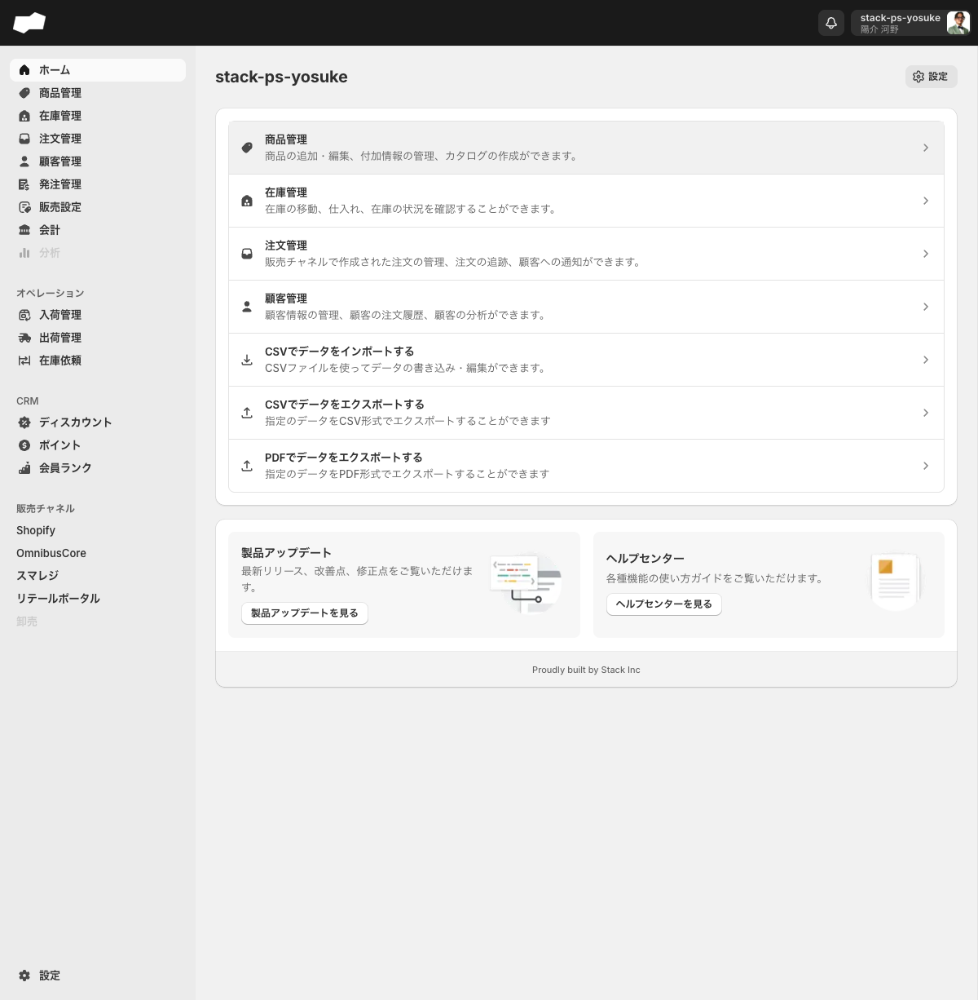
たとえで言うと
お店にたとえると、SQは「売り場」ではなくバックヤードです。
| 担当するもの | 例 | |
|---|---|---|
| 売り場（お客様が見る） | 商品を見せる・売る | ShopifyのECサイト、店舗のレジ（スマレジ） |
| バックヤード（SQ） | 商品台帳・在庫表・注文の控え・仕入れ記録 | SQの管理画面 |
売り場で何かが売れたら、その情報は自動でバックヤード（SQ）に流れ込みます。スタッフはSQを見て「どこに何個あるか」「何を出荷すべきか」を判断します。
SQがあると何がうれしい？
ネットと店舗の両方で販売していると、こんな悩みが出てきます。
- ネットでは「在庫あり」なのに、実際は店舗で売り切れていた
- 店舗にない商品を倉庫から取り寄せたいが、電話とメモで管理していて漏れる
- 注文・在庫・顧客の情報がチャネルごとにバラバラで、全体が見えない
SQはこれらを1か所に集めて解決します。
2. まず覚える言葉は4つだけ
最初からすべての用語を覚える必要はありません。この4つだけ押さえれば画面が読めるようになります。
| 言葉 | 意味 | 例 |
|---|---|---|
| 商品とバリエーション | 「商品」は品物のまとまり。「バリエーション」は色・サイズの組み合わせ1つ1つ | 商品「オーバーサイズスウェットシャツ」の中の「BEIGE / L」が1バリエーション |
| SKU | バリエーション1つ1つに付く管理番号。在庫はこの単位で数える | 486125-31-L |
| ロケーション | 在庫の置き場所。倉庫と店舗の2種類 | 物流倉庫 W0001 / ユニクロ-銀座店 R0001 |
| マスタ | 最初に登録しておく基本情報のこと | テナント（事業部）・ロケーション・取引先（仕入先）・決済方法 など |
SQの在庫はすべて「どのSKUが、どのロケーションに、何個あるか」という形で記録されます。この1文を覚えておくと、どの画面も読み解けます。
3. いちばん大事な流れ — 「取り寄せ販売」をストーリーで
SQの目玉機能です。実際の場面で見てみましょう。
場面: 銀座店にお客様。欲しいスウェットのLサイズが店頭にない。でも倉庫には在庫がある。「お取り寄せしますね」と言ったあと、裏側では何が起きるのか？
| ステップ | 操作する画面 | やること | ステータス |
|---|---|---|---|
| ① 依頼 | 在庫依頼 | 「倉庫からLサイズを1枚、銀座店へ」という在庫依頼を作る | 確認待ち |
| ② 取り置き | 在庫依頼 詳細 | 倉庫の在庫を「在庫を引当てる」で確保する（お店の取り置き予約のイメージ） | 確保済み |
| ③ 伝票発行 | 確保済み 一覧 | 「移動伝票を作成する」を実行。この瞬間に出荷指示と入荷指示が自動で生まれる | 出荷待ち / 入荷待ち |
| ④ 倉庫が発送 | 出荷管理 | 発送したら「出荷実績を登録する」 | 出荷完了 |
| ⑤ 店舗に到着 | 入荷管理 | 受け取ったら「入荷実績を登録する」。銀座店の在庫が増える | 入荷完了 |
3つだけ注意点があります。
- ④と⑤は登録すると巻き戻せません。 商品・数量・ロケーションをよく確認してから登録してください。
- 途中でやめたいときは、①の段階（確認待ち）でしか取り消せません。②で確保した後は最後まで進めるのが基本です。
- 在庫の数字が動くのは③の伝票発行のタイミングです。②の引当てでは、まだ画面上の在庫数は変わりません（詳しくは5章）。
図で見る: SQのデータの流れ（図解） 操作手順の詳細: 取り寄せ販売の処理手順
4. 機能まるわかり表
SQの全機能を「ひとこと」で紹介します。詳しい説明は後半の辞書パートにあります。
| 機能 | ひとことで言うと |
|---|---|
| 商品管理 | 商品台帳。商品とバリエーション（色・サイズ）を登録する |
| 在庫管理 | 在庫表。SKU×ロケーションごとの数を見る・直す |
| 注文管理 | 注文の控え。Shopifyなどから自動で入ってくる |
| 顧客管理 | お客様台帳。チャネル経由で自動登録される（手で作ることはできない） |
| 発注管理 | 仕入先（取引先）への発注書を作る |
| 販売設定 | 値段・予約販売・売りすぎ防止（上限/閾値）のルールを決める |
| 会計 | 売上実績を見る（画面名は「売上実績」） |
| 入荷・出荷管理 / 在庫依頼 | 取り寄せ販売の3画面（3章のストーリーで使ったもの） |
| CRM（ディスカウント / ポイント / 会員ランク） | クーポン・ポイント付与・会員ランクのルールを決める |
| 販売チャネル | Shopify・スマレジなど外部サービスとの接続設定 |
| 設定 | マスタ登録・権限・翻訳などの初期設定一式 |
| CSVインポート/エクスポート | データの一括取り込み・一括出力（詳細は7章） |
| 分析 / 卸売 | 準備中（画面はあるが未実装） |
商品の「ステータス」だけ先に覚える
商品には公開状態があります。つまずきやすいので先に説明します。
- ステータスは「下書き」「公開中」「アーカイブ済み」の3種類
- 作成フォームでは「下書き / 公開 / 非公開」の3択で、「非公開」を選ぶと「アーカイブ済み」として作成されます（同じ状態の別名です）
- 既存商品をアーカイブするには: 商品詳細 > 「その他の操作」 > 「商品をアーカイブする」
- アーカイブ済みの商品は、商品一覧の「アーカイブ済み」タブで確認できます
ここからは辞書パート
必要になったときに引いてください。
5. 在庫の数字の読み方（最重要・つまずきポイント）
まずは2つだけ
在庫管理の画面には数字の列がたくさん並びますが、最初は2つだけ見れば大丈夫です。
- 手持ち … 実際にそこにある数
- 販売可能 … 売ってもいい数
「手持ちはあるのに販売可能が少ない」ときは、誰かが取り置き（確保）していたり、出荷待ちだったりします。その内訳が残りの区分です。
画面によって区分の数が違う
2026-06-14更新: 在庫区分の名称が変わりました（確定済み→引当済み、確保済み→取置中）。SKU詳細に「積送中」「入荷予定」も新設。
| 画面 | 区分 |
|---|---|
| 在庫一覧 | 販売可能 / 引当済み / 取置中 / 手持ち（旧: 販売不可 / 確定済み / 販売可能 / 手持ち） |
| SKU詳細（ロケーション別・9列） | 販売可能 / 引当済み / 取置中 / 破損 / 検品 / 予備 / 手持ち / 積送中 / 入荷予定 |
「破損」「検品」「予備」が販売不可の在庫です（旧一覧では「販売不可」に合算表示されていました）。
| 区分 | 意味 |
|---|---|
| 販売可能 | 販売に使える在庫数 |
| 引当済み | 注文に引き当て済みの在庫数（旧「確定済み」） |
| 取置中 | 取置・移動用に確保された在庫数（旧「確保済み」。移動伝票作成時に「販売可能」から振替わる） |
| 破損 | 品質問題により販売不可の在庫数 |
| 検品 | 検品中で販売不可の在庫数 |
| 予備 | 予備として確保された在庫数 |
| 手持ち | 上記6区分の合計 |
| 積送中 | 出荷済み・入荷前の輸送中の数（移動先で計上・手持ちに含まれない） |
| 入荷予定 | 移動伝票作成〜出荷前の入荷予定数（移動先で計上・手持ちに含まれない） |
在庫数の計算式
手持ち = 販売可能 + 引当済み + 取置中 + 破損 + 検品 + 予備（積送中・入荷予定は含まない）
在庫数の反映タイミング
取り寄せ販売の各操作で、在庫の数字がいつ動くかの対応表です。
| 操作 | 移動元ロケーションの在庫変化 |
|---|---|
| 在庫依頼を作成する（確認待ち） | 変化なし |
| 在庫を引当てる（在庫依頼が確保済みへ） | 変化なし |
| 移動伝票を作成する | 「販売可能」が減り、「取置中」が同数増える（手持ちは変わらない）。移動先には「入荷予定」が立つ |
| 出荷実績を登録する | 移動元の取置中・手持ちが減り、移動先の入荷予定が「積送中」へ移る |
| 入荷実績を登録する | 移動先の積送中が「販売可能・手持ち」へ移る |
| 移動伝票をキャンセルする | 「取置中」が減り、「販売可能」が同数戻る |
| 出荷実績を登録する | 移動元の手持ちが減る |
| 入荷実績を登録する | 移動先の手持ちが増える |
注意: 在庫数はマイナスになることがあります。在庫が0のロケーションから出荷実績を登録しても処理はブロックされないためです。マイナスになった場合は調整伝票で修正してください。
6. 基礎用語の補足
2章の「4つの言葉」以外で、画面に出てくる用語です。
テナント
事業部のような区分け単位です。発注・ディスカウント・外部連携などの設定は、テナントに紐付いて管理されます。
例: 「ユニクロ」が1テナントとして設定されている状態
論理ロケーション（仮想店舗）
物理的には存在しない「仮想の店舗ロケーション」をSQ上に作成し、店舗在庫のうちECで販売してよい数だけをそこで管理する使い方があります。
作成は通常のロケーション作成と同じ操作です（専用機能はなし）。設定 > ロケーション > 「ロケーションを作成」で、場所種別「店舗」を選んで保存するだけで作れます。作成後は在庫一覧・SKU詳細・在庫依頼の選択肢に自動で表示されます。EC販売用の在庫数は、SKU詳細の「販売可能」列にある鉛筆アイコン（「販売可能数を編集」）から設定します。
- 実在しない入れ物なので、物理的な出荷・入荷はここでは行わない
- このロケーションをShopifyロケーションと連携させると、Shopifyはここの在庫数を見て販売可否を制御する
取り寄せ販売でこのロケーションをどう使うか: 取り寄せ販売（EC注文起点）の流れ
ロケーショングループ
複数のロケーションをまとめたグループです。Shopify連携の設定でロケーショングループを指定すると、グループ内で「在庫依頼を受け付ける」が有効な店舗に在庫リクエストが送られます。取り寄せ販売（EC注文起点）の運用では、論理ロケーションと対象店舗をひとつのグループにまとめてShopify連携に設定します。
カタログ
商品をグループ化する入れ物です。外部連携で「どの商品をどのチャネルに出すか」の制御に使います。
マスタ一覧
マスタ（基本情報）は「設定」メニューで管理します。事前に登録しておくと、各フォームの選択肢に表示されます。
| マスタ名 | 用途 |
|---|---|
| テナント | 事業部の区分け |
| ロケーション | 在庫の置き場所（倉庫・店舗） |
| ロケーショングループ | ロケーションのグループ化 |
| ブランド | 商品のブランド分類 |
| 取引先 | 仕入先（発注時に選択） |
| 決済方法 | 注文時の支払い手段 |
| 販売員 | 店舗スタッフの情報 |
7. ツール（CSV・PDF）
ホーム画面のクイックリンクからアクセスできます。
| ツール | 用途 |
|---|---|
| CSVインポート | 商品・在庫・販売設定・ポイントなど22カテゴリのデータを一括取り込み |
| CSVエクスポート | 在庫・売上実績・ポイント履歴などのデータを一括出力 |
| PDFエクスポート | 納品書のPDF出力 |
注意: CSVインポートの各テンプレートは、Googleスプレッドシートへの外部リンクとして提供されています。インポート画面内のリンクからダウンロードしてください。
CSVインポートの22カテゴリ一覧
| グループ | カテゴリ |
|---|---|
| 商品 | 商品 / 商品バリエーション / 商品画像 / 商品バリエーション画像 / カタログ |
| 価格 | 販売価格 (通常) / 販売価格 (セール) / 原価 |
| 販売 | 販売閾値 |
| 在庫 | 販売可能在庫 / 予約販売 / 在庫移動伝票 |
| メタフィールド | 商品 / 商品バリエーション |
| 出荷 | ヤマトB2クラウド / DHL |
| ポイント | 一括加算 / 一括減算 / キャンペーン対象商品 |
| 会員ランク | 基準ランク |
| 各種マスター | 管理ユーザー / ロケーション |
補足: 顧客管理画面の「インポート」メニュー内では「ポイント一括付与」という表記が使われていますが、CSVインポート画面の正式なカテゴリ名は「一括加算」です。同じ機能を指しています。
8. 画面全体マップ
SQの管理画面は左側のサイドナビで切り替えます。5つのグループに分かれています。
補足: ホーム画面の見出しには「ホーム」ではなく、ログイン中の組織名（例: stack-ps-yosuke）が表示されます。
メイン
| ナビのラベル | 画面の見出し | 何ができるか |
|---|---|---|
| ホーム | （組織名） | よく使う画面へのクイックリンク |
| 商品管理 | 商品管理 | 商品・バリエーションの登録・編集 |
| 在庫管理 | 在庫管理 | SKU×ロケーション単位の在庫確認・伝票管理 |
| 注文管理 | 注文管理 | 受注確認・下書き注文・返品 |
| 顧客管理 | 顧客管理 | 購入者・法人顧客の管理 |
| 発注管理 | 発注管理 | 仕入先への発注伝票作成 |
| 販売設定 | 販売設定 | 価格・予約販売・上限・閾値ルールの設定 |
| 会計 | 売上実績 | 売上データの確認（ナビ名と画面名が異なります） |
| 分析 > 収益 | 売上 | 現在準備中（ナビ名と画面名が異なります） |
| 分析 > レポート | — | 現在準備中 |
オペレーション
| ナビのラベル | 何ができるか |
|---|---|
| 入荷管理 | 倉庫への入荷処理の確認・管理 |
| 出荷管理 | 注文への出荷処理の確認・管理 |
| 在庫依頼 | 取り寄せ販売の起点。在庫確保を依頼する |
補足: サイドバーの「入荷管理」「出荷管理」「在庫依頼」「注文管理」の各ナビには、未完了件数のバッジが表示されます。件数が0のときはバッジが非表示になります。100件以上の場合は「100+」と表示されます。
CRM
| ナビのラベル | 画面の見出し | 何ができるか |
|---|---|---|
| ディスカウント | ディスカウント | クーポンコードによる割引ルールの設定 |
| ポイント | 注文ポイント | 注文へのポイント付与ルールの設定（ナビ名と画面名が異なります） |
| 会員ランク | 会員ランク | 購入金額に応じた会員ランクの設定 |
販売チャネル
| ナビのラベル | 何ができるか |
|---|---|
| Shopify | ShopifyストアとSQを連携する |
| OmnibusCore | OmnibusCoreとSQを連携する |
| スマレジ | スマレジPOSとSQを連携する |
| リテールポータル | 店舗スタッフ向け画面との連携設定 |
| 卸売 | B2B向け卸売機能。現在準備中 |
その他（設定）
| 設定項目グループ | 主な内容 |
|---|---|
| データ管理 | 管理メンバー・テナント・ロケーション・取引先・決済方法など各マスタの管理 |
| テンプレート | 納品書PDFのテンプレート設定 |
| 通知 | 通知用メールアドレスの管理 |
| 外部連携 | API（アプリ）・ロジザードZERO（倉庫管理）・Recustomer（返品・交換）との連携 |
| カスタムデータ | 翻訳（10言語対応）・メタフィールド・採寸ルール |
また、「設定」には権限グループの管理機能があります。初期状態では「特権管理者」グループのみです。店舗スタッフなど権限を制限したいメンバー向けに、カスタムの権限グループを追加作成できます。
9. 次のステップ
SQを実際に使い始めるには、以下の順番で進めることを推奨します。
設定の順番と依存関係の完全版は セットアップガイド にまとめてあります。「何から設定すればいいか分からない」場合はまずそちらを読んでください。
ステップ1: 初期設定
まず「設定」メニューでマスタデータを整備します。
- テナントを確認する
- ロケーション（倉庫・店舗）を登録する
- 取引先（仕入先）を登録する
- 決済方法を登録する
- 管理メンバーと権限グループを設定する
詳細: 初期設定の手順
ステップ2: 商品・在庫を登録する
- 商品を作成する（商品名・バリエーション・画像）
- 在庫数を設定する
- ステータスを「公開中」にする
詳細: 商品を作成する
ステップ3: 販売チャネルを接続する
Shopifyやスマレジとの連携を設定します。連携後、注文データが自動的にSQに取り込まれます。
詳細（Shopify）: Shopify連携 詳細（スマレジ）: スマレジ連携
ステップ4: 日々の運用
- 注文確認 → 出荷管理
- 在庫依頼 → 取り寄せ対応（倉庫↔店舗）
- 定期的な在庫調整（調整伝票）
詳細（取り寄せ販売）: 取り寄せ販売の処理手順
各機能の詳しい説明
| 機能 | 機能別ガイド | 作業手順 |
|---|---|---|
| 在庫依頼 | 在庫依頼 | 取り寄せ販売の処理手順 |
| 商品管理 | 商品管理 | 商品を作成する |
| 在庫管理 | 在庫管理 | 在庫を調整する |
| 注文管理 | 注文管理 | — |
| CRM | ディスカウント / ポイント / 会員ランク | ディスカウントを作成する |
| Shopify連携 | Shopify連携 | — |
| CSV運用 | CSVインポート | CSVで在庫を一括更新する |
よくある質問: 在庫と取り寄せ販売のよくある質問 ほか FAQ一覧 を参照してください。
SQ学習・FAQ制作整理マップ ✓ 確定
SQ学習・FAQ制作整理マップ
SQを学ぶ人、FAQを書く人、既存資料を見直す人が、どの資料を正として読むかを決めるための入口です。
まず読む順番
| 順番 | 読む資料 | 目的 |
|---|---|---|
| 1 | SQ完全ガイド | SQ全体の概念、機能分類、業務フローを通読する |
| 2 | データ事典①-設定で作るデータ | テナント、ロケーション、ブランド、カタログ、連携設定など、先に作るマスタを理解する |
| 3 | データ事典②-商品・在庫・運用のデータとステータス | 商品、SKU、在庫区分、伝票、ステータス、在庫の動きを理解する |
| 4 | 在庫管理 / 移動伝票 / 在庫依頼 | 実務で最も混乱しやすい在庫系の画面とデータ変化を押さえる |
| 5 | 取り寄せ販売の処理手順 | 在庫依頼から移動、出荷、入荷までの操作順を理解する |
| 6 | 在庫と取り寄せ販売のよくある質問 | 実務で質問になりやすい例外・注意点を確認する |
正本の優先順位
同じ内容に見える資料で説明が違う場合は、次の順で判断します。
| 優先 | 資料 | 位置づけ |
|---|---|---|
| 1 | _analysis/CODEX-OPS-PLAYWRIGHT-VERIFICATION-2026-06-18.md | 2026-06-18に画面操作で確認した最新の一次記録 |
| 2 | _analysis/CODEX-LEGACY-RECONCILIATION-2026-06-18.md | 古い検証ログとの食い違いを再確認した照合結果 |
| 3 | データ事典①/② | データ、ステータス、依存関係の正本 |
| 4 | 機能別ページ | 画面単位の項目、ボタン、注意点の正本 |
| 5 | 作業別ページ | 実務手順の正本 |
| 6 | FAQページ | ユーザーへの短い回答用。詳細は上位資料へリンクする |
| 7 | _analysis/ の過去ログ | 当時の確認記録。古いUIや未確認メモを含むため、最新ログと突合して使う |
2026-06-18時点で実機確認済みの範囲
| 領域 | 確認状況 |
|---|---|
| 発注伝票 | 作成、発注済み、キャンセル済み、発注済み後の編集不可を確認。発注起点の入荷指示・入荷予定反映は確認できず、断定禁止 |
| 移動伝票 | 作成、同一ロケーション移動、在庫0からの移動/出荷、出荷前キャンセル、出荷後入荷、入荷後出荷を確認 |
| 出荷管理 | 出荷実績登録、出荷完了後のボタン無効化、在庫0でも出荷完了できることを確認 |
| 入荷管理 | 出荷前の入荷、部分入荷、過入荷、手動完了、完了後の再登録不可を確認 |
| 調整伝票 | +1、-1、0の作成/実行、キャンセル、実施済み後キャンセル不可を確認。2026-06-18再確認では理由未選択は「理由を選択してください」で保存不可 |
| 取置伝票 | 作成、数量0バリデーション、処理済み化、取置中在庫の解放を確認。意図せず複数SKUが含まれたケースは要再現確認 |
| 在庫依頼 | 確認待ち、引当、確保済み、確保済み一覧から移動伝票作成、未引当依頼の終了を確認 |
| 在庫管理 | 9区分、履歴、販売可能数の直接編集、絶対値更新、負数保存を確認 |
まだ断定しない範囲
| 領域 | 理由 |
|---|---|
| 実注文、返品、売上実績、顧客、ポイント付与、会員ランク反映 | 実データや外部チャネル連携が必要 |
| Shopify/OmnibusCore/スマレジ/リテールポータルの本番同期結果 | 連携先の実設定・実データが必要 |
| 発注から入荷指示が作られる条件 | 画面文言では示唆されるが、2026-06-16/2026-06-18の実機では反映を確認できなかった |
| 破損・検品・予備への在庫振替経路 | 管理画面上の操作UIを確認できていない |
| 取置伝票の商品選択で複数SKUが混入した条件 | 再現確認が必要 |
FAQを書くときのルール
- 実機で確認した内容は、確認日と対象画面を残す。
- 画面文言と実際の結果が違う場合は、画面文言をそのまま信じず、実測結果を優先する。
- 「確保済み」は2種類あるため必ず分ける。
- 在庫依頼ステータスの「確保済み」
- 在庫区分の旧「確保済み」= 現「取置中」
- 在庫数の説明では、販売可能、取置中、手持ち、積送中、入荷予定を分ける。
- 入荷/出荷/調整/直接編集は巻き戻し不可または実質戻せないため、手順には確認ポイントを必ず入れる。
- 未確認の内容は `` を残し、FAQ本文で断定しない。
FAQに必ず入れるべき注意点
| 注意点 | 書き方 |
|---|---|
| 発注で入荷予定が増えるとは限らない | 「画面文言では入荷指示作成が示唆されるが、実機では確認できていない」と書く |
| 入荷は出荷前でも登録できる | 「出荷と入荷の順序は固定ではない。ただし移動伝票の完了には両方が必要」と書く |
| 部分入荷・過入荷ができる | 「予定数と実績数が一致しない場合は、必要に応じて完了に更新する」と書く |
| 在庫0でも移動/出荷できる | 「SQは不足をブロックしないため、マイナス在庫になり得る」と書く |
| 同じ配送元/配送先でも移動伝票を保存できる | 「同一ロケーション不可とは案内しない」と書く |
| 販売可能数の直接編集は絶対値 | 「数量は差分ではなく、変更後の販売可能数」と書く |
| 調整伝票の理由 | 「理由は5択で必須。未選択では保存できない」と書く |
| 在庫依頼から作る移動伝票 | 「外部システム連携扱いになり、商品編集が制限される」と書く |
SQ完全ガイド — ゼロから理解する指南書 ⚠ 要確認
SQ完全ガイド — ゼロから理解する指南書
SQをまったく知らない人が、最初から順番に読むだけで全体を理解できるように作った1本の読み物です。 基礎 → 応用 → 運用の順に積み上がります。前の章が次の章の土台になるので、上から順に読んでください。各章のはじめに「前提（先に読む章）」を書いてあります。 🖨 1ファイルで読む・印刷・共有したいときは SQ完全ガイド.html を開いてください（目次サイドバー付きの単体ページ。新しく入る人にこのファイルだけ渡せます）。 実測確認結果だけを短く把握したい場合は、先に SQ実測学習ガイド を読んでください。
このガイドの対象範囲
このガイドは、SQの標準機能を理解するための資料です。顧客ごとに個別開発された連携ロジックやバックエンド処理は、標準機能とは分けて扱います。
そのため、各章では単なる操作手順だけでなく、次の3点を重視します。
| 見る観点 | 説明 |
|---|---|
| いつ使うか | その機能が必要になる業務シーン |
| 何が前提か | 先に作るべきマスタ、チャネル接続、実データ |
| 何に影響するか | 在庫、注文、顧客、ポイント、外部連携への影響 |
通読マップ（全12章・3部構成）
| 部 | 章 | 内容 |
|---|---|---|
| 第1部 基礎 | 1. SQとは何か | 全体像・立ち位置 |
| 2. 基礎の言葉 | 商品・SKU・ロケーション・テナント・カタログ | |
| 3. 在庫の読み方 | 9つの区分と手持ちの式 | |
| 4. 在庫を動かす伝票 | 調整・取置・移動・発注・入荷/出荷 | |
| 第2部 応用 | 5. 取り寄せ販売の流れ | 伝票を組み合わせた中核フロー |
| 6. 売り方のルール | 価格・予約・上限・閾値 | |
| 7. お客様まわり | 顧客・会社・ディスカウント・ポイント・会員ランク | |
| 8. 外部サービス連携 | Shopify・スマレジ・OmnibusCore 他 | |
| 9. 注文・返品・会計 | 受注から会計までの合流点 | |
| 第3部 運用 | 10. 道具と土台 | CSV/PDF・権限・メンバー・カスタムデータ |
| 11. はじめ方 | 何をどの順番で設定するか（総仕上げ） | |
| 12. つまずき＋用語集 | 罠の回避と用語集 |
このガイドは既存の各ページ（機能ガイド・操作手順・FAQ・データ事典）の要点を、学習しやすい順にまとめ直したものです。個別の詳しい手順は各ページも参照してください。
第1部 基礎をかためる（第1〜4章）
SQの全体像と、「商品・在庫・伝票」という土台を理解します。ここを押さえれば、後半の応用がすべてこの組み合わせだと分かります。
1. SQとは何か — 全体像をつかむ
前提（先に読む章）: なし（最初に読んでください）
この章では、SQが何をするシステムなのか、どんな課題を解決するのか、そして画面の中に出てくるデータがどうつながっているかを説明します。ここを読めば、以降の章で登場する言葉や操作が「なぜそうなっているのか」わかるようになります。
SQをひとことで言うと
SQは、ネット通販（Shopify）と実店舗のPOSレジ（スマレジ）の商品・在庫・注文を、裏側でまとめて管理するシステムです。
お客様が商品を見て買う「売り場」ではありません。運営スタッフが在庫の数を確認し、倉庫に発注し、出荷指示を出すバックヤード（業務管理の裏方）です。
| 役割 | 担当するもの | 例 |
|---|---|---|
| 売り場（お客様が見る） | 商品を見せる・売る | ShopifyのECサイト、店舗のレジ（スマレジ） |
| バックヤード（SQ） | 商品台帳・在庫表・注文の控え・仕入れ記録 | SQの管理画面 |
売り場で何かが売れると、その情報は自動でSQに流れ込みます。スタッフはSQを見て「どこに何個あるか」「何を出荷すべきか」を判断します。
SQが解決する課題
ネット通販と実店舗の両方で販売していると、こんな悩みが出てきます。
- ネットでは「在庫あり」なのに、実際は店舗で売り切れていた
- 店舗にない商品を倉庫から取り寄せたいが、電話とメモで管理していて漏れる
- 注文・在庫・顧客の情報がチャネルごとにバラバラで、全体が見えない
SQはこれらを1か所に集めて解決します。中でも、倉庫と店舗のあいだで在庫を取り寄せる流れを伝票でしっかり管理できるのがいちばんの特徴です。
Shopify・スマレジ（表）とSQ（裏）の役割分担
SQは単独で動くのではなく、外部サービスと連携して力を発揮します。大まかな役割の分担は次のとおりです。
| 外部サービス | SQとの関係 |
|---|---|
| Shopify（ECサイト） | 商品・在庫・注文データをSQと双方向でやり取りする |
| スマレジ（POSレジ） | 在庫を同期する（同期の方向は設定で選択） |
| ロジザードZERO（倉庫管理） | 入出荷の実績データをやり取りする |
| Recustomer（返品・交換） | 返品・交換に関するデータをやり取りする |
注文はShopifyやスマレジから自動でSQに入ってきます。スタッフがShopifyの管理画面とSQの両方を行き来して情報を転記する必要はありません。
SQに登場するデータの大きな地図
SQの中でデータがどうつながっているかを示します。
① マスタ設定（テナント・ロケーション・取引先）
↓
② 商品を登録
↓
③ 在庫（どのSKUが、どのロケーションに、何個あるか）
↓
④ 注文（Shopify・スマレジから自動で入る）→ 在庫を引き当て
↓
⑤ 出荷 → 倉庫（WMS）へ出荷指示
↓
顧客（チャネル経由で自動登録）ここで出てくる言葉を4つだけ押さえておきましょう。
| 言葉 | 意味 | 例 |
|---|---|---|
| 商品とバリエーション | 「商品」は品物のまとまり。「バリエーション」は色・サイズの組み合わせ1つ1つ | 商品「オーバーサイズスウェットシャツ」の中の「BEIGE / L」が1バリエーション |
| SKU | バリエーション1つ1つに付く管理番号。在庫はこの単位で数える | 486125-31-L |
| ロケーション | 在庫の置き場所。倉庫と店舗の2種類 | 物流倉庫 W0001 / 銀座店 R0001 |
| マスタ | 最初に登録しておく基本情報のこと | テナント（事業部）・ロケーション・取引先（仕入先）・決済方法 など |
SQの在庫はすべて「どのSKUが、どのロケーションに、何個あるか」という形で記録されます。この1文を覚えておくと、どの画面も読み解けます。
SQでできること一覧
| 機能 | ひとことで言うと |
|---|---|
| 商品管理 | 商品台帳。商品とバリエーション（色・サイズ）を登録する |
| 在庫管理 | 在庫表。SKU×ロケーションごとの数を見る・直す |
| 注文管理 | 注文の控え。Shopifyなどから自動で入ってくる |
| 顧客管理 | お客様台帳。チャネル経由で自動登録される（手で作ることはできない） |
| 発注管理 | 仕入先（取引先）への発注書を作る |
| 販売設定 | 値段・予約販売・売りすぎ防止（上限/閾値）のルールを決める |
| 会計 | 売上実績を見る（画面名は「売上実績」） |
| 入荷・出荷管理 / 在庫依頼 | 取り寄せ販売の3画面。倉庫↔店舗間の在庫移動を伝票で管理する |
| CRM（ディスカウント / ポイント / 会員ランク） | クーポン・ポイント付与・会員ランクのルールを決める |
| 販売チャネル | Shopify・スマレジなど外部サービスとの接続設定 |
| 設定 | マスタ登録・権限・翻訳などの初期設定一式 |
| CSVインポート/エクスポート | データの一括取り込み・一括出力（22カテゴリ対応） |
| 分析 / 卸売 | 準備中（画面はあるが未実装） |
SQの目玉：取り寄せ販売
SQがもっとも力を発揮するのが「取り寄せ販売」です。たとえば、店頭に欲しいサイズがないお客様のために「倉庫から取り寄せますね」と言ったとき、裏側では次のような流れが動きます。
| ステップ | 操作する画面 | やること |
|---|---|---|
| ① 依頼 | 在庫依頼 | 「倉庫からLサイズを1枚、銀座店へ」という在庫依頼を作る |
| ② 取り置き | 在庫依頼 詳細 | 「在庫を引当てる」で在庫を確保する |
| ③ 伝票発行 | 確保済み 一覧 | 「移動伝票を作成する」を実行。この瞬間に出荷指示と入荷指示が自動で生まれる |
| ④ 倉庫が発送 | 出荷管理 | 「出荷実績を登録する」 |
| ⑤ 店舗に到着 | 入荷管理 | 「入荷実績を登録する」。銀座店の在庫が増える |
詳しい手順は後の章で説明します。
この後の読み進め方
2章以降では、上の機能を1つずつ丁寧に掘り下げます。SQを初めて使う方は、まず「取り寄せ販売」の流れを扱った章を読むと、SQが何のためにあるかが体感できます。すでに特定の機能を調べたい方は、目次から直接その章へ飛んでください。各章は独立して読めるように書いてありますが、2〜4章は通して読むと全体像がより明確になります。
2. 基礎の言葉 — 商品・SKU・ロケーション・テナント・カタログ
前提（先に読む章）: 第1章
この章では、SQを使ううえで欠かせない5つの概念を丁寧に説明します。「商品とSKUの違いは何か」「在庫はどこで管理されるのか」「テナントやカタログはなぜ必要か」が分かるようになります。
商品・バリエーション・SKU — 3層の構造
SQでは、1つの品物を「商品」「バリエーション」「SKU」の3つの層で表現します。最初は「3層もあるの？」と戸惑うかもしれませんが、仕組みを知ると在庫管理の見通しが格段に良くなります。
商品（いちばん上の層）
商品は品物のまとまりです。たとえば「オーバーサイズスウェットシャツ」が1件の商品になります。
管理画面の「商品管理」に登録します。商品には商品コード（例: 486125）と商品名が必ず付きます。商品コードは半角英数字・ハイフン・アンダースコアのみ使用できます。
注意: 商品コードは作成後に変更できません。 登録前に命名ルールを決めておきましょう。
バリエーション（色・サイズの組み合わせ1つ1つ）
バリエーションは、商品の中の「色・サイズなどの組み合わせ1つ1つ」です。商品「オーバーサイズスウェットシャツ」の中の「BEIGE / L」が1バリエーションにあたります。
商品を作成するとき、バリエーションの軸を「オプション」として設定します。
| UIラベル | 必須 | 説明 |
|---|---|---|
| オプション名 | 必須 | 軸の名前（例: サイズ、カラー） |
| 種別 | 必須 | 「サイズ」「カラー」「その他」の3択 |
| オプション値 | 必須 | 値の名前（例: S、M、L、BEIGE） |
「別のオプションを追加する」ボタンで、サイズとカラーのように複数の軸を持てます。
重要: バリエーションの軸（オプション名・種別）は商品作成時にしか決められません。 後から軸の種類を追加したり変更したりする操作はありません。設計は最初にしっかり考えてください。
SKU — 在庫管理の最小単位
SKU（エスケーユー）は、バリエーション1つ1つに付く管理番号です。「最小管理単位」とも呼ばれます。在庫はこのSKU単位で数えます。
例: 商品コード 486125 の「BEIGE / L」のSKUが 486125-31-L のような形です。
バリエーション作成フォームの「SKU (最小管理単位)」欄に入力します。このコードが、在庫管理・出荷・入荷のあらゆる場面で商品を特定するキーになります。
また、バリエーションにはSKUのほかにJAN・EAN・バーコードといった流通用のコードも登録できます。外部倉庫管理システム（ロジザード）との連携では、SKUコード・JANコード・EANコード・UPCコードのいずれかを「突き合わせキー」として選択できます。
3層のまとめ
| 層 | 名前 | 例 | 主に使う場面 |
|---|---|---|---|
| 上 | 商品 | オーバーサイズスウェットシャツ | 商品台帳の登録・検索 |
| 中 | バリエーション | BEIGE / L | 色・サイズ別の管理 |
| 下 | SKU | 486125-31-L | 在庫数の管理・伝票への記入 |
SQの在庫はすべて「どのSKUが、どのロケーションに、何個あるか」という形で記録されます。この1文が理解できると、どの画面も読み解けます。
ロケーション — 在庫の置き場所
ロケーションは「在庫を持つ場所（倉庫・店舗）」です。在庫はすべて「SKU × ロケーション」の組み合わせで記録されます。
「設定 > ロケーション」で作成します。作成した瞬間から、在庫一覧・SKU詳細・各種伝票のロケーション選択肢に自動で表示されます。
場所種別
ロケーションには場所種別（「店舗」または「倉庫」）があり、この選択によって登場する画面が変わります。
| 場所種別 | 出てくる場面 |
|---|---|
| 店舗 | リテールポータル連携の「店舗ロケーション」、店舗受取の「ロケーション」選択肢に出る。各画面の「店舗」タブに表示される |
| 倉庫 | リテールポータル連携の「在庫ロケーション」選択肢に出る。「倉庫」タブに表示される |
在庫依頼を受け付ける
ロケーション設定の「在庫依頼を受け付ける」をONにすると、その店舗が取り寄せ依頼の送付先になります（初期値はOFF）。
店舗受け取りを有効にする
「店舗受け取りを有効にする」をONにすると、店舗受取（BOPIS）の受取場所として使えます。
どんな時にロケーションを登録するか
ロケーションは「在庫を置く場所」を作るだけでなく、他の機能の選択肢にもなります。次のような運用をしたい場合は、先にロケーションを登録します。
| やりたいこと | 登録するロケーション | 追加で見る設定 |
|---|---|---|
| 倉庫在庫を管理したい | 場所種別「倉庫」 | 在庫数、発注、出荷管理 |
| 店舗在庫を管理したい | 場所種別「店舗」 | 在庫数、取置、移動伝票 |
| 店舗へ取り寄せ依頼を出したい | 依頼先の店舗ロケーション | 「在庫依頼を受け付ける」をON |
| 店舗受取を使いたい | 受取対象の店舗ロケーション | 「店舗受け取りを有効にする」をON |
| Shopifyに店舗在庫の一部だけ出したい | 論理ロケーション（場所種別は店舗） | ロケーショングループ、Shopify連携、販売可能数 |
| リテールポータルを使いたい | 店舗ロケーションと在庫ロケーション | リテールポータル連携の店舗/在庫ロケーション |
論理ロケーション（仮想店舗）という使い方
「論理ロケーション」は、物理的には存在しない仮想の場所をSQ上に作り、「店舗在庫のうちECで販売してよい数」だけを入れる器として使う運用です。専用の機能があるわけではなく、場所種別「店舗」で通常通りロケーションを作るだけです。
- EC販売用の在庫数は、SKU詳細の「販売可能数を編集」から設定します
- このロケーションをShopifyのロケーションと連携すると、Shopifyはここの在庫数を見て販売可否を判断します
Shopify接続後の引当・在庫リクエスト変換の実際の挙動（チャネル接続後でないと確認できないため、ここでは仕様の説明にとどめます）。
ロケーショングループ
複数のロケーションをまとめたグループです。Shopify連携やOmnibusCore連携では、このグループを指定することで「在庫の引当元」と「在庫リクエストの送付範囲」を制御します。
グループにはデフォルトのロケーションを設定します。Shopify注文の在庫はロケーション指定がない限りここから引き当てられます。
注意: 「新しいロケーションを自動的に含める」の設定は作成後に変更できません。
テナント — 事業部の区分け
テナントは「事業部」のような区分け単位です。SQのほぼすべての機能の「紐づけ先」になります。
「設定 > テナント」で作成します。テナントが0件のときは、発注伝票・ディスカウント・外部連携（Shopify・OmnibusCore・スマレジ・リテールポータル）・CSVエクスポートなど、テナントを必要とするフォームの選択肢が空になり保存できません。
「どのテナントが使えるか」はメンバーごとに制御できます。管理メンバーの詳細画面にある「ユーザーテナント」のチェックを外すと、そのメンバーはそのテナントにアクセスできなくなります。
マスタ — 最初に登録しておく基本情報
「マスタ」とは、SQの各機能が参照する基本情報のことです。マスタをあらかじめ登録しておくと、各フォームのドロップダウン（選択肢）に表示されるようになります。
逆に言うと、必要なマスタが未登録の状態では、参照側のフォームに選択肢が表示されません（エラーも出ません）。「選択肢が空」と感じたときは、対応するマスタが登録済みか確認してください。
主なマスタとその登録場所は次の通りです。
| マスタ名 | 登録場所 | 用途 |
|---|---|---|
| テナント | 設定 > テナント | 事業部の区分け（上記参照） |
| ロケーション | 設定 > ロケーション | 在庫の置き場所（上記参照） |
| ロケーショングループ | 設定 > ロケーショングループ | ロケーションのまとまり |
| ブランド | 設定 > ブランド | 商品のブランド分類 |
| 取引先 | 設定 > 取引先 | 仕入先（発注伝票で選択） |
| 決済方法 | 設定 > 決済方法 | 注文時の支払い手段 |
| 販売員 | 設定 > 販売員 | 店舗スタッフ情報 |
マスタの中には、作成後に変更できない項目があります。
| マスタ | 変更できない項目 | 対処方法 |
|---|---|---|
| ブランド | 外部ID | 削除して再作成 |
| ロケーショングループ | 「新しいロケーションを自動的に含める」 | 新規グループを作成 |
| 翻訳ルール | 言語 | 新規ルールを作成 |
カタログ — チャネルに出す商品の入れ物
カタログは「商品をグループ化する入れ物」です。外部連携（Shopify・OmnibusCore・スマレジ・リテールポータルなど）ごとに1つのカタログを指定することで、どの商品をどのチャネルに出すかを制御します。
「カタログ」（左ナビ）で作成・管理します。
チャネルとの紐付け
カタログとチャネルの紐付けは、チャネル連携側の設定から行います。たとえばOmnibusCore連携では「商品同期設定 > カタログ」で選択します。カタログ自体の編集画面から「販売先」を直接設定するUIはありません。
カタログ一覧の「販売先」列に表示される件数は、そのカタログを参照しているチャネル連携の数です。
Shopify連携・スマレジ連携でのカタログ紐付け設定経路は、チャネル接続後でないと確認できないため、ここでは仕様の説明にとどめます。
商品の追加方法
カタログへの商品追加は2つの方法があります。
- 手動追加: カタログ詳細の「商品を追加する」から商品を選んでチェックして追加
- 自動追加ルール: 「自動追加ルール」で「製造元」または「ブランドコード」が一致する商品を自動でカタログに追加するルールを設定
自動追加ルールの設定項目は次の通りです。
| 項目 | 選択肢 |
|---|---|
| 項目 | 「製造元」「ブランドコード」の2択 |
| 条件 | 「一致する」の1択 |
| 値 | テキストで自由入力 |
ブランドコードの一致判定には、「設定 > ブランド」で登録したコードが使われます（完全一致）。
CSVで商品を一括追加することもできます（「その他の操作 > インポート」）。
編集できること
カタログ詳細の「編集する」ダイアログから変更できるのはタイトル（カタログ名）のみです。
この章のまとめ
| 言葉 | 一言で言うと |
|---|---|
| 商品 | 品物のまとまり（例: オーバーサイズスウェットシャツ） |
| バリエーション | 色・サイズなどの組み合わせ1つ1つ |
| SKU | バリエーションに付く管理番号。在庫はこの単位で数える |
| ロケーション | 在庫の置き場所（倉庫・店舗・論理ロケーション） |
| テナント | 事業部の区分け。ほぼ全機能の紐づけ先になる |
| マスタ | 最初に登録しておく基本情報。未登録だと選択肢が空になる |
| カタログ | 商品のグループ。チャネルに出す商品の範囲を制御する |
次の章では、SQの中核である在庫管理の数字の読み方を詳しく見ていきます。
3. 在庫の読み方 — 9つの区分と手持ちの式
前提（先に読む章）: 第2章（商品・SKU・ロケーション）
SQの在庫は「どの商品（SKU）が・どの場所（ロケーション）に・何個あるか」を区分ごとに管理しています。この章では、画面に表示される数字の意味・計算式・操作による在庫の動き・編集時の注意点を順に説明します。
在庫はSKU×ロケーションで持つ
SQでは、在庫を「SKU（最小管理単位——商品のサイズやカラーなど、バリエーションごとの品番）×ロケーション（倉庫・店舗などの保管場所）」の組み合わせで管理します。同じSKUでも、倉庫Aと店舗Bでは在庫数が独立して管理されます。
在庫管理画面を開くと、まず一覧が表示されます。ここでは各SKUの在庫数を4列で確認できます。特定のSKUをクリックするとSKU詳細に進み、ロケーション別に9つの区分を確認できます。
一覧画面の4列
在庫管理トップの一覧には、以下の4列が表示されます。
| 列名 | 意味 |
|---|---|
| 販売可能 | 実際に販売に使える在庫数 |
| 引当済み | 注文に引き当て済みの在庫数 |
| 取置中 | 取置・移動用に確保された在庫数 |
| 手持ち | 物理的に手元にある在庫の合計数 |
「引当済み」は旧称「確定済み」、「取置中」は旧称「確保済み」からそれぞれ名称が変わりました。旧称をご存じの方は読み替えてください。
SKU詳細の9列と手持ちの式
特定のSKUをクリックしてSKU詳細に進むと、ロケーションごとに9つの区分で内訳を確認できます。
| 区分 | 意味 |
|---|---|
| 販売可能 | 販売に使える在庫数 |
| 引当済み | 注文に引き当て済みの在庫数（旧称「確定済み」） |
| 取置中 | 取置・移動用に確保された在庫数（旧称「確保済み」） |
| 破損 | 品質上の問題で販売できない在庫数 |
| 検品 | 検品中で販売できない在庫数 |
| 予備 | 予備として確保された在庫数 |
| 手持ち | 上記6区分の合計（下記の式を参照） |
| 積送中 | 出荷済みだがまだ到着していない輸送中の数（移動先で計上） |
| 入荷予定 | 移動伝票を作成してから出荷前までに移動先で計上される予定数 |
手持ちの計算式
手持ち = 販売可能 + 引当済み + 取置中 + 破損 + 検品 + 予備「積送中」と「入荷予定」は手持ちには含まれません。これらは移動中の荷物が「どこにあるか」を追うための別枠です。移動先のロケーションに入荷が完了して初めて、手持ち（と販売可能）に加算されます。
各区分の意味——何で増えて、何で減るか
| 区分 | 増える操作 | 減る操作 |
|---|---|---|
| 販売可能 | 鉛筆編集 / CSV「販売可能在庫」 / 移動伝票のキャンセル（元に戻る）/ 入荷実績の登録（移動先に到着） | 移動伝票の作成 / 取置伝票の作成（取置中へ振替） |
| 引当済み | 注文の引き当て | 出荷の進行 |
| 取置中 | 取置伝票の作成 / 移動伝票の作成（販売可能から振替） | 「処理済みとしてマークする」（販売可能へ戻る）/ 出荷実績の登録（手持ちごと減る）/ 移動伝票のキャンセル |
| 破損 / 検品 / 予備 | 管理画面上の振替操作は確認されていません | 同左 |
| 手持ち | 入荷実績の登録（移動先）/ 鉛筆編集（販売可能と同時に増減） | 出荷実績の登録（移動元） |
| 積送中 | 出荷実績の登録（移動先の入荷予定が積送中へ移る） | 入荷実績の登録（販売可能・手持ちへ） |
| 入荷予定 | 移動伝票の作成（移動先） | 出荷実績の登録（積送中へ移る） |
操作と在庫の動き——早見表
移動伝票を使ったロケーション間の移動を例に、操作ごとに在庫がどう動くかを示します。
| 操作 | 移動元の変化 | 移動先の変化 |
|---|---|---|
| 在庫依頼を作成（確認待ち） | 変化なし | — |
| 在庫を引当てる（在庫依頼が「確保済み」ステータスへ） | 変化なし | — |
| 移動伝票を作成 | 販売可能 −n、取置中 +n（手持ち不変） | 入荷予定 +n |
| 出荷実績を登録 | 取置中 −n、手持ち −n | 入荷予定 −n → 積送中 +n |
| 入荷実績を登録 | — | 積送中または入荷予定 −n → 販売可能 +n、手持ち +n。出荷前でも入荷登録は可能 |
| 移動伝票をキャンセル | 取置中が販売可能に全数戻る | — |
| 取置伝票を作成 | 販売可能 −n、取置中 +n | — |
| 「処理済みとしてマークする」（取置伝票） | 取置中 −n → 販売可能 +n（解放） | — |
| 調整伝票を実行 | 増減数がそのまま反映 | — |
| 鉛筆で販売可能数を編集 | 「販売可能」が入力値そのものに設定される（絶対値）。手持ちは差分だけ増減 | — |
「在庫依頼」ステータスの「確保済み」は名称変更していません。在庫区分の列名「確保済み」だけが「取置中」に変わった点に注意してください。
鉛筆編集（販売可能数の直接編集）
在庫詳細の「販売可能」列にある鉛筆アイコン（「販売可能数を編集」）をクリックすると、販売可能数を直接変更するダイアログが開きます。
重要: 入力値は絶対値です
「数量」に入れた値が、そのまま新しい販売可能数になります。加算ではありません。
例: 販売可能が1の状態で「9」と入力して保存すると、販売可能は9になります（8が足されるのではなく、1が9に置き換わります）。手持ちは差分（この例では+8）だけ増減します。
「理由」は必須入力です。空のまま「保存する」を押すと「理由を入力してください」と表示されて保存できません。
この操作は調整伝票とは別の経路です。調整伝票に新しい伝票は作られません。変更は「調整履歴」に記録されます。
マイナス在庫
手持ちが0のロケーションから出荷実績を登録しても、SQは処理をブロックしません。そのため、実際の手持ちを超えて出荷を登録すると、在庫数がマイナスになります。
マイナスになった在庫を修正するには、「在庫管理 > 調整伝票」から調整伝票を作成します。
調整履歴——いつ・なぜ在庫が変わったかを確認する
SKU詳細画面の「調整履歴」ボタンをクリックすると、そのSKUの在庫区分の変更記録を時系列で確認できます。
| 列名 | 内容 |
|---|---|
| 日時 | 変更が行われた日時 |
| アクティビティ | 変更の理由・操作名（鉛筆編集で入力した「理由」もここに表示される） |
| 販売可能 | 変更後の数量（差分付き。例: 5 (+5)） |
| 引当済み | 変更後の数量（差分付き） |
| 取置中 | 変更後の数量（差分付き） |
| 破損 | 変更後の数量（差分付き） |
| 検品 | 変更後の数量（差分付き） |
| 予備 | 変更後の数量（差分付き） |
| 手持ち | 変更後の数量（差分付き） |
在庫の過去の動きや原因を調べるときは、まずここを確認してください。
「積送中」「入荷予定」は調整履歴の表には含まれません。
区分の名称変更について（旧称との対照）
区分名がいくつか変更され、新しい列も追加されています。旧称を使っている資料や会話と照らし合わせる際の参考として、対照表を示します。
| 現在の名称 | 旧称 | 変更の種別 |
|---|---|---|
| 引当済み | 確定済み | 名称変更 |
| 取置中 | 確保済み | 名称変更 |
| 積送中 | （なし） | 新規追加 |
| 入荷予定 | （なし） | 新規追加 |
また、一覧画面（4列）では旧称「販売不可」という合算列がなくなり、かわりに「引当済み」「取置中」が個別に表示されるようになりました。
4. 伝票のしくみ — 調整・取置・移動・発注・入荷・出荷
前提（先に読む章）: 第3章（在庫の区分）
この章では、SQで扱う6種類の伝票それぞれの役割と、伝票を使ったときに在庫がどう変わるかを説明します。「どの場面でどの伝票を使えばよいか」がわかるようになることを目標にしています。
4-1. 伝票とは何か
伝票とは、在庫の増減・移動・確保・仕入れといった操作を記録する「指示書」のことです。SQでは操作を伝票として残すことで、「いつ・誰が・何を・なぜ動かしたか」を後から確認できます。
SQには次の6種類の伝票があります。
| 伝票の種類 | 何をするか | 在庫への主な影響 |
|---|---|---|
| 調整伝票 | 棚卸し差異・廃棄・紛失などで在庫数を手動で増減する | 「実行」後に増減数がそのまま反映（巻き戻し不可） |
| 取置伝票 | 特定の用途のために在庫を確保しておく | 作成した瞬間に対象在庫が「取置中」になる |
| 移動伝票 | 倉庫から店舗など、ロケーション間で在庫を動かす | 作成した瞬間に移動元が「取置中」、移動先が「入荷予定」に |
| 発注伝票 | 仕入先（取引先）への発注を記録する | 下書き作成、発注済み化、キャンセルができる。今回の実測では発注後も入荷予定は増えなかった |
| 入荷指示 | 移動伝票から自動生成される。入荷を記録する | 「入荷実績を登録する」で移動先の手持ちが増える（巻き戻し不可） |
| 出荷指示 | 移動伝票から自動生成される。出荷を記録する | 「出荷実績を登録する」で移動元の手持ちが減る（巻き戻し不可） |
4-2. 調整伝票 — 在庫数を手で増減する
どんなときに使うか
- 棚卸しをして実数と帳簿が合わなかった
- 商品を廃棄した・紛失した
- 見本として使ったので在庫から引いておきたい
- マイナス在庫（在庫が0を下回った状態）を修正したい
理由の5種類
調整伝票を作るとき、なぜ増減するかの理由を次の5種類から選びます（必須）。
| 理由 | 使う場面の例 |
|---|---|
| 廃棄 | 商品を処分した |
| 見本 | 展示・試着用として使った |
| 紛失 | 在庫が見当たらない |
| 棚卸差異 | 棚卸しで実数と帳簿が一致しなかった |
| その他 | 上記に当てはまらないとき |
「破損」「検品」「予備」は調整伝票の理由の選択肢にはありません。
作成と実行の流れ
- 「在庫管理 > 調整伝票」画面で「調整伝票を作成する」を選ぶ
- ロケーション・理由・商品（増減数） の3項目を入力して「保存する」を押す
- 伝票のステータスが「未実施」になる（この時点ではまだ在庫は変わらない）
- 内容を確認したら「実行」ボタンを押す
- 確認ダイアログ「在庫調整を実行する」が表示されるので「実行する」を押す
- ステータスが「実施済み」に変わり、在庫に即時反映される
注意: 未保存の変更があると「実行」ボタンがグレーアウトして押せません。先に「保存する」を押してから「実行」を押してください。
ステータス遷移
作成・保存 → [未実施] → 「実行」→ 確認ダイアログ「実行する」 → [実施済み]
↓
「キャンセル」 → [キャンセル]| ステータス | 在庫への影響 | 編集できるか |
|---|---|---|
| 未実施 | まだ変わらない | ロケーション・理由・商品・増減数を変更できる |
| 実施済み | 増減数がそのまま反映。巻き戻し不可 | すべて読み取り専用 |
| キャンセル | なし | — |
実行後の取り消しはできません。「この処理は巻き戻すことができません。」と確認ダイアログに明記されています。やり直したい場合は、反対方向の増減数で新しい調整伝票を作成してください。実施済み詳細にキャンセルボタンが表示される場合がありますが、押してもキャンセル不可トーストが出て状態は変わりません。
注意: 未実施の「キャンセル」は確認ダイアログなしで即時実行されます。
4-3. 取置伝票 — 在庫を「取置中」に確保する
どんなときに使うか
- 店舗での取置（お客さまのために商品をとっておく）
- 特定の用途のために一時的に在庫を止めておきたい
作成と処理の流れ
- 「在庫管理 > 取置伝票」画面で「取置伝票を作成する」を選ぶ
- ロケーション・取置する商品を入力する（メモ欄は任意）
- 「保存する」を押す
- この瞬間、対象在庫が「取置中」の区分に移動する（販売可能から引かれる）
- 伝票のステータスが「未処理」になる
- 取置が終わったら詳細画面の「処理済みとしてマークする」を押す
- 確認ダイアログ「処理済みとしてマークする」が表示されるので「実行する」を押す
- 取置中の在庫が解放され、販売可能に戻る。ステータスが「処理済み」になる
在庫の動き
| タイミング | 在庫の変化 |
|---|---|
| 取置伝票を保存したとき | 対象商品が「販売可能」から「取置中」へ移る |
| 「処理済みとしてマークする」を実行したとき | 「取置中」が解放され、「販売可能」へ戻る |
ステータス遷移
作成・保存 → [未処理]（在庫が「取置中」になる）
↓
「処理済みとしてマークする」 → 確認ダイアログ「実行する」
↓
[処理済み]（取置中が解放され販売可能へ戻る）「処理済みとしてマークする」を実行すると確認ダイアログに「取置伝票を処理済みにすることで、取置中の在庫が解放されます。」と表示されます。実行後は元の「未処理」に戻すことはできません。
未処理の取置伝票詳細に独立した「キャンセル」ボタンは表示されません。取置を終了する操作は「処理済みとしてマークする」で、実行すると取置中の在庫が解放されます。
4-4. 移動伝票 — ロケーション間で在庫を移す
どんなときに使うか
- 物流倉庫から店舗へ在庫を送る
- 店舗から別の店舗へ在庫を移す
- 取り寄せ販売の注文を受けて、在庫のある拠点から別の拠点へ在庫を移動させる
2つの作られ方
移動伝票には手動で作る方法と、フローから自動で作られる方法があります。
1. 単体作成（手動） 「在庫管理 > 移動伝票」画面で「移動伝票を作成する」から作成します。
単体作成では、配送元と配送先に同じロケーションを選んでも保存できます。保存後は移動伝票詳細へ遷移し、関連する出荷指示・入荷指示も作成されます。誤って同一ロケーションで作成した場合は、詳細画面の「その他の操作 > キャンセル」から取り消します。
2. 取り寄せ販売フロー経由（自動作成） 在庫依頼を引当てた後、確保済み一覧から「移動伝票を作成する」ボタンを押すと自動生成されます。この場合、伝票の詳細画面に次の注意文が表示され、商品の追加・削除などの編集はできません。
「この移動伝票は外部システムから連携されているため、編集（商品の追加や削除など）は制限されています。連携元システムの管理画面より操作を行ってください。」
作成時に起きること（重要）
移動伝票を作成した瞬間、次の3つのことが同時に起きます。
- 移動元の在庫: 「販売可能」から「取置中」へ移る（手持ち数は変わらない）
- 移動先の在庫: 「入荷予定」が増える（まだ手持ちには入らない）
- 出荷指示と入荷指示が自動生成される（出荷管理・入荷管理に通知バッジが出る）
ステータス遷移
移動伝票自体にステータスを進めるボタンはありません。出荷管理・入荷管理での実績登録に連動して自動的にステータスが変わります。
作成直後 → [出荷作業]
↓ 出荷実績を登録する
[一部受領済み]（一部の入荷実績が登録された状態）
↓ 残りの入荷実績を登録する
[受領済み]（すべての入荷実績が登録された状態）| ステータス | 在庫の状態 |
|---|---|
| 出荷作業 | 移動元: 取置中 / 移動先: 入荷予定 |
| （出荷実績登録後） | 移動元: 手持ち減少 / 移動先: 入荷予定→積送中 |
| （入荷実績登録後） | 移動先: 積送中→販売可能・手持ち増加 |
キャンセルするとき
伝票詳細の「その他の操作」メニュー内に「キャンセル」があります。キャンセルすると確認ダイアログが表示されます。
「移動伝票をキャンセルすると、この伝票に紐づく入荷予定および出荷指示もすべてキャンセルされます。」
キャンセル後の変化:
- 移動伝票のステータス: 「キャンセル」
- 確保していた在庫: 「取置中」から「販売可能」へ戻る
- 入荷指示: 入荷管理の「キャンセル」タブに「入荷キャンセル」として残る
- 出荷指示: 出荷管理の通常の一覧タブには表示されなくなる。関連する移動伝票詳細のリンクや直接URLから詳細を開ける場合がある
注意（取り寄せ販売フロー経由の伝票をキャンセルした場合）: 元の在庫依頼が「確保済み」のまま残り、そこから移動伝票を再作成することも在庫依頼をクローズすることもできなくなります。同じ取り寄せをやり直す場合は、在庫依頼を新規作成してください。
4-5. 発注伝票 — 仕入先への注文を記録する
どんなときに使うか
- メーカーや問屋など、仕入先（取引先）に商品を発注するときに使います
- 発注する商品・数量・単価・税率を伝票として残し、金額を管理します
発注伝票の作成フォームの主な項目
| 項目 | 説明 |
|---|---|
| 取引先 | 仕入先。「設定 > 取引先」で事前に登録しておく必要がある |
| テナント | 発注を紐付ける事業部 |
| 通貨 | 米ドル・ユーロ・日本円・タイバーツ・シンガポールドルから選べる（初期値: 日本円） |
| 商品 | 発注するバリエーション（SKU）を検索して追加する |
| 単価・数量・税率 | 明細行に入力。金額は単価×数量の税抜きで自動計算 |
発注伝票のステータス
2026-06-16/2026-06-18/2026-06-19の実機確認では、発注伝票 #IP-1000 / #IP-1001 / #IP-1003 を作成し、次の流れを確認しました。
下書き → 発注済み → キャンセル済み「発注する」を押すと、確認ダイアログに「発注を行うと入荷指示が作成されます。発注後は伝票の編集ができません。」と表示されます。ただし今回の実測では、入荷管理一覧に #IP-1000 / #IP-1001 / #IP-1003 起点の入荷指示は表示されず、対象SKUの「入荷予定」も増えませんでした。
そのため、FAQでは「発注すると必ず入荷予定が増える」とは書かず、発注起点の入荷指示連動は追加確認が必要な挙動として扱います。
4-6. 出荷指示と出荷実績 — 在庫を送り出す
出荷指示とは
移動伝票を作成すると、出荷指示が自動生成されます（手動での新規作成はできません）。出荷指示は「在庫を出荷する」という作業の指示書です。
出荷管理画面（「在庫管理 > 出荷管理」）でステータス別に一覧確認できます。
ステータスタブ
| タブ名 | 説明 |
|---|---|
| 保留中 | 出荷作業を保留している出荷指示 |
| 出荷待ち | 出荷作業を待っている出荷指示 |
| 依頼済み | 出荷依頼を済ませた出荷指示 |
| 作業中 | 出荷作業中の出荷指示 |
| 欠品・要対応 | 欠品など対応が必要な出荷指示 |
| 出荷完了 | 出荷実績が登録された出荷指示 |
※ キャンセルタブは出荷管理の一覧には存在しません。移動伝票がキャンセルされた出荷指示は通常の一覧タブには表示されません。関連する移動伝票詳細のリンクや直接URLから詳細を開ける場合があります。条件指定エクスポートには、出荷作業ステータス「キャンセル済み」の選択肢があります。
出荷実績を登録する
- 出荷指示の詳細画面を開く
- 右上の「出荷実績を登録する」ボタンを押す
- ダイアログで配送キャリア・追跡コードを入力する（どちらも任意。空でも登録できる）
- 「登録する」を押す
- ステータスが「出荷完了」に変わり、移動元の手持ち在庫が減る
注意: 出荷実績の登録後は巻き戻せません。登録後は「出荷実績を登録する」ボタンが無効化され、画面からの再登録・編集・削除はできません。
出荷実績の一括登録（CSV）
ヤマトB2クラウドまたはDHLの出荷実績CSVをインポートして、複数の出荷実績を一括登録できます。「インポート」ボタンのドロップダウンから選択します。
4-7. 入荷指示と入荷実績 — 在庫を受け取る
入荷指示とは
移動伝票を作成すると、出荷指示と同時に入荷指示も自動生成されます（手動での新規作成はできません）。入荷指示は「在庫を受け取る」という作業の指示書です。
入荷管理画面（「在庫管理 > 入荷管理」）でステータス別に一覧確認できます。一覧の「種別」列には「移動」と表示されます。
ステータスタブ
| タブ名 | 説明 |
|---|---|
| 入荷待ち | 入荷作業を待っている入荷指示 |
| 入荷依頼済み | 入荷依頼を済ませた入荷指示 |
| 入荷作業中 | 入荷作業中の入荷指示 |
| 要対応 | 対応が必要な入荷指示 |
| 入荷完了 | 入荷実績が登録された入荷指示 |
| キャンセル | キャンセルされた入荷指示 |
入荷実績を登録する
- 入荷指示の詳細画面を開く
- 右上の「入荷実績を登録する」ボタンを押す
- 確認ダイアログに「この処理は巻き戻すことができません。」と表示される
- 「登録する」を押す
- 入荷指示のステータスが「入荷完了」に変わる
- 紐づく移動伝票も自動的に「入荷完了」になる
- 移動先の手持ち在庫が増える
注意: 入荷実績の登録後は巻き戻せません。登録後は「入荷実績を登録する」ボタンが無効化され、画面からの再登録・編集・削除はできません。
4-8. 在庫の動きを一表で確認する
移動伝票を中心とした在庫の動きを時系列でまとめます。
| 操作 | 移動元の変化 | 移動先の変化 |
|---|---|---|
| 取置伝票を作成 | 販売可能 −n、取置中 +n（手持ち不変） | — |
| 「処理済みとしてマークする」 | 取置中 −n → 販売可能 +n（解放） | — |
| 移動伝票を作成 | 販売可能 −n、取置中 +n（手持ち不変） | 入荷予定 +n |
| 出荷実績を登録 | 取置中 −n、手持ち −n | 入荷予定 −n → 積送中 +n |
| 入荷実績を登録 | — | 積送中 −n → 販売可能 +n、手持ち +n |
| 移動伝票をキャンセル | 取置中 → 販売可能に戻る | — |
| 調整伝票を実行 | 増減数がそのまま反映（手持ちも変わる） | — |
4-9. 巻き戻せない操作と対処
伝票に関わる操作のうち、実行後に取り消せないものを一覧で確認しておきましょう。
| 巻き戻せない操作 | 対処方法 |
|---|---|
| 調整伝票の「実行」 | 反対の増減数で新しい調整伝票を作成して戻す |
| 出荷実績の登録 | 画面からの修正・削除は不可 |
| 入荷実績の登録 | 画面からの修正・削除は不可 |
| 取置伝票の「処理済みとしてマークする」 | 取置中の確保は解放される（元の「未処理」には戻せない） |
第2部 応用 — 基礎を組み合わせる（第5〜9章）
第1部の部品を組み合わせた実務の流れです。取り寄せ販売・売り方のルール・顧客対応・外部連携・注文処理を学びます。
5. 取り寄せ販売の流れ — SQの目玉機能
前提（先に読む章）: 第3〜4章（在庫の区分・伝票）
この章では、SQの中心的な機能である「取り寄せ販売」の全体の流れを順を追って説明します。在庫がどの段階でどう動くか、どこに気をつけるべきかを一通り理解できます。
5-1. 取り寄せ販売とは何か
「取り寄せ販売」とは、ある場所（たとえば物流倉庫）にある在庫を別の場所（たとえば店舗）へ移動させる一連の作業をSQ上で管理する機能です。
たとえば「A店が在庫を持っていないが、倉庫にはある。倉庫からA店へ移動させて販売に使いたい」というケースがこれにあたります。
SQでは、この移動を次の5つのステップで管理します。
| ステップ | 操作 | 結果 |
|---|---|---|
| 1 | 在庫依頼を作成する | 「どこへ」「何を」「いくつ」移動したいかを記録する |
| 2 | 在庫を引き当てる | 対象ロケーションの在庫を予約（確保）する |
| 3 | 移動伝票を作成する | 移動の伝票・出荷指示・入荷指示が同時に生まれる |
| 4 | 出荷実績を登録する | 移動元から商品が出たことを記録する |
| 5 | 入荷実績を登録する | 移動先に商品が届いたことを記録する |
5-2. 在庫依頼 — 「取り寄せてほしい」という依頼票
在庫依頼の作成
フローの出発点は「在庫依頼」です。在庫依頼とは「〇〇ロケーションへ、△△商品を□点取り寄せてほしい」という依頼を記録する機能です。
作成手順は次のとおりです。
- 左メニューの「在庫依頼」をクリックして一覧画面を開く。
- 「在庫依頼を作成する」ボタンをクリックする。
- 「商品バリエーション」欄の「選択」ボタンをクリックし、移動したい商品バリエーションを選ぶ。
- 「希望数」に移動させたい数量を入力する。
- 「移動先ロケーション」欄の「選択」ボタンをクリックし、在庫の届け先（例: 店舗）を選ぶ。
- 「リクエスト先ロケーション」欄の「選択」ボタンをクリックし、在庫の引当元（例: 物流倉庫）を選ぶ。
- 「保存する」ボタンをクリックする。
保存が完了すると詳細画面に遷移し、「在庫依頼を作成しました」というメッセージが表示されます。ステータスが「確認待ち」になったことを確認してください。
「リクエスト先ロケーション」について: これが在庫の引当元になります。ここで指定したロケーションだけが次のステップの引当てダイアログに選択肢として表示されます。
表示ラベルの違いに注意: 詳細画面では「リクエスト先ロケーション」は「依頼先」、「移動先ロケーション」は「引当先ロケーション」と表示が変わります。同じ意味です。
在庫依頼のステータス一覧
| ステータス | 意味 |
|---|---|
| 確認待ち | 作成済みで、まだ引当てをしていない状態 |
| 確保済み | 引当てが完了した状態 |
| 終了 | クローズ操作によって終了した状態 |
5-3. 在庫を引き当てる — 「これを使う」と予約する
「確認待ち」状態の在庫依頼に対して、実際に在庫を予約する操作が「引当て」です。
- 在庫依頼の詳細画面（ステータス: 確認待ち）で、画面右上の「在庫を引当てる」ボタンをクリックする。「在庫を引当てる」ダイアログが開く。
- ダイアログ内の「ロケーション」で引当元を確認する。
- 「数量」に確保する数量を入力する（上限は希望数まで）。
- 「引当てる」ボタンをクリックする。
操作が完了するとステータスが「確保済み」に変わり、「確保済み数量」に入力した数量が表示されます。
この時点では在庫数は動きません。 引当て操作は「使う予定」を登録するだけです。実際に在庫の数字が変わるのは、次のステップで移動伝票を作成したときです。
5-4. 移動伝票を作成する — 伝票と出荷・入荷指示が同時に生まれる
「確保済み」になった在庫に対して移動伝票を作成します。この操作をした瞬間に、出荷指示と入荷指示が自動で生成されます。 これがSQの取り寄せ販売のユニークな点です。
- 左メニューの「在庫依頼」→「確保済み」をクリックし、確保済み一覧画面を開く。
- 一覧に対象の引当行（商品・数量・移動元・移動先）が表示されていることを確認する。
- 画面右上の「移動伝票を作成する」ボタンをクリックする。「移動伝票を作成する」ダイアログが開く。
- 「移動元」欄のボタンをクリックし、在庫の出発元ロケーション（例: 物流倉庫）を選ぶ（未選択のままでは「実行する」ボタンがグレーアウトして押せません）。
- 「実行する」ボタンをクリックする。
- 「移動伝票を一括作成しました」というメッセージが表示され、一覧の該当行が消えることを確認する。
操作後、左メニューの「出荷管理」と「入荷管理」にそれぞれ未完了件数のバッジが表示されます。
移動伝票の編集制限について: 取り寄せ販売フロー経由で作成した移動伝票の詳細画面には「この移動伝票は外部システムから連携されているため、編集（商品の追加や削除など）は制限されています。連携元システムの管理画面より操作を行ってください。」というメッセージが表示されます。内容の変更はできません。
移動伝票を作成すると在庫はどう動くか
移動伝票を作成した時点で、在庫の区分が変わります。
| ロケーション | 変化 |
|---|---|
| 移動元 | 「販売可能」が減り、「取置中」（※）が同数増える。手持ちは変わらない |
| 移動先 | 「入荷予定」が立つ |
※ 「取置中」は、移動のために確保されている在庫の区分名です。旧称「確保済み」区分と呼ばれていたこともありますが、現在の名称は「取置中」です。
5-5. 出荷実績を登録する — 移動元から商品が出た
移動元ロケーションから商品が出荷されたら、その実績をSQに登録します。
- 左メニューの「出荷管理」をクリックし、一覧画面を開く。
- 「出荷待ち」タブに対象の出荷指示があることを確認する。
- 出荷指示の行をクリックして詳細画面を開き、商品・数量・配送元・配送先ロケーションを確認する。
- 画面右上の「出荷実績を登録する」ボタンをクリックする。「出荷実績を登録する」ダイアログが開く。
- 必要に応じて「配送キャリア」と「追跡コード」を入力する（どちらも任意で、空のまま登録できます）。
- 「登録する」ボタンをクリックする。
「出荷を完了しました」というメッセージが表示され、ステータスが「出荷完了」になります。
この操作は取り消せません。 登録後はステータスを元に戻す手段がありません。商品・数量・ロケーションを必ず確認してから登録してください。また、出荷完了後は「出荷実績を登録する」ボタンが無効化され、画面から再登録・編集・削除を行うことはできません。
出荷実績を登録すると在庫はどう動くか:
移動元ロケーションの手持ち在庫が減ります。
5-6. 入荷実績を登録する — 移動先に商品が届いた
移動先ロケーションに商品が到着したら、入荷実績を登録します。
- 左メニューの「入荷管理」をクリックし、一覧画面を開く。
- 「入荷待ち」タブに対象の入荷指示があることを確認する。
- 入荷指示の行をクリックして詳細画面を開き、「種別」が「移動」と表示されていることを確認する。商品・数量・ロケーションも確認する。
- 画面右上の「入荷実績を登録する」ボタンをクリックする。確認ダイアログが開く。
- ダイアログに表示されている「この処理は巻き戻すことができません。」という注意文を確認する。
- 「登録する」ボタンをクリックする。
「入荷実績を登録しました」というメッセージが表示され、ステータスが「入荷完了」になります。移動伝票の詳細画面を開くと「完了」と「入荷完了」の2つのバッジが並んで表示され、フローが完了したことが確認できます。
この操作も取り消せません。 ダイアログに明記されているとおり、入荷実績の登録後はステータスを元に戻す手段がありません。入荷完了後は「入荷実績を登録する」ボタンが無効化されます。
入荷実績を登録すると在庫はどう動くか:
移動先ロケーションの手持ち在庫が増えます。
なお、出荷実績と入荷実績の登録は、どちらを先に行っても構いません（順序は問いません）。
5-7. 在庫の動きをまとめる
5つのステップを通じて在庫がどう変化するかをまとめます。
| 操作 | 移動元の変化 | 移動先の変化 |
|---|---|---|
| 在庫依頼を作成（確認待ち） | 変化なし | 変化なし |
| 在庫を引当てる（確保済み） | 変化なし | 変化なし |
| 移動伝票を作成する | 販売可能 が減り、取置中 が同数増える（手持ちは不変） | 入荷予定 が立つ |
| 出荷実績を登録する | 手持ちが減る | — |
| 入荷実績を登録する | — | 手持ちが増える |
なお、SQでは在庫数がマイナスになっても処理がブロックされません。誤って在庫ゼロのロケーションから出荷実績を登録した場合は、調整伝票で修正してください。
5-8. 途中でやめたいとき — 行き止まりに注意
確認待ちの段階はクローズできる
在庫依頼がまだ「確認待ち」の状態であれば、詳細画面の「その他の操作」メニューから「在庫依頼をクローズする」を実行して「終了」にできます。
確保済みになると行き止まりが生まれる
在庫依頼が「確保済み」になった後は「在庫依頼をクローズする」がグレーアウトして実行できなくなります。
この段階でやり直したい場合は、移動伝票をキャンセルするしかありませんが、移動伝票をキャンセルしても元の在庫依頼は「確保済み」のまま残り、移動伝票の再作成も在庫依頼のクローズもできません。 これが「行き止まり」状態です。
移動伝票をキャンセルしたときの状態変化は次のとおりです。
| 対象 | キャンセル後の状態 |
|---|---|
| 移動伝票 | ステータスが「キャンセル」になる |
| 出荷指示 | 出荷管理の通常の一覧タブには表示されなくなる。関連リンクや直接URLで詳細を開ける場合がある |
| 入荷指示 | 入荷管理の「キャンセル」タブに「入荷キャンセル」として残る |
| 確保していた在庫 | 「取置中」から「販売可能」に戻る |
| 元の在庫依頼 | 「確保済み」のまま残る（クローズ不可・再作成不可） |
同じ取り寄せをやり直す場合は、在庫依頼を新規作成してください。 キャンセルした後の古い在庫依頼は再利用できません。
5-9. EC注文を起点とした取り寄せ販売（仕様説明）
ここまで説明したのは「手動で在庫依頼を作成する」パターンです。SQにはもう一つ、ECサイト（Shopify）からの注文を起点として自動的に在庫リクエストが発生するパターンがあります。
この仕組みは大まかに次のように動作するとされています（Shopify等の外部チャネルとの接続が前提となるため、接続後でないと実際の挙動を確認できません。ここでは仕様の説明にとどめます）。
事前設定の概要
| 設定 | 内容 |
|---|---|
| 論理ロケーションの作成 | EC販売用の仮想ロケーション（例: 「店舗在庫EC販売用」）をロケーションマスタに作成する。場所種別「店舗」で通常のロケーション作成と同じ操作で作れる |
| 在庫数の設定 | 論理ロケーションの「販売可能」数を、SKU詳細の「販売可能」列にある鉛筆アイコンから編集する |
| 在庫依頼フラグの設定 | 在庫リクエストを受け取る実店舗ロケーションの設定で「在庫依頼を受け付ける」をオンにする |
| ロケーショングループの設定 | 論理ロケーションと対象店舗をまとめるグループを作成し、Shopify連携に指定する |
注文発生後のフロー概要
- 顧客がECサイト（Shopify）で商品を購入する。
- 注文がSQに自動連携され、出荷指示のステータスが「出荷待ち・引き当て待ち」になる。
- 倉庫の実在庫が不足している場合、対象のSKUに在庫リクエストが自動で発生し、設定した店舗ロケーションに通知される。
- 店舗スタッフが店舗向け専用画面（リテールポータル）で在庫リクエストを確認し、在庫の「確保」登録を行う。
- 確保済みになった在庫に対して「移動伝票を作成する」を実行する（移動伝票はロケーションごとに分割して生成されます）。
- 出荷実績・入荷実績を登録する（手順はステップ4〜5と同様）。
- 入荷実績登録後、倉庫の在庫が増え、次の引き当て処理でEC注文の出荷指示が「引き当て済み」に変わる。
5-10. 各ステップの確認ポイント（チェックリスト）
作業後は次の表を使って状態を確認してください。
| 確認タイミング | 見るべき箇所 | 期待する状態 |
|---|---|---|
| 在庫依頼作成後 | 在庫依頼 詳細 > ステータス | 確認待ち |
| 引当て後 | 在庫依頼 詳細 > ステータス | 確保済み |
| 引当て後 | 在庫依頼 詳細 > 確保済み数量 | 希望数と一致 |
| 移動伝票作成後 | 確保済み一覧 | 対象行が消えている |
| 移動伝票作成後 | 左メニュー「出荷管理」 | 未完了の出荷指示バッジが表示される |
| 移動伝票作成後 | 左メニュー「入荷管理」 | 未完了の入荷指示バッジが表示される |
| 移動伝票作成後 | 在庫管理 > SKU詳細 > 移動元ロケーション行 | 「取置中」列に数量が計上されている（移動先には「入荷予定」が立つ） |
| 出荷実績登録後 | 出荷管理 詳細 > ステータス | 出荷完了 |
| 入荷実績登録後 | 入荷管理 詳細 > ステータス | 入荷完了 |
| 入荷実績登録後 | 移動伝票 詳細 > ステータス | 「完了」と「入荷完了」の2つのバッジが並んで表示される |
6. 売り方のルール — 価格・予約販売・販売上限・販売閾値
前提（先に読む章）: 第2〜3章（商品・在庫）
この章では、SQの「販売設定」にある4種類のルール——販売価格・予約販売・販売上限・販売閾値——が何を制御するものなのか、どう作るのかを説明します。各ルールを実際の販売チャネル（Shopifyなど）に結びつけたときに注文や在庫がどう動くかは、チャネル接続後でないと確認できないため、ここでは仕様の説明にとどめます。
販売設定とは何か
「販売設定」はサイドナビに常駐するメニューで、4つのサブメニューで構成されています。
| サブメニュー | 一言で言うと |
|---|---|
| 販売価格 | 「いくらで売るか」のルール |
| 予約販売 | 「在庫0でも受注を続けるか」のルール |
| 販売上限 | 「いくつまで売るか」のルール |
| 販売閾値 | 「在庫が何個を切ったら販売停止とみなすか」のルール |
これら4つはいずれも「ルール」という単位で作り、販売チャネルや商品バリエーション（SKU——商品の最小管理単位。サイズ・カラーの組み合わせ1つ1つを指します）に紐づけて使います。
販売価格ルール
何ができるか
- SKUごとに「通常価格」と「セール価格」を登録できます
- ルール1つにつき通貨を1種類設定します（日本円・米ドル・ユーロ・タイ バーツ・シンガポール ドルの5択）
- Shopify連携の設定でこのルールを指定すると、Shopifyの販売価格が自動的にルールの価格に基づいて設定されます
作成時の注意点
「通貨」はルール作成後に変更できません。「ルールを編集」モーダルを開いても通貨欄は「JPY」のように読み取り専用で表示され、「通貨は編集できません」と注釈されます。作成前に必ず確認してください。
なお、詳細画面のバッジには「通貨: 日本円」のように和名で表示されますが、編集モーダルでは「JPY」のようにISO英字コードで表示されます。画面によって表記が異なりますが、どちらも同じ設定を指しています。
通常価格とセール価格の違い
| 区分 | 期間設定 | CSVインポート |
|---|---|---|
| 通常価格 | なし（常時適用） | 不可（1件ずつ手動登録） |
| セール価格 | 開始日時（必須）・終了日時（任意） | 可 |
通常価格は「開始日時」「終了日時」のフィールドがなく、常時適用の基本価格として機能します。セール価格には期間を設定でき、CSVで一括登録することもできます。
通常価格の登録項目
詳細画面の「通常価格」カードから登録フォームへ進みます。
| 項目（UIラベル） | 必須 | 内容 |
|---|---|---|
| 商品バリエーションを選択する | 必須 | 価格を登録するSKUを選択する |
| 価格 | 必須 | 税抜き価格（通貨記号「￥」付き） |
| 価格(税込) | 任意 | 税込み価格 |
セール価格の登録項目
詳細画面の「セール価格」カードから登録フォームへ進みます。
| 項目（UIラベル） | 必須 | 内容 |
|---|---|---|
| 商品バリエーションを選択する | 必須 | 価格を登録するSKUを選択する |
| 価格 | 必須 | セール時の税抜き価格（通貨記号「￥」付き） |
| 価格（税込） | 任意 | セール時の税込み価格 |
| 開始日時 | 必須 | セール開始の日時 |
| 終了日時 | 任意 | セール終了の日時 |
予約販売ルール
何ができるか
「予約販売」とは、在庫数が0になっても注文の受付を続ける仕組みです。たとえば発売前の先行販売や、入荷待ちの商品を事前に受け付けたい場合に使います。
- ルールを作成し、予約販売を許可するSKUと「販売数」（受け付ける数量）を登録します
- SKUはCSVで一括登録することもできます
OmnibusCore連携の「在庫予約ルール」にこのルールを指定することで、在庫0でも注文が受け付けられるようになる想定です（実際に在庫0の商品が注文受付となるかどうかは、チャネル接続後でないと確認できないため、ここでは仕様の説明にとどめます）。
登録項目
ルール作成に必要なのは「タイトル」（ルールの管理名）のみです。
SKUの追加フォームでは以下を設定します。
| 項目（UIラベル） | 必須 | 内容 |
|---|---|---|
| 商品バリエーション | 必須 | 予約販売するSKUを選択する |
| 販売数 | 必須 | 予約販売を受け付ける数量（初期値「0」） |
注意点
- 予約販売ルールには開始日時・終了日時などの期間設定フィールドはありません
- 「販売数」は予約販売が可能な在庫数の固定値として設定します
販売上限ルール
何ができるか
特定の販売チャネルで、SKUごとに販売数量の上限を設けるルールです。「このチャネルでは、このSKUを集計開始日時から〇個まで売る」という設定ができます。
重要な前提条件
販売上限ルールには、作成時に「チャネル」の選択が必須（1件以上）です。ここで言う「チャネル」とは、Shopifyなど外部の販売チャネルとのシステム連携のことです。
チャネルの統合設定（Shopifyなど）が完了している場合にのみ、選択肢がチェックボックスリストとして表示されます。統合設定が完了していない環境では選択肢が0件になり、「保存する」を押すと「チャネルを選択してください」というエラーが表示されて作成を完了できません。
つまり、販売上限ルールはチャネル接続前には作成できません。
作成時の入力項目
| 項目（UIラベル） | 必須 | 内容 |
|---|---|---|
| 販売上限ルール名 | 必須 | ルールの管理名 |
| チャネル | 必須（1件以上） | 上限を適用する販売チャネル（接続済みのチャネルのみ表示される） |
ルール作成後の詳細画面では、SKUごとに販売上限数と集計開始日時を登録すると考えられます。ただし、2026-06-19時点のstagingではチャネル選択肢がなくルール作成を完了できないため、詳細画面のUIラベル原文はチャネル接続済み環境で確認してください。
販売閾値ルール
何ができるか
「閾値（しきいち）」とは、ある基準を下回ったら対応が必要と判断するための境界値のことです。販売閾値ルールは、「在庫が〇個を切ったらこのSKUの販売を停止とみなす」という判断基準を設定するものです。
リテールポータル連携（店舗スタッフ向け画面）の設定でこのルールを指定すると、在庫閾値による販売可否の判断に使われます。
閾値に達した場合の具体的な挙動（販売停止・通知など）はUI上に説明文がありません。チャネル接続後でないと確認できないため、FAQでは設定項目と登録手順までに留め、実際の販売停止・通知は断定しません。
3種類の閾値登録方法
販売閾値ルールでは、SKUへの閾値の登録に3つの方法を使い分けられます。
| 方法 | 内容 |
|---|---|
| デフォルト閾値 | ルールに個別登録されていないすべてのSKUに一律で適用する閾値 |
| 個別登録（手動） | SKUを1件ずつ指定して閾値を設定する |
| 自動追加ルール | ブランドコードが一致するSKUをまとめてルールに追加し、一括で閾値を設定する |
ルール作成時の入力項目
| 項目（UIラベル） | 必須 | 内容 |
|---|---|---|
| ルール名 | 必須 | ルールの管理名 |
| デフォルトの閾値を設定する | 任意 | チェックをONにすると「デフォルトの閾値」数値入力欄が展開される |
| デフォルトの閾値 | チェックON時は必須 | 全バリエーションに適用するデフォルト閾値の数値（初期値「0」） |
画面の説明文（原文）:
「この設定を有効にすることで、閾値ルールに含まれていないすべての商品バリエーションにデフォルト閾値を適用することができます。」
デフォルト閾値が有効な場合、詳細画面にバッジ「デフォルト閾値が有効」が表示されます。
なお、販売価格・予約販売の保存後は詳細画面へ遷移しますが、販売閾値の保存後は一覧画面へ戻ります。詳細画面はその後一覧からルール名をクリックして開いてください。
個別登録（手動）の入力項目
詳細画面の「閾値を追加する」から登録フォームへ進みます。
| 項目（UIラベル） | 必須 | 内容 |
|---|---|---|
| 商品バリエーションを選択する | 必須 | 閾値を設定するSKUを選択する |
| 閾値 | 必須 | SKUに設定する閾値の数値（初期値「0」） |
登録済みの閾値は、詳細画面の一覧に「バリエーション」「SKU」「商品コード」「閾値」の列で表示されます。行を選択すると「閾値を削除」ボタンが表示され、確認ダイアログ「閾値を削除しますか？」が開きます。本文は「選択された1件の閾値を削除します。この処理は巻き戻すことができません。」です。2026-06-19の実機確認では、削除確定直後の画面には対象行が残りましたが、詳細を再読み込みすると行は消えました。削除後はリロードして反映を確認してください。
自動追加ルールの入力項目
詳細画面の「自動追加ルール」から設定画面へ進み、「自動追加ルールを追加する」から作成フォームへ進みます。
| 項目（UIラベル） | 必須 | 内容 |
|---|---|---|
| 項目 | 必須 | 自動追加の対象とする属性（現在の選択肢: 「ブランドコード」のみ） |
| 条件 | 必須 | 一致の条件（現在の選択肢: 「一致する」のみ） |
| 値 | 必須 | 照合するブランドコードの値 |
| 閾値 | 必須 | 自動追加されたSKUに設定する閾値（初期値「1」） |
設定例: 「項目: ブランドコード」「条件: 一致する」「値: BRAND01」「閾値: 5」と入力すると、ブランドコードが「BRAND01」のすべてのSKUが閾値5でルールに自動追加されます。ここで言う「ブランドコード」は、設定 > ブランドのマスタに登録した各ブランドの「コード」と照合されます。
4つのルールの対応チャネルまとめ
各ルールがどの連携先に結びつくかをまとめます。
| ルール | 結びつく連携先 |
|---|---|
| 販売価格ルール | Shopify連携の「販売価格ルール」/ OmnibusCore連携サイトの「販売価格」 |
| 予約販売ルール | OmnibusCore連携の「在庫予約ルール」 |
| 販売上限ルール | 作成時に選択した販売チャネル（Shopifyなど） |
| 販売閾値ルール | リテールポータル連携の「販売閾値ルール」 |
作成後に変更できない項目
| ルール | 変更できない項目 | 対処 |
|---|---|---|
| 販売価格ルール | 通貨 | 新しい通貨でルールを新規作成する |
その他の項目（ルール名・配下のSKU設定など）は詳細画面の「ルールを編集する」から変更できます。
この章のポイントまとめ
- 販売価格ルール: 通貨は作成後変更不可。通常価格はCSVインポート不可（手動1件ずつ）、セール価格はCSV可
- 予約販売ルール: 在庫0でも注文を受け付ける枠を設定する。期間設定フィールドはない
- 販売上限ルール: チャネル選択が必須のため、チャネル未接続の環境では作成を完了できない
- 販売閾値ルール: デフォルト閾値・個別登録・自動追加ルール（ブランドコード一致）の3方法でSKUに閾値を設定できる
7. お客様まわり — 顧客・会社・ディスカウント・ポイント・会員ランク
前提（先に読む章）: 第1〜2章（全体像・基礎の言葉）
この章では、SQにおける顧客データの管理方法と、CRM（顧客関係管理）のコアである「ディスカウント（クーポン割引）」「ポイント付与」「会員ランク」の各機能について説明します。どの機能も「ルールを先に作っておく」という設計になっており、作る順番と変更できない項目を押さえておくことが重要です。
7-1. 顧客（購入顧客）
顧客データはチャネル経由で自動登録される
SQの顧客管理画面（「顧客管理」メニュー）には、Shopifyなどの販売チャネルを通じて購入した顧客が自動的に登録されます。管理画面から直接新しい顧客を作成するボタン・フォームはありません。
チャネル接続後でないと実際の顧客登録は確認できないため、ここでは仕様の説明にとどめます。
顧客の探し方
顧客一覧では、以下の方法で特定の顧客を絞り込めます。
| 絞り込み方法 | 操作 |
|---|---|
| メールアドレスで検索 | 「検索と絞り込みの結果」を押して展開される「メールアドレスで検索する」テキストボックスに入力する |
| テナントで絞り込む | 「絞り込みを追加」から「テナント」を選択する |
| メタフィールドで絞り込む | 「絞り込みを追加」から「メタフィールド」を選択する |
| 会員証バーコードで絞り込む | 「絞り込みを追加」から「会員証バーコード」を選択する |
ポイントの一括付与（CSV）
顧客一覧画面の「インポート」ドロップダウンから「ポイント一括付与」を選ぶと、CSVファイルを使って複数の顧客にポイントをまとめて付与する画面へ進めます。このインポートドロップダウンに含まれる操作は「ポイント一括付与」のみで、顧客データ本体のCSVインポートはこの画面からは行えません。
顧客CSVエクスポート
顧客データのCSVエクスポートは、顧客管理画面ではなく、別画面のCSVエクスポート専用画面から行います。
7-2. 会社（法人顧客）
「顧客」と「会社」は別の管理画面
SQでは、個人の購入顧客（チャネル経由で自動登録）とは別に、法人顧客を「会社」として管理画面から直接作成できます。会社には「ロケーション（納品先住所）」と「担当者（発注確認メールの送付先）」を紐付けられます。
会社の作成手順
- 「会社」メニューを開く
- 右上の「会社を作成する」ボタンをクリックする
- 以下の情報を入力する
会社情報
| 項目 | 必須 | 補足 |
|---|---|---|
| 会社名 | 必須 | 請求書・配送ラベルに表示されます |
| 会社ID | 任意 | 外部IDがある場合に登録します |
| 担当者 | 任意 | 顧客を検索して紐付けます |
最初のロケーション（納品先）情報
| 項目 | 必須 | 補足 |
|---|---|---|
| ロケーション名 | 必須 | 例：「東京本社」 |
| ロケーションID | 任意 | 外部IDがある場合に登録します |
| コード | 任意 | — |
配送先住所（国/地域・性・名・郵便番号・都道府県・市区町村・住所が必須）
請求先住所：デフォルトで「配送先住所と同じ」がチェック済みです。異なる場合はチェックを外して個別入力します。
- 入力完了後、「保存する」をクリックする
会社詳細画面でできること
作成後の会社詳細画面では以下の操作が行えます。
| 操作 | 場所 |
|---|---|
| ロケーション（納品先）を追加する | 「ロケーション」セクションの「ロケーションを追加」ボタン |
| 担当者を追加する | 「担当者」セクションの「担当者を追加」ボタン |
| 会社名・会社ID・メモを編集する | 右サイドバーの各項目の編集ボタン（ペンアイコン） |
| 注文履歴を確認する | 「直近の注文」セクション |
担当者の追加
「担当者を追加」ボタンを押すと「担当者を作成する」ダイアログが開きます。
| 項目 | 必須 | 補足 |
|---|---|---|
| 姓 | 必須 | — |
| 名 | 必須 | — |
| メールアドレス | 必須 | 発注の確認メールなどはこのメールアドレスに配信されます |
| 電話番号 | 任意 | — |
注意事項：担当者は「顧客管理」画面の顧客とは別のデータです。担当者を作成しても、顧客管理の一覧には表示されません。
注意：「インポート」ボタンは現在未実装
会社一覧画面の「インポート」ボタンは、クリックしても何も起きません（現時点では機能していません）。
7-3. ディスカウント（クーポン割引）
ディスカウントとは
「ディスカウント」は、顧客がクーポンコードを入力することで注文に割引を適用する機能です。コードなしで自動的に割引される「自動適用」タイプは存在しません。すべてのディスカウントにクーポンコードの設定が必須です。
ディスカウントの状態
| ステータス | 意味 |
|---|---|
| スケジュール済み | 有効期間の開始日時より前 |
| 有効 | 有効期間内（注文に適用可能な状態） |
| 期限切れ | 終了日時を過ぎた |
ディスカウントの作成
- 「ディスカウント」メニューを開く
- 右上の「ディスカウントを作成する」ボタンをクリックする
- 以下の項目を入力する
基本情報
| 項目 | 必須 | 制約 |
|---|---|---|
| タイトル | 必須 | 管理用の名前。例：「年末セール」 |
| 説明文 | 任意 | — |
| クーポンコード | 必須 | 顧客が入力するコード。作成後は変更できません |
| テナント | 必須 | 選択されたテナントでディスカウントが利用できます。作成後は変更できません |
割引設定
| 項目 | 必須 | 制約・選択肢 |
|---|---|---|
| 割引方法 | 必須 | 「割引率」（1〜100%）または「割引額」（円）から選ぶ |
| 割引率（%）または割引額（円） | 必須 | 選択した方法に応じた入力欄が表示される |
| 割引が適用可能な最高購入額を設定する | 任意 | チェックをONにすると「最高購入額（円）」入力欄が追加される |
適用条件
| 項目 | 必須 | 制約・選択肢 |
|---|---|---|
| 割引要件 | 任意 | 「最低購入額」または「最低購入数量」を設定できる |
| すべての商品を割引対象に設定する | 任意 | OFFのまま保存した場合は、後から詳細ページの「商品管理」タブで対象商品を個別に設定する。アプリ画面の説明文：「この設定を有効にしない場合は、割引の作成後に対象の商品を設定することができます」 |
利用制限
| 項目 | 必須 | 制約・選択肢 |
|---|---|---|
| お客様1人につき1回のみの使用とする | 任意 | チェックをONにすると同一顧客は1回のみ使用可能になる |
有効期間
| 項目 | 必須 |
|---|---|
| 開始日時 | 必須 |
| 終了日時 | 必須 |
- 入力完了後、「保存する」をクリックする
作成後にできること（詳細ページのタブ）
ディスカウントを作成すると、詳細ページが5つのタブで構成されます。
| タブ名 | 内容 |
|---|---|
| 基本情報 | ルールの設定内容を確認・編集する |
| 利用履歴 | 割引が適用された注文の履歴を確認する（CSVエクスポートも可） |
| 顧客管理 | 対象顧客を個別に追加・管理する |
| 店舗管理 | 対象店舗を個別に追加・管理する |
| 商品管理 | 対象商品バリエーションを個別に追加・管理する |
作成後に変更できない項目
| 項目 | 理由 |
|---|---|
| クーポンコード | 詳細ページの編集ダイアログに項目が表示されない |
| テナント | 詳細ページの編集ダイアログに項目が表示されない |
注意事項
- 作成フォームでは「クーポンコード」と表記されますが、詳細ページでは「割引コード」と表記が変わります（同じものを指しています）
- 割引率150%で保存を試すと、保存後も作成フォームに残り、一覧にも作成されませんでした。画面上のエラー文言は確認できませんでした。
- 「顧客管理」タブの「顧客セグメントを選択して追加」は現在利用できない状態になっています
- 「店舗管理」タブでロケーションを追加する際、適用種別は「値引き」のみ選択できます（「金種」は選択できない状態です）
- 「すべての商品を割引対象に設定する」をONで保存した場合、基本情報タブの適用条件 > 対象商品は「成功 / すべての商品」と表示されます
- 「Shopify連携」セクションから「連携する」ボタンでShopifyへの連携操作が行えます。ただし、Shopify接続済み環境での実際の挙動は接続後でないと確認できないため、ここでは仕様の説明にとどめます
7-4. ポイント付与ルール
ポイントの仕組み
SQのポイントは「注文ポイント付与ルール」によって管理されます。「○円の購入ごとに○ポイント付与する」という基本ルールを作成し、そこに有効期限・オンライン/店舗別の付与タイミング・会員ランクとの連携などを設定します。
注文ポイント付与ルールの作成
- 「ポイント」メニューを開く（画面の見出しは「注文ポイント」と表示されます）
- 「付与ルールを作成する」ボタンをクリックする
- 以下の項目を入力する
ルール（付与率の設定）
| 項目 | 必須 | 補足 |
|---|---|---|
| タイトル | 必須 | 管理用の名前 |
| 購入金額（円ごとに） | 必須 | ポイントを付与する購入金額の単位。例：「100」と入力すると「100円ごとに」という単位になる |
| ポイント | 必須 | 上記金額単位あたりの付与ポイント数。例：「1」と入力すると「100円ごとに1ポイント付与」となる |
有効期限
| 項目 | 必須 | 補足 |
|---|---|---|
| ポイントを付与してから有効な日数 | 必須 | 付与されたポイントが使える日数（例：365） |
オンライン注文のポイント有効までの日数
| 項目 | 必須 | 補足 |
|---|---|---|
| オンライン注文のポイント有効までの日数 | 必須 | オンラインでの注文の出荷完了から顧客へポイントを付与するまでの日数です。0日に設定した場合、発送が完了後に即時ポイントが付与されます。 |
店舗注文のポイント有効までの日数
| 項目 | 必須 | 補足 |
|---|---|---|
| 店舗注文のポイント有効までの日数 | 必須 | 店舗での決済完了から顧客へポイントを付与するまでの日数です。0日に設定した場合、即時ポイントが付与されます。 |
会員ランク算出ルール（任意）
このポイント付与ルールに会員ランク算出ルールを紐付けると、そのルールが適用される顧客を指定の会員ランク算出ルールで管理できます。紐付ける場合は先に会員ランク算出ルールを作成しておく必要があります（作成順序については 7-5. 会員ランク を参照）。
ポイントキャンペーン優先設定
複数のポイントキャンペーンが同一注文に適用できる条件を満たす場合、どちらを優先するかを設定します。
| 選択肢 | 説明 |
|---|---|
| 開始日時が新しいキャンペーンを優先する | より新しく設定されたキャンペーンを優先する（初期値） |
| 開始日時が古いキャンペーンを優先する | より古く設定されたキャンペーンを優先する |
ヘルプ文：「注文に対して条件を満たすポイントキャンペーンが複数個ある場合に、どのキャンペーンを優先的に適用するかを設定します。」
- 入力完了後、「保存する」をクリックする
付与ルール詳細画面のセクション
保存後の詳細画面には「会員ランク倍率」と「商品倍率」の2つの追加設定セクションがあります。
| セクション | 内容 |
|---|---|
| 会員ランク倍率 | 会員ランク算出ルールを紐づけたうえで、会員ランクごとのポイント付与倍率を設定する |
| 商品倍率 | 商品ごとのポイント付与倍率を設定する |
会員ランク倍率は、未設定時に表示される「会員ランク算出ルールを設定する」から算出ルールを紐づけると追加できるようになります。追加フォームでは「会員ランク」と「倍率」を入力します。行を選択すると「削除する」が表示され、確認ダイアログ「会員ランクのポイント倍率を削除しますか？」で削除できます。
商品倍率は「すべての商品倍率を見る」から一覧へ進み、「商品倍率を作成する」で商品と倍率を指定して追加します。行を選択すると「削除する」が表示され、確認ダイアログ「商品倍率を削除しますか？」で削除できます。
ポイントキャンペーン
「ポイント」メニューの「キャンペーン」から、期間限定でポイントを増倍・追加付与するキャンペーンを作成できます。
作成フォームの主な項目
| 項目 | 必須 | 制約・選択肢 |
|---|---|---|
| タイトル | 必須 | 管理用の名前 |
| 開始日時 | 必須 | — |
| 終了日時 | 必須 | — |
| ポイントキャンペーン種別 | 必須 | 「なし」「会員ランク」「購入金額」「商品」から選ぶ |
| ポイント付与方法 | 必須 | 「通常倍率に指定の倍率を加えた合計倍率でポイントを付与する」または「通常付与ポイントに加えて指定のポイントを追加で付与する」を選ぶ。作成後は変更できません |
| 対象の注文ポイント付与ルール | 必須 | ここで選択されたルールが適用される注文がこのポイントキャンペーンの対象となります。作成後は変更できません |
| チャネル | 任意 | 未入力の場合は適用されません |
| 対象店舗 | 任意 | 詳細画面で店舗単位または店舗グループ単位で追加する |
ポイントキャンペーン種別で「なし」を選ぶと、ポイント付与方法に応じて入力欄が切り替わります。「通常倍率に指定の倍率を加えた合計倍率でポイントを付与する」では倍率入力、「通常付与ポイントに加えて指定のポイントを追加で付与する」では固定ポイント数の入力欄が表示されます。
保存後の詳細画面には「対象店舗」セクションが表示されます。「店舗を追加する」から対象店舗追加画面へ進むと、選択方法として「店舗を選択して追加する」「店舗グループを選択して追加する」を選べます。店舗グループを選んで保存した場合、キャンペーン対象店舗一覧にはグループ名ではなく、グループ内の店舗が「店舗名」「店舗コード」の行として展開されます。不要になった対象店舗は行選択後の「対象店舗を削除」から削除できます。
ポイントキャンペーン種別の違い
| 種別 | 概要 |
|---|---|
| なし | すべての注文が対象。倍率または追加ポイントを作成フォームで直接入力する |
| 会員ランク | 会員ランクごとに異なるポイントを設定できる。キャンペーン保存後、詳細ページの「会員ランク」セクションからランク別に設定する |
| 購入金額 | 購入金額に応じた設定。保存後、「購入金額を追加する」から購入金額（円）とポイント倍率を登録する |
| 商品 | 商品ごとの設定。保存後、「商品を追加する」メニューからSKU、ブランド指定、CSVインポートのいずれかで対象を登録する |
保存後の設定画面では、会員ランク・購入金額・商品それぞれで追加と削除を確認済みです。商品種別の「ブランドを指定して追加する」は、一致商品の一括追加になる可能性があるため、フォームと空保存バリデーションまで確認しています。
倍率の計算方法（アプリ画面の説明文）
ポイントキャンペーン倍率は「通常ポイントに加えた合計倍率」として適用されます。 例）ポイントキャンペーン倍率に「3」と入力すると、通常倍率が2倍の会員ランクなら、通常2倍 + ポイントキャンペーン3倍 = 合計5倍 となります。
作成後に変更できない項目
- ポイント付与方法
- 対象の注文ポイント付与ルール
ポイント関連のその他の設定
「ポイント」メニューには、以下の子メニューもあります。
| メニュー名 | 概要 |
|---|---|
| キャンペーン | ポイントを増倍・追加付与するキャンペーンを管理する |
| 誕生日 | 顧客の誕生日に付与するポイントルールを管理する（「表示タイトル」が顧客のポイント履歴に表示される） |
| 利用外商品 | ポイント利用の対象外にする商品を登録・管理する。注文ポイント付与ルール詳細には商品倍率タブもあるが、2026-06-19の再確認では追加フォーム表示までは確認できていない |
| 失効通知 | ポイントが失効する前に顧客へ通知するルールを管理する（「失効日の [n] 日前」に通知） |
7-5. 会員ランク
会員ランクとは
「会員ランク」は、顧客の累計購入金額などに応じてランクを自動的に算出する機能です。ランクによってポイントの付与倍率を変えるといった使い方ができます。
設定の順番が重要
会員ランクとポイントを連携させる場合は、会員ランク算出ルールを先に作成する必要があります。ポイント付与ルールの作成フォームで会員ランク算出ルールを選択する仕組みになっているためです。
会員ランク算出ルールの作成
- 「会員ランク」メニューを開く
- 「会員ランク算出ルールを作成する」ボタンをクリックする
- 以下の項目を入力する
ルール
| 項目 | 必須 | 制約・選択肢 |
|---|---|---|
| タイトル | 必須 | 管理用の名前 |
| 算出方法 | — | 現在は「購入金額」固定（「獲得ポイント」は選択できない状態） |
| 税抜き価格でランクを算出する | 任意 | チェックをONにすると税抜き金額で計算する。OFFの場合は税込み金額で計算する |
算出期間
| 項目 | 必須 | 制約・選択肢 |
|---|---|---|
| 期間 | — | 「1年間」（初期値）・「直近365日」・「無期限」から選ぶ |
| 開始月 | 任意 | 期間が「1年間」の場合に設定できる。開始月に4月を設定した場合、ランク算出期間の1年間は4月1日から3月31日となります |
詳細
| 項目 | 必須 | 補足 |
|---|---|---|
| 会員ランクを月初に算出する | 任意 | チェックをONにすると顧客の会員ランクは毎月1日に再計算されます |
| 会員ランクを次の算出期間に持ち越す | 任意 | 有効にすることで顧客は自分の会員ランクを最大2年間維持することができます。ただし、「開始月」が未選択、もしくは「会員ランクの反映を次の算出期間の開始日に行う」が有効の場合は利用できません |
- 入力完了後、「保存する」をクリックする
期間を「直近365日」または「無期限」に切り替えると、「開始月」と「会員ランクを次の算出期間に持ち越す」はフォーム上から非表示になります。
保存後：ランクの段階を追加する
算出ルールを保存すると詳細ページへ遷移します。詳細ページには「会員ランク」セクションがあり、ランクの段階（何円以上でどのランクになるか）を管理します。
- 算出ルール作成直後に「Bronze」ランク（0円以上で達成）が自動的に作成されます
- 「会員ランクを追加する」リンクから新しいランクを追加できます
- 既存のランクは「編集」リンクから変更できます
ランクの段階の入力項目
| 項目 | 必須 | 補足 |
|---|---|---|
| 表示名 | 必須 | ランク名（例：「シルバー」） |
| 購入金額 | 必須 | 「[n] 円以上で達成」という形式で入力する |
初期ランク「Bronze」の制約
| 制約 | 内容 |
|---|---|
| 表示名 | 変更できます |
| 達成条件（購入金額） | 変更できません（このランクは初期値なので達成条件を変更することができません） |
| 削除 | 削除できません |
除外商品の設定
詳細ページの「除外商品を管理する」リンクから、ランク算出の対象から外す商品を登録できます。
追加フォームは「除外商品を選択する」の1項目です。「選択」ボタンから商品選択ダイアログを開き、商品を選択して保存します。商品未選択の状態では「保存する」は実質disabledで保存できません。保存後は除外商品一覧に戻り、行選択後の「除外商品から削除」から削除できます。
会員ランクとポイントの連携方法
会員ランクをポイントと連携させる方法は2つあります。
- 注文ポイント付与ルール作成時に会員ランク算出ルールを紐付ける：付与ルールの作成フォームで「会員ランク算出ルール」コンボボックスから選択する
- ポイントキャンペーン（種別：会員ランク）を使う：キャンペーン種別を「会員ランク」にして保存後、詳細ページからランク別の倍率を設定する
7-6. この章のまとめ：作成順序と変更できない項目
推奨する作成順序
CRM機能を使い始める際は、以下の順序で設定を進めることをお勧めします。
- 会員ランク算出ルールを作成し、ランクの段階を追加する
- 注文ポイント付与ルールを作成し、手順1の算出ルールを紐付ける
- 必要に応じてポイントキャンペーンやディスカウントを作成する
作成後に変更できない項目の一覧
| 機能 | 変更できない項目 |
|---|---|
| ディスカウント | クーポンコード・テナント |
| ポイントキャンペーン | ポイント付与方法・対象の注文ポイント付与ルール |
| 会員ランク「Bronze」 | 達成条件（0円以上）・削除不可 |
8. 外部サービスとつなぐ — Shopify・スマレジ・OmnibusCore・リテールポータル・ロジザード・Recustomer・API
前提（先に読む章）: 第2章（カタログ・ロケーショングループ）／第6章（販売価格ルール）
この章では、SQが対応している外部サービス連携の種類と、各連携を設定するときに必要なマスタ・入力項目・注意事項をまとめます。接続後の実際の同期動作はチャネル未接続の環境では確認できていないため、設定画面の仕様説明にとどめる箇所があることを最初にお断りします。
8-1. 外部連携の全体像
SQの外部連携は、接続先の性質によって 「チャネル連携」 と 「外部サービス連携」 の2グループに分かれます。
チャネル連携 — 左サイドナビの「チャネル」セクションから設定します。
| 連携先 | 主な用途 |
|---|---|
| Shopify | ECサイトとの注文・商品・在庫データの同期 |
| OmnibusCore | 商品同期・在庫連携・下書き注文の流入 |
| スマレジ | 実店舗POSとの商品・在庫・注文データの同期 |
| リテールポータル | 店舗スタッフ向けポータル画面との接続・下書き注文管理 |
外部サービス連携 — 左サイドナビの「設定」から設定します。
| 連携先 | 主な用途 |
|---|---|
| ロジザード（ロジザードZERO） | 倉庫管理システム（WMS）との連携 |
| Recustomer | 返品・交換フローの外部委託 |
| アプリ（APIキー） | SQ Admin APIにアクセスするためのAPIキー管理 |
8-2. Shopify連携
どんな連携か
ShopifyストアとSQを接続し、ECサイトの注文・商品・在庫データを連携します。接続にはSQコネクターアプリをShopify側にインストールすることが前提となります（接続フォーム上の記述より）。
接続前に必要なマスタ
Shopify連携フォームには以下の3項目が必須です。これらはShopify接続フォームを開く前に、設定画面であらかじめ作成しておく必要があります。
| 必須マスタ | 作成場所 | 役割 |
|---|---|---|
| テナント | 設定 > テナント | 事業部の区分。Shopify注文の帰属先となる |
| カタログ | 左ナビの「カタログ」から作成 | Shopifyに出品する商品の範囲を決める |
| ロケーショングループ | 設定 > ロケーショングループ | 在庫引当の元となるロケーション群。ロケーション指定のない注文はグループのデフォルトロケーションから引き当てられる |
接続フォームの項目一覧（「ストアを連携する」）
| 項目（UIラベル） | 必須 | 内容 |
|---|---|---|
| ストア名 | 必須 | SQ内でのストア識別名 |
| ショップドメイン | 必須 | shop.myshopify.com 形式で入力 |
| テナント | 必須 | SQ内マスタから選択 |
| カタログ | 必須 | SQ内マスタから選択 |
| ロケーショングループ | 必須 | SQ内マスタから選択 |
| 販売価格ルール | 任意 | 選択したルールに基づいてShopifyの販売価格を設定する |
| 会員証バーコードのフォーマット | 任意 | Shopifyから流入する購買顧客の会員証バーコードの生成方法を指定する（後述） |
| 商品価格は税込価格を連携する | 任意 | チェックを入れると商品価格を税込としてShopifyへ連携する（デフォルト: オフ） |
| 0円の商品バリエーションを連携する | 任意 | 価格が0円のバリエーションも連携対象にする（デフォルト: オフ） |
| 送料は税込として処理する | 任意 | 送料を税込として処理する（デフォルト: オフ） |
| 注文による在庫変動を起こさない | 任意 | Shopify経由の注文が入ってもSQの在庫数を変動させない（デフォルト: オフ） |
送信ボタンは「連携する」です。
「会員証バーコードのフォーマット」とは
Shopifyから来た顧客に対して、SQが会員証バーコードをどの形式で生成するかを選ぶ設定です。
| 選択肢 | 内容 |
|---|---|
| Shopify ID（数値部分）（デフォルト） | ShopifyのユーザーIDの数値部分をバーコードとして使用する |
| JAN-13コード（モジュラス10/ウェイト3方式） | JAN-13規格のバーコードを生成する |
バリデーション（必須項目が空の場合）
| 条件 | エラー文言 |
|---|---|
| ストア名が空 | 「ストア名を入力してください」 |
| ショップドメインが空 | 「ショップドメインを入力してください」 |
| テナント未選択 | 「テナントを選択してください」 |
| カタログ未選択 | 「カタログを選択してください」 |
| ロケーショングループ未選択 | 「ロケーショングループを選択してください」 |
注意点
- 「連携する」ボタン押下後にShopify側のOAuth認証フローが起動すると考えられますが、接続後の認証手順・遷移先画面・同期挙動は接続後でないと確認できないため、ここでは仕様の説明にとどめます。
- Shopifyストア側にSQコネクターアプリ（SQ Connect）が未インストールの状態で連携するとエラーになります。先にShopify側へコネクターアプリをインストールしてください。
- 公開アプリのSQ Connectは本番SQ（
sq.stackservice.com）向けです。staging環境（sqstackstaging.com）への接続にはstaging向けの別アプリとインストールリンクが必要です。
8-3. スマレジ連携
どんな連携か
スマレジ（実店舗向けPOSシステム）とSQを連携し、商品・在庫・注文データを同期します。在庫の同期方向をSQ側で指定できるのが特徴です。
事前準備
スマレジ連携フォームの上部に次のメッセージが表示されています。
「スマレジ連携を利用するには、スマレジにアプリをインストールする必要があります。」
スマレジのアプリストアからSQアプリをインストールしてから、SQ側の連携設定を進めてください。スマレジ側のインストール手順の詳細は、スマレジのドキュメントを参照してください。
接続フォームの項目一覧（「スマレジ連携を作成する」）
基本情報
| 項目（UIラベル） | 必須 | 内容 |
|---|---|---|
| 名前 | 必須 | SQ内でのスマレジ連携の識別名 |
| テナント | 必須 | SQ内マスタから選択 |
| 契約ID | 必須 | スマレジの契約ID |
| プラン | 必須 | 「スタンダード」「プレミアム」「プレミアムプラス」「フードビジネス」「リテールビジネス」から選択（デフォルト: リテールビジネス） |
商品連携設定
| 項目（UIラベル） | 必須 | 内容 |
|---|---|---|
| カタログ | 任意 | スマレジに出す商品の範囲を決めるカタログをSQ内マスタから選択 |
在庫設定
| 項目（UIラベル） | 必須 | 内容 |
|---|---|---|
| 在庫同期の方向 | 任意 | 在庫数値の同期方向を3種から選択（下表参照） |
| 注文による在庫変動を起こさない | 任意 | スマレジ経由の注文でSQの在庫数を変動させない（デフォルト: オフ） |
送信ボタンは「保存する」です。
在庫同期の方向（3種）
スマレジ連携では、在庫をどちら向きに同期するかを明示的に選択します。
| 選択肢 | 内容 |
|---|---|
| スマレジからSQへ在庫を同期する（デフォルト） | スマレジPOS側の在庫数をSQに反映する方向の設定 |
| SQからスマレジへ在庫を同期する | SQ側の在庫数をスマレジPOSに反映する方向の設定 |
| 在庫を同期しない | 在庫の双方向同期を行わない |
在庫同期の実際の反映タイミング・頻度・エラー時の動きは、スマレジが接続されていないと確認できないため、ここでは仕様の説明にとどめます。
バリデーション
| 条件 | エラー文言 |
|---|---|
| 名前が空 | 「名前を入力してください」 |
| テナント未選択 | 「テナントを選択してください」 |
| 契約IDが空 | 「契約IDを入力してください」 |
プランはデフォルト値（リテールビジネス）が設定済みのため、バリデーションエラーにはなりません。
8-4. OmnibusCore連携
どんな連携か
OmnibusCoreとSQを連携し、商品同期・在庫設定・注文設定を構成します。連携サイト（OmnibusCore側のサイト）とSQのロケーションを紐づける設定や、連携エラーの通知先メールアドレスの登録ができます。
接続フォームの項目一覧（「OmnibusCore連携を作成する」）
基本情報
| 項目（UIラベル） | 必須 | 内容 |
|---|---|---|
| テナント | 必須 | SQ内マスタから選択 |
| メーカーコード | 必須 | OmnibusCore側のメーカーコードをテキスト入力 |
商品同期設定
| 項目（UIラベル） | 必須 | 内容 |
|---|---|---|
| カタログ | 任意 | OmnibusCoreに出す商品の範囲をSQ内マスタから選択 |
| カラーオプション名 | 任意 | 商品カラーを示すオプション名（「オプションを追加」で複数行追加可） |
| サイズオプション名 | 任意 | 商品サイズを示すオプション名（「オプションを追加」で複数行追加可） |
在庫設定
| 項目（UIラベル） | 必須 | 内容 |
|---|---|---|
| ロケーショングループ | 任意 | 在庫引当に使うロケーショングループをSQ内マスタから選択 |
| 在庫予約ルール | 任意 | 在庫予約時に適用するルールをSQ内マスタから選択 |
| 販売上限ルール | 任意 | 販売数の上限制御ルールをSQ内マスタから選択 |
注文設定
| 項目（UIラベル） | 必須 | 内容 |
|---|---|---|
| 下書き注文の有効期限日数 | 必須（作成時） | OmnibusCoreから連携された下書き注文が何日で期限切れになるかを入力（1〜365の整数。デフォルト: 30） |
送信ボタンは「保存する」です。
フォーム編集中に別ページへ移動しようとすると「保存されていない変更」ダイアログが表示されます。「取り消す」で離脱、「保存」で保存処理を実行します。
バリデーション
| 条件 | エラー文言 |
|---|---|
| テナント未選択 | 「テナントを選択してください」 |
| メーカーコードが空 | 「メーカーコードを入力してください」 |
| 下書き注文の有効期限日数が範囲外（0以下または366以上） | 「1から365の間で入力してください」 |
接続済み状態の詳細画面（3タブ構成）
保存後の詳細・編集画面は3つのタブで構成されます。
タブ1「基本設定」
作成フォームの全セクションに加え、以下の項目が追加されます。
| 項目（UIラベル） | 内容 |
|---|---|
| 出荷指示のステータス | OmnibusCoreから連携される注文で作成する出荷指示の作業ステータス。「出荷待ち」（デフォルト）または「保留中」をラジオボタンで選択 |
| アクセストークン | OmnibusCoreとのAPI連携に使用するトークン。「トークンを作成」ボタンで生成する |
右サイドバーにはテナント・メーカーコード・連携日時が読み取り専用で表示されます。
タブ2「連携サイト」
「追加する」ボタンから「連携サイトを追加する」ダイアログを開きます。
| 項目（UIラベル） | 必須 | 内容 |
|---|---|---|
| 連携サイトの場所コード | 必須 | サイトを識別する場所コード |
| 連携サイト名 | 必須 | サイトの表示名 |
| 販売価格 | 任意 | サイトに適用する販売価格ルール。時間に00:00以外が含まれる価格ルールはOmnibusCoreに連携できず、連携できないSKUはメールで通知される |
| ロケーション | 任意 | 会社に紐づくロケーション（CompanyLocation）をコンボボックスで選択 |
| サイト倉庫ロケーション | 任意 | サイトに割り当てる倉庫ロケーションをSQのロケーションマスタから選択 |
タブ3「通知メール」
「追加する」ボタンから「通知メールを追加する」ダイアログを開きます。
| 項目（UIラベル） | 必須 | 内容 |
|---|---|---|
| 名前 | 必須 | 通知先の名前 |
| メールアドレス | 必須 | 通知先のメールアドレス（重複登録不可） |
連携エラーが発生したとき（連携できないSKUが出たときなど）、ここに登録したアドレスへ通知メールが届きます。
注意点
- カラーオプション名・サイズオプション名は空行で保存してもエラーにならず、保存後に空行は自動的に除去されます。
- 詳細画面では「下書き注文の有効期限日数」の必須マーク（*）が外れます（任意扱いに変わります）。
8-5. リテールポータル連携
どんな連携か
店舗スタッフが利用するリテールポータル画面とSQを接続します。1接続 = 1店舗ロケーションの単位で管理し、店舗スタッフに許可する操作（送料編集・価格編集・下書き注文の完了など）をチェックボックスで細かく制御できます。
接続フォームの項目一覧（作成フォーム）
| 項目（UIラベル） | 必須 | 内容 |
|---|---|---|
| 店舗ロケーション | 必須 | 「選択」ボタンからダイアログで選択。店舗種別のロケーションのみ表示される |
| 在庫ロケーション | 必須 | 「選択」ボタンからダイアログで選択。倉庫種別のロケーションのみ表示される |
| テナント | 必須 | SQ内マスタから選択 |
| カタログ | 必須 | SQ内マスタから選択 |
| 販売閾値ルール | 任意 | 販売可否を判断する在庫閾値ルールをSQ内マスタから選択 |
| リテールポータルで販売員の選択を必須にする | 任意 | オンにすると注文時に販売員の選択が必須になる（デフォルト: オフ） |
| 配送先住所の編集を許可する | 任意 | 店舗スタッフが配送先住所を編集できる（デフォルト: オフ） |
| 下書き注文の送料明細の編集を許可する | 任意 | 店舗スタッフが下書き注文の送料明細を編集できる（デフォルト: オフ） |
| 下書き注文の注文明細の価格の編集を許可する | 任意 | 店舗スタッフが下書き注文の注文明細の価格を編集できる（デフォルト: オフ） |
| 下書き注文の完了を許可する | 任意 | 店舗スタッフが下書き注文を完了できる（デフォルト: オフ） |
送信ボタンは「保存する」です。
5つのチェックボックスはすべてデフォルトでオフです。店舗スタッフに許可する操作だけをオンに設定してください。
ロケーション選択ダイアログ
「店舗ロケーション」または「在庫ロケーション」の「選択」ボタンを押すと「ロケーションを選択する」ダイアログが開きます。「場所コードで検索する」フィールドで絞り込みができます。
ダイアログはロケーションの種別でフィルタリングされています。
- 「店舗ロケーション」の選択ダイアログ → 店舗種別のロケーションのみ表示
- 「在庫ロケーション」の選択ダイアログ → 倉庫種別のロケーションのみ表示
ロケーションの種別（店舗/倉庫）は、設定 > ロケーションの「場所種別」で決まります。
バリデーション
| 条件 | エラー文言 |
|---|---|
| 店舗ロケーション未選択 | 「店舗ロケーションを選択してください」 |
| 在庫ロケーション未選択 | 「在庫ロケーションを選択してください」 |
| テナント未選択 | 「テナントを選択してください」 |
| カタログ未選択 | 「カタログを選択してください」 |
保存後の詳細画面
「保存する」をクリックすると詳細画面へ遷移します。画面の見出しには選択した店舗ロケーション名が表示されます。
詳細画面には2つのボタンがあります。
| ボタン（UIラベル） | 操作 |
|---|---|
| 編集する | 連携設定を編集するフォームへ遷移する |
| ユーザーを追加する | 管理者ユーザーをこのリテールポータル連携に追加するダイアログを開く |
「ユーザーを追加する」では「ユーザーを選択する」ダイアログが開き、メールアドレスで検索して管理者ユーザーを追加できます。追加されたユーザーはこのリテールポータルにアクセスできるようになります（追加後に付与される具体的な権限の詳細は接続後でないと確認できないため、ここでは仕様の説明にとどめます）。
店舗受取（リテールポータルのサブメニュー）
リテールポータルのサブメニューに「店舗受取」画面があります。店舗受取を行う店舗（ロケーション）をここで登録します。
作成フォームの必須項目は「ロケーション」1つのみです。選択ダイアログには店舗種別のロケーションのみ表示されます。
8-6. ロジザード連携
どんな連携か
「ロジザードZERO」は倉庫管理システム（WMS — Warehouse Management System）です。SQとロジザードZEROを接続すると、入荷予定・出荷予定の連携やFBA出荷実績の取得を行えるようになります。設定は設定 > ロジザードから行います。
接続フォームの項目（「ロジザード連携を作成する」）
フォームは6つのセクションで構成されています。
| セクション | 主な必須項目 |
|---|---|
| 設定名 | 設定名 |
| 接続情報 | グループ番号・接続番号 |
| 認証情報 | オーナーID・ユーザーID・パスワード・アプリケーションキー |
| 入荷設定 | 入荷予定登録ファイルID・入荷予定登録パターンID |
| 出荷設定 | 出荷予定登録(通販)ファイルID・出荷予定登録(通販)パターンID・出荷予定登録(卸)ファイルID・出荷予定登録(卸)パターンID |
| 出荷箱明細実績エクスポート設定 | 出荷箱明細実績エクスポートファイルID・出荷箱明細実績エクスポートパターンID |
接続情報のグループ番号と接続番号はロジザードZEROのAPIエンドポイントURLに使われます。認証情報の4項目はAPI認証に使います。
また、「商品バリエーションを特定するキー」をコンボボックスで選択します。
| 選択肢 | 内容 |
|---|---|
| SKUコード（デフォルト） | SQのSKUコードでロジザードと商品を突き合わせる |
| JANコード | JANコードで突き合わせる |
| EANコード | EANコードで突き合わせる |
| UPCコード | UPCコードで突き合わせる |
8-7. Recustomer連携
どんな連携か
「Recustomer」は返品・交換フローを外部委託できるプラットフォームです。SQとRecustomerを接続すると、注文の返品・交換処理をRecustomer経由で行えるようになります。設定は設定 > Recustomerから行います。
接続フォームの項目
| 項目（UIラベル） | 必須 | 内容 |
|---|---|---|
| ストアID | 必須 | Recustomer側のストアID |
| シークレット | 必須 | Recustomer側のAPIシークレットキー |
接続前にRecustomerのストアIDとシークレットキーをRecustomer側から取得しておく必要があります。「アカウントを接続」リンクから接続フォームへ遷移します。
8-8. アプリ（Admin API・Storefront API・Webhook）
どんな機能か
SQ Admin APIにアクセスするためのアプリ（APIキー）を管理します。設定 > アプリから管理します。画面の説明文には「APIアクセスを管理する / アプリを作成して、SQのアドミンAPIにアクセスしましょう。」と表示されています。
外部システムからSQのデータを操作したり、SQのデータを外部システムに取り込んだりするときに使います。
アプリ作成フォーム
「アプリを作成する」リンクから作成フォームへ遷移します。
| 項目（UIラベル） | 必須 | 内容 |
|---|---|---|
| アプリ名 | 必須 | テキストボックス（例: 「モバイルアプリ」） |
| 権限（チェックボックス群） | 任意 | 76権限から付与するスコープを個別に選択 |
権限の体系は管理メンバーの権限グループと同じです（38リソース × 閲覧/編集 = 76種）。アプリに付与した権限スコープの範囲内でしかAPIから操作できません。
アプリ作成後に発行される情報
アプリを作成すると詳細画面に遷移し、以下が自動発行されます。
| 項目 | 内容 |
|---|---|
| アクセストークン | Admin API（GraphQL）への接続に使用するキー |
| シークレット | Webhookのリクエスト検証等に使用するキー |
詳細画面でできること
| ボタン / セクション | 内容 |
|---|---|
| 「Playgroundを開く」 | GraphQL PlaygroundでAdmin APIを試すことができる |
| 「リクエストログを見る」 | このアプリによるAPIリクエストの履歴を確認できる |
| Storefront API「トークンを発行する」 | Storefront API用の別トークンを発行できる |
| 「Webhookを作成する」 | Webhookを追加できる |
Webhook
「Webhookを作成する」ボタンからWebhookを設定できます。SQで特定のイベントが発生したとき、指定したURLへ通知を送る仕組みです。
対応しているイベントは3種類です。
| イベント | 通知タイミング |
|---|---|
| 注文の作成 | 注文が作成されるたびに指定URLへ通知が飛ぶ |
| 注文の更新 | 注文が更新されるたびに通知 |
| 在庫の更新 | 在庫が更新されるたびに通知 |
「エンドポイント」には通知先のURLを入力します。Webhookのリクエスト検証にはアプリのシークレットを使います。
8-9. 各連携に必要なマスタのまとめ
連携を設定する前に、どのマスタが必要かを確認しておきましょう。
| 連携先 | 必須マスタ（SQ側で事前に作成） | 備考 |
|---|---|---|
| Shopify | テナント・カタログ・ロケーショングループ | さらにShopify側にSQコネクターアプリのインストールが必要 |
| スマレジ | テナント | スマレジ側にSQアプリのインストールが必要。契約IDも事前に用意 |
| OmnibusCore | テナント | メーカーコードも必須 |
| リテールポータル | テナント・カタログ・店舗種別のロケーション（店舗ロケーション）・倉庫種別のロケーション（在庫ロケーション） | 1接続 = 1店舗 |
| ロジザード | なし（ロジザードZERO側の各種IDが必要） | ロジザードZEROの接続情報・認証情報を事前に取得 |
| Recustomer | なし（Recustomer側のストアID・シークレットが必要） | — |
| アプリ（API） | なし | 付与する権限スコープを事前に検討 |
マスタが1件も登録されていないと、フォームのドロップダウンに選択肢が表示されません。エラーメッセージも出ないため、選択肢が空のときはマスタの登録状況を確認してください。
9. 注文・返品・会計の流れ
前提（先に読む章）: 第3章（在庫の引き当て）／第7章（顧客・ポイント）／第8章（外部連携）
この章では、SQに注文がどのように届くのか、返品や会計データの扱い方、そして実際に使えるデータの出口（CSVエクスポート）までを説明します。
注文はどこから来るのか
SQの注文管理（/admin/orders）に表示される注文は、ShopifyなどのチャネルからSQへ自動的に流入したものだけです。SQの管理画面上から新しい注文を直接入力・作成する画面はありません。
チャネルが1件も接続されていない環境では、注文一覧は空の状態になります。注文一覧が表示されない場合、まずチャネルが接続されているかどうかを確認してください。
チャネル接続後に注文の詳細画面・ステータス遷移・出荷との連動を確認できるため、それらはチャネル接続後でないと確認できない挙動として、ここでは仕様の説明にとどめます。
注文一覧の絞り込みと保存
注文一覧（/admin/orders）では、次の4種類の条件で絞り込みができます。
| 絞り込み条件 | 内容 |
|---|---|
| テナント | 事業部単位で絞り込む |
| タグ付けされている | タグが設定されている注文だけを表示する |
| タグ付けされていません | タグが設定されていない注文だけを表示する |
| チャネル | 特定のチャネル（Shopify等）からの注文だけを表示する |
よく使う絞り込み条件は「名前を付けて保存」ボタンでビューとして保存できます。条件が空の状態では保存されません。
「注文番号で検索する」テキストボックスを使うと、特定の注文番号で一覧を絞り込むことができます。
サイドバーの「未完了件数」バッジ
左サイドバーの「注文管理」メニュー項目には、未完了の注文件数を示すバッジが表示されます。
| 状況 | 表示 |
|---|---|
| 未完了が1件以上あるとき | 件数の数字が表示される |
| 未完了が0件のとき | バッジは表示されない |
| 未完了が100件を超えるとき | 「100+」と表示される（正確な件数は表示されない） |
注文内容の変更はどちら側で行うか
SQとチャネルの役割分担は次のとおりです。
| チャネル | 変更する場所 | SQへの反映 |
|---|---|---|
| Shopify経由の注文 | Shopify側の管理画面で変更する | 変更内容がSQへ自動反映される |
| 外部モール経由の注文（OmnibusCore連携など） | SQ側から返品処理などを行う | — |
Shopify経由の注文の受注内容を変更したい場合は、SQ側ではなくShopify側の管理画面で操作してください。
下書き注文について
サイドメニューの「下書き」（/admin/draft_orders）は、管理画面から手動で注文を起票するための画面です。
ただし、現在「注文を作成する」ボタンは href がなく、クリックしても遷移しません。直接 /admin/draft_orders/create にアクセスすると「予期せぬエラーが発生しました」画面になります。会社データや担当者データを作成した状態でも有効化されないことが確認されています。チャネル（Shopify等）との接続によって生成される「購入顧客」データが必要と推測されますが、チャネルが未接続の環境では確認できません。
下書き一覧の絞り込みは「注文番号で検索する」のみで、テナントやチャネルでの絞り込みには対応していません。
返品の管理
「返品」（/admin/order_returns）は、注文に紐づく返品処理を一覧で確認するための画面です。
絞り込み条件は次の2種類です。
| 絞り込み条件 | 内容 |
|---|---|
| キャンセル | キャンセル扱いの返品で絞り込む |
| 交換出荷 | 交換出荷を伴う返品で絞り込む |
返品一覧画面や注文一覧画面から返品を新規に起票するボタンは存在しません。返品の起票方法の詳細は、チャネル接続後の注文詳細画面の確認後に追補予定です。
注文一覧・下書きとの違い
| 機能 | 注文一覧 | 下書き | 返品 |
|---|---|---|---|
| 注文番号での検索 | あり | あり | なし |
| 「絞り込みを追加」 | あり（4種） | なし | あり（2種） |
| 「名前を付けて保存」 | あり | なし | なし |
| タブ（「すべて」など） | あり | あり | なし |
また、返品処理をRecustomer（返品・交換管理サービス）と連携することで、返品・交換をRecustomer経由で扱えます。Recustomer未接続時のSQ内返品フローの詳細は確認できていません。
会計（売上実績）
サイドナビの「会計」をクリックすると「売上実績」（/admin/sale_change_line_items）画面に遷移します。サブメニューの「売上実績」も同じ画面です。現在の「会計」機能は「売上実績」のみで構成されています。
「売上実績」は、注文データから自動的に集計される設計と考えられますが、チャネル未接続のため注文データが存在しない環境では確認できません。
「売上実績を作成する」ボタンについて
売上実績画面には「売上実績を作成する」リンクボタンが表示されますが、現在は href がなく、クリックしても遷移しません。/admin/sale_change_line_items/create に直接アクセスしても「このページは存在しないようです」画面になります。注文データがある環境でこのリンクが有効になるかどうかも未確認です。
会計データの出口：CSVエクスポート
売上実績データの主な出口はCSVエクスポートです。
CSVエクスポート画面（/admin/csv_export）の「実績」グループには「売上実績（注文軸）」「売上実績（明細軸）」カテゴリがあります。テナントと期間を指定して実行すると、エクスポート完了後にメールでダウンロードリンクが届きます。
| 操作の流れ | |
|---|---|
| 1 | CSVエクスポート画面（/admin/csv_export）を開く |
| 2 | 「実績」グループの「売上実績（注文軸）」を選択する |
| 3 | テナントと開始・終了日時を指定して実行する |
| 4 | 完了後、メールでダウンロードリンクが届く |
売上実績の一覧テーブルの列構成は、売上データが存在する環境での確認が必要です。
この章のまとめ
| トピック | ポイント |
|---|---|
| 注文の流入 | チャネルから自動流入。SQで直接作成する画面はない |
| Shopify注文の変更 | Shopify側で変更 → SQへ自動反映。SQ側から変更しない |
| モール経由の返品 | SQ側で返品処理を行う |
| 下書き注文 | 「注文を作成する」ボタンは href がなく遷移しない。チャネル接続が前提とみられる |
| 売上実績の作成 | 「売上実績を作成する」リンクは href がなく遷移しない。注文から自動集計の設計 |
| 会計の出口 | CSVエクスポート「売上実績（注文軸）/ 明細軸」から出力 |
第3部 運用と総仕上げ（第10〜12章）
日々の運用を支える道具と、ゼロから設定する順番、つまずきやすい点と用語集です。
10. 道具と土台 — CSV/PDF・権限・メンバー・カスタムデータ
前提（先に読む章）: 第2章（マスタの考え方）
SQを使い始めるとき、最初に「誰が使えるか」「どんなデータをどこへ入れるか」を決める必要があります。この章では、データの一括操作に使うCSV/PDFのエクスポート・インポート機能と、管理メンバーの権限設定、そして商品や注文に独自の項目を追加するカスタムデータの仕組みを説明します。
CSVインポート — 一括登録・更新の入口
対応カテゴリ（22種）
CSVインポート（画面左メニューから「CSVインポート」で開く）では、22種類のデータを一括で登録・更新できます。カテゴリはグループ別に整理されています。
商品グループ
| カテゴリ | 何ができるか |
|---|---|
| 商品 | 商品を一括で登録・更新できます |
| 商品バリエーション | 商品バリエーション（SKU）を一括で登録・更新できます |
| 商品画像 | 商品画像を一括で追加できます |
| 商品バリエーション画像 | 商品バリエーション画像を一括で追加できます |
| カタログ | カタログへの商品の一括追加・削除ができます |
価格グループ
| カテゴリ | 何ができるか |
|---|---|
| 販売価格 (通常) | 通常区分の販売価格をSKU単位で一括設定できます |
| 販売価格 (セール) | セール区分の販売価格をSKU単位で一括設定できます |
| 原価 | SKUごとの原価を一括設定できます |
販売グループ
| カテゴリ | 何ができるか |
|---|---|
| 販売閾値 | 販売閾値ルールごとにSKUと閾値を一括設定できます |
在庫グループ
| カテゴリ | 何ができるか |
|---|---|
| 販売可能在庫 | SKUとロケーションを指定して在庫数を一括設定できます |
| 予約販売 | SKUごとの予約販売数量を一括設定できます |
| 在庫移動伝票 | 在庫移動伝票を一括で作成できます |
メタフィールドグループ
| カテゴリ | 何ができるか |
|---|---|
| 商品 | 商品メタフィールドを一括追加できます |
| 商品バリエーション | 商品バリエーションメタフィールドを一括登録・更新できます |
出荷グループ
| カテゴリ | 何ができるか |
|---|---|
| ヤマトB2クラウド | ヤマトB2クラウドのCSVで出荷実績を一括登録できます |
| DHL | DHLのCSVで出荷実績を一括登録できます |
ポイントグループ
| カテゴリ | 何ができるか |
|---|---|
| 一括加算 | 顧客へのポイントを一括加算できます |
| 一括減算 | 顧客のポイントを一括減算できます |
| キャンペーン対象商品 | キャンペーンの対象商品を一括設定できます |
会員ランクグループ
| カテゴリ | 何ができるか |
|---|---|
| 基準ランク | 顧客の基準ランクを一括設定できます |
各種マスターグループ
| カテゴリ | 何ができるか |
|---|---|
| 管理ユーザー | 管理ユーザーを一括登録・更新できます |
| ロケーション | ロケーション（在庫拠点）を一括登録・更新できます |
テンプレートの使い方
多くのカテゴリにはGoogleスプレッドシート形式のテンプレートが用意されています。カテゴリの画面を開くと「テンプレート」ボタンが表示され、クリックすると別タブでテンプレートが開きます。
テンプレートが用意されていないカテゴリは次の6種です。
- 販売価格 (通常)
- 原価
- 販売閾値
- DHL
- キャンペーン対象商品
- 基準ランク
CSVのカラム順やヘッダー名はテンプレートに合わせる必要があります。列を自由に指定するUIはありません。
インポートフォームのパターン
カテゴリによってフォームの構成が4パターンに分かれています。
パターンA — ファイルのみ
CSVファイルをアップロードして「保存する」を押します。
該当カテゴリ: 商品バリエーション / 商品メタフィールド / 商品バリエーションメタフィールド / 在庫移動伝票 / ヤマトB2クラウド / DHL / 管理ユーザー / ロケーション
パターンB — 処理方法の選択 + ファイル
ラジオボタンで処理方法を選んでからCSVファイルをアップロードします。
| カテゴリ | 選択肢（デフォルト → 変更可） |
|---|---|
| 商品画像 | 「画像を追加する」（デフォルト） / 「画像を上書きする」 |
| 商品バリエーション画像 | 「画像を追加する」（デフォルト） / 「画像を上書きする」 |
| 販売可能在庫 | 「絶対値で反映する」（デフォルト） / 「差分値で反映する」 |
「販売可能在庫」の違いは画面内にこう説明されています。「現在の在庫数が10のとき、CSVで20を指定すると、絶対値で反映した場合の在庫数は20になります。差分値で反映した場合の在庫数は30になります。」
パターンC — ルール選択 + ファイル
対象のルールをドロップダウンで選んでからCSVファイルをアップロードします。
| カテゴリ | フォームのラベル |
|---|---|
| 販売価格 (通常) | 販売価格ルール |
| 販売価格 (セール) | 販売価格ルール |
| 販売閾値 | 販売閾値ルール |
| 予約販売 | 予約販売ルール |
| 基準ランク | テナント |
パターンD — 検索型の選択 + ファイル
「ポイントキャンペーン」フィールドの「検索」ボタンを押してダイアログから対象を選んでからCSVファイルをアップロードします。
該当カテゴリ: キャンペーン対象商品
ポイント一括加算の固有項目
「一括加算」カテゴリのフォームには、次の2項目が追加されています。
| 項目 | 説明 | 選択肢 |
|---|---|---|
| テナント | 加算対象のテナントを選択する | セレクトボックス（「選択してください」） |
| 顧客IDの種別 | CSV内の顧客識別子の種類を指定する | 「SQが発番した顧客ID」 / 「外部システムが発番した顧客ID」 |
どちらの項目も画面上に必須マーク（*）は表示されていませんが、未選択のまま「保存する」を押すとバリデーションエラーが表示されます（実質必須）。
なお、顧客管理画面の「インポート」ドロップダウン内に「ポイント一括付与」という項目がありますが、これはCSVインポート画面の「一括加算」と同じ機能です（表記がアプリ内で異なっています）。
ポイント一括減算の固有項目
「一括減算」カテゴリのフォームは「テナント」とCSVファイルのみです。一括加算フォームにある「顧客IDの種別」は表示されません。
空保存時は「テナントを選択してください」と表示されます。テナントだけ選択してCSVファイルを未選択のまま保存すると「ファイルを選択してください」と表示されます。
検証 → 実行の2段階処理
CSVインポートは「検証」と「実行」の2段階で動きます。
- CSVをアップロードして「保存する」を押すと、まず検証が走ります
- 検証が完了すると、実際のデータ反映（実行）が行われます
- 結果は一覧画面の実行履歴から確認できます
実行履歴の行をクリックすると詳細を確認できます。
| 項目 | 説明 |
|---|---|
| 作成日 | インポートを実行した日付 |
| 検証ステータス | CSVの内容を検証した結果（例: 完了） |
| 実行ステータス | 実際のデータ反映の結果（例: 完了） |
| 検証成功 | 検証に成功した件数（例: 6個の商品） |
| 検証失敗 | 検証に失敗した件数。クリックで失敗詳細画面へ移動できる |
検証で失敗した行がある場合、失敗詳細画面（見出し「検証失敗」）でエラーの内容を確認できます。成功した行だけ実行に進む仕組みかどうかは、詳細画面の検証結果から判断してください。
CSVエクスポート — データを取り出す
CSVエクスポート画面では、在庫・価格・売上実績・ポイント変動履歴など9種類のデータをCSV形式でダウンロードできます。
エクスポートできるカテゴリ（9種）
マスターデータグループ
| カテゴリ | 何をエクスポートするか |
|---|---|
| 在庫 | 指定したロケーションの在庫数 |
| ロケーション | 指定したロケーショングループに含まれるすべてのロケーション |
| ディスカウントの利用履歴 | 指定したディスカウントの利用履歴 |
| 商品バリエーション | 商品バリエーション一覧 |
価格グループ
| カテゴリ | 何をエクスポートするか |
|---|---|
| セール価格 | 指定した販売価格ルールのセール価格 |
出荷グループ
| カテゴリ | 何をエクスポートするか |
|---|---|
| ヤマトB2クラウド | ヤマトB2クラウドに取り込む出荷指示 |
実績グループ
| カテゴリ | 何をエクスポートするか |
|---|---|
| 売上実績（注文軸） | 指定した期間の注文軸の売上実績 |
| 売上実績（明細軸） | 指定した期間の明細軸の売上実績 |
ポイントグループ
| カテゴリ | 何をエクスポートするか |
|---|---|
| ポイント変動履歴 | 指定した期間のポイント変動履歴 |
主なフォーム項目
在庫エクスポート
「選択」ボタンを押してロケーション選択ダイアログから対象ロケーションを選びます（複数選択可）。ダイアログはタブ「すべて」「店舗」「倉庫」の3種に分かれています。ロケーションを選ばないとエクスポートが実行されません。
ロケーションエクスポート
「ロケーショングループ」が必須（* マーク付き）です。「選択」ボタンで対象グループを選びます。
ディスカウントの利用履歴エクスポート
「ディスカウント」が必須（* マーク付き）です。「選択」ボタンで対象を選びます。
商品バリエーションエクスポート
「商品情報を含める」チェックボックス（デフォルト: 未チェック）をONにすると、CSVに商品コード・商品タイトル・ブランド名などの商品情報列が追加されます。
セール価格エクスポート
「販売価格ルール」が必須（* マーク付き）です。ドロップダウンから対象ルールを選びます。
売上実績（注文軸）エクスポート / 売上実績（明細軸）エクスポート / ポイント変動履歴エクスポート
どちらも「テナント」「開始日時」「終了日時」が必須（* マーク付き）です。
ヤマトB2クラウドCSVについて
CSVエクスポート画面の「ヤマトB2クラウド」は実行履歴の確認専用です。ヤマトB2クラウド向けのCSVは、出荷管理画面の「条件指定でエクスポート」→「ヤマトB2クラウド」から生成します。生成は非同期処理で、完了後にメールでダウンロードリンクが届きます。
PDFエクスポート — 納品書を出力する
PDFエクスポート画面では、納品書PDFのエクスポートカテゴリを確認できます。トップには「指定された出荷指示の納品書をエクスポートできます。」と表示されます。
2026-06-19の実機確認では、PDFエクスポート画面に新規作成ボタンは表示されず、/admin/pdf_export/pdf_export_operation_packing_slips/create に直接アクセスしても「このページは存在しないようです」と表示されました。出荷完了済みの出荷指示詳細でも納品書/PDF生成ボタンは確認できませんでした。
そのため、FAQでは「PDFエクスポート画面から任意に納品書PDFを新規作成できる」「ヤマトB2クラウドCSVと納品書PDFが必ず同時生成される」とは案内しないでください。注文起点の出荷指示など、別条件で生成導線が出る可能性は追加確認が必要です。
納品書のレイアウトは、設定画面の「納品書」でHTMLテンプレートとして管理します。
納品書PDFの実際の出力内容は、PDF生成済みデータまたは生成導線が表示される条件で確認してください。
管理メンバー — 誰が管理画面を使えるか
管理メンバーとは、SQの管理画面にログインできる人のことです。「設定」→「管理メンバー」で追加・管理します。
ログイン方式
SQへのログインはメールアドレスによる認証で行います。フォームにパスワード入力欄はありません。
メンバーを追加する手順
- 左メニュー下部の「設定」をクリックする
- 「管理メンバー」をクリックする
- 画面右上の「追加する」ボタンをクリックする。「ユーザーを追加する」フォームが開く
- 次の項目を入力する
| 項目 | 必須/任意 |
|---|---|
| 姓 * | 必須 |
| 名 * | 必須 |
| メールアドレス * | 必須 |
- 「権限」セクションで、割り当てる権限グループをラジオボタンで選択する（1人1グループのみ）
- 「保存する」ボタンをクリックする
メンバー詳細画面の3セクション
追加済みのメンバーをクリックすると、詳細画面が開きます。詳細画面は3つのセクションに分かれており、それぞれに「保存する」ボタンがあります。変更したセクションの「保存する」をそれぞれ押してください。
| セクション | 内容 |
|---|---|
| 基本情報 | 姓・名・メールアドレスの編集 |
| ユーザーテナント | アクセスを許可するテナントをチェックボックスで選択 |
| 権限 | 権限グループをコンボボックスで変更。下部に「適用されている権限一覧: N件」の展開リストも表示 |
メンバーのアクセスを削除する
退職などでアクセスを無効にするときは、メンバー詳細画面右上の「その他の操作」ボタンをクリックし、「ユーザーを組織から除外」を選びます。
権限グループ — 見える画面・押せるボタンを制御する
権限グループとは、管理メンバーに割り当てるアクセス制御の単位です。グループごとに「どのリソースを閲覧できるか」「どのリソースを編集できるか」を設定します。
権限グループは「設定」→「管理メンバー」の画面右上にある「権限グループ一覧」ボタンから管理します（設定トップページには表示されません）。
権限の体系
権限は 38種類のリソース × 閲覧（:read）/ 編集（:write）= 76権限 で構成されています。
38のリソースは次のとおりです。
お知らせ / アプリ / ブランド / カタログ / 取引先企業 / 顧客マイル / 顧客ポイント / 顧客会員ランクルール / 顧客会員ランク / 顧客 / ディスカウント / 下書き注文 / 在庫 / 在庫リクエスト / 発注返品伝票 / 発注伝票 / 店舗受取ロケーションルール / ロケーショングループ / ロケーション / マイル商品 / ネクストエンジン連携 / OmnibusCore連携 / 注文 / ポイントキャンペーン / ポイントルール / 販売価格ルール / 商品 / 店舗ポータル連携 / 店舗スタッフ / 売上データ / Shopify連携 / スマレジ連携 / テナント / 翻訳ルール / 翻訳 / ユーザー権限 / ユーザーテナント / ユーザー
この76権限は、アプリ（APIキー）の権限スコープと同じ体系です。管理画面の権限とAPIの権限が1対1で対応しています。
最初から用意されているグループ
| グループ名 | 権限数 | 変更可否 |
|---|---|---|
| 特権管理者 | 76（全権限） | グループ名のみ変更可。権限内容は変更不可。削除不可 |
カスタム権限グループを作成する手順
- 左メニュー下部の「設定」をクリックする
- 「管理メンバー」をクリックする
- 画面右上の「権限グループ一覧」ボタンをクリックする
- 「作成する」ボタンをクリックする。「権限グループを作成する」フォームが開く
- 「グループ名 *」にグループ名を入力する（例: 店舗スタッフ）
- 権限のチェックボックス一覧から、このグループに付与する権限にチェックを入れる。デフォルトはすべてオフ（最小権限の状態）
- 「作成する」ボタンをクリックする
作成しただけではメンバーには適用されません。メンバーの追加フォームまたはメンバー詳細画面の「権限」セクションで、このグループを割り当ててください。
作成済みのカスタム権限グループを削除する場合は、権限グループ一覧で対象行を選択し、一覧上部の「権限グループを削除」をクリックします。確認ダイアログ「権限グループを削除しますか？」が表示され、本文は「選択された1件の権限グループを削除します。この処理は巻き戻すことができません。」です。削除後は「権限グループを削除しました」と表示されます。初期グループ「特権管理者」は削除対象にしないでください。
カスタムデータ — 商品や注文に独自の項目を追加する
カスタムデータグループには「メタフィールド定義」「翻訳」「採寸ルール」の3つの機能があります。いずれも「設定」からアクセスします。
メタフィールド定義 — 独自フィールドを追加する
メタフィールド定義とは、SQの標準フォームにない独自の入力欄（カスタムフィールド）を追加するための設定です。定義を作成すると、対象オブジェクトの詳細画面に「メタフィールド」セクションが即座に現れ、値を入力できるようになります。
カスタムフィールドを追加できるオブジェクト（16種）
組織 / 商品 / バリエーション / 顧客 / 注文 / 下書き注文 / 会社 / ロケーション / ディスカウント / 在庫移動伝票 / 在庫調整伝票 / 在庫取置伝票 / 発注伝票 / 入荷指示 / 出荷指示 / 仕入れ先
メタフィールド定義の作成手順
- 「設定」→「メタフィールド定義」をクリックする
- カスタムフィールドを追加したいオブジェクト名（例: 「商品」）をクリックする
- 「定義を追加する」ボタンをクリックする
- 次の項目を入力する
| 項目 | 必須/任意 | 制約 |
|---|---|---|
| 名前 * | 必須 | 最大50文字 |
| 説明 | 任意 | 最大100文字 |
| ネームスペース * | 必須 | 最低4文字・最大50文字 |
| キー * | 必須 | 最低4文字・最大50文字 |
| メタフィールドのタイプ * | 必須 | 下記12種から選択 |
「メタフィールドのタイプ」の選択肢（12種）
単一行のテキスト / 単一行のテキスト(リスト) / 複数行のテキスト / 日付と時刻 / 日付 / trueまたはfalse / バーコード(NW7) / 整数 / 小数 / JSON / ID / リッチテキスト
- 「保存する」ボタンをクリックする
保存が完了すると、対象オブジェクトの詳細画面に「メタフィールド」セクションが即座に表示されます。フィールド右側の編集ボタン（鉛筆アイコン）をクリックして値を入力できます。
識別子の形式
定義の識別子は「ネームスペース.キー」形式で管理されます（例: custom.note）。定義一覧では「定義名 / ネームスペース.キー」の2行で表示されます。
他の機能との連携
- 顧客の定義は顧客一覧の絞り込み条件「メタフィールド」として利用できます
- 商品・バリエーションの定義はCSVインポートの「商品メタフィールド」「商品バリエーションメタフィールド」カテゴリで値を一括投入できます
- 商品・バリエーションの定義は翻訳ルールの翻訳対象にもなります
翻訳ルール — 多言語対応の設定をする
翻訳ルールとは、商品データなどを指定した言語へ翻訳するための設定です。ルールごとに翻訳先の言語と、AI翻訳に使うプロンプトを管理します。
対応言語（10言語）
日本語 / 英語 / 中国語（簡体字） / 中国語（繁体字） / 韓国語 / スペイン語 / フランス語 / ドイツ語 / ヒンディー語 / タイ語
翻訳ルールの作成手順
- 「設定」→「翻訳」をクリックする
- 翻訳ルール一覧（
/admin/settings/translation/translation_rules）または「作成する」ボタンからフォームへ進む
- 次の項目を入力する
| 項目 | 必須/任意 | 補足 |
|---|---|---|
| 名前 * | 必須 | テキストボックス |
| 言語 * | 必須 | コンボボックス（10言語から選択） |
| 翻訳データを自動で作成する | 任意 | チェックボックス。ONにすると商品・商品オプション・商品オプション値・メタフィールドの翻訳データが自動生成される |
- 「保存する」ボタンをクリックする
2026-06-19の実機確認では、翻訳ルールを作成し、削除ダイアログ経由で削除できました。削除後のトーストは「翻訳を削除しました」です。
保存後の注意点
- 保存後は「言語」を変更できません。別の言語が必要な場合は新しいルールを作成してください
- 詳細画面には「商品」「商品オプション」「商品オプション値」「メタフィールド」の4セクションがあり、各セクションで「親プロンプト」と「カスタムプロンプト」を設定できます。カスタムプロンプトを使うと、このルール独自の翻訳指示を追加できます
2026-06-19の実機確認では、翻訳ルール詳細に手動実行用の明確なボタンは確認できませんでした。「翻訳データを自動で作成する」をオフにした場合の実行方法は管理画面単体では断定しません。
採寸ルール — 採寸項目と単位を定義する
採寸ルールとは、衣料品などの商品に対して「どの項目を・どの単位で測るか」を定義したテンプレートです。
採寸ルールの作成手順
- 「設定」→「採寸ルール」をクリックする
- 「採寸ルールを作成する」ボタンをクリックする
- 次の項目を入力する
| 項目 | 必須/任意 | 選択肢・補足 |
|---|---|---|
| ルール名 * | 必須 | テキストボックス（例: トップス） |
| 採寸単位 | 任意 | 「なし」（デフォルト）または「センチメートル」の2種のみ |
- 「採寸項目を追加」ボタン（+アイコン付き）をクリックして採寸項目の入力欄を追加する（最大5件）
- 採寸項目名（例: 肩幅、バスト）を入力する
- 「保存する」ボタンをクリックする
採寸ルール一覧では「ルール名」「単位」「採寸項目」の3列で一覧表示されます。
商品への紐づけについて
現在の管理画面では、採寸ルールを個別の商品に紐づける操作はできません。採寸ルールの詳細画面にも商品詳細画面にも、割り当てるUIは存在しません。2026-06-19の実機確認では、採寸項目は最大5件まで追加でき、5件目追加後に追加ボタンが表示されなくなることを確認しました。
この章のまとめ — 最初に準備するもの
SQを使い始めるときの準備順序は次のとおりです。
- 権限グループを作成する — どの担当者に何を見せるかを先に決める
- 管理メンバーを追加する — 権限グループを割り当てて招待する
- メタフィールド定義・翻訳ルール・採寸ルールを設定する — 商品登録前に追加フィールドの定義を済ませておくと、CSVインポートで一括投入できる
- CSVインポートでデータを一括登録する — 商品・在庫・価格などを22カテゴリのCSVで一括投入する
- CSVエクスポート・PDFエクスポートで結果を確認する — 在庫・売上・納品書を必要に応じてダウンロードする
11. はじめ方 — 何をどの順番で設定するか
前提（先に読む章）: 第1〜10章（総まとめとして読む）
この章では、SQをゼロから動かせる状態にするための設定順と、各設定がなぜその順番でなければならないかを説明します。「先に作ったデータが後の設定の選択肢になる」という仕組みを理解すれば、迷わずセットアップを進められます。
SQの設定が「順番通り」でないといけない理由
SQの設定は、後で設定するものが前に作ったデータを選択肢として参照するつくりになっています。
たとえば「ロケーション（倉庫・店舗）」を登録せずに在庫を入れようとしても、場所を選べないので何もできません。同様に、「カタログ」を作っていない状態でShopifyを接続しようとしても、フォームの選択肢が空のまま保存できません。
順番を間違えると「選択肢に何も出てこない」状態になります。このページの順番どおりに進めれば、その詰まりを回避できます。
全体像 — 5つのフェーズ
| フェーズ | やること | 備考 |
|---|---|---|
| 0 | 管理メンバーと権限グループ | 1人で使い始めるならスキップ可 |
| 1 | マスタ登録（テナント・ロケーションなど） | 最重要。ここの漏れが後の全工程に影響する |
| 2 | 商品・バリエーション・カタログ・在庫数 | 商品数による |
| 3 | 販売ルール（価格・販売上限など） | チャネル接続前に価格ルールだけ作っておくと楽 |
| 4 | Shopify・スマレジ・リテールポータルの接続 | フェーズ1〜3が前提 |
| 5 | 注文・出荷・取り寄せの日常運用 | — |
CRM（ポイント・会員ランク・ディスカウント）はフェーズ1の後、任意のタイミングで設定できます。
フェーズ0: メンバーと権限（複数人で使う場合のみ）
1人だけで使い始める場合はこのフェーズをスキップして構いません。複数人で使う場合は、最初に済ませておきます。
なぜ権限グループを先に作るか: 管理メンバーの追加フォームで権限グループを選ぶ必要があるため、グループが先に存在していないと選択肢が空になります。
- 権限を制限したいメンバーがいる場合は「権限グループ」を先に作成する
- 「管理メンバーを追加する」（追加時に権限グループを選ぶ）
ログインはパスワードではなく、メールアドレスに届く認証コードで行います。
権限グループについて
権限グループは、38種類のリソースそれぞれに「閲覧」「編集」を設定した76権限のセットです。新しく作ったグループは最初すべてOFF（何も見えない状態）から始まります。グループを作っただけでは機能しません。メンバーへの割り当てが必要です。
初期から用意されている「特権管理者」グループはすべての76権限を持ちます。名前以外は変更・削除できません。
フェーズ1: マスタ登録 — すべての土台
マスタとは: 他のすべての画面の「選択肢」になるデータです。必要なマスタが登録されていないと、参照先フォームのドロップダウンには何も表示されません（エラーメッセージも出ません）。次の順番で登録してください。
| 順番 | マスタ | 必須度 | なぜ先に必要か |
|---|---|---|---|
| 1 | テナント | 必須（通常は開設時に作成済み） | 発注・ディスカウント・チャネル連携のすべてがテナントに紐づく |
| 2 | ロケーション（倉庫・店舗） | 必須 | 在庫はすべて「どのロケーションに何個」で記録される。これがないと在庫を持てない |
| 3 | ロケーショングループ | チャネル接続するなら必須 | Shopify連携・OmnibusCore連携の必須入力項目 |
| 4 | 取引先 | 発注機能を使うなら必須 | 発注伝票の必須入力項目 |
| 5 | 決済方法 | 店舗販売（POSレジ・リテールポータル）を使うなら必須 | 注文の支払い手段 |
| 6 | ブランド / 販売員 / 通知用メールアドレス / 納品書テンプレート | 任意 | ブランド=商品登録時の分類属性（一部の自動追加条件にも利用可）、販売員=リテールポータルでの閲覧者・客注作成者の記録 |
ロケーション登録時に注意すべき2つの設定
ロケーションには、後の機能に直結する2つのチェックボックスがあります。設定時に意識して設定しておくと、後から「なぜ動かない？」を防げます。
- 「在庫依頼を受け付ける」… 取り寄せ販売でこの店舗にリクエストを送るならON。これがOFFの店舗には在庫リクエストが届きません
- 「店舗受け取りを有効にする」… 店舗受取（お客様が注文後に店舗で受け取るBOPIS）の受取店舗にするならON
テナントについて
テナントはブランド・部門などの運用単位を分けるための管理単位で、ほぼ全機能の紐づけ先になります。テナントが0件だと、発注伝票・ディスカウント・Shopify/OmnibusCore/スマレジ/リテールポータル連携・CSVエクスポート・ポイント一括加算の各フォームで選択肢が空になり、保存できません。通常は開設時に作成済みですので、まず「設定 > テナント」で確認してください。商品マスタの「ブランド」とは別データです。
フェーズ2: 商品とカタログ
- 商品を作成する
- バリエーション（カラー・サイズなどのオプション軸）と「種別」は商品の作成時にしか設定できません。後からオプション軸を増やせないため、色・サイズ展開は最初に決め切ってから作成してください
- バリエーションごとの詳細（上代・SKU・在庫追跡の設定）を登録する
- カタログを作成して商品を入れる
- チャネル接続（Shopifyなど）をするなら必須です。Shopify連携は「どのカタログの商品を出すか」で管理するためです
- 在庫数を設定する — SKU詳細の「販売可能数を編集」か、CSVで一括更新
- 商品ステータスを「公開中」にする
在庫区分の名称: SQでは在庫の状態を「販売可能 / 引当済み / 取置中 / 破損 / 検品 / 予備 / 手持ち / 積送中 / 入荷予定」と呼びます。
フェーズ3: 販売ルール
販売ルールは4種類あります。チャネル接続の前後で「作れるか否か」が変わるものがあるため、注意が必要です。
| ルール | 接続前に作れるか | いつ使うか |
|---|---|---|
| 販売価格 | 作れる（推奨） | チャネル接続フォームで指定できるため、先に作っておくと楽 |
| 予約販売 | 作れる | 在庫0でも注文を受け続けたい商品があるとき |
| 販売閾値 | 作れる | 在庫が少なくなったら販売を止める運用をするとき |
| 販売上限 | 作れない | チャネル接続後でないと選択肢が出ない（チャネル選択が必須のため） |
販売価格ルールの注意点
販売価格ルールは作成時に「通貨」を選びます。通貨は保存後に変更できません。別の通貨が必要な場合は新しいルールを作成してください。
フェーズ4: チャネル接続
接続フォームの必須項目は、ここまでのフェーズで作ったものです。接続前に揃っているか確認してください。
| 接続するもの | 事前に必要なもの（必須） |
|---|---|
| Shopify | テナント・カタログ・ロケーショングループ（＋Shopifyストア側へのコネクターアプリのインストール） |
| OmnibusCore | テナント・メーカーコード |
| スマレジ | テナント・契約ID（＋スマレジ側にSQアプリのインストール） |
| リテールポータル | 店舗ロケーション・在庫ロケーション（倉庫）・テナント・カタログ。接続後に「ユーザーを追加する」を忘れずに |
取り寄せ販売（店舗在庫のEC販売）をやる場合
通常のチャネル接続に加えて、以下の追加設定が必要です。
- 「店舗在庫EC販売用」のような論理ロケーション（実在しない仮想の場所として使うロケーション）を店舗種別で作成する
- そのロケーションのSKUにECで販売してよい数を設定する
- リクエストを受ける実店舗の「在庫依頼を受け付ける」をONにする
- ロケーショングループにまとめてShopify連携に設定する
（Shopify接続後の実際の引当・在庫リクエスト変換の挙動は、接続後でないと確認できないため、ここでは仕様の説明にとどめます）
Shopify連携の主な設定項目
| 設定項目 | 効果 |
|---|---|
| カタログ | Shopifyに出す商品の範囲 |
| ロケーショングループ | 在庫の引当元と在庫リクエストの送付範囲 |
| 販売価格ルール（任意） | 指定したルールでShopifyの販売価格が決まる |
| 注文による在庫変動を起こさない = ON | Shopify経由の注文が来てもSQの在庫を動かさない |
スマレジ連携の注意
スマレジ連携では「在庫同期の方向」を「スマレジからSQへ」「SQからスマレジへ」「在庫を同期しない」の3択から選べます。在庫同期の実際の反映タイミング・頻度・エラー時の挙動は、スマレジ接続後でないと確認できないため、ここでは仕様の説明にとどめます。
フェーズ5（任意）: CRM — ポイント・会員ランク・ディスカウント
CRMは設定の参照関係が逆順になっているため、この順で作るとスムーズです。
- 「会員ランク算出ルール」を先に作る
- 「ポイント付与ルール」を作る（フォームで会員ランク算出ルールを選ぶため、1が先）
- ポイントキャンペーン・誕生日ポイント・失効通知などを必要に応じて設定する
- 「ディスカウント」はいつでも独立して作成可能
最短セットアップ・チェックリスト
「とりあえず動く状態」までの最小限はこれだけです。
基本（SQ単体で在庫を管理するだけ）
- [ ] テナントを確認した（設定 > テナント）
- [ ] ロケーションを登録した（最低1つ。倉庫または店舗）
- [ ] 商品を1つ作成した（バリエーション・上代・SKUまで）
- [ ] 在庫数を入れた（SKU詳細の「販売可能数を編集」）
- [ ] 商品ステータスを「公開中」にした
チャネルと繋ぐ場合は、さらに
- [ ] カタログを作成して商品を入れた
- [ ] ロケーショングループを作成した
- [ ] 販売価格ルールを作成した
- [ ] チャネルを接続した
目的別ショートカット
やりたいことが決まっている場合は、必要な設定だけを最短で進めます。
| やりたいこと | 必要な設定（上から順に） |
|---|---|
| ECサイト（Shopify）と繋ぎたい | マスタ → 商品＋カタログ → ロケーショングループ → Shopify接続 |
| 店舗在庫をECで売りたい（取り寄せ） | 上記 ＋ 論理ロケーション ＋ 店舗の「在庫依頼を受け付ける」ON |
| 店舗間・倉庫間で在庫を動かしたい | ロケーション2つ以上 ＋ 商品・在庫 |
| 店舗スタッフに画面を渡したい | リテールポータル接続 ＋ ユーザー追加（＋権限グループ） |
| ポイント制度を始めたい | 会員ランク算出ルール → ポイント付与ルール |
| 仕入れ（発注）を管理したい | 取引先マスタ → 発注伝票 |
| 商品・在庫をまとめて登録したい | マスタ → CSVインポート |
設定後に変更できない項目（作成前に確認を）
作り直しが必要になる前に、以下の項目は最初の設定時に確定させてください。
| 設定 | 変更できない項目 | 対処法 |
|---|---|---|
| ブランド | 外部ID | 削除して再作成 |
| ロケーショングループ | 「新しいロケーションを自動的に含める」 | 新しいグループを作成 |
| 翻訳ルール | 言語 | 新規ルールを作成 |
| 販売価格ルール | 通貨 | 新規ルールを作成 |
| 商品 | バリエーションの軸（カラー・サイズなどのオプション）・種別 | 商品を作り直す |
12. つまずきポイントと用語集
前提（先に読む章）: 全章（つまずき集・用語集）
SQを使い始めた人が「あれ、おかしい？」と感じやすいポイントと、「これってどういう意味？」と迷いやすい用語を一か所にまとめました。操作に行き詰まったときはまずこの章を確認してください。
12-1. 巻き戻せない操作
次の操作は、実行すると取り消しができません。慎重に確認してから進めてください。
| 操作 | 巻き戻せない理由 | 誤ったときの対処 |
|---|---|---|
| 調整伝票の「実行」 | 確認ダイアログに「この処理は巻き戻すことができません。」と明示されている | 逆向きの調整伝票を新規作成して相殺する |
| 出荷実績の登録 | 登録後にボタンが無効化され、再登録・編集・削除が不可になる | 調整伝票で在庫数を修正する |
| 入荷実績の登録 | 登録後にボタンが無効化され、再登録・編集・削除が不可になる | 調整伝票で在庫数を修正する |
| 取置伝票の「処理済みとしてマークする」 | 確認ダイアログ後に実行され、取置中の在庫が解放される | 取置伝票を新規作成して再確保する |
| CSVインポートの「実行する」 | 「成功 完了」になると「実行する」ボタンが無効化されて同じインポートは再実行できない | 修正したCSVで新規インポートを実施する |
| 商品・ブランドの削除 | 削除は取り消し不可（ブランドのダイアログに「この処理は巻き戻すことができません。」と明示） | 商品はアーカイブなら「商品のアーカイブを解除する」で戻せる（ただし「下書き」に戻る）。ブランドは復元不可 |
ポイント: 出荷実績・入荷実績の誤登録は調整伝票で数量を直すことになります。「登録したがキャンセルしたい」という操作はできません。
12-2. 移動伝票をキャンセルしたときの「行き止まり」
取り寄せ販売のフローで移動伝票をキャンセルすると、元の在庫依頼が「行き止まり」の状態になります。これはSQの仕様上の重要な注意点です。
何が起きるか
- 移動伝票の「その他の操作」から「キャンセル」を選ぶと、確認ダイアログ（「移動伝票をキャンセルすると、この伝票に紐づく入荷予定および出荷指示もすべてキャンセルされます。」）が表示される
- 実行すると、紐づく出荷指示・入荷指示がすべてキャンセルされる
- 確保していた在庫区分「取置中」の在庫は「販売可能」に戻る
- 元の在庫依頼は「確保済み」のまま残る
行き止まりになる理由
在庫依頼のステータスが「確保済み」のとき、以下の操作がいずれもできません。
- 「在庫依頼をクローズする」→ グレーアウトして実行不可
- 移動伝票の再作成 → できない
つまり、移動伝票をキャンセルした後は、その在庫依頼をどの操作でも前に進められない状態になります。
やり直し方
同じ取り寄せをやり直す場合は、在庫依頼を新規作成してください。既存の確保済み在庫依頼を再利用する手段はありません。
12-3. 「確保済み」という言葉の二つの意味
SQの中で「確保済み」という言葉が二つの異なる意味で使われていました。混同しないよう整理します。
| 「確保済み」の使われ方 | 現在の表記 | 意味 |
|---|---|---|
| 在庫依頼のステータス | 確保済み（変更なし） | 引当て済みの在庫依頼の状態。在庫依頼画面の「確保済み」タブに表示される |
| 在庫区分（SKU詳細の列） | 取置中（旧称が「確保済み」） | 取置・移動用に確保された在庫数のこと |
在庫依頼の「確保済み」はステータス名として変わっていません。一方、在庫区分の列名は「確保済み」から「取置中」に改称されました（同様に「確定済み」は「引当済み」に改称）。
「確保済みになったのに在庫数が変わっていない」と感じたら、12-4も合わせて確認してください。
12-4. 在庫依頼を「確保済み」にしても在庫数が動かない
よくある疑問です。これはSQの仕様どおりの動作です。
在庫依頼で「在庫を引当てる」を実行してステータスが「確保済み」になっても、この時点では在庫数は一切変化しません。
在庫数が実際に動くのは移動伝票を作成した瞬間です。
| 操作 | 在庫数への影響 |
|---|---|
| 在庫依頼を作成（確認待ち） | 変化なし |
| 「在庫を引当てる」を実行（確保済みへ） | 変化なし |
| 移動伝票を作成 | 移動元の「販売可能」が減り、「取置中」が増える。移動先に「入荷予定」が立つ |
| 出荷実績を登録 | 移動元の手持ちが減る |
| 入荷実績を登録 | 移動先の手持ちが増える |
12-5. 作成後に変更できない項目
以下の項目は、一度保存すると後から変更できません。設定時に慎重に入力してください。
商品・販売設定
| データ | 変更できない項目 | 回避策 |
|---|---|---|
| 商品 | 商品コード（作成後変更不可） | 誤入力した場合は商品を削除して作り直す（削除は取り消し不可） |
| バリエーション | オプションの軸と種別（色・サイズなどの分類軸は商品作成時にしか設定できない） | 軸の変更は不可。商品を作り直す必要がある |
| 販売価格ルール | 通貨 | 別の通貨で新規ルールを作成する |
| ディスカウント | クーポンコード・テナント | 新規のディスカウントを作成する |
| ポイントキャンペーン | ポイント付与方法・対象の注文ポイント付与ルール | 新規のポイントキャンペーンを作成する |
| 会員ランクの初期ランク「Bronze」 | 達成条件（削除も不可） | 表示名のみ変更可能 |
設定マスタ
| データ | 変更できない項目 | 回避策 |
|---|---|---|
| ブランド | 外部ID | 削除して再作成する（削除は取り消し不可） |
| ロケーショングループ | 「新しいロケーションを自動的に含める」の設定 | 新規グループを作成する |
| 翻訳ルール | 言語 | 別言語で新規ルールを作成する |
12-6. 発注伝票と入荷予定の注意点
発注伝票は作成できます。2026-06-16/2026-06-18/2026-06-19の実機確認では、#IP-1000 / #IP-1001 / #IP-1003 を下書きで作成し、「発注する」で発注済みにし、さらにキャンセル済みまで進められました。
ただし、発注確認ダイアログには入荷指示が作成されると表示される一方、今回確認したデータでは入荷管理一覧にもSKU在庫詳細の「入荷予定」にも反映が見えませんでした。
発注伝票を説明するときは、次のように切り分けます。
| できること | 実機確認結果 |
|---|---|
| 下書きの作成 | できる |
| 発注済みへの変更 | できる |
| 発注済み後の編集 | 編集導線は見えず、その他操作はキャンセルのみ |
| キャンセル | できる。巻き戻し不可 |
| 発注起点の入荷指示/入荷予定反映 | 今回の実測では確認できず。断定しない |
12-7. 画面はあるが現在使えない機能・未実装の機能
SQには、メニューに表示されているものの現時点で使えない機能があります。
| 機能 | 状態 |
|---|---|
| 分析（収益・レポート） | メニューには表示されるが、未実装 |
| 卸売 | メニューには表示されるが、現時点ではTODO表示で未実装 |
| 会社一覧のインポート | 「インポート」ボタンをクリックしても画面遷移・ダイアログが出ない |
| 取引先一覧のインポート | 「インポート」ボタンをクリックしても画面遷移・ダイアログが出ない |
| 顧客マイル・マイル商品 | 権限グループの設定リストには「顧客マイル」「マイル商品」というリソースがあるが、対応する管理画面が存在しない（将来機能。ポイントとは別系統のCRM機能として実装予定とみられる） |
| お知らせ | 同様に権限リストにのみ存在し、画面がない |
| 下書き注文の「注文を作成する」 | ボタンに href がなく、手動での注文作成画面へ遷移できない。直接作成URLは予期せぬエラー |
| 売上実績の手動作成 | 「売上実績を作成する」リンクに href がない。直接作成URLも404。売上実績は注文から自動生成される設計 |
12-8. ログインにパスワードはない
「パスワードを忘れた」「パスワードを設定したい」という操作を探している方へ。
SQにはパスワードによるログイン機能がありません。ログインはメール認証（ワンタイムコード方式）です。
ログイン画面でメールアドレスを入力すると、そのアドレス宛に6桁のコードが届きます。届いたコードをログイン画面に手入力してログインします。パスワードの設定・変更・リセット画面は存在しません。
12-9. フォームの選択肢が空になる
「テナントを選択したいのに何も表示されない」「取引先の選択肢が出ない」といった状況が起きることがあります。
これは、選択肢の元になるマスタが1件も登録されていないときに起きる共通の挙動です。エラーメッセージは表示されず、ドロップダウンが空白のまま開きます。
選択肢が空のときは、対応するマスタを先に登録してください。
| 空になっている選択肢 | 登録が必要なマスタと場所 |
|---|---|
| テナント | 設定 > テナント |
| ロケーション | 設定 > ロケーション |
| ロケーショングループ | 設定 > ロケーショングループ |
| ブランド | 設定 > ブランド |
| 取引先 | 設定 > 取引先 |
| 決済方法 | 設定 > 決済方法 |
12-10. 商品一覧の「在庫」列はバリエーション数
商品一覧画面の「在庫」列に表示されている数字は、実際の在庫数量ではなく、バリエーション（SKU）の登録数です。
例: 「20個のバリエーション」と表示されている場合、その商品には20種類のバリエーションが登録されています。
各バリエーションの実際の在庫数量は、商品名をクリックして商品詳細を開き、バリエーション一覧から個別のバリエーション詳細画面にある「在庫管理」リンクから確認できます。
12-11. 主要用語集
SQで頻繁に登場する用語を五十音順で整理しました。初めて目にした用語はここで確認してください。
あ行
| 用語 | 説明 |
|---|---|
| アーカイブ | 商品や取引先を「見えない状態」にすること。削除と違い、解除すれば元の状態（商品は「下書き」）に戻せる |
| 引当済み（在庫区分） | 注文に引き当て済みの在庫数。旧称は「確定済み」 |
| 入荷指示 | 移動伝票から自動生成される、入荷を管理するデータ。移動先で入荷実績を登録する作業の単位 |
| 入荷実績 | 入荷指示に対して実際に入荷した記録。登録すると移動先の手持ちが増える。巻き戻し不可 |
か行
| 用語 | 説明 |
|---|---|
| カタログ | 商品をグループ化する入れ物。「Shopifyにどの商品を出すか」など、チャネルに連携する商品の範囲を決める |
| 確保済み（在庫依頼ステータス） | 在庫依頼で「在庫を引当てる」を実行した後の状態。この時点では在庫数は動かない |
| 管理メンバー | SQの管理画面にログインできるスタッフ。メール認証（6桁コード）でログインする |
| 権限グループ | 管理メンバーに割り当てる権限のセット。76種類（38リソース × 閲覧/編集）の権限をまとめたもの |
さ行
| 用語 | 説明 |
|---|---|
| 在庫依頼 | 「この店舗へ、ここから在庫をn個確保して送ってほしい」という依頼データ。取り寄せ販売の起点になる |
| 在庫区分 | 在庫の状態を細かく分類した種別。「販売可能」「引当済み」「取置中」「破損」「検品」「予備」「手持ち」「積送中」「入荷予定」の9区分がある |
| 在庫振替 | 同一商品内の別バリエーションへ在庫を移す操作。別商品への振替は不可 |
| 調整伝票 | 理由付きで在庫数を増減する伝票。マイナス在庫の修正にも使う。理由は「廃棄/見本/紛失/棚卸差異/その他」の5択 |
| 出荷指示 | 移動伝票・注文から自動生成される、出荷作業の単位。手動で作成する画面はない |
| 出荷実績 | 出荷指示に対して実際に出荷した記録。登録すると移動元の手持ちが減る。巻き戻し不可 |
| 積送中（在庫区分） | 出荷済みで移動先にまだ到着していない輸送中の在庫。移動先で計上され、手持ちには含まれない |
| SKU（最小管理単位） | バリエーションに紐づく在庫管理コード。在庫・各種ルール・CSV処理のキーになる |
た行
| 用語 | 説明 |
|---|---|
| 取置伝票 | 在庫を「取置中」区分として確保する伝票。保存した瞬間に在庫が動く |
| 取置中（在庫区分） | 取置・移動用に確保された在庫数。旧称は「確保済み」 |
| テナント | ブランド・部門などの運用単位を分ける管理単位。発注伝票・ディスカウント・ポイント/会員ランク・チャネル連携など、ほぼ全機能の紐づけ先になる |
な行
| 用語 | 説明 |
|---|---|
| 入荷予定（在庫区分） | 移動伝票作成から出荷実績登録前までの、移動先での入荷予定数。手持ちには含まれない |
は行
| 用語 | 説明 |
|---|---|
| 販売可能（在庫区分） | 実際に販売に使える在庫数。鉛筆アイコンで直接編集できる（入力値は加算ではなく絶対値になる） |
| 破損（在庫区分） | 品質問題により販売不可の在庫数。手持ちには含まれる |
| バリエーション | 商品の色・サイズなどのオプションを組み合わせた1パターン（例: 「白 / Mサイズ」）。SKUが紐づく単位 |
| 発注伝票 | 取引先への仕入れ依頼を管理する伝票 |
| 引当済み（在庫区分） | 注文に引き当て済みの在庫数。旧称は「確定済み」（「引当済み」を参照） |
| 手持ち（在庫区分） | 物理的に手元にある在庫の合計数。「販売可能 + 引当済み + 取置中 + 破損 + 検品 + 予備」の合計（積送中・入荷予定は含まない） |
ま行
| 用語 | 説明 |
|---|---|
| 移動伝票 | ロケーション間で在庫を移動する伝票。作成と同時に出荷指示・入荷指示が自動生成される |
ら行
| 用語 | 説明 |
|---|---|
| ロケーション | 在庫を持つ場所（倉庫・店舗）。在庫はすべて「SKU × ロケーション」の組み合わせで管理される |
| ロケーショングループ | ロケーションをまとめた束。Shopify連携などチャネル設定の必須項目 |
| 論理ロケーション（仮想店舗） | 物理的な場所を持たない、管理上の仮想的なロケーション。「店舗在庫のうちECで販売してよい数だけ」を管理する目的で、通常のロケーションと同じ手順（場所種別「店舗」）で作成する |
カテゴリ別クイックリファレンス
在庫区分（9種）
| 区分 | 手持ちに含む？ | 意味 |
|---|---|---|
| 販売可能 | 含む | 売ってよい数 |
| 引当済み | 含む | 注文に引き当て済み（旧「確定済み」） |
| 取置中 | 含む | 取置・移動用に確保（旧「確保済み」） |
| 破損 | 含む | 販売不可（品質問題） |
| 検品 | 含む | 販売不可（検品中） |
| 予備 | 含む | 販売不可（予備確保） |
| 手持ち | — | 上記6区分の合計 |
| 積送中 | 含まない | 出荷済み・輸送中（移動先で計上） |
| 入荷予定 | 含まない | 移動伝票作成〜出荷前（移動先で計上） |
伝票の種類
| 伝票 | 何をする伝票か |
|---|---|
| 調整伝票 | 在庫数を理由付きで増減する |
| 取置伝票 | 在庫を「取置中」として確保する |
| 移動伝票 | ロケーション間で在庫を移す |
| 発注伝票 | 取引先への仕入れを管理する。下書き、発注済み、キャンセル済みの状態がある |
「巻き戻せない」操作まとめ
調整伝票の「実行」／出荷実績の登録／入荷実績の登録／取置伝票の「処理済みとしてマークする」／CSVインポートの「実行する」／商品・ブランドの削除
おわりに
ここまで読めば、SQが「ECや店舗の裏側で、商品・在庫・注文・顧客をまとめて管理するシステム」であること、その中心が「在庫の区分」と「伝票による在庫の移動」であること、そしてそれらを組み合わせて取り寄せ販売・販売ルール・CRM・外部連携・注文処理が成り立っていることが分かったはずです。
- 設定を始めるときは第11章の順番どおりに進めてください。
- 操作中に迷ったら第12章のつまずき集と用語集に戻ってください。
- チャネル（Shopify等）接続が前提の挙動には「接続後でないと確認できない」と明記しています。実際に接続したら、その部分は実機で確認してください。
SQ実測学習ガイド ⚠ 要確認
SQ実測学習ガイド
この資料は、2026-06-19までにstaging管理画面で実際にボタンを押して確認した事実を中心に、SQを1から理解するためにまとめたものです。 外部連携の実接続、実注文、メール送信、APIキー発行、本番書き込みが必要な操作は対象外です。
1. SQを一文で理解する
SQは、商品・在庫・注文・顧客・CRM設定を1つの管理画面で扱うバックオフィスシステムです。
お客様が買う画面ではなく、運営者が「何を売るか」「どこに何個あるか」「注文や出荷をどう処理するか」「顧客へどんな割引やポイントを適用するか」を管理する場所です。
2. 最初に覚えるデータ
| データ | 意味 | 重要ポイント |
|---|---|---|
| 商品 | 商品名・商品コード・ブランドなどを持つ商品台帳 | 商品コードは作成後に変更できない |
| バリエーション / SKU | 色・サイズなどの組み合わせ。SKUが在庫管理の最小単位 | 在庫・価格・出荷・入荷はSKU単位で動く |
| ロケーション | 在庫の置き場所。店舗または倉庫 | 在庫は「SKU × ロケーション」で見る |
| テナント | 事業部・販売単位のような区分 | ディスカウント、発注、連携設定などの必須選択肢 |
| 会社 | B2Bの法人顧客 | 管理画面から作成できる |
| 顧客 | 購入顧客 | 管理画面から直接作成できない。チャネル流入が前提 |
| 注文ポイント付与ルール | 通常ポイントの基本ルール | 会員ランク倍率・商品倍率を配下に持つ |
| ポイントキャンペーン | 通常ポイントに倍率や追加ポイントを加える期間ルール | 種別により保存後の設定画面が変わる |
| 会員ランク算出ルール | 購入金額に応じたランクを決めるルール | 初期ランクBronzeは条件変更・削除不可 |
3. 画面の大分類
| 領域 | 画面 | 役割 |
|---|---|---|
| 商品 | 商品管理 / カタログ / 店舗受取 | 売る商品、SKU、表示・連携対象を管理する |
| 在庫 | 在庫管理 / 調整伝票 / 取置伝票 / 移動伝票 | SKUごとの在庫数を確認し、増減や移動を記録する |
| 注文 | 注文管理 / 下書き / 返品 | チャネルから流入した注文・返品を見る |
| 顧客 | 顧客管理 / 会社 | 購入顧客と法人顧客を扱う |
| 販売設定 | 販売価格 / 予約販売 / 販売上限 / 販売閾値 | 売価、在庫0販売、上限、閾値を制御する |
| CRM | ディスカウント / ポイント / 会員ランク | 割引、ポイント付与、ランク制度を設定する |
| 連携 | Shopify / OmnibusCore / スマレジ / リテールポータル | 外部サービスとの接続設定 |
| 設定 | テナント、ロケーション、権限、メタフィールドなど | 他画面の選択肢になる基本データを作る |
4. 在庫の基本
SQの在庫は「どのSKUが、どのロケーションに、何個あるか」で管理されます。
| 区分 | 意味 |
|---|---|
| 販売可能 | 売ってよい数 |
| 引当済み | 注文などに引き当てられた数 |
| 取置中 | 取置・移動用に確保された数 |
| 破損 / 検品 / 予備 | 販売不可の内訳 |
| 手持ち | 販売可能 + 引当済み + 取置中 + 破損 + 検品 + 予備 |
| 積送中 / 入荷予定 | 移動中・入荷予定の数。手持ちには含まれない |
在庫操作で重要なのは、どの操作が在庫数を動かすかです。
| 操作 | 在庫への影響 |
|---|---|
| 調整伝票を実行 | 指定ロケーションの販売可能・手持ちが増減する |
| 取置伝票を処理済みにする | 取置中が解放される |
| 移動伝票を作成 | 移動元の販売可能が減り、取置中が増える。移動先に入荷予定が立つ |
| 出荷実績を登録 | 移動元の手持ちが減る。移動先は積送中になる |
| 入荷実績を登録 | 移動先の販売可能・手持ちが増える |
出荷実績・入荷実績・CSV実行などは巻き戻せません。FAQでは必ず「対象SKU、ロケーション、数量を確認してから実行」と書く必要があります。
5. 取り寄せ販売の流れ
取り寄せ販売は、SQの中心的な業務フローです。
- 在庫依頼を作成する
- 在庫依頼詳細で在庫を引当てる
- 確保済み一覧から移動伝票を作成する
- 出荷管理で出荷実績を登録する
- 入荷管理で入荷実績を登録する
実測で確認できた重要挙動は次のとおりです。
| 挙動 | 内容 |
|---|---|
| 在庫依頼は確認待ちならクローズできる | 確保済み後はクローズ不可 |
| 移動伝票作成で出荷指示と入荷指示が自動生成される | 伝票が在庫の移動をつなぐ |
| 移動伝票をキャンセルすると関連する出荷指示・入荷指示もキャンセルされる | 元の在庫依頼は確保済みのまま残る |
| 配送元と配送先が同じ移動伝票も保存できる | 誤作成した場合は移動伝票詳細の「その他の操作」>「キャンセル」で取り消す |
| 出荷実績・入荷実績は取り消せない | 誤りは調整伝票などで補正する |
6. 顧客と会社を混同しない
SQには「顧客」と「会社」と「会社担当者」があります。
| データ | 管理画面で作れるか | 何に使うか |
|---|---|---|
| 顧客（購入顧客） | 作れない | 注文、ポイント、会員ランク、ディスカウント対象顧客 |
| 会社 | 作れる | B2B法人顧客 |
| 会社ロケーション | 作れる | 法人顧客の納品先 |
| 会社担当者 | 作れる・削除できる | 発注確認メールの宛先 |
2026-06-15の実測では、顧客一覧は0件でした。/admin/purchasing_customers/create は「予期せぬエラーが発生しました」になり、再実行しても作成フォームは開きません。
会社担当者を作っても顧客一覧には出ません。ディスカウントの顧客管理タブで会社担当者メールを検索しても候補には出ません。
7. ディスカウントの理解
ディスカウントは、クーポンコード付きの注文割引ルールです。
| 項目 | 実測で確認したこと |
|---|---|
| クーポンコード | 必須。作成後は詳細では「割引コード」と表示される |
| テナント | 必須。作成後変更不可 |
| 割引方法 | 割引率 / 割引額 |
| 顧客管理タブ | 顧客データがないと追加を最後まで実行できない |
| 店舗管理タブ | ロケーション追加・適用種別変更・削除を実行済み |
| 商品管理タブ | 商品バリエーション追加・削除を実行済み |
| すべての商品を割引対象に設定する | ONで作成すると基本情報タブの適用条件 > 対象商品が「成功 / すべての商品」と表示される |
| Shopify連携 | 接続済み環境が必要なため実連携は対象外 |
店舗管理タブの適用種別は「値引き」と「金種」が表示されますが、実測では「金種」はdisabledで、「値引き」のみ選択できました。
8. ポイントの理解
ポイントは大きく5つに分かれます。
| 種類 | 役割 |
|---|---|
| 注文ポイント付与ルール | 通常のポイント付与率を決める |
| ポイントキャンペーン | 期間限定で倍率や追加ポイントを設定する |
| 誕生日ポイント | 誕生日に付与するポイントを決める |
| 利用外商品 | ポイント利用対象外の商品を登録する。付与対象外は商品倍率0倍で制御する |
| 失効通知 | ポイント失効前の通知ルールを作る |
注文ポイント付与ルールでは、購入金額あたりのポイント、ポイント有効日数、オンライン注文/店舗注文の有効化日数、キャンペーン優先設定を管理します。
詳細画面では次の追加設定があります。
| 設定 | 実測済み挙動 |
|---|---|
| 会員ランク倍率 | 詳細画面にタブと「追加する」ボタンがあることは確認済み。ただし2026-06-19の再確認では、ボタン押下後のフォーム遷移・モーダル表示は確認できていない |
| 商品倍率 | 詳細画面にタブと「追加する」ボタンがあることは確認済み。ただし2026-06-19の再確認では、ボタン押下後のフォーム遷移・モーダル表示は確認できていない |
9. ポイントキャンペーンの種別
ポイントキャンペーンは、作成時の種別で保存後の操作が変わります。
| 種別 | 作成フォーム内 | 保存後に設定すること |
|---|---|---|
| なし | 付与方法に応じて倍率または固定ポイント数の入力欄が出る | 全体キャンペーンとして使う |
| 会員ランク | 具体的なランク入力欄は出ない | 会員ランク算出ルール、会員ランク、ポイント倍率を追加する |
| 購入金額 | 具体的な金額入力欄は出ない | 購入金額（円）とポイント倍率を追加する |
| 商品 | 具体的な商品入力欄は出ない | 商品SKUとポイント倍率を追加する |
商品種別の「商品を追加する」はポップオーバーです。選択肢は「商品を選択して追加する」「ブランドを指定して追加する」「CSVでインポートする」です。ブランド指定は大量追加になる可能性があるため、フォームとバリデーション確認までに留めています。
ポイントキャンペーン一覧で複数選択して削除すると、「現在有効なキャンペーンを削除すると、注文の作成や返品時のポイント計算に影響が出る可能性があります。」という警告が出ます。
「通常付与ポイントに加えて指定のポイントを追加で付与する」を選ぶと、種別「なし」では倍率欄ではなく固定ポイント数の入力欄に切り替わります。
10. 会員ランクの理解
会員ランク算出ルールは、購入金額に応じたランクを管理します。
| 項目 | 実測で確認したこと |
|---|---|
| 算出方法 | 購入金額固定。獲得ポイントは選択不可 |
| Bronze | 初期ランク。達成条件変更・削除不可。表示名のみ編集可 |
| ランク追加 | 表示名と購入金額で追加できる |
| ランク編集・削除 | 追加したランクは編集画面で更新・削除できる |
| 除外商品 | 商品を選択してランク算出から除外できる。追加・削除を確認 |
| 算出期間 | 「直近365日」「無期限」を選ぶと開始月と持ち越し設定が非表示になる |
会員ランクは単体で完結するだけでなく、注文ポイント付与ルール、ポイントキャンペーン、誕生日ポイントでも参照されます。
11. 販売設定の注意点
| 機能 | 実測で確認したこと |
|---|---|
| 販売価格 | 通常価格・セール価格のルールを作る |
| 予約販売 | 対象SKUを追加・削除できる。削除時のトースト文言にズレがある |
| 販売上限 | 作成フォームはルール名中心で、チャネル未接続だと「チャネルを選択してください」で保存不可 |
| 販売閾値 | SKU別閾値追加、閾値削除ダイアログ、ルール削除ダイアログを確認。SKU別閾値は削除確定直後に行が残る場合があるが、詳細を再読み込みすると削除反映を確認できた |
販売上限は、チャネル接続済み環境でないと最後まで作成できない状態です。FAQでは「チャネル未接続時は作成不可」と明記してください。
12. CSVで注意する差分
| 項目 | 実測で確認したこと |
|---|---|
| CSVインポート | 22カテゴリ。新たに在庫グループの「在庫移動伝票」も確認済み |
| ポイント一括加算 | テナント、顧客IDの種別、CSVファイルを指定する |
| ポイント一括減算 | テナントとCSVファイルのみ。顧客IDの種別は表示されない |
| CSVエクスポート | 9カテゴリ。売上実績は注文軸と明細軸が別カテゴリ |
13. 外部連携が必要で未検証の範囲
次は「未確認」ではなく、「外部連携がないと実行できない」範囲です。FAQでは断定しないでください。
| 領域 | 未検証理由 |
|---|---|
| Shopifyへの実連携 | 接続済みストアとOAuthが必要 |
| Shopify注文の流入 | 実注文が必要 |
| スマレジ在庫同期 | 接続済みスマレジ環境が必要 |
| OmnibusCore連携後の下書き注文 | 接続済みサイトが必要 |
| ロジザード入出荷連携 | WMS接続が必要 |
| Recustomer返品連携 | Recustomer接続が必要 |
| 実注文へのポイント・ディスカウント適用 | 注文データとチャネル接続が必要 |
| メール通知 | 実メール送信が伴う |
14. FAQを書くときの重要な注意
| 注意 | 理由 |
|---|---|
| 製品理解を先に置く | 2026-06-12のキックオフで、FAQ化より先に機能・データ・依存関係の理解を優先する方針になった |
| 操作方法だけで終わらせない | 顧客が迷うのは「どう押すか」だけでなく、「どんな時にその設定が必要か」だから |
| 標準機能と顧客別の個別連携を混ぜない | 個別開発のバックエンドロジックは、標準FAQだけでは解決しにくい |
| stagingの未実装/開発中を通常仕様と混同しない | stagingには開発中で画面だけ出ている機能がある |
| プレースホルダを初期値と書かない | 例の数値であり、保存時には入力が必要な項目がある |
| 会社担当者を顧客と書かない | 実測で別データだと確認済み |
| 画面文言のズレはそのまま書く | 例: ブランド削除の確認「ブランドを削除を削除しますか？」、誕生日ポイント会員ランク設定削除のタイトル |
| 削除は対象を明確にする | ルール本体削除と配下設定削除が似た文言で出る |
| 外部連携前提の挙動は断定しない | staging単体では注文流入・同期・実適用まで確認できない |
| 巻き戻せない操作は必ず警告する | 実績登録、CSV実行、削除系は復元不可が多い |
15. 最初に読む順番
- この資料で全体像を読む
- データ事典①で設定マスタを確認する
- データ事典②で商品・在庫・CRMのデータ構造を確認する
- 機能別ガイドで該当画面の項目を確認する
- 作業別ガイドで実際の操作手順を確認する
- サポートデスクHTMLでエラー文言・制約を逆引きする
この順番で読むと、画面のどのボタンがどのデータを作り、どの状態を変えるのかが追いやすくなります。
セットアップガイド — 何をどの順番で設定するか ✓ 確定
セットアップガイド — 何をどの順番で設定するか
「結局、最初に何を設定すればいいの？」に答えるページです。 SQの設定は後の設定が前の設定を参照するつくりになっているため、順番を間違えると「選択肢に何も出てこない」状態になります。このページの順番どおりに進めれば迷いません。
全体像 — 5つのフェーズ
flowchart LR P0["フェーズ0\nメンバーと権限"] --> P1["フェーズ1\nマスタ登録\n（土台）"] P1 --> P2["フェーズ2\n商品とカタログ"] P2 --> P3["フェーズ3\n販売ルール"] P3 --> P4["フェーズ4\nチャネル接続"] P4 --> P5["フェーズ5\n運用開始"] P1 -.-> C["CRM（任意）\nポイント・ランク・割引"]
| フェーズ | やること | かかる目安 |
|---|---|---|
| 0 | 管理メンバーと権限グループ | 1人で使い始めるならスキップ可 |
| 1 | マスタ登録（テナント・ロケーションなど） | 最重要。ここの漏れが後で全部効いてくる |
| 2 | 商品・バリエーション・カタログ・在庫数 | 商品数による |
| 3 | 販売価格などの販売ルール | チャネル接続前に価格ルールだけ作っておくと楽 |
| 4 | Shopify・スマレジ・リテールポータルの接続 | フェーズ1〜3が前提 |
| 5 | 注文・出荷・取り寄せの日常運用 | — |
フェーズ0: メンバーと権限（必要な場合のみ）
複数人で使う場合だけ、最初にやっておきます。
- 権限を制限したいメンバーがいるなら、先に権限グループを作成する
- 管理メンバーを追加する（追加時に権限グループを選ぶため、グループが先）
パスワードはありません。メンバーはメールアドレス認証でログインします。
フェーズ1: マスタ登録 — すべての土台
マスタは他のすべての画面の「選択肢」になるデータです。未登録だとフォームの選択肢が空になります。次の順番で登録してください。
| 順番 | マスタ | 必須度 | なぜ先に必要か（どこで使われるか） |
|---|---|---|---|
| 1 | テナント | 必須（通常は開設時に作成済み。確認だけ） | 発注・ディスカウント・チャネル連携のすべてがテナントに紐づく |
| 2 | ロケーション（倉庫・店舗） | 必須 | 在庫はすべて「どのロケーションに何個」で記録される。これが無いと在庫を持てない |
| 3 | ロケーショングループ | チャネル接続するなら必須 | Shopify連携・OmnibusCore連携の必須入力項目 |
| 4 | 取引先 | 発注機能を使うなら必須 | 発注伝票の必須入力項目 |
| 5 | 決済方法 | 店舗販売（POS・リテールポータル）を使うなら | 注文の支払い手段 |
| 6 | ブランド / 販売員 / 通知用メールアドレス / 納品書テンプレート | 任意 | ブランド=商品登録時の分類属性（一部の自動追加条件にも利用可）、販売員=リテールポータルでの閲覧者・客注作成者の記録、通知メール=各種通知 |
ロケーション登録時の注意（あとで効いてくる2つのチェックボックス） - 「在庫依頼を受け付ける」… 取り寄せ販売でこの店舗にリクエストを飛ばすならON - 「店舗受け取りを有効にする」… 店舗受取（BOPIS）の受取店舗にするならON
ロケーションを登録すべきタイミング
| やりたいこと | 先に作るロケーション | 注意 |
|---|---|---|
| 倉庫在庫を持つ | 倉庫ロケーション | 発注・出荷・在庫管理の基準になる |
| 店舗在庫を持つ | 店舗ロケーション | 店舗別の在庫数を見る単位になる |
| 取り寄せ販売をする | 依頼先店舗と出荷元倉庫/店舗 | 依頼先店舗は「在庫依頼を受け付ける」をON |
| 店舗受取をする | 受取対象の店舗 | 「店舗受け取りを有効にする」をON |
| ECに出す店舗在庫だけを分ける | 論理ロケーション | 物理店舗ではなく、EC販売用の在庫枠として作る |
| リテールポータルを使う | 店舗ロケーションと在庫ロケーション | 連携フォームで両方を選択する |
📖 手順: 初期設定の手順（テナント〜決済方法）／その他のマスタを登録する（ブランド以降）
フェーズ2: 商品とカタログ
- 商品を作成する — 手順
⚠️ ここだけは慎重に: バリエーションの軸（カラー・サイズなどのオプション）と「種別」は商品の作成時にしか設定できません。後から軸を増やせないので、色・サイズ展開は最初に決め切ってください。
- バリエーションごとの詳細（上代・SKU・在庫追跡）を登録する
- カタログを作成して商品を入れる — 手順
- チャネル接続するなら必須（Shopify連携は「どのカタログの商品を出すか」で制御するため）
- 在庫数を設定する — SKU詳細の「販売可能数を編集」か、CSVで一括更新
- 商品ステータスを「公開中」にする
フェーズ3: 販売ルール
| ルール | いつ必要か | 手順 |
|---|---|---|
| 販売価格 | チャネル接続前に作っておくと楽（Shopify連携フォームで指定できる） | 販売価格を設定する |
| 予約販売 | 在庫0でも売り続けたい商品があるとき | 予約販売を設定する |
| 販売上限 | チャネル接続後（チャネル選択が必須のため、未接続では作成を完了できない） | 販売上限を設定する |
| 販売閾値 | 在庫僅少で販売を止める運用をするとき | 販売閾値を設定する |
フェーズ4: チャネル接続
接続フォームの必須項目は、ここまでのフェーズで作ったものです。 先に揃っているか確認してください。
| 接続するもの | 事前に必要なもの（必須） |
|---|---|
| Shopify | テナント・カタログ・ロケーショングループ（＋コネクターアプリのインストール） |
| OmnibusCore | テナント・メーカーコード |
| スマレジ | テナント・契約ID（＋スマレジ側にアプリインストール） |
| リテールポータル | 店舗ロケーション・在庫ロケーション（倉庫）・テナント・カタログ。接続後に利用ユーザーの追加を忘れずに |
📖 手順: 販売チャネルを接続する／ロジザード・Recustomerを接続する
取り寄せ販売（店舗在庫のEC販売）をやる場合は、ここで追加の設定が必要です: ①「店舗在庫EC販売用」のような論理ロケーションを作る ②ECで売ってよい数を設定 ③リクエストを受ける実店舗の「在庫依頼を受け付ける」をON ④ロケーショングループにまとめてShopify連携に設定 → 詳細: 取り寄せ販売（EC注文起点）の流れ
フェーズ5: CRM（使う場合のみ・順番に注意）
CRMは参照関係が逆順なので、この順で作るとスムーズです。
- 会員ランク算出ルールを先に作る — 手順
- ポイント付与ルールを作る（フォームで会員ランク算出ルールを選択するため、1が先） — 手順
- ポイントキャンペーン・誕生日・失効通知などを必要に応じて — 手順
- ディスカウントはいつでも独立して作成可能 — 手順
✅ 最短セットアップ・チェックリスト
「とりあえず動く状態」までの最小限はこれだけです。
- [ ] テナントを確認した（設定 > テナント）
- [ ] ロケーションを登録した（最低1つ。倉庫 or 店舗）
- [ ] 商品を1つ作成した（バリエーション・上代・SKUまで）
- [ ] 在庫数を入れた（SKU詳細の「販売可能数を編集」）
- [ ] 商品ステータスを「公開中」にした
チャネルと繋ぐ場合は、さらに:
- [ ] カタログを作成して商品を入れた
- [ ] ロケーショングループを作成した
- [ ] 販売価格ルールを作成した
- [ ] チャネルを接続した
目的別ショートカット
| やりたいこと | 必要な設定（上から順に） | 入口 |
|---|---|---|
| ECサイト（Shopify）と繋ぎたい | マスタ → 商品＋カタログ → ロケーショングループ → Shopify接続 | 販売チャネルを接続する |
| 店舗在庫をECで売りたい（取り寄せ） | 上記 ＋ 論理ロケーション ＋ 店舗の「在庫依頼を受け付ける」ON | 取り寄せ販売（EC注文起点）の流れ |
| 店舗間・倉庫間で在庫を動かしたい | ロケーション2つ以上 ＋ 商品・在庫 | 取り寄せ販売の処理手順 |
| 店舗スタッフに画面を渡したい | リテールポータル接続 ＋ ユーザー追加（＋権限グループ） | 販売チャネルを接続する |
| ポイント制度を始めたい | 会員ランク算出ルール → ポイント付与ルール | 会員ランク算出ルールを作成する |
| 仕入れ（発注）を管理したい | 取引先マスタ → 発注伝票 | 初期設定の手順 |
| 商品・在庫をまとめて登録したい | マスタ → CSVインポート | 商品をCSVで一括登録する |
関連
- 各データが「どこでどう効くか」の事典: データ事典①（設定で作るデータ）／データ事典②（商品・在庫・運用）
- 全体像の読み物: SQをはじめる — 全機能ガイド
- データの流れ: SQのデータの流れ（図解）
データの流れ-図解 ⚠ 要確認
SQのデータの流れ（図解）
SQの中で、データがどのように流れるかを図で示します。初めての方が全体像をつかむためのものです。
1. 全体像 — 商品・在庫・注文・顧客のつながり
マスタ（基本設定）を土台に、商品・在庫が用意され、外部チャネルから注文が入り、出荷されるまでの大きな流れです。
flowchart TB M["① マスタ設定<br/>テナント・ロケーション・取引先"] P["② 商品を登録"] I["③ 在庫"] O["④ 注文<br/>（Shopify・スマレジから自動で入る）"] S["⑤ 出荷"] W["倉庫（WMS）へ出荷指示"] C["顧客（チャネル経由で登録）"] M --> P --> I O -->|在庫を引き当て| I O --> S --> W O -.顧客情報.-> C
ポイント: SQは「お客様の購入画面」ではなく、その裏側で在庫と注文を一元管理するシステムです。注文はShopifyやスマレジから自動で流れ込みます。
2. 取り寄せ販売のデータの流れ ★
SQの目玉機能。倉庫の在庫を店舗へ取り寄せて販売するときの流れです。移動伝票を作った瞬間に、出荷指示と入荷指示が自動で生まれるのが特徴です。
flowchart TD A["① 在庫依頼を作成<br/>（確認待ち）"] -->|在庫を引当てる| B["② 確保済み<br/>（2 / 2）"] B -->|移動伝票を作成する| C["③ 移動伝票 #IM"] C ==>|自動生成| D["出荷指示 #IO"] C ==>|自動生成| E["入荷指示 #II"] D -->|④ 出荷実績を登録| F["出荷完了"] E -->|⑤ 入荷実績を登録| G["入荷完了"] F --> H["⑥ 移動伝票 完了"] G --> H
注意: 出荷実績・入荷実績の登録は 巻き戻せません。商品・ロケーション・数量を確認してから登録してください。 詳細手順: 取り寄せ販売の処理手順
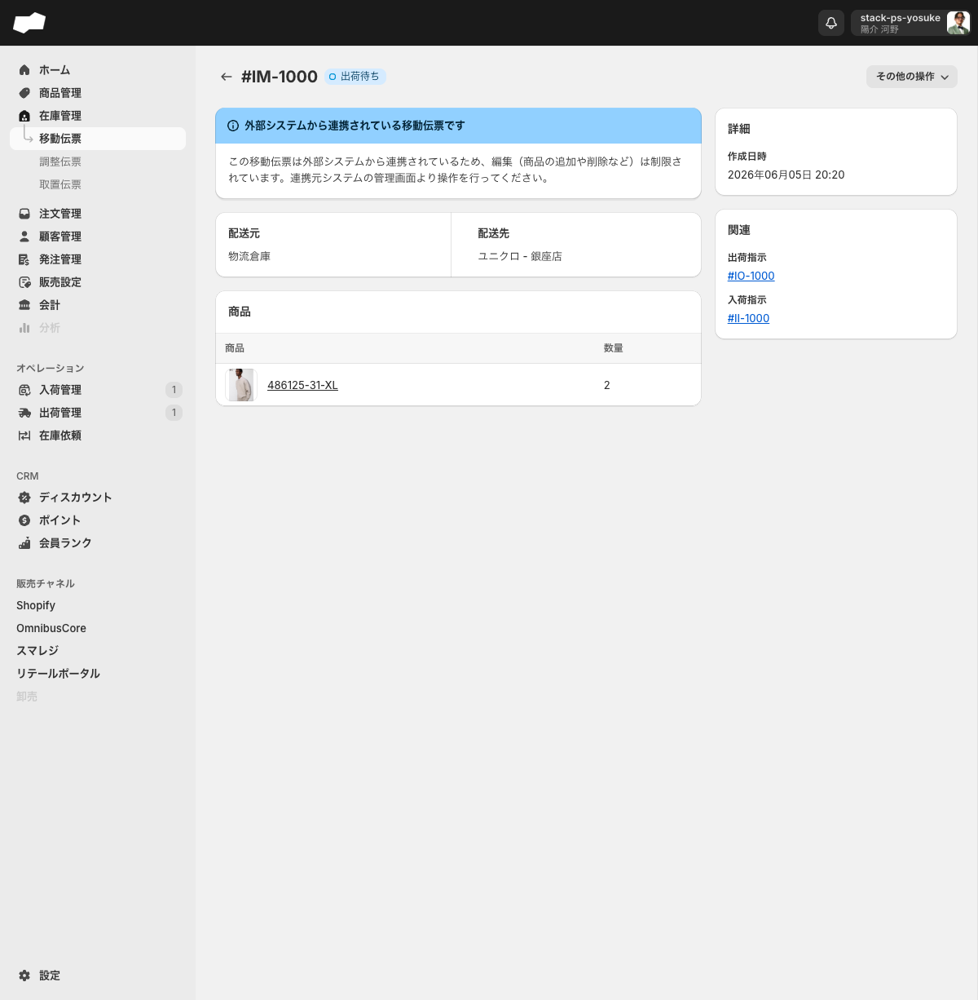
3. 在庫が動くタイミング（取り寄せ販売）
取り寄せ販売の操作で、移動元ロケーションの在庫がいつ・どう動くかの実際の流れです。ポイントは「引当てた時点では数字は動かず、移動伝票を作った瞬間に動く」ことです。
flowchart TD A["在庫依頼を作成<br/>（確認待ち）"] -->|変化なし| B["在庫を引当てる<br/>（確保済み）"] B -->|変化なし| C["移動伝票を作成"] C -->|販売可能 −1<br/>取置中 +1<br/>（手持ちは不変）| D["出荷実績を登録"] D -->|移動元の手持ちが減る| E["入荷実績を登録"] E -->|移動先の手持ちが増える| F["完了"] C -.->|キャンセルした場合<br/>取置中 → 販売可能に全数戻る| G["キャンセル"]
2026-06-14更新: 在庫の区分名が変わりました（確定済み→引当済み、確保済み→取置中）。「在庫依頼のステータス『確保済み』」は名称変更なし（上図の②）。移動伝票作成では移動元の販売可能→取置中へ振替（実機検証済み）。移動先には入荷予定が立ち、出荷実績で積送中、入荷実績で販売可能・手持ちへ移る。
計算式: 手持ち = 販売可能 + 引当済み + 取置中 + 破損 + 検品 + 予備（SKU詳細画面。これに加えて「積送中」「入荷予定」の2列があり、手持ちには含まれません）
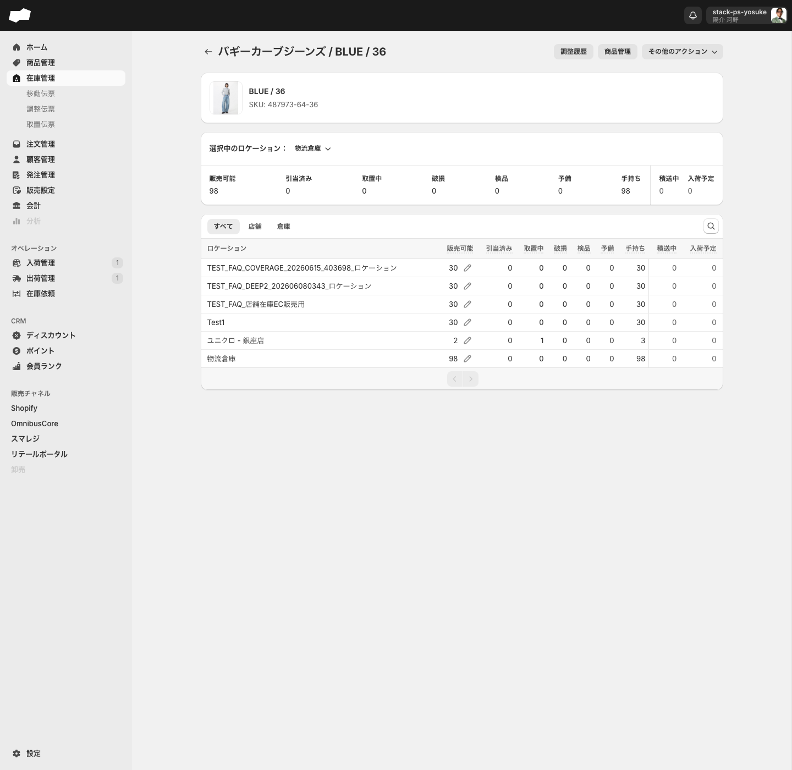
注意: 在庫数はマイナスになることがあります（在庫0のロケーションから出荷実績を登録しても処理はブロックされないため）。マイナスは調整伝票で修正してください。
4. 外部サービスとのデータ連携
SQは外部サービスと双方向でデータをやり取りします。
flowchart LR
subgraph SQ["SQ"]
P["商品"]
I["在庫"]
O["注文"]
end
SHOP2["Shopify"] <-->|商品・在庫・注文| SQ
SM["スマレジ"] <-->|在庫を同期<br/>（方向を選択）| I
LZ["ロジザード<br/>（WMS）"] <-->|入出荷の実績| O
RC["Recustomer"] <-->|返品・交換| O
注意: 各連携の接続後の実際の同期挙動（方向・頻度・エラー時の動き）は未接続のため未確認です。接続項目・設定UIは確認済みです。
関連
データ事典① — 設定で作るデータ ✓ 確定
データ事典① — 設定で作るデータ
「設定」で作る各データについて、項目・設定値ごとに「設定すると何が起きるか」を表で引ける事典です。 読み方: 見出し＝データ。表の左列＝そのデータの項目や値。右列＝それがどの画面で・どう効くか。 商品・在庫・伝票・注文側は データ事典②。
組織ID（設定 > 設定トップ）
| 項目 / 値 | 効果 |
|---|---|
| 組織ID（システムが自動生成） | 設定トップページに表示され、コピーボタンで取得できる。形式は {uuid}_Organization。ユーザーが作成・変更するものではない（問い合わせ時などに使う識別子） |
テナント（設定 > テナント）
ブランド・部門などの運用単位を分けるための管理単位。ポイント、会員ランク、チャネル連携など複数機能の「紐づけ先」になる。
| 項目 / 値 | 効果 |
|---|---|
| テナント（データそのもの） | 発注伝票・ディスカウント・Shopify/OmnibusCore/スマレジ/リテールポータル連携・CSVエクスポート・ポイント一括加算の各フォームで必須の選択肢になる |
| 〃 | 注文一覧・顧客一覧の絞り込み条件になる |
| 〃 | 管理メンバー詳細「ユーザーテナント」で、メンバーごとのアクセス可否を制御する単位になる |
| 0件のとき | 上記フォームの選択肢が空になり、保存できない |
ロケーション（設定 > ロケーション）
在庫を持つ場所（倉庫・店舗）。在庫はすべて「SKU × ロケーション」で記録される。
| 項目 / 値 | 効果 |
|---|---|
| 名前 | 「注文や商品などのエリアでこの名前が表示されます」（フォーム原文）。在庫・伝票の全画面に出る表示名 |
| コード | リテールポータル関連画面の「場所コードで検索する」の検索キー。ロケーション選択ダイアログの「場所コード」列に表示 |
| 場所種別 = 店舗 | リテールポータル連携の「店舗ロケーション」、店舗受取の「ロケーション」の選択肢に出る（倉庫種別は出ない）。各画面の「店舗」タブに表示 |
| 場所種別 = 倉庫 | リテールポータル連携の「在庫ロケーション」の選択肢に出る（店舗種別は出ない）。「倉庫」タブに表示 |
| 在庫依頼を受け付ける = ON | ①在庫依頼の依頼先（リクエスト先）として選べるようになる ②取り寄せ販売で、ロケーショングループ内のこの店舗に在庫リクエストが届くようになる |
| 在庫依頼を受け付ける = OFF（初期値） | 在庫リクエストの送付対象にならない |
| 店舗受け取りを有効にする = ON | 店舗受取（BOPIS）の受取店舗にできる |
| ポイント利用種別 = 値引き / 金種 | 店舗でのポイントの扱いを切り替える |
| ロケーション作成そのもの | 作成した瞬間から、在庫一覧のロケーション切替・SKU詳細のロケーション別行・全伝票のロケーション選択肢に自動で出る |
論理ロケーション（仮想店舗）という使い方: 物理の場所ではなく「店舗在庫のうちECで売ってよい数」を入れる器として、種別「店舗」のロケーションを1つ作る運用。SKU詳細の「販売可能数を編集」でEC枠を入れ、Shopifyのロケーションと連携すると、Shopifyはこの数で販売可否を決める。
⚠️ 未検証: 「倉庫に実在庫がないと、ここへの出荷指示が在庫リクエストに変換されて店舗取り寄せが動く」という挙動は、Shopify実接続での確認ができていません（推測）。取り寄せ販売フローの根幹なので、実接続後に検証予定です。
ロケーショングループ（設定 > ロケーショングループ）
ロケーションの束。Shopify連携の必須項目。
| 項目 / 値 | 効果 |
|---|---|
| グループ（データそのもの） | Shopify連携・OmnibusCore連携の「ロケーショングループ」欄の選択肢になる |
| デフォルトのロケーション | Shopify注文の在庫は、ロケーション指定がない限りここから引き当てられる（フォームヒント原文）。グループから外せない（外すには先にデフォルトを変更） |
| グループ内の「在庫依頼を受け付ける」ON店舗 | Shopify連携にこのグループを指定すると、その店舗にだけ在庫リクエストが送られる |
| 新しいロケーションを自動的に含める = ON | 以後作成したロケーションが自動でこのグループに入る（作成後は変更不可） |
ブランド（設定 > ブランド）
| 項目 / 値 | 効果 |
|---|---|
| ブランド（データそのもの） | 商品作成・編集の「ブランド」欄（「ブランドを選択する」ダイアログ）の選択肢になる |
| コード | カタログの自動追加ルールや販売閾値ルールの自動追加ルールで、「ブランドコード」の完全一致判定に使われることがある |
| 外部ID | 外部システム連携用の識別子。作成時のみ設定可・保存後は変更不可（変更したい場合は削除→再作成） |
| 削除 | 取り消し不可（「この処理は巻き戻すことができません。」） |
ブランドはカタログのためだけに作るデータではありません。主目的は商品マスタ上の分類属性です。カタログ側で自動追加ルールに「ブランドコード」を指定した場合に限り、商品を集める条件として使われます。
取引先（設定 > 取引先）
| 項目 / 値 | 効果 |
|---|---|
| 取引先名（必須） | 発注伝票の「取引先」コンボボックスの選択肢になる（登録すると即反映） |
| 取引先コード（任意。例: SUP-001） | 取引先の識別コード。発注伝票でもこの取引先が参照される。一覧の列は「名前 / コード」 |
| アーカイブ | 「アーカイブ」タブへ移動し、発注伝票の選択肢から消える |
決済方法（設定 > 決済方法）
| 項目 / 値 | 効果 |
|---|---|
| 決済方法（データそのもの） | 注文の決済方法の選択肢になる |
| 支払い待ちでも注文を出荷する = ON | 入金確認前でも出荷処理を進められる |
| 代引き = ON | 代金引換として扱われる（出荷管理「条件指定でエクスポート」の絞り込みに「代引きのみ / 代引き以外の決済」がある） |
販売員（設定 > 販売員）
| 項目 / 値 | 効果 |
|---|---|
| 販売員（データそのもの） | リテールポータル利用時に、どの販売員が顧客情報を閲覧したか、どの販売員が客注注文を作成したかを記録する |
| ロケーション | 作成フォームでは初期ロケーションを1件選択する。作成後の詳細画面では「店舗を追加する」から複数店舗に紐づけ可能 |
| 販売員コード | リテールポータルで販売員選択を必須にした場合、店舗側で入力・選択を求めるコード |
管理メンバー（設定 > 管理メンバー）
管理画面に入れる人。パスワードは無く、メール認証（6桁コード）。
| 項目 / 値 | 効果 |
|---|---|
| メンバー（データそのもの） | 管理画面へのログインが可能になる。リテールポータル連携の「ユーザーを追加する」で選ばれる対象にもなる |
| 権限グループ（1人1つ） | そのグループの権限で、見える画面・押せるボタンが決まる |
| ユーザーテナント（詳細画面のチェック） | チェックしたテナントだけにアクセスできるようになる |
| その他の操作 > ユーザーを組織から除外 | 退職時などのアクセス削除 |
権限グループ（設定 > 管理メンバー >「権限グループ一覧」）
38リソース ×「閲覧 / 編集」= 76権限のセット。
| 項目 / 値 | 効果 |
|---|---|
| グループ（データそのもの） | 管理メンバーの「権限」欄の選択肢になる。作っただけでは効かず、メンバーへの割り当てが必要 |
| ◯◯:read（閲覧権限） | その画面の閲覧可否 |
| ◯◯:write（編集権限） | その画面の作成・編集・削除の可否 |
| 特権管理者（初期グループ） | 全76権限。名前以外は変更・削除不可 |
| デフォルト全OFF | 新規グループは何も見えない状態から始まる（最小権限） |
38リソース: お知らせ / アプリ / ブランド / カタログ / 取引先企業 / 顧客マイル / 顧客ポイント / 顧客会員ランクルール / 顧客会員ランク / 顧客 / ディスカウント / 下書き注文 / 在庫 / 在庫リクエスト / 発注返品伝票 / 発注伝票 / 店舗受取ロケーションルール / ロケーショングループ / ロケーション / マイル商品 / ネクストエンジン連携 / OmnibusCore連携 / 注文 / ポイントキャンペーン / ポイントルール / 販売価格ルール / 商品 / 店舗ポータル連携 / 店舗スタッフ / 売上データ / Shopify連携 / スマレジ連携 / テナント / 翻訳ルール / 翻訳 / ユーザー権限 / ユーザーテナント / ユーザー
この76権限はアプリ（APIキー）の権限スコープとまったく同じ体系。画面の権限とAPIの権限が1対1で対応する。
通知用メールアドレス（設定 > 通知用メールアドレス）
| 項目 / 値 | 効果 |
|---|---|
| メールアドレス | SQからのお知らせ・アラートメールの届き先になる |
PDF納品書テンプレート（設定 > 納品書）
| 項目 / 値 | 効果 |
|---|---|
| HTMLテンプレート | 出荷管理「条件指定でエクスポート（ヤマトB2クラウド）」で生成される同梱納品書PDFのレイアウトになる |
メタフィールド定義（設定 > メタフィールド定義）
16オブジェクトに独自項目を追加する定義。
| 項目 / 値 | 効果 |
|---|---|
| 定義を作成 | 対象オブジェクトの詳細画面に即座に「メタフィールド」セクションが出現し、鉛筆アイコンで値を入力できる（定義が無いと、セクション自体が表示されない） |
| 対象オブジェクト（16種） | 組織 / 商品 / バリエーション / 顧客 / 注文 / 下書き注文 / 会社 / ロケーション / ディスカウント / 在庫移動伝票 / 在庫調整伝票 / 在庫取置伝票 / 発注伝票 / 入荷指示 / 出荷指示 / 仕入れ先 |
| ネームスペース・キー | 識別子「ネームスペース.キー」になる（例: custom.note） |
| タイプ（12種） | 入力欄の形式: 単一行のテキスト / 単一行のテキスト(リスト) / 複数行のテキスト / 日付と時刻 / 日付 / trueまたはfalse / バーコード(NW7) / 整数 / 小数 / JSON / ID / リッチテキスト |
| 顧客の定義 | 顧客一覧の絞り込み条件「メタフィールド」として使える |
| 商品・バリエーションの定義 | CSVインポート「商品メタフィールド」「商品バリエーションメタフィールド」で値を一括投入できる。翻訳ルールの翻訳対象にもなる |
翻訳ルール（設定 > 翻訳）
| 項目 / 値 | 効果 |
|---|---|
| 言語（10言語から1つ） | このルールの翻訳先言語。保存後は変更不可（別言語は新規ルール） |
| 翻訳データを自動で作成する = ON | 商品・商品オプション・商品オプション値・メタフィールドの翻訳データが自動生成される（一覧は翻訳画面で確認） |
| カスタムプロンプト（4セクション） | 商品 / 商品オプション / 商品オプション値 / メタフィールド それぞれのAI翻訳の指示を上書きできる |
採寸ルール（設定 > 採寸ルール）
| 項目 / 値 | 効果 |
|---|---|
| 採寸項目（最大5件）・単位（なし / センチメートル） | テンプレートとして保存される。現在、商品に紐づける操作が管理画面に無い |
アプリ（設定 > アプリ）
Admin APIにアクセスするためのAPIキー。
| 項目 / 値 | 効果 |
|---|---|
| 権限スコープ（76権限から選択） | このアプリがAPIでできる操作の範囲を決める（管理メンバーの権限と同体系） |
| アクセストークン（自動発行） | Admin API（GraphQL）への接続キー |
| シークレット（自動発行） | Webhookのリクエスト検証などに使う |
| Playgroundを開く | GraphQL PlaygroundでAPIを試せる |
| リクエストログを見る | このアプリのAPIリクエスト履歴を確認できる |
| Storefront API「トークンを発行する」 | Storefront API用の別トークンを発行 |
Webhook（アプリ詳細 >「Webhookを作成する」）
| 項目 / 値 | 効果 |
|---|---|
| イベント = 注文の作成 | 注文が作成されるたびに、指定URLへ通知が飛ぶ |
| イベント = 注文の更新 | 注文が更新されるたびに通知 |
| イベント = 在庫の更新 | 在庫が更新されるたびに通知 |
| エンドポイント | 通知の送信先URL |
販売設定の4ルール（販売設定）
「設定で作るデータ」だが、チャネルへの価格・販売可否の制御に使う。ここでは作成時の必須項目だけを示す。ステータス・在庫への効果・配下データ（通常/セール価格、SKUごとの上限・閾値など）の詳細は データ事典②の「販売ルール」 を参照。
| ルール（作成場所） | 作成時の必須項目 | 効果・注意 |
|---|---|---|
| 販売価格ルール（販売設定 > 販売価格） | ルール名・通貨（5通貨。作成後変更不可） | Shopify連携の「販売価格ルール」に指定すると、そのルールでShopifyの販売価格が決まる。配下に通常価格・セール価格をSKU単位で登録 |
| 予約販売ルール（販売設定 > 予約販売） | タイトルのみ | 在庫0でも注文を受け続ける枠。OmnibusCore連携の「在庫予約ルール」に指定。配下にSKU＋販売数 |
| 販売上限ルール（販売設定 > 販売上限） | ルール名・チャネル（必須・1件以上） | 接続済みチャネルしか選択肢に出ない＝チャネル接続前は作成を完了できない。配下にSKU＋上限数＋集計開始日時 |
| 販売閾値ルール（販売設定 > 販売閾値） | ルール名 | リテールポータル連携の「販売閾値ルール」に指定すると販売可否判断に使われる。配下にSKU＋閾値、ブランドコード一致の自動追加ルール |
⚠️ 各ルールの「上限到達時 / 閾値割れ時 / 在庫0時」の実際の挙動（売り止めが効くか等）は、チャネル未接続のため未検証です。詳細は事典②を参照。
Shopify連携（左メニュー「Shopify」）
前提: ShopifyストアにSQコネクターアプリのインストールが必要。
| 項目 / 値 | 効果 |
|---|---|
| テナント・カタログ・ロケーショングループ | 必須。カタログ＝Shopifyに出す商品の範囲、ロケーショングループ＝在庫の引当元と在庫リクエストの送付範囲になる |
| 販売価格ルール（任意） | 「選択した販売価格ルールに基づいて、Shopifyの販売価格を設定します」（原文） |
| 会員証バーコードのフォーマット | Shopifyから来る顧客の会員証バーコードの生成方法（Shopify ID（数値部分）/ JAN-13コード） |
| 商品価格は税込価格を連携する = ON | 価格を税込としてShopifyへ連携 |
| 0円の商品バリエーションを連携する = ON | 価格0円のSKUも連携対象になる |
| 送料は税込として処理する = ON | 送料を税込として処理 |
| 注文による在庫変動を起こさない = ON | Shopify経由の注文が来てもSQの在庫を動かさない |
OmnibusCore連携（左メニュー「OmnibusCore」）
| 項目 / 値 | 効果 |
|---|---|
| テナント・メーカーコード | 必須の接続情報 |
| カタログ | OmnibusCoreに出す商品の範囲 |
| カラーオプション名・サイズオプション名 | 商品のカラー / サイズを示すオプション名として同期に使われる |
| ロケーショングループ・在庫予約ルール・販売上限ルール | 在庫の引当・予約販売・販売上限の制御に使われる |
| 下書き注文の有効期限日数（1〜365。初期値30） | OmnibusCoreから流入する下書き注文が何日で期限切れになるか |
| 出荷指示のステータス = 出荷待ち / 保留中 | OmnibusCore経由の注文から作られる出荷指示の初期ステータスを決める |
| アクセストークン（「トークンを作成」） | OmnibusCoreとのAPI連携に使用 |
連携サイト（詳細の「連携サイト」タブ）
| 項目 / 値 | 効果 |
|---|---|
| 場所コード・サイト名 | サイトの識別 |
| 販売価格 | サイトに適用する価格ルール。時間が00:00以外の価格ルールは連携できず、対象SKUはメールで通知される |
| ロケーション | 会社配下のロケーション（納品先）と紐づけ |
| サイト倉庫ロケーション | SQのロケーションマスタ（倉庫）と紐づけ |
通知メール（詳細の「通知メール」タブ）
| 項目 / 値 | 効果 |
|---|---|
| 名前・メールアドレス | 連携エラー（連携できないSKU等）の通知先。重複登録不可 |
スマレジ連携（左メニュー「スマレジ」）
前提: スマレジ側にSQアプリのインストールが必要。
| 項目 / 値 | 効果 |
|---|---|
| テナント・契約ID・プラン | 必須の接続情報（プラン5択。初期値: リテールビジネス） |
| カタログ | スマレジに出す商品の範囲 |
| 在庫同期の方向 = スマレジからSQへ（初期値） | 店舗POSの在庫数をSQへ反映する向きの設定 |
| 在庫同期の方向 = SQからスマレジへ | SQの在庫数を店舗POSへ反映する向きの設定 |
| 在庫同期の方向 = 在庫を同期しない | 在庫同期なし |
| 注文による在庫変動を起こさない = ON | スマレジ経由の注文でSQの在庫を動かさない |
⚠️ 未検証: 在庫同期の「実際の反映タイミング・頻度・エラー時の動き」はスマレジ未接続のため確認できていません（設定項目とその方向の意味までは確認済み）。
リテールポータル連携（左メニュー「リテールポータル」）
店舗スタッフ用画面の利用設定。1接続 = 1店舗。
| 項目 / 値 | 効果 |
|---|---|
| 店舗ロケーション | この店舗のポータルになる（選択肢は店舗種別のみ） |
| 在庫ロケーション | 在庫の引当元になる（選択肢は倉庫種別のみ） |
| テナント・カタログ | 必須。カタログ＝店舗で扱う商品の範囲 |
| 販売閾値ルール（任意） | 在庫閾値による販売可否の判断に使われる |
| リテールポータルで販売員の選択を必須にする = ON | 店舗側の操作で販売員選択が必須になる |
| 配送先住所の編集を許可する = ON | 店舗スタッフが配送先を編集できる |
| 下書き注文の送料明細の編集を許可する = ON | 店舗スタッフが送料を編集できる |
| 下書き注文の注文明細の価格の編集を許可する = ON | 店舗スタッフが価格を編集できる |
| 下書き注文の完了を許可する = ON | 店舗スタッフが下書き注文を完了できる |
| ユーザーを追加する（作成後の詳細画面） | 追加した管理メンバーがこのポータルを使えるようになる（メールアドレス検索） |
店舗受取（リテールポータル > 店舗受取）
| 項目 / 値 | 効果 |
|---|---|
| ロケーション（店舗種別のみ） | 店舗受取を行う店舗として登録される |
ロジザード連携（設定 > ロジザード）
WMS「ロジザードZERO」との接続。
| 項目 / 値 | 効果 |
|---|---|
| グループ番号・接続番号 | ロジザードZEROのAPIエンドポイントURLに使われる |
| オーナーID・ユーザーID・パスワード・アプリケーションキー | API認証情報 |
| 入荷予定登録ファイルID / パターンID | 入荷予定の連携APIに使われる |
| 出荷予定登録(通販/卸)ファイルID / パターンID | 出荷予定の連携APIに使われる |
| 出荷箱明細実績エクスポートファイルID / パターンID | 出荷実績の取得APIに使われる |
| 商品バリエーションを特定するキー = SKUコード / JANコード / EANコード / UPCコード | SQとロジザードの商品の突き合わせキーになる |
Recustomer連携（設定 > Recustomer）
| 項目 / 値 | 効果 |
|---|---|
| ストアID・シークレット | 接続すると、注文の返品・交換処理をRecustomer経由で行えるようになる |
横断早見表
作成後に変更できない項目（設定編）
| データ | 変更できない項目 | 対処 |
|---|---|---|
| ブランド | 外部ID | 削除して再作成 |
| ロケーショングループ | 「新しいロケーションを自動的に含める」 | 新規グループを作成 |
| 翻訳ルール | 言語 | 新規ルールを作成 |
| ディスカウント | クーポンコード・テナント | 新規作成（事典②） |
| 販売価格ルール | 通貨 | 新規ルールを作成（事典②） |
マスタ未登録のときの共通挙動
必要なマスタが0件だと、参照側フォームのドロップダウンには何も表示されない（エラーも出ない）。選択肢が空のときは、このページで「どこで作るデータか」を逆引きする。
関連
- 🕸 データ相関図（SQ-データ相関図.html） — このページのデータ同士のつながりを線で見る図
データ事典② — 商品・在庫・運用のデータとステータス ✓ 確定
データ事典② — 商品・在庫・運用のデータとステータス
商品・在庫・伝票・販売ルール・注文・CRMの各データについて、項目ごとの効果とステータスごとの「入る条件 → 次の操作 → 在庫への効果」を表で引ける事典です。 設定で作るマスタは データ事典①。
商品（商品管理）
| 項目 / 値 | 効果 |
|---|---|
| 商品コード（必須） | 商品一覧・カタログでの唯一の検索キー（商品名・タグでは検索できない）。作成後は変更不可。使える文字は半角英数字・ハイフン・アンダースコアのみ |
| 商品名・説明文・メディア | 表示用。画像はローカルファイルのみ（URL指定不可） |
| 製造元 | カタログの自動追加ルール「製造元」の完全一致判定に使われる |
| ブランド | ブランドマスタ（設定 > ブランド）から選択。コードが自動追加ルール「ブランドコード」の判定に使われる |
| タグ | 商品サイドバーに表示されるだけ。一覧での絞り込みには使えない |
| 一覧の「在庫」列 | バリエーション数を表示（実在庫数ではない） |
| 一覧の「カタログ」列 | 所属カタログ数 |
| 「保存する」ボタン | 作成フォームでは未入力でも押せる。空保存時は「商品コードを入力してください」「商品名を入力してください」「選択してください」などのインラインエラーが表示される。編集画面では変更が無いと保存ボタンが無効 |
| 削除 | 取り消し不可。確認ダイアログに「この処理は巻き戻すことができません。」と表示される。削除後の詳細URLは「該当するProductが見つかりませんでした。」になる |
商品ステータス（画面で表記が変わる）
| 作成フォーム | 編集フォーム | 一覧タブ | この状態の効果 |
|---|---|---|---|
| 下書き（初期値） | 下書き | 下書き | 作業中。チャネルに出ない |
| 公開 | 公開中 | 公開中 | 販売中 |
| 非公開 | アーカイブ済み | アーカイブ済み | 同じ状態。「販売チャネルと管理画面上で非表示」 |
| 操作 | 結果 |
|---|---|
| 編集画面のステータス変更 | 「公開中 ⇔ 下書き」の2択のみ |
| その他の操作 > 商品をアーカイブする | アーカイブ済みへ（チャネル・管理画面で非表示に） |
| その他の操作 > 商品のアーカイブを解除する | 必ず「下書き」に戻る（公開中には戻らない） |
| その他の操作 > 商品を削除する | 確認ダイアログ後に完全削除。復元不可 |
バリエーション（SKU）と オプション軸
| 項目 / 値 | 効果 |
|---|---|
| オプション軸（オプション名＋種別: サイズ / カラー / その他） | バリエーションの組み合わせの軸になる。商品作成時にしか設定できない（後から軸の追加・種別変更は不可） |
| オプション値 | バリエーション追加フォームの選択肢になる（新しい値は先に商品編集側で追加） |
| 上代（必須） | 販売価格のベース |
| SKU (最小管理単位)（必須） | 在庫管理・各種ルール登録・CSV・検索のキー |
| 在庫を追跡する = ON | このSKUの在庫数を管理対象にする |
| 在庫切れの場合でも販売を続ける = ON | 在庫0でも販売を止めない |
| 配送を必須にする（初期値ON） | 配送が必要な商品として扱う |
| 重量・単位（グラム/キログラム/オンス/ポンド） | 配送情報 |
| 関税情報（原産国コード・HSコード） | 越境・関税用 |
| バーコード / JAN / EAN / UPC | ロジザード連携の商品突き合わせキーの候補（UPCは編集画面のみ） |
| メーカーSKU | 任意の別SKU |
| 仕入価格（作成画面のみ）／原価（編集画面のみ） | 原価は発注明細の単価の初期値に関係。CSVインポート「原価」で一括設定可。仕入価格と原価が同じ概念かは⚠️未検証（ラベルが異なる） |
| 在庫管理リンク（編集画面上部） | 該当SKUの在庫詳細画面へ遷移し、実在庫数を確認できる |
作成フォームと編集フォームで項目が一部違う（作成: 仕入価格あり／編集: 原価・UPCあり）。送信ボタンは作成「作成する」・編集「更新する」で、上代・SKUが未入力だと押せない。
カタログ（商品管理 > カタログ）
商品の入れ物。チャネルに「どの商品を出すか」を決める。
| 項目 / 値 | 効果 |
|---|---|
| カタログ（データそのもの） | Shopify連携（必須）・OmnibusCore・スマレジ・リテールポータル連携の「カタログ」欄の選択肢になり、そのチャネルに出る商品の範囲を決める |
| 商品の追加（手動 / 自動追加ルール / CSV） | カタログに入った商品だけがチャネルへ連携される |
| 一覧の「販売先」列 | このカタログを参照しているチャネル連携の数 |
自動追加ルール（カタログ詳細 > 自動追加ルール）
| 項目 / 値 | 効果 |
|---|---|
| 項目 = 製造元 / ブランドコード、条件 = 一致する、値 | 完全一致した商品が自動でカタログに追加される（大文字小文字・スペースの違いも別物扱い） |
店舗受取バリエーション（商品管理 > 店舗受取）
| 項目 / 値 | 効果 |
|---|---|
| 「バリエーションを追加する」で登録したSKU | そのSKUが店舗受取可能になる。受取の「店舗」側は事典①のリテールポータル > 店舗受取（ロケーションルール）で登録 — 店舗受取は「対象バリエーション（ここ）」と「受取店舗（リテールポータル側）」の対で成立する |
在庫（在庫管理）— 区分
2026-06-14 更新: 在庫区分の名称が変わりました（「確定済み」→「引当済み」、「確保済み」→「取置中」）。さらに 「積送中」「入荷予定」 の2列が新設されています。一覧の列構成も変わりました（下記）。
手持ち = 販売可能 + 引当済み + 取置中 + 破損 + 検品 + 予備（6区分の合計）。 「積送中」「入荷予定」は手持ちには含まれない別枠（移動の輸送過程で移動先に立つ数。手持ちより後ろの列）。
- 一覧（在庫管理トップ）の列: 商品 / 品番(SKU) / 販売可能 / 引当済み / 取置中 / 手持ち（旧: 販売不可 / 確定済み / 販売可能 / 手持ち。「販売不可」合算列は廃止）
- SKU詳細の列（9列）: ロケーション / 販売可能 / 引当済み / 取置中 / 破損 / 検品 / 予備 / 手持ち / 積送中 / 入荷予定
区分ごとの「何で増えて、何で減るか」
| 区分 | 意味 | 増える操作 | 減る操作 |
|---|---|---|---|
| 販売可能 | 売ってよい数 | 鉛筆編集／CSV「販売可能在庫」／移動伝票キャンセル（戻り）／入荷実績（移動先に到着） | 移動伝票の作成・取置伝票の作成（取置中へ振替） |
| 引当済み | 注文に引き当て済み（旧: 確定済み） | 注文の引き当て | 出荷の進行 |
| 取置中 | 取置・移動用に確保（旧: 確保済み） | 取置伝票の作成／移動伝票の作成（販売可能から振替） | 取置の処理済みマーク（販売可能へ戻る）／移動の出荷実績（手持ちごと減る）／移動伝票キャンセル |
| 破損 / 検品 / 予備 | 販売不可の内訳 | 2026-06-19の実機確認では、SQ管理画面上にこれらの区分へ直接振り替える操作UIは確認できない | 同左 |
| 手持ち | 実在庫の合計（上記6区分の和） | 入荷実績の登録（移動先）／鉛筆編集（販売可能と同時に） | 出荷実績の登録（移動元） |
| 積送中 | 出荷済み・入荷前の輸送中数（移動先で計上・手持ち外） | 出荷実績の登録（移動先の入荷予定が積送中へ） | 入荷実績の登録（販売可能・手持ちへ） |
| 入荷予定 | 移動伝票作成〜出荷前の入荷予定数（移動先で計上・手持ち外） | 移動伝票の作成（移動先） | 出荷実績の登録（積送中へ移る） |
操作 → 在庫の動き（時系列の早見表・実機検証済み 2026-06-14）
| 操作 | 移動元の変化 | 移動先の変化 |
|---|---|---|
| 在庫依頼を作成（確認待ち） | 変化なし | — |
| 在庫を引当てる（在庫依頼ステータスが確保済みへ） | 変化なし（数字はまだ動かない） | — |
| 移動伝票を作成 | 販売可能 −n、取置中 +n（手持ち不変） | 入荷予定 +n |
| 出荷実績を登録 | 取置中 −n、手持ち −n | 入荷予定 −n → 積送中 +n |
| 入荷実績を登録 | — | 積送中または入荷予定 −n → 販売可能 +n・手持ち +n。出荷前でも入荷登録は可能 |
| 移動伝票をキャンセル | 取置中 → 販売可能に戻る | — |
| 取置伝票を作成 | 販売可能 −n、取置中 +n | — |
| 取置を処理済みにマーク | 取置中 −n → 販売可能 +n（解放） | — |
| 調整伝票を実行 | 増減数がそのまま反映 | — |
| 鉛筆で販売可能数を編集 | 「販売可能」を入力値そのものに設定（絶対値）。手持ちは差分だけ増減 | — |
「在庫依頼」のステータス「確保済み」は名称変更なし（在庫の区分列だった「確保済み」だけが「取置中」に改名）。混同しないこと。
在庫まわりのその他のデータ
| データ / 項目 | 効果 |
|---|---|
| マイナス在庫 | 手持ち0から移動伝票作成・出荷実績登録をしてもブロックされず、在庫がマイナスになる。修正は調整伝票 |
| 調整履歴（在庫詳細 >「調整履歴」） | 在庫区分の変更を差分付きで記録（例: 5 (+5)）。鉛筆編集の「理由」もアクティビティとして残る。在庫がいつ・なぜ変わったかはここで監査 |
| 鉛筆編集（販売可能数を編集） | 理由（必須）＋数量。数量は絶対値（入力値が新しい販売可能数になる。加算ではない）。手持ちは差分だけ増減。負数も保存できる。調整伝票は作られない別経路。論理ロケーションのEC枠設定もこれ |
| 在庫振替（その他のアクション） | 同一商品内の別バリエーションへ在庫を振り替える（別商品へは不可） |
調整伝票（在庫管理 > 調整伝票）
理由付きで在庫を増減する伝票。マイナス在庫の修正手段。
| 項目 / 値 | 効果 |
|---|---|
| ロケーション・商品 | 必須。空保存時に「ロケーションを選択してください」「商品を1つ以上追加してください」が出る |
| 理由 | 必須。5択: 廃棄 / 見本 / 紛失 / 棚卸差異 / その他（破損・検品・予備は無い）。未選択では「理由を選択してください」で保存不可 |
| 増減数 | プラスで増・マイナスで減。「実行」で反映。0でも伝票作成可能 |
| ステータス | 入る条件 | 次にできる操作 | 在庫への効果 |
|---|---|---|---|
| 未実施 | 保存 | 「実行」「キャンセル」。項目の編集も可 | まだ無し |
| 実施済み | 「実行」→ 確認ダイアログ | キャンセルボタンが残る場合があるが実行不可 | 増減数が反映。巻き戻し不可（「この処理は巻き戻すことができません。」） |
| キャンセル | 未実施詳細の「キャンセル」 | 実行ボタンが残る場合があるが実行不可 | 無し。確認ダイアログなしで即時にキャンセルへ変わる |
未保存の変更があると「実行」が押せない（先に保存）。
取置伝票（在庫管理 > 取置伝票）
在庫を確保しておく伝票。保存した瞬間に在庫が動く。
| ステータス | 入る条件 | 次にできる操作 | 在庫への効果 |
|---|---|---|---|
| 未処理 | 作成・保存 | 「処理済みとしてマークする」 | 対象在庫が「取置中」区分になる（確保が続く） |
| 処理済み | 「処理済みとしてマークする」→「実行する」 | — | 取置中の在庫が解放される（販売可能へ戻る）。確認ダイアログ原文: 「取置伝票を処理済みにすることで、取置中の在庫が解放されます。」 |
未処理詳細に独立した「キャンセル」ボタンは表示されない。取置を終了する操作は「処理済みとしてマークする」。
移動伝票（在庫管理 > 移動伝票）
ロケーション間の在庫移動。作成した瞬間に出荷指示・入荷指示が自動生成される。
| 項目 / 値 | 効果 |
|---|---|
| 配送元・配送先（必須） | 配送元を選ぶまで商品欄は無効 |
| 配送元 = 配送先 | 同じロケーションでも保存できる。誤作成時は詳細の「その他の操作」>「キャンセル」で取り消す |
| 配送元在庫0 | 在庫0のSKUでも移動伝票を作成でき、出荷実績登録もブロックされない |
| 数量0 | 保存不可。「quantityは1以上で入力してください」 |
| 作成（保存）した瞬間 | ①移動元: 販売可能→取置中へ振替（手持ち不変）②移動先: 入荷予定 +n ③出荷指示（#IO）と入荷指示（#II）が自動生成 ④出荷管理・入荷管理に未完了バッジ |
| ステータス（一覧タブ） | 入る条件 | 次に起きること | 在庫への効果 |
|---|---|---|---|
| 出荷作業 | 作成直後 | 出荷指示の出荷実績登録を待つ。入荷を先に登録することも可能 | 取置中のまま |
| 一部受領済み | 一部の入荷実績が登録された状態 | 残りの入荷実績登録、または入荷指示の「完了に更新する」 | （移った分だけ手持ちが移動先へ） |
| 受領済み | 入荷が完了した状態 | 出荷未完了なら出荷実績登録を待つ | 入荷済み分が移動先へ反映 |
| 完了＋入荷完了（詳細バッジ） | 出荷・入荷の実績登録が完了 | — | 手持ちが移動元→移動先へ移った状態 |
| キャンセル | その他の操作 >「キャンセル」 | 紐づく出荷指示・入荷指示もすべてキャンセル | 取置中が販売可能に全数戻る |
伝票自体にステータスを進めるボタンは無い。出荷・入荷の実績登録に連動して自動で進む。入荷は出荷前でも登録でき、部分入荷・過入荷も保存できる。一覧タブの「一部受領済み / 受領済み」への正確な表示条件は未検証。
外部連携由来は編集不可: 取り寄せ販売フロー（在庫依頼の確保済み）から自動生成された移動伝票は、管理画面で商品の追加・削除などの編集ができない。詳細画面に注意文が出る — 「この移動伝票は外部システムから連携されているため、編集（商品の追加や削除など）は制限されています。連携元システムの管理画面より操作を行ってください。」。手動編集しようとして詰まらないこと。
キャンセルの注意（行き止まり）: 取り寄せフロー経由の移動伝票をキャンセルすると、①出荷指示は通常の一覧タブには出なくなる（関連する移動伝票詳細のリンクや直接URLから詳細を開ける場合があり、条件指定エクスポートにはキャンセル済み指定もある）②入荷指示は「キャンセル」タブに残る ③元の在庫依頼は「確保済み」のまま残り、再作成もクローズもできない。やり直しは在庫依頼の新規作成。
在庫依頼（取り寄せ販売の起点）
「この店舗へ、ここから在庫をn個確保して送ってほしい」という依頼。
| 項目 / 値 | 効果 |
|---|---|
| 商品バリエーション・希望数・移動先ロケーション（必須） | 移動先＝在庫の届け先（詳細画面では「引当先ロケーション」表記） |
| リクエスト先ロケーション（任意） | 指定すると引当ダイアログのロケーションがそこだけに絞られる（詳細では「依頼先」表記） |
| チャネル列 | 依頼の発生元を表示（管理画面で作成した依頼は「web-admin」と表示される） |
| ステータス | 入る条件 | 次にできる操作 | 在庫への効果 |
|---|---|---|---|
| 確認待ち | 作成 | 「在庫を引当てる」／「在庫依頼をクローズする」 | 無し |
| 確保済み | 引当て実行 | 確保済み一覧から「移動伝票を作成する」。クローズは不可 | まだ無し（在庫が動くのは移動伝票作成時） |
| 終了 | クローズ（確認待ちのときだけ可能） | — | 無し |
確保済み一覧（在庫依頼 > 確保済み）: 「移動伝票を作成する」で移動伝票＋出荷指示＋入荷指示が一括生成され、行が消える。作成された移動伝票は外部システム連携扱いになり商品編集が制限される。移動完了後も元の在庫依頼は「確保済み」のまま。
在庫リクエスト（EC注文起点・自動発生）
| 起きること | 内容 |
|---|---|
| 発生条件 | EC注文の連携時、倉庫の実在庫が不足しているSKUに自動発生 |
| 届く先 | ロケーショングループ内で「在庫依頼を受け付ける」がONの店舗だけ |
| 店舗側の操作 | リテールポータルで確認 → 在庫の確保登録 → 移動伝票の発行（ロケーションごとに分割）→ 店舗から倉庫へ出荷 |
出荷指示・出荷実績（出荷管理）
移動伝票・注文から自動生成される（手動作成は不可）。
| ステータス（一覧タブ） | 入る条件 | 次にできる操作 | 在庫への効果 |
|---|---|---|---|
| 出荷待ち | 生成直後の初期状態 | 「出荷実績を登録する」 | 無し |
| 保留中 | 保留状態（OmnibusCore連携の初期ステータス設定でも入る） | — | 無し |
| 依頼済み / 作業中 / 欠品・要対応 | 作業の進行状態 | 「条件指定でエクスポート」のチェックONで「出荷作業中」へ変えられる | 無し |
| 出荷完了 | 「出荷実績を登録する」→「登録する」 | なし（ボタン無効化） | 移動元の手持ちが減る。巻き戻し不可 |
| （キャンセル済み） | 移動伝票キャンセルに連動（一覧にキャンセルタブは無い） | — | 一覧タブには表示されなくなる。関連リンクや直接URLで詳細を開ける場合があり、エクスポートの「キャンセル済み」指定でも追跡できる可能性がある |
「保留中 / 依頼済み / 作業中 / 欠品・要対応」の各意味と正確な遷移条件は未検証（タブ名・エクスポート絞り込み選択肢として存在は確認済み）。
| 出荷実績の項目 / 操作 | 効果 |
|---|---|
| 配送キャリア・追跡コード | どちらも任意（空でも登録できる） |
| 登録後 | ボタン無効化。再登録・編集・削除は不可。誤登録の修正は調整伝票 |
| CSV一括登録 | 「インポート」→ ヤマトB2クラウド / DHL。ヤマトCSVは10列固定・必須は伝票番号 / 出荷日 / お客様管理番号の3列のみ |
| 条件指定でエクスポート（ヤマトB2クラウド） | 期間・決済方法・出荷作業ステータス・注文タグ（含む/除外）で絞り込み、ヤマトB2クラウド取り込み用CSVを出力する。納品書PDFの同時生成は過去資料・画面名から可能性はあるが、2026-06-16のPDFメニューと出荷指示詳細では生成導線を確認できなかった |
| 「CSVの出力後に出荷指示のステータスを出荷作業中に変更する」= ON | エクスポートと同時に対象のステータスが変わる |
入荷指示・入荷実績（入荷管理）
移動伝票から出荷指示と同時に自動生成。種別列は「移動」。
| ステータス（一覧タブ） | 入る条件 | 次にできる操作 | 在庫への効果 |
|---|---|---|---|
| 入荷待ち | 生成直後 | 「入荷実績を登録する」。出荷前でも登録可能 | 無し |
| 入荷依頼済み / 入荷作業中 / 要対応 | 作業の進行状態 | — | 無し |
| 入荷完了 | 「入荷実績を登録する」→「登録する」、または「完了に更新する」 | なし（ボタン無効化） | 移動先の手持ちが増える。紐づく移動伝票は出荷も完了していれば完了になる。巻き戻し不可 |
| キャンセル | 移動伝票キャンセルに連動 | — | 「キャンセル」タブに「入荷キャンセル」として残る（出荷指示と違い一覧に残る） |
出荷と入荷の登録順序は問われない（並行可）。部分入荷、過入荷も登録できる。予定数と実績数が一致しない場合は「完了に更新する」で入荷指示を完了できる。「入荷依頼済み / 入荷作業中 / 要対応」の正確な遷移条件は未検証。
発注伝票（発注管理）
| 項目 / 値 | 効果 |
|---|---|
| 取引先（必須） | 取引先マスタ（設定 > 取引先）の選択肢から |
| テナント（必須） | 事業部の紐づけ |
| 通貨（5通貨。初期値: 日本円） | 伝票ごとに設定でき、国際仕入れに対応 |
| 明細（SKU・単価・数量・税率10%初期値） | 金額 = 単価 × 数量の税抜（税率は金額計算に入らない） |
2026-06-16/2026-06-18/2026-06-19の実機確認では、#IP-1000 / #IP-1001 / #IP-1003 を作成し、下書きから発注済み、キャンセル済みまで操作できました。
| ステータス | 入る条件 | 次にできる操作 | 在庫への効果 |
|---|---|---|---|
| 下書き | 発注伝票を保存する | 編集、発注、キャンセル | なし |
| 発注済み | 「発注する」ダイアログで実行する | キャンセル | 今回の確認では、入荷管理一覧への明細表示・SKUの入荷予定増加は確認できなかった |
| キャンセル済み | 発注済み伝票の「キャンセル」を実行する | なし | なし |
発注ダイアログには「発注を行うと入荷指示が作成されます」と表示されます。ただし、2026-06-16の#IP-1000、2026-06-18の#IP-1001、2026-06-19の#IP-1003では入荷管理一覧に該当入荷指示が表示されず、SKUの入荷予定数も変わりませんでした。そのため、FAQでは「発注すると必ず入荷予定在庫が増える」とは案内しないでください。
販売ルール（販売設定）
作成時の必須項目・通貨などは データ事典①の「販売設定の4ルール」 に整理。ここでは配下データとステータス・効果を扱う。
⚠️ 共通の未検証事項: 以下4ルールの「在庫0時に本当に注文を受け続けるか」「上限に達したら売り止まるか」「閾値を割ったら販売停止・通知が走るか」といった到達時・適用時の実挙動は、チャネル未接続のため検証できていません。設定フォームの項目と意味までは確認済みです。
販売価格ルール
| 項目 / 値 | 効果 |
|---|---|
| 通貨（5通貨） | このルールの通貨。作成後変更不可 |
| 配下: 通常価格（SKU＋価格） | 期間なしの基本価格。CSVインポート不可（1件ずつ） |
| 配下: セール価格（SKU＋価格＋開始日時必須・終了日時任意） | 期間付きのセール価格。CSVインポート可 |
| ルールを Shopify連携に指定 | そのルールに基づいてShopifyの販売価格が設定される |
| ルールを OmnibusCore連携サイトに指定 | サイトの価格になる（適用時刻00:00の価格のみ連携可） |
予約販売ルール
| 項目 / 値 | 効果 |
|---|---|
| 配下: バリエーション＋販売数 | 在庫0でも注文を受け続けられる数（バックオーダー枠）として設定する値 |
| ルールを OmnibusCore連携の「在庫予約ルール」に指定 | そのチャネルの在庫0時の注文受付に作用する想定（実際に在庫0で受注されるかは⚠️未検証） |
販売上限ルール
| 項目 / 値 | 効果 |
|---|---|
| チャネル（必須・1件以上） | 上限を適用するチャネル。接続済みチャネルしか選択肢に出ないため、未接続では作成を完了できない |
| 配下: SKU＋上限数＋集計開始日時 | 「いつから何個まで」の販売数上限 |
販売閾値ルール
| 項目 / 値 | 効果 |
|---|---|
| デフォルトの閾値を設定する = ON | 「閾値ルールに含まれていないすべての商品バリエーションにデフォルト閾値を適用」（原文）。詳細に「デフォルト閾値が有効」バッジ |
| 配下: SKU＋閾値（個別登録） | SKUごとの在庫閾値 |
| 配下: 自動追加ルール（ブランドコード一致＋閾値） | 一致SKUを閾値付きで自動追加（この自動追加は閾値専用。販売上限には無い）。判定する「ブランドコード」はブランドマスタ（設定 > ブランド）のコード |
| ルールを リテールポータル連携に指定 | 在庫閾値による販売可否の判断に使われる |
SKU別閾値を削除すると、削除確定直後の詳細画面には対象行が残る場合があります。2026-06-19の実機確認では、詳細を再読み込みすると行が消えていたため、削除後はリロードして反映を確認してください。
注文・顧客・会計
注文（注文管理）
| 項目 / 値 | 効果 |
|---|---|
| 注文（データそのもの） | チャネルから自動流入（SQで直接作成する画面は無い）。在庫の引き当て・出荷・顧客登録の起点 |
| タグ | 一覧絞り込み（タグ付けされている / されていません）と、ヤマトB2エクスポートの「注文タグ（含む / 除外）」に効く |
| テナント・チャネル | 一覧の絞り込み条件 |
| 名前を付けて保存 | 絞り込み条件をビューとして保存（注文一覧だけの機能） |
| 運用の分担 | Shopify注文の受注変更はShopify側で行い、SQへ自動反映。SQ側からはECモール経由の返品処理などを行う |
下書き注文 / 返品
| データ | 現状 |
|---|---|
| 下書き注文 | 「注文を作成する」ボタンに href がなく現在作成できない。直接 /admin/draft_orders/create にアクセスすると「予期せぬエラーが発生しました」になる。会社や担当者を作っても有効化されない — 解放には下記「購入顧客（purchasing_customers）」がチャネル経由で登録されている必要があると見られる（SQ内に購入顧客の手動作成入口は無い） |
| 返品 | 一覧から直接起票するボタンは無い。絞り込みは「キャンセル扱いの返品」「交換出荷を伴う返品」。Recustomer連携で返品・交換をRecustomer経由にできる |
顧客（顧客管理）
| 項目 / 値 | 効果 |
|---|---|
| 顧客（購入顧客 / purchasing_customers） | 管理画面から直接作成不可。チャネル（Shopify等）経由で自動登録される（SQは顧客データをチャネルのコピーとして保持する設計）。会社の「担当者」とは別物で、担当者を作っても顧客一覧には現れない。下書き注文の「注文を作成する」を解放する条件もこの購入顧客データだと見られる |
| 絞り込み | メールアドレス検索＋テナント / メタフィールド / 会員証バーコード（「メタフィールド」での絞り込みには 設定 > メタフィールド定義 で顧客用の定義が必要） |
| 顧客ID | ポイント一括加算・減算CSVの指定キー（SQが発番 / 外部システムが発番の2種別） |
| 直接作成URL | /admin/purchasing_customers/create は「予期せぬエラーが発生しました」になり、再実行しても復旧しない |
| 顧客詳細画面 | 注文履歴・ポイント残高・会員ランクなどが表示される想定 |
会社（顧客管理 > 会社）— こちらは手動作成できる
| 項目 / 値 | 効果 |
|---|---|
| 会社名 | 請求書・配送ラベルに表示される |
| 配下: ロケーション（複数可） | 納品先。「注文のロケーションを特定するために使用します」（原文）。OmnibusCore連携サイトの「ロケーション」はこれを参照 |
| 配下: 担当者 | 発注確認メールの宛先。顧客管理の「顧客」とは別物（顧客一覧には出ない） |
| 削除UI | 担当者は削除可。会社ロケーションと会社本体は削除UIを確認できない |
売上実績（会計）
| 項目 / 値 | 効果 |
|---|---|
| 売上実績（データそのもの） | 注文から自動生成される設計。手動の「売上実績を作成する」リンクは href がなく遷移不可。直接作成URLも404 |
| CSVエクスポート「売上実績（注文軸）/ 売上実績（明細軸）」 | テナント＋期間を指定 → メールでダウンロードリンク。主な出口 |
CRM（ディスカウント・ポイント・会員ランク）
ディスカウント
クーポンコード式の注文割引。コード無しの自動適用タイプは無い。
| 項目 / 値 | 効果 |
|---|---|
| クーポンコード（必須） | 顧客がこのコードを入力すると割引が適用される。作成後変更不可 |
| テナント（必須） | 「選択されたテナントでディスカウントが利用できます」。作成後変更不可 |
| 割引方法 = 割引率（1〜100%）/ 割引額（円） | 割引の計算方法 |
| 割引が適用可能な最高購入額を設定する = ON | 上限額（円）の入力欄が出る |
| 割引要件 = 最低購入額 / 最低購入数量 | 適用の最低条件 |
| すべての商品を割引対象に設定する = OFF | 作成後に「商品管理」タブで対象SKUを個別追加する運用になる |
| すべての商品を割引対象に設定する = ON | 詳細の適用条件 > 対象商品が「成功 / すべての商品」と表示される |
| お客様1人につき1回のみの使用とする = ON | 1人1回制限 |
| 有効期間（開始・終了とも必須） | 下のステータスを自動で切り替える |
| 詳細「顧客管理 / 店舗管理 / 商品管理」タブ | 対象顧客・対象ロケーション（グループ）・対象SKUの個別追加。顧客追加は購入顧客データが必要。店舗はロケーション追加・適用種別変更・削除まで可能 |
| 詳細「Shopify連携」セクションの「連携する」 | ディスカウントをShopifyへ連携する |
| 詳細「利用履歴」タブ | 利用された注文の履歴（CSVエクスポート可） |
| ステータス | 条件 |
|---|---|
| スケジュール済み | 開始日時より前 |
| 有効 | 期間内（注文に適用可能） |
| 期限切れ | 終了日時を過ぎた |
注文ポイント付与ルール（ポイント）
| 項目 / 値 | 効果 |
|---|---|
| 購入金額（円ごとに）＋ポイント | 付与率（例: 100円ごとに1ポイント） |
| ポイントを付与してから有効な日数 | ポイントの有効期限 |
| オンライン注文のポイント有効までの日数 | 出荷完了から付与までの日数（0なら出荷完了で即付与） |
| 店舗注文のポイント有効までの日数 | 決済完了から付与までの日数（0なら即付与） |
| 会員ランク算出ルール（紐づけ） | このルールの顧客を指定の算出ルールで管理。先に算出ルールを作っておく必要がある |
| ポイントキャンペーン優先設定 | 競合時に開始日時が新しい / 古いどちらのキャンペーンを適用するか |
| 詳細「会員ランク倍率」 | ランクごとの付与倍率を設定 |
| 詳細「商品倍率」 | 商品ごとの付与倍率を設定 |
ポイントキャンペーン
| 項目 / 値 | 効果 |
|---|---|
| 種別 = なし | 全注文が対象。倍率/追加ポイントをフォームで直接入力 |
| 種別 = 会員ランク / 購入金額 / 商品 | 保存後に詳細ページで対象（会員ランク×倍率、購入金額×倍率、商品SKU×倍率）を設定 |
| ポイント付与方法（合計倍率 / 追加ポイント） | 計算方法。作成後変更不可。例（原文）: 「キャンペーン倍率3 ＋ 通常倍率2倍 ＝ 合計5倍」 |
| 種別 = なし + 追加ポイント | 倍率入力ではなく固定ポイント数の入力欄が表示される |
| 対象の注文ポイント付与ルール（必須） | このルールが適用される注文だけがキャンペーン対象。作成後変更不可 |
| チャネル | 未入力だと適用されない（原文: 「未入力の場合は適用されません。」） |
| 種別「商品」の対象商品 | 「商品を選択して追加する」またはCSVインポート「キャンペーン対象商品」で投入可。「ブランドを指定して追加する」フォームもあるが、大量追加になる可能性があるため実投入は未実施 |
そのほかのポイント設定
| データ | 効果 |
|---|---|
| 誕生日ポイント付与ルール | 誕生日に付与。「表示タイトル」が顧客のポイント履歴に表示される |
| 利用外商品 | 登録した商品がポイント利用の対象外になる。ポイント付与対象外にしたい場合は、商品倍率を0倍にする |
| 失効通知 | 「失効日の◯日前」に顧客へ通知 |
| ポイント一括加算（CSV） | テナント＋顧客IDの種別（SQ発番 / 外部発番）を指定して残高を一括加算 |
| ポイント一括減算（CSV） | テナント＋CSVファイルのみ。顧客IDの種別は表示されない |
会員ランク算出ルール（会員ランク）
| 項目 / 値 | 効果 |
|---|---|
| 算出方法 | 現在は購入金額固定 |
| 税抜き価格でランクを算出する = ON / OFF | 税抜 / 税込どちらで集計するか |
| 算出期間 = 1年間（＋開始月）/ 直近365日 / 無期限 | 集計の対象期間（例: 開始月4月 → 4/1〜3/31）。直近365日・無期限では開始月と持ち越し設定が非表示になる |
| 会員ランクを月初に算出する = ON | 毎月1日に再計算される |
| 会員ランクを次の算出期間に持ち越す = ON | ランクを最大2年間維持できる |
| 配下: 会員ランク（表示名＋「◯円以上で達成」） | ランクの段階。初期ランク「Bronze」（0円以上）は条件変更・削除不可（表示名のみ変更可） |
| 配下: 除外商品 | その商品の購入金額をランク算出から除外 |
| ルールそのもの | 注文ポイント付与ルール・会員ランク倍率・ポイントキャンペーン（種別: 会員ランク）の前提データ。ポイントより先に作る |
CSVインポート / エクスポート
CSVインポート（22カテゴリ）
商品5（商品 / 商品バリエーション / 商品画像 / 商品バリエーション画像 / カタログ）・価格3（販売価格 (通常) / 販売価格 (セール) / 原価）・販売1（販売閾値）・在庫3（販売可能在庫 / 予約販売 / 在庫移動伝票）・メタフィールド2・出荷2（ヤマトB2クラウド / DHL）・ポイント3（一括加算 / 一括減算 / キャンペーン対象商品）・会員ランク1・各種マスター2
ステータスは2軸（実行履歴の各行をクリックすると確認できる）:
| ステータス軸 | 意味 | 失敗時 |
|---|---|---|
| 検証ステータス | アップロードしたCSVの内容チェックの結果 | 検証失敗の行はSQに反映されない。「検証失敗」件数のリンクから失敗詳細画面で行ごとのエラーを確認 → CSV修正 → 新規インポートからやり直し |
| 実行ステータス | データ反映の結果 | 「成功 完了」になると「実行する」ボタンが無効化され、同じインポートは再実行できない |
⚠️ 検証ステータス・実行ステータスの全選択肢（成功以外の表記）は未検証。
| 項目 / 値 | 効果 |
|---|---|
| 検証 → 実行の2段階 | 「保存する」で検証が走り、検証成功後に「実行する」で反映 |
| 販売可能在庫の反映方法 = 絶対値で反映する（初期値） | CSVの数値で在庫を上書き（在庫10でCSV20 → 20） |
| 販売可能在庫の反映方法 = 差分値で反映する | 現在値に加算（在庫10でCSV20 → 30） |
| 商品画像の処理方法 = 画像を追加する / 画像を上書きする | 既存画像を残すか、置き換えるか |
| ポイント一括加算の顧客IDの種別 | SQが発番した顧客ID / 外部システムが発番した顧客ID。一括減算にはこの項目は表示されない |
| ポイントCSVインポートの履歴 | 一括加算・一括減算とも、検証/実行の2軸ステータス＋失敗詳細画面を持つ |
| テンプレート | 列順・ヘッダー名を変えると失敗。テンプレートが無いカテゴリもある（販売価格 (通常) など） |
| 在庫移動伝票 | /admin/csv_import/csv_import_operation_inventory_movement_orders/create からファイルをアップロードする。空保存時は「ファイルを選択してください」 |
CSVエクスポート（CSVエクスポート画面）
| 項目 / 値 | 効果 |
|---|---|
| カテゴリ（在庫 / ロケーション / ディスカウント利用履歴 / 商品バリエーション / セール価格 / ヤマトB2クラウド / 売上実績（注文軸）/ 売上実績（明細軸）/ ポイント変動履歴） | カテゴリごとにロケーション・ロケーショングループ・テナント・期間などを指定する。非同期処理で実行され、対象カテゴリの一覧に実行履歴とダウンロードリンクが残る。メール通知の有無・文面は未確認 |
PDFエクスポート（PDFエクスポート画面）
| 項目 / 値 | 効果 |
|---|---|
| PDFエクスポート画面（CSVエクスポートとは別画面） | 納品書PDFのエクスポートカテゴリを確認する画面。トップには「指定された出荷指示の納品書をエクスポートできます。」と表示される。2026-06-19時点の検証環境では新規作成ボタンは表示されない。直接 /admin/pdf_export/pdf_export_operation_packing_slips/create にアクセスしても404相当の画面になり、出荷完了済みの出荷指示詳細にも納品書/PDF生成ボタンは確認できなかった。なお納品書のレイアウトは設定 > 納品書（事典①）で別管理 |
その他
| データ | 効果 |
|---|---|
| ホーム / ダッシュボード（管理画面トップ） | ログイン直後の画面。組織名見出し、商品管理・在庫管理・注文管理・顧客管理のクイックリンク、CSVインポート/CSVエクスポート/PDFエクスポートへの導線、製品アップデートが表示される |
| 未完了バッジ（サイドナビ） | 在庫依頼・出荷管理・入荷管理・注文管理の未完了件数。0件で非表示、100件超は「100+」。実績登録・キャンセルで自動減 |
| 権限だけ存在する機能 | 「顧客マイル」「マイル商品」「お知らせ」は権限リソースのみで画面が無い（将来機能。マイルはポイントと別系統のCRM機能）。「分析（収益・レポート）」「卸売（/admin/b2b）」もメニューはあるがTODO表示で未実装 |
横断早見表
作成後に変更できない項目（運用編）
| データ | 変更できない項目 |
|---|---|
| 商品 | 商品コード |
| バリエーション | オプションの軸と種別（商品作成時のみ） |
| 販売価格ルール | 通貨 |
| ディスカウント | クーポンコード・テナント |
| ポイントキャンペーン | ポイント付与方法・対象の注文ポイント付与ルール |
| 会員ランク「Bronze」 | 達成条件（削除も不可） |
巻き戻せない操作
| 操作 | 対処 |
|---|---|
| 調整伝票の「実行」 | 逆向きの調整伝票で戻す |
| 出荷実績・入荷実績の登録 | 誤登録は調整伝票で修正 |
| 取置伝票の「処理済みとしてマークする」 | （確保が解放される） |
| CSVインポートの「実行」 | 再実行不可。修正版を新規インポート |
| 商品・ブランドの削除 | 復元不可（商品はアーカイブなら解除可）。商品削除後の詳細URLは「該当するProductが見つかりませんでした。」になる |
| 移動伝票のキャンセル | 伝票は戻せるが元の在庫依頼が行き止まりになる → 在庫依頼を新規作成 |
関連
- 🕸 データ相関図（SQ-データ相関図.html） — このページのデータ同士のつながりを線で見る図
CSVインポート ✓ 確定
CSVインポート
対象画面: CSVインポート / /admin/csv_import | 最終確認: 2026-06-16
この機能でできること
- CSVファイルを使って、商品・在庫・価格・ポイントなどのデータを一括で登録・更新できる
- 22カテゴリのデータ種別に対応している
- 各カテゴリにはGoogleスプレッドシート形式のテンプレートが用意されている（一部カテゴリを除く）
- インポート実行後の結果（成功・失敗の件数）を履歴画面で確認できる
画面・項目の説明
インポートできるデータカテゴリ（22種）
カテゴリはグループ別にまとめられている。
商品グループ
| カテゴリ（UIラベル） | 説明 |
|---|---|
| 商品 | 商品を一括で登録・更新することができます。 |
| 商品バリエーション | 商品バリエーションを一括で登録・更新することができます。 |
| 商品画像 | 商品画像を一括で追加することができます。 |
| 商品バリエーション画像 | 商品バリエーション画像を一括で追加することができます。 |
| カタログ | カタログに商品を一括で追加・削除することができます。 |
価格グループ
| カテゴリ（UIラベル） | 説明 |
|---|---|
| 販売価格 (通常) | 通常区分の販売価格を一括で設定することができます。 |
| 販売価格 (セール) | セール区分の販売価格を一括で設定することができます。 |
| 原価 | SKUごとに原価を一括で設定することができます。 |
販売グループ
| カテゴリ（UIラベル） | 説明 |
|---|---|
| 販売閾値 | 販売閾値ルールごとにSKUと閾値を一括で設定することができます。 |
在庫グループ
| カテゴリ（UIラベル） | 説明 |
|---|---|
| 販売可能在庫 | SKUとロケーションを指定して在庫数を一括で設定することができます。 |
| 予約販売 | SKUごとに予約販売の数量を一括で設定することができます。 |
| 在庫移動伝票 | 在庫移動伝票を一括で作成することができます。 |
メタフィールドグループ
| カテゴリ（UIラベル） | 説明 |
|---|---|
| 商品 | 商品メタフィールドを一括で追加することができます。 |
| 商品バリエーション | 商品バリエーションメタフィールドを一括で登録・更新することができます。 |
出荷グループ
| カテゴリ（UIラベル） | 説明 |
|---|---|
| ヤマトB2クラウド | ヤマトB2クラウドのCSVで出荷実績を一括で登録することができます。 |
| DHL | DHLのCSVで出荷実績を一括で登録することができます。 |
ポイントグループ
| カテゴリ（UIラベル） | 説明 |
|---|---|
| 一括加算 | 顧客にポイントを一括で加算することができます。 |
| 一括減算 | 顧客のポイントを一括で減算することができます。 |
| キャンペーン対象商品 | キャンペーンの対象商品を一括で設定することができます。 |
会員ランクグループ
| カテゴリ（UIラベル） | 説明 |
|---|---|
| 基準ランク | 顧客の基準ランクを一括で設定することができます。 |
各種マスターグループ
| カテゴリ（UIラベル） | 説明 |
|---|---|
| 管理ユーザー | 管理ユーザーを一括で登録・更新することができます。 |
| ロケーション | ロケーションを一括で登録・更新することができます。 |
テンプレートの有無
テンプレートがあるカテゴリでは、カテゴリの一覧画面に「テンプレート」ボタンが表示される。テンプレートはGoogleスプレッドシート形式で、別タブで開く。
テンプレートがないカテゴリ（6種）: 販売価格 (通常) / 原価 / 販売閾値 / DHL / キャンペーン対象商品 / 基準ランク
インポート実行フォームのパターン
カテゴリによってフォームの構成が異なる。
パターンA：ファイルのみ
CSVファイルをアップロードして「保存する」を押す。
該当カテゴリ: 商品バリエーション / 商品メタフィールド / 商品バリエーションメタフィールド / 在庫移動伝票 / ヤマトB2クラウド / DHL / 管理ユーザー / ロケーション
パターンB：ラジオ選択 + ファイル
処理方法をラジオボタンで選んでからCSVファイルをアップロードする。
| カテゴリ | ラジオボタンの選択肢（デフォルト → 変更可） |
|---|---|
| 商品画像 | 「画像を追加する」（デフォルト） / 「画像を上書きする」 |
| 商品バリエーション画像 | 「画像を追加する」（デフォルト） / 「画像を上書きする」 |
| 販売可能在庫 | 「絶対値で反映する」（デフォルト） / 「差分値で反映する」 |
販売可能在庫の補足（画面内の説明原文）: 「現在の在庫数が10のとき、CSVで20を指定すると、絶対値で反映した場合の在庫数は20になります。差分値で反映した場合の在庫数は30になります。」
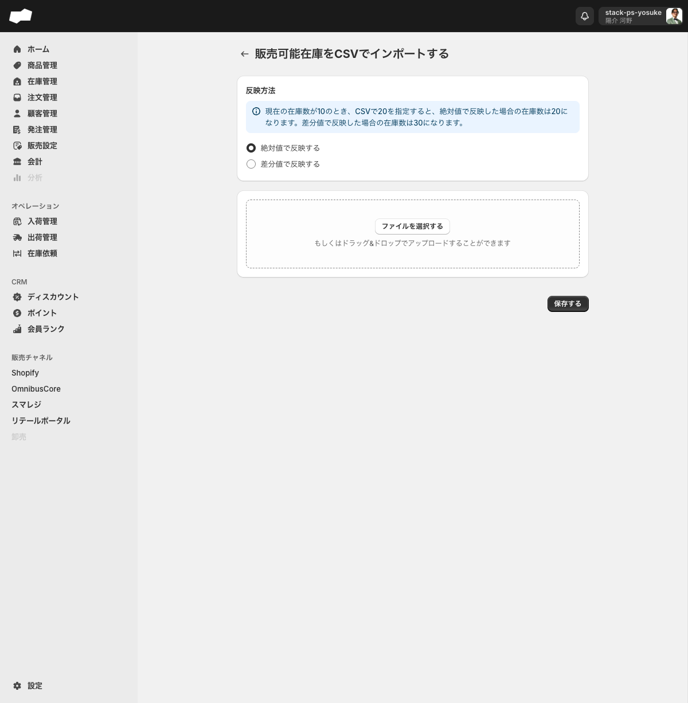
パターンC：ルール選択 + ファイル
対象となるルールをドロップダウンで選んでからCSVファイルをアップロードする。
| カテゴリ | フィールドラベル |
|---|---|
| 販売価格 (通常) | 販売価格ルール |
| 販売価格 (セール) | 販売価格ルール |
| 販売閾値 | 販売閾値ルール |
| 予約販売 | 予約販売ルール |
| 基準ランク | テナント |
パターンD：検索型選択 + ファイル
対象をテキスト検索＋ダイアログで選択してからCSVファイルをアップロードする。
該当カテゴリ: キャンペーン対象商品（「ポイントキャンペーン」フィールドで「検索」ボタンを押してダイアログから選択する）
在庫移動伝票インポート
在庫グループの「在庫移動伝票」から、在庫移動伝票をCSVで一括作成できます。
| 画面 | URL | 補足 |
|---|---|---|
| 一覧 | /admin/csv_import/csv_import_operation_inventory_movement_orders | 見出しは「在庫移動伝票をCSVで一括取り込む」 |
| 新規インポート | /admin/csv_import/csv_import_operation_inventory_movement_orders/create | 見出しは「在庫移動をCSVで一括取り込む」。空保存時は「ファイルを選択してください」 |
ポイント一括加算・一括減算フォームの固有項目
ポイント一括加算には以下の2フィールドが追加されている。
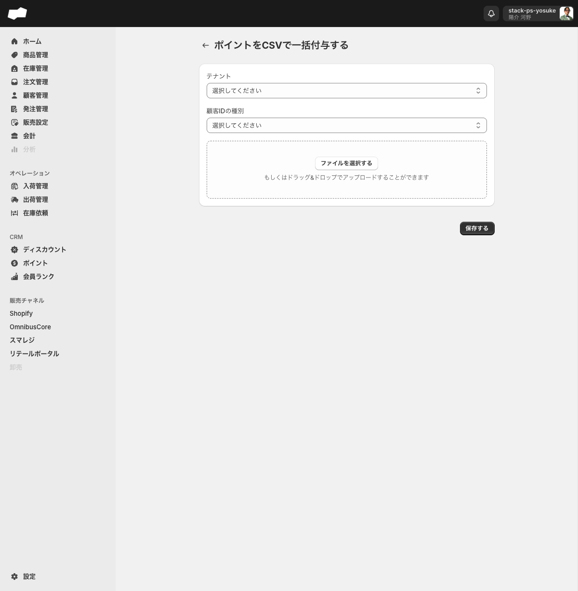
| 項目（UIラベル） | 説明 | 選択肢 |
|---|---|---|
| テナント | 加算対象のテナントを選択する | セレクトボックス（プレースホルダ「選択してください」） |
| 顧客IDの種別 | CSV内の顧客識別子の種類を指定する | 「SQが発番した顧客ID」 / 「外部システムが発番した顧客ID」 |
どちらのフィールドも画面上に必須マーク（*）は表示されていないが、未選択で「保存する」を押すとバリデーションエラーが表示される（実質必須）。
ポイント一括減算フォームの固有項目は「テナント」とCSVファイルのみ。一括加算の「顧客IDの種別」は表示されない。空保存時は「テナントを選択してください」、テナント選択済みでファイル未選択の場合は「ファイルを選択してください」と表示される。
実行履歴
カテゴリの一覧画面に過去のインポート実行履歴が表示される。各履歴行をクリックすると詳細を確認できる。
実行履歴の詳細画面で確認できる項目
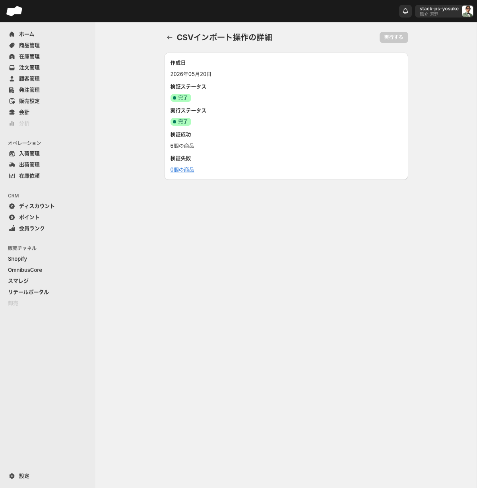
| 項目（UIラベル） | 説明 |
|---|---|
| 作成日 | インポートを実行した日付 |
| 検証ステータス | CSVの内容を検証した結果（例: 完了） |
| 実行ステータス | 実際のデータ反映の結果（例: 完了） |
| 検証成功 | 検証に成功した件数（例: 6個の商品） |
| 検証失敗 | 検証に失敗した件数。クリックで失敗詳細画面（見出し「検証失敗」）へ移動できる |
インポートは「検証」→「実行」の2段階で処理される。検証で失敗した行がある場合は、失敗詳細画面でエラー内容を確認できる。
2026-06-16に販売可能在庫CSVで確認した流れ:
- 新規インポートフォームでCSVをドロップし、「保存する」を押す。
- 詳細画面へ遷移し、検証ステータスが「実行中」、実行ステータスが「未実行」になる。この間、「実行する」ボタンは無効。
- 検証が「成功 完了」になると「実行する」ボタンが有効になる。
- 「実行する」を押すと確認ダイアログ「CSVの取り込み処理を実行しますか？」が開く。本文には「1件の商品の在庫数を更新します。この操作は巻き戻すことができません。」と表示される。
- ダイアログ内の「実行する」を押すと、実行ステータスが「成功 完了」になり、在庫詳細の販売可能数・手持ち数に反映される。
補足・注意点
- トップ画面（/admin/csv_import）でカテゴリを選ぶと、そのカテゴリ専用の一覧画面に遷移する
- CSVのカラム順・ヘッダー名はテンプレートに準拠する必要がある（列指定UIは存在しない）
- 顧客管理画面の「インポート」ドロップダウン内に表示される「ポイント一括付与」は、CSVインポート画面の「一括加算」と同じ機能（表記がアプリ内で異なる）
- ヤマトB2クラウドのCSVは固定カラム順・ヘッダー名一致方式で、必須列は「伝票番号」「出荷日」「お客様管理番号」の3列のみ。残り7列は任意（処理で読み捨て）
関連
- 作業別: 販売可能在庫をCSVで一括更新する手順
- 作業別: ポイントをCSVで一括加算する手順
- FAQ: CSVインポートに関するよくある質問
CSVエクスポート・PDFエクスポート ⚠ 要確認
CSVエクスポート・PDFエクスポート
対象画面: CSVエクスポート / /admin/csv_export | PDFエクスポート / /admin/pdf_export | 最終確認: 2026-06-19
この機能でできること
- 在庫・価格・売上実績・ポイント変動履歴などのデータをCSV形式でダウンロードできる（9カテゴリ）
- 納品書PDFのエクスポートカテゴリを確認できる（PDFエクスポート画面からの任意新規生成導線は表示されない）
- CSVエクスポートとPDFエクスポートの実行履歴を一覧で確認できる
画面・項目の説明
CSVエクスポート（/admin/csv_export）
エクスポートできるデータカテゴリ（9種）
カテゴリはグループ別にまとめられている。
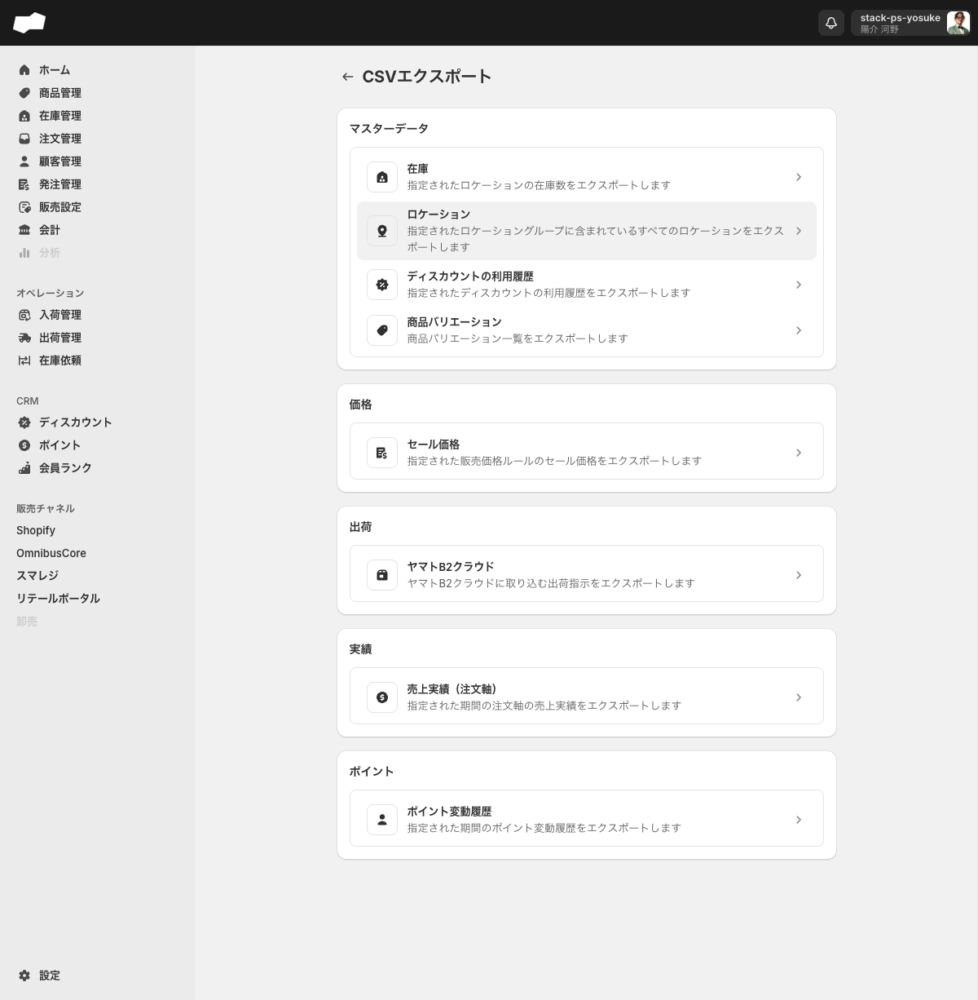
マスターデータグループ
| カテゴリ（UIラベル） | 説明 |
|---|---|
| 在庫 | 指定されたロケーションの在庫数をエクスポートします |
| ロケーション | 指定されたロケーショングループに含まれているすべてのロケーションをエクスポートします |
| ディスカウントの利用履歴 | 指定されたディスカウントの利用履歴をエクスポートします |
| 商品バリエーション | 商品バリエーション一覧をエクスポートします |
価格グループ
| カテゴリ（UIラベル） | 説明 |
|---|---|
| セール価格 | 指定された販売価格ルールのセール価格をエクスポートします |
出荷グループ
| カテゴリ（UIラベル） | 説明 |
|---|---|
| ヤマトB2クラウド | ヤマトB2クラウドに取り込む出荷指示をエクスポートします |
実績グループ
| カテゴリ（UIラベル） | 説明 |
|---|---|
| 売上実績（注文軸） | 指定された期間の注文軸の売上実績をエクスポートします |
| 売上実績（明細軸） | 指定された期間の明細軸の売上実績をエクスポートします |
ポイントグループ
| カテゴリ（UIラベル） | 説明 |
|---|---|
| ポイント変動履歴 | 指定された期間のポイント変動履歴をエクスポートします |
各カテゴリのフォーム詳細
在庫エクスポート
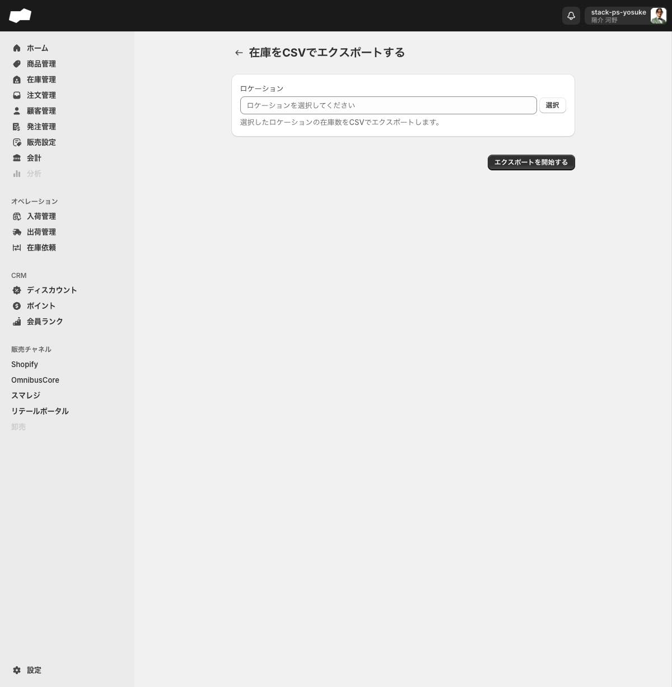
| 項目（UIラベル） | 必須/任意 | 説明 |
|---|---|---|
| ロケーション | 実質必須（* マークなし） | 「選択」ボタンを押してロケーション選択ダイアログから選ぶ。複数選択可。未選択のままではエクスポートが実行されない |
ロケーション選択ダイアログの構成: タブ「すべて」「店舗」「倉庫」の3種。列はチェックボックス・名前・場所コード。複数選択できる。
ロケーションエクスポート
| 項目（UIラベル） | 必須/任意 | 説明 |
|---|---|---|
| ロケーショングループ | 必須（* マーク付き） | 「選択」ボタンを押してロケーショングループ選択ダイアログから選ぶ |
画面内補足文（原文）: 「選択したロケーショングループに属するロケーションをCSVでエクスポートします。」
ディスカウントの利用履歴エクスポート
| 項目（UIラベル） | 必須/任意 | 説明 |
|---|---|---|
| ディスカウント | 必須（* マーク付き） | 「選択」ボタンを押してディスカウント選択ダイアログから選ぶ |
画面内補足文（原文）: 「選択したディスカウントの使用履歴をCSVでエクスポートします。」
商品バリエーションエクスポート
| 項目（UIラベル） | 必須/任意 | 説明 |
|---|---|---|
| 商品情報を含める | 任意（チェックボックス） | チェックをONにするとCSVに商品情報列が追加される（デフォルト: 未チェック） |
チェックボックスの補足文（原文）: 「CSVに商品情報（商品コード、商品タイトル、ブランド名など）を含めます」
セール価格エクスポート
| 項目（UIラベル） | 必須/任意 | 説明 |
|---|---|---|
| 販売価格ルール | 必須（* マーク付き） | ドロップダウンから対象の販売価格ルールを選ぶ |
画面内補足文（原文）: 「選択した販売価格ルールのセール価格をCSVでエクスポートします。」
ヤマトB2クラウドエクスポート
この一覧画面にはエクスポートボタンが存在しない。ヤマトB2クラウド向けのCSVは、出荷管理画面（/admin/inventory_outbound_orders）の「条件指定でエクスポート」→「ヤマトB2クラウド」から実行する。実行後はメールでダウンロードリンクが通知される。
この画面（/admin/csv_export/csv_export_operation_inventory_outbound_order_yamato_b2_clouds）は実行履歴の確認専用。ただし2026-06-15のstaging確認では、条件指定フォームの「実行する」を押した直後に出荷管理へ戻り、この履歴画面には即時レコードが表示されなかった。ステータス変更チェックをOFFにした場合、対象の出荷指示は出荷待ちのまま変化しない。
売上実績（注文軸）エクスポート
| 項目（UIラベル） | 必須/任意 | 説明 |
|---|---|---|
| テナント | 必須（* マーク付き） | ドロップダウンから対象のテナントを選ぶ |
| 開始日時 | 必須（* マーク付き） | 絞り込みを開始する日時を入力する |
| 終了日時 | 必須（* マーク付き） | 絞り込みを終了する日時を入力する |
2026-06-16の実機確認では、3項目を入力して「エクスポートを開始する」を押すと一覧画面へ戻り、直近行が「注意 処理中」と表示された。再読み込み後に「成功 完了」になり、ダウンロードリンクが表示された。
売上実績（明細軸）エクスポート
売上実績一覧画面の「エクスポート」>「明細軸」から /admin/csv_export/csv_export_operation_sale_change_line_items に遷移する。フォーム項目は注文軸と同じ構成。
ポイント変動履歴エクスポート
| 項目（UIラベル） | 必須/任意 | 説明 |
|---|---|---|
| テナント | 必須（* マーク付き） | ドロップダウンから対象のテナントを選ぶ |
| 開始日時 | 必須（* マーク付き） | ポイント変動履歴の絞り込みを開始する日時を入力する |
| 終了日時 | 必須（* マーク付き） | ポイント変動履歴の絞り込みを終了する日時を入力する |
PDFエクスポート（/admin/pdf_export）
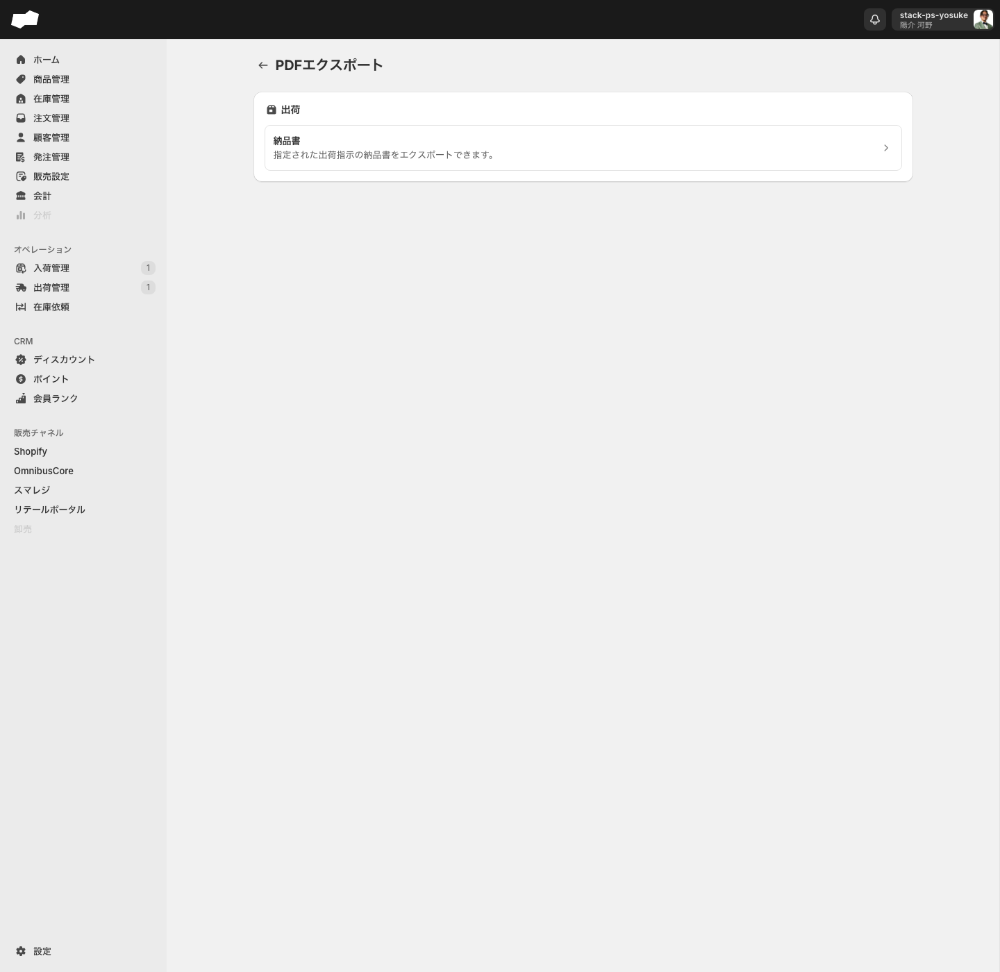
エクスポートできるデータ
| カテゴリ（UIラベル） | 説明 |
|---|---|
| 納品書 | 指定された出荷指示の納品書をエクスポートします |
納品書PDFの生成方法
PDFエクスポート画面（/admin/pdf_export）には「出荷」グループと「納品書」行が表示される。2026-06-19時点では、このトップ画面に新規作成ボタンは表示されない。
PDFエクスポートメニュー側には新規作成ボタンが表示されず、/admin/pdf_export/pdf_export_operation_packing_slips/create に直接アクセスしても「このページは存在しないようです」と表示された。出荷完了済みの出荷指示詳細でも、納品書/PDF生成ボタンは確認できなかった。
そのため、現時点のFAQでは「PDFエクスポート画面から任意に納品書PDFを新規作成できる」とは案内しない。注文起点の出荷指示など、別条件で生成導線が出る可能性は追加確認が必要。
納品書のテンプレートは設定画面（/admin/settings/pdf_template_package_slip）で管理する。
補足・注意点
- 各エクスポートカテゴリの一覧画面には実行履歴が表示される。カテゴリをクリックして専用画面へ進む
- 売上実績（注文軸）は、実行後に一覧上で「処理中」から「成功 完了」へ変わり、ダウンロードリンクが表示される
- ヤマトB2クラウドCSVは非同期処理で実行される。納品書PDFは、今回の実機確認ではPDFメニューからの新規作成導線を確認できなかった
- ヤマトB2クラウドの条件指定エクスポートでは、「CSVの出力後に出荷指示のステータスを出荷作業中に変更する」をONにすると対象出荷指示のステータス変更を伴う。ステータスを変えたくない場合はOFFのまま実行する
関連
- 作業別: ヤマトB2クラウドで出荷業務を行う
- 作業別: 売上実績をCSVエクスポートする
- 作業別: 在庫をCSVでエクスポートする手順
- 機能別: CSVインポート
- FAQ: CSVエクスポート・PDFエクスポートに関するよくある質問
OmnibusCore連携 ⚠ 要確認
OmnibusCore連携
対象画面: OmnibusCore連携 / /admin/omnibus_core_integrations | 最終確認: 2026-06-10
この機能でできること
- OmnibusCoreとSQを連携し、商品同期・在庫設定・注文設定を構成する
- 連携サイト単位でロケーション（実店舗・倉庫）とサイトを紐づける
- 通知メールを登録し、連携エラー時の通知先を設定する
画面・項目の説明
作成フォーム（/admin/omnibus_core_integrations/create）
画面名: 「OmnibusCore連携を作成する」
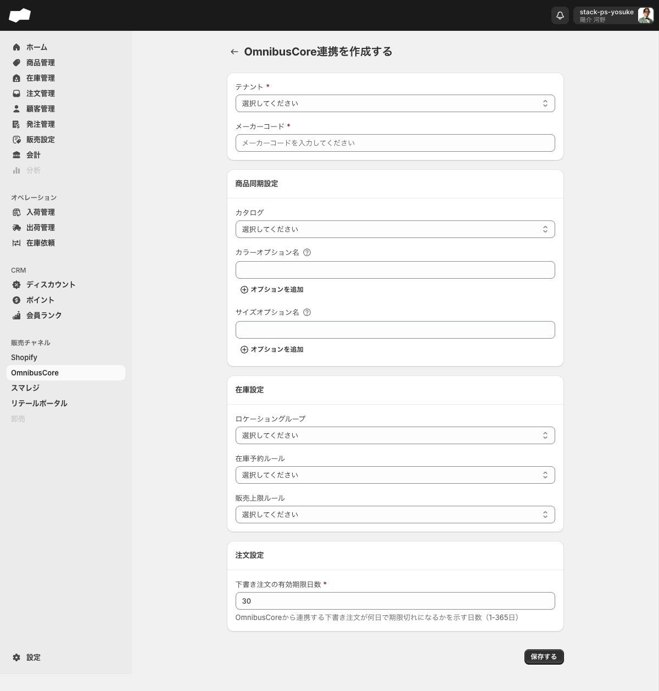
基本情報
| 項目（UIラベル） | 説明 | 必須 | 制約・選択肢 |
|---|---|---|---|
| テナント | 連携するSQ内テナント | 必須 | コンボボックス（SQ内マスタから選択） |
| メーカーコード | OmnibusCore側のメーカーコード | 必須 | テキスト入力（placeholder: 「メーカーコードを入力してください」） |
商品同期設定
| 項目（UIラベル） | 説明 | 必須 | 制約・選択肢 |
|---|---|---|---|
| カタログ | 連携する商品カタログ | 任意 | コンボボックス（SQ内マスタから選択） |
| カラーオプション名 | 商品カラーを示すオプション名 | 任意 | テキスト入力。「オプションを追加」ボタンで複数行追加可能 |
| サイズオプション名 | 商品サイズを示すオプション名 | 任意 | テキスト入力。「オプションを追加」ボタンで複数行追加可能 |
在庫設定
| 項目（UIラベル） | 説明 | 必須 | 制約・選択肢 |
|---|---|---|---|
| ロケーショングループ | 在庫引当に使うロケーショングループ | 任意 | コンボボックス（SQ内マスタから選択） |
| 在庫予約ルール | 在庫予約時に適用するルール | 任意 | コンボボックス（SQ内マスタから選択） |
| 販売上限ルール | 販売数の上限制御ルール | 任意 | コンボボックス（SQ内マスタから選択） |
注文設定
| 項目（UIラベル） | 説明 | 必須 | 制約・選択肢 |
|---|---|---|---|
| 下書き注文の有効期限日数 | OmnibusCoreから連携された下書き注文が期限切れになるまでの日数 | 必須（作成時） | 数値入力（デフォルト: 30、範囲: 1〜365）。ヒント: 「OmnibusCoreから連携する下書き注文が何日で期限切れになるかを示す日数（1-365日）」 |
送信ボタン: 「保存する」
バリデーション（作成フォーム）
| 条件 | エラー文言 |
|---|---|
| テナント未選択 | 「テナントを選択してください」 |
| メーカーコードが空 | 「メーカーコードを入力してください」 |
| 下書き注文の有効期限日数が範囲外（0以下または366以上） | 「1から365の間で入力してください」 |
フォーム編集中に別ページへ移動しようとすると「保存されていない変更」ダイアログが表示されます。「取り消す」で離脱、「保存」で保存処理を実行します。
詳細・編集画面（接続済み状態）
URL: /admin/omnibus_core_integrations/{id}
詳細・編集画面は次の3タブで構成されます。
タブ1: 基本設定
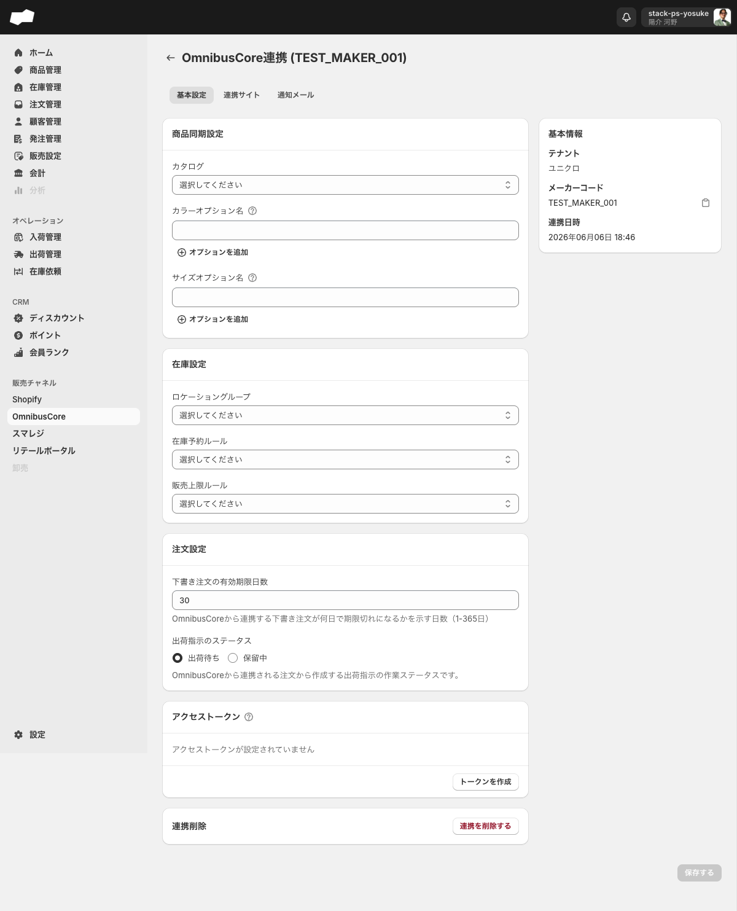
作成フォームの全セクション（商品同期設定・在庫設定・注文設定）に加え、以下の項目があります。
| 項目（UIラベル） | 説明 | 制約・選択肢 |
|---|---|---|
| 出荷指示のステータス | OmnibusCoreから連携される注文で作成する出荷指示の作業ステータス | ラジオボタン。「出荷待ち」（デフォルト）/ 「保留中」。ヒント: 「OmnibusCoreから連携される注文から作成する出荷指示の作業ステータスです。」 |
| アクセストークン | OmnibusCoreとのAPI連携に使用するトークン | 「トークンを作成」ボタンで生成 |
備考: 詳細・編集画面では「下書き注文の有効期限日数」の必須マーク（*）が外れます（任意扱い）。
右サイドバーにはテナント・メーカーコード・連携日時が読み取り専用で表示されます。
タブ2: 連携サイト
「追加する」ボタンから「連携サイトを追加する」ダイアログを開きます。
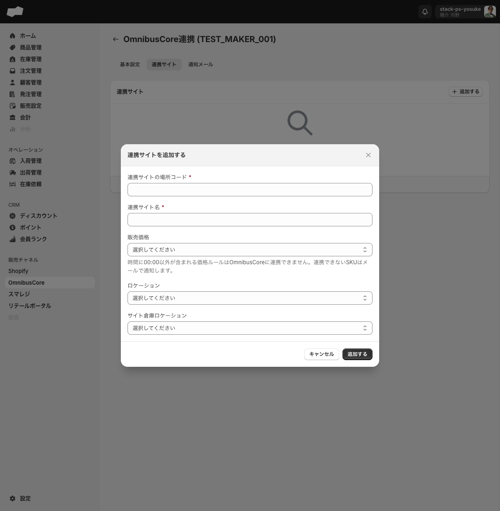
「連携サイトを追加する」ダイアログの項目:
| 項目（UIラベル） | 説明 | 必須 | 制約・選択肢 |
|---|---|---|---|
| 連携サイトの場所コード | サイトを識別する場所コード | 必須 | テキスト入力 |
| 連携サイト名 | サイトの表示名 | 必須 | テキスト入力 |
| 販売価格 | サイトに適用する販売価格ルール | 任意 | コンボボックス。ヒント: 「時間に00:00以外が含まれる価格ルールはOmnibusCoreに連携できません。連携できないSKUはメールで通知します。」 |
| ロケーション | 会社に紐づくロケーション（CompanyLocation） | 任意 | コンボボックス（「会社」配下のロケーションマスタから選択） |
| サイト倉庫ロケーション | サイトに割り当てる倉庫ロケーション | 任意 | コンボボックス（SQのロケーションマスタから選択） |
操作ボタン: 「キャンセル」「追加する」
タブ3: 通知メール
「追加する」ボタンから「通知メールを追加する」ダイアログを開きます。
「通知メールを追加する」ダイアログの項目:
| 項目（UIラベル） | 説明 | 必須 | 制約・選択肢 |
|---|---|---|---|
| 名前 | 通知先の名前 | 必須 | テキスト入力 |
| メールアドレス | 通知先のメールアドレス | 必須 | テキスト入力（placeholder: 「you@company.com」）。ヒント: 「通知を受け取るメールアドレスを入力してください。メールアドレスは重複して登録できません。」 |
操作ボタン: 「キャンセル」「追加する」
補足・注意点
- テナントはSQ内で事前に作成しておく必要があります。
- カラーオプション名・サイズオプション名は空行で保存してもエラーにならず、保存後に空行は自動的に除去されます。
- 連携サイトの「販売価格」に設定できる価格ルールは、適用時刻が00:00（深夜0時）のみのものに限られます。00:00以外の時刻を含む価格ルールはOmnibusCoreに連携できません（連携できないSKUはメールで通知されます）。
- 通知メールは同一アドレスの重複登録ができません。
関連
- 作業別: 販売チャネルを接続する（OmnibusCoreのセクションを参照）
- FAQ: 外部連携のよくある質問
Shopify連携 ⚠ 要確認
Shopify連携
対象画面: Shopify連携 / /admin/shopify_integrations | 最終確認: 2026-06-16
この機能でできること
- ShopifyストアとSQを接続し、商品・注文データを連携する
- 接続後の在庫引当ロケーション・価格ルール・バーコード生成方法などを設定する
画面・項目の説明
接続前の前提
Shopify連携を実行するには、先にShopifyストア側へSQコネクターアプリ（SQ Connect）をインストールしておく必要があります。
公開アプリのSQ Connectは本番SQ（sq.stackservice.com）向けです。staging環境（sqstackstaging.com）へ接続する場合は、staging向けの別アプリとインストールリンクが必要です。
接続前の画面（空状態）
Shopifyストアが未接続の場合、次のメッセージが表示されます。
「Shopifyストアを接続する / Shopifyと連携して、商品や注文データの連携を行います。」
「ストアを接続する」ボタンまたはリンクから接続フォーム（/admin/shopify_integrations/create）に進みます。
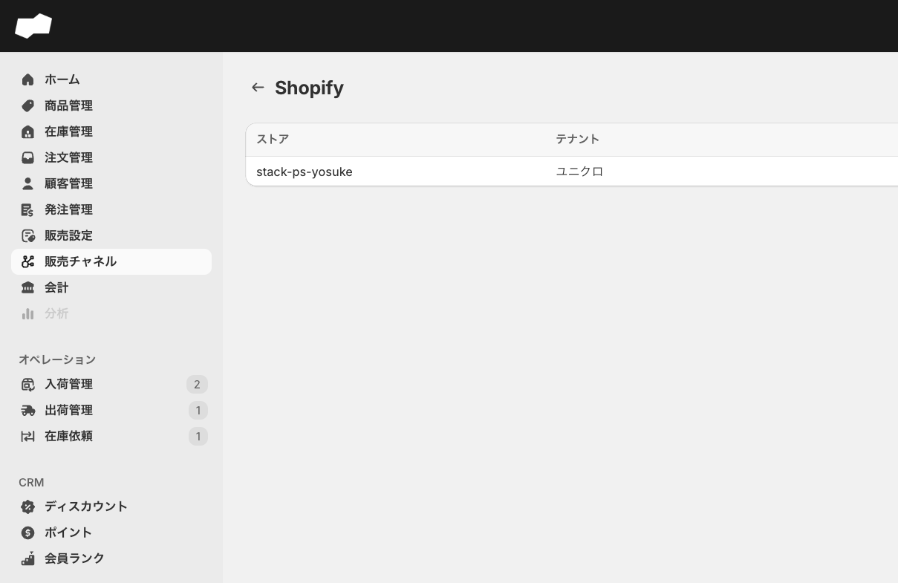
接続フォーム「ストアを連携する」の項目
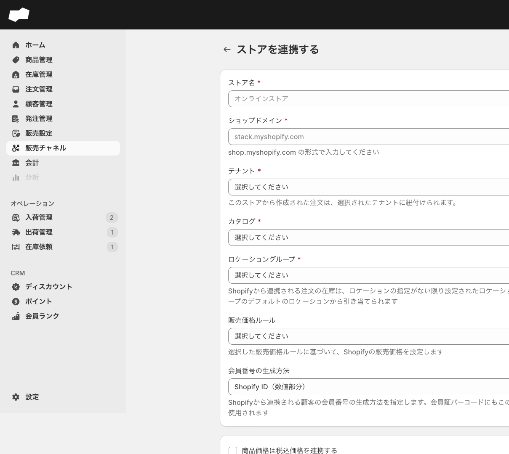
| 項目（UIラベル） | 説明 | 必須 | 制約・選択肢 |
|---|---|---|---|
| ストア名 | SQ内でのストア識別名 | 必須 | テキスト入力 |
| ショップドメイン | ShopifyストアのURL | 必須 | shop.myshopify.com の形式で入力 |
| テナント | 連携するSQ内テナント | 必須 | コンボボックス（SQ内マスタから選択） |
| カタログ | 連携する商品カタログ | 必須 | コンボボックス（SQ内マスタから選択） |
| ロケーショングループ | 注文在庫の引当元グループ | 必須 | コンボボックス（SQ内マスタから選択）。ヒント: 「Shopifyから連携される注文の在庫は、ロケーションの指定がない限り設定されたロケーショングループのデフォルトのロケーションから引き当てられます」 |
| 販売価格ルール | Shopify側の販売価格算出ルール | 任意 | コンボボックス。ヒント: 「選択した販売価格ルールに基づいて、Shopifyの販売価格を設定します」 |
| 会員証バーコードのフォーマット | 購買顧客の会員証バーコード生成方法 | 任意 | 「Shopify ID（数値部分）」（デフォルト）/ 「JAN-13コード（モジュラス10/ウェイト3方式）」。ヒント: 「Shopifyから連携される購買顧客の会員証バーコードの生成方法を指定します」 |
| 商品価格は税込価格を連携する | 商品価格を税込でShopifyに送るかどうか | 任意 | チェックボックス（デフォルト: オフ） |
| 0円の商品バリエーションを連携する | 価格が0円のバリエーションも連携対象にするかどうか | 任意 | チェックボックス（デフォルト: オフ） |
| 送料は税込として処理する | 送料を税込で処理するかどうか | 任意 | チェックボックス（デフォルト: オフ） |
| 注文による在庫変動を起こさない | Shopify経由の注文で在庫数を変動させないかどうか | 任意 | チェックボックス（デフォルト: オフ） |
送信ボタン: 「連携する」
バリデーション
必須項目が未入力・未選択の場合、フィールド直下にエラーが表示されます。
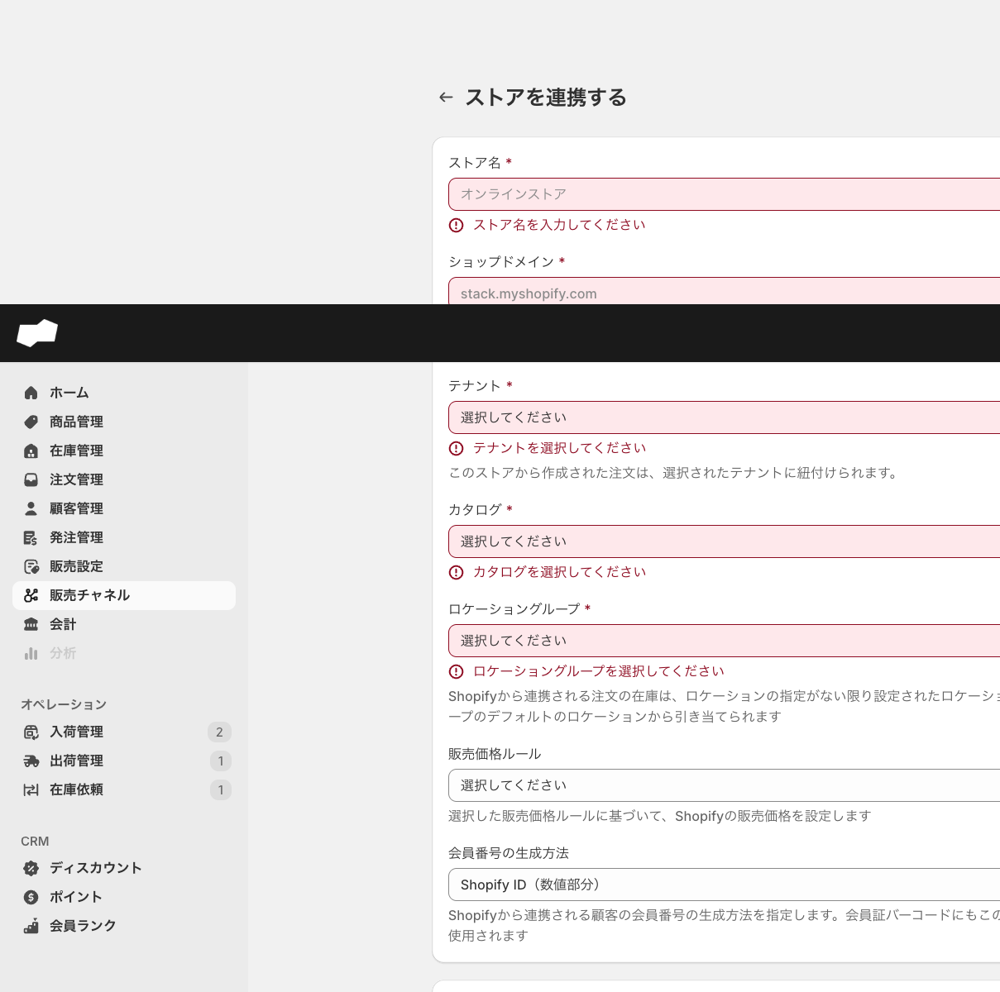
| 条件 | エラー文言 |
|---|---|
| ストア名が空 | 「ストア名を入力してください」 |
| ショップドメインが空 | 「ショップドメインを入力してください」 |
| テナント未選択 | 「テナントを選択してください」 |
| カタログ未選択 | 「カタログを選択してください」 |
| ロケーショングループ未選択 | 「ロケーショングループを選択してください」 |
補足・注意点
- テナント・カタログ・ロケーショングループは、Shopifyと接続する前にSQ内であらかじめ作成しておく必要があります。
- Shopifyストア側にSQ Connectが未インストールの場合、SQ側の「連携する」実行時にエラーになります。
- 「連携する」ボタン押下後にShopify側のOAuth認証フローが起動すると推測されますが、接続後の実際の遷移先・認証手順は未接続環境のため未確認です。
関連
- 作業別: 販売チャネルを接続する（Shopifyのセクションを参照）
- FAQ: 外部連携のよくある質問
カタログ ⚠ 要確認
カタログ
対象画面: カタログ / /admin/catalogs | 最終確認: 2026-06-10
この機能でできること
- 商品をグループにまとめて管理する（カタログの作成・編集・削除）
- カタログに商品を手動で追加する
- 製造元やブランドコードを条件に商品を自動追加するルールを設定する
- 外部連携（OmnibusCore など）のチャネルにカタログを紐付けて、出品する商品をチャネルごとに制御する
- CSVで商品を一括追加する
カタログとは
カタログは商品をグループ化する入れ物です。外部連携（OmnibusCoreなど）ではチャネル（連携先）ごとに1つのカタログを指定することで、どの商品をそのチャネルに出すかを制御します。
例えばOmnibusCore連携では、連携設定の「商品同期設定 > カタログ」でカタログを選択します。カタログ一覧の「販売先」列に表示される件数は、このカタログを参照しているチャネル連携の数を示します。
カタログ一覧（/admin/catalogs）
一覧の列
| 列名 | 内容 |
|---|---|
| 名前 | カタログ名 |
| 商品 | このカタログに登録されている商品の数（例: 0個の商品） |
| 販売先 | このカタログを参照しているチャネル連携の数（例: 0つの販売先） |
カタログ詳細画面（/admin/catalogs/{id}）
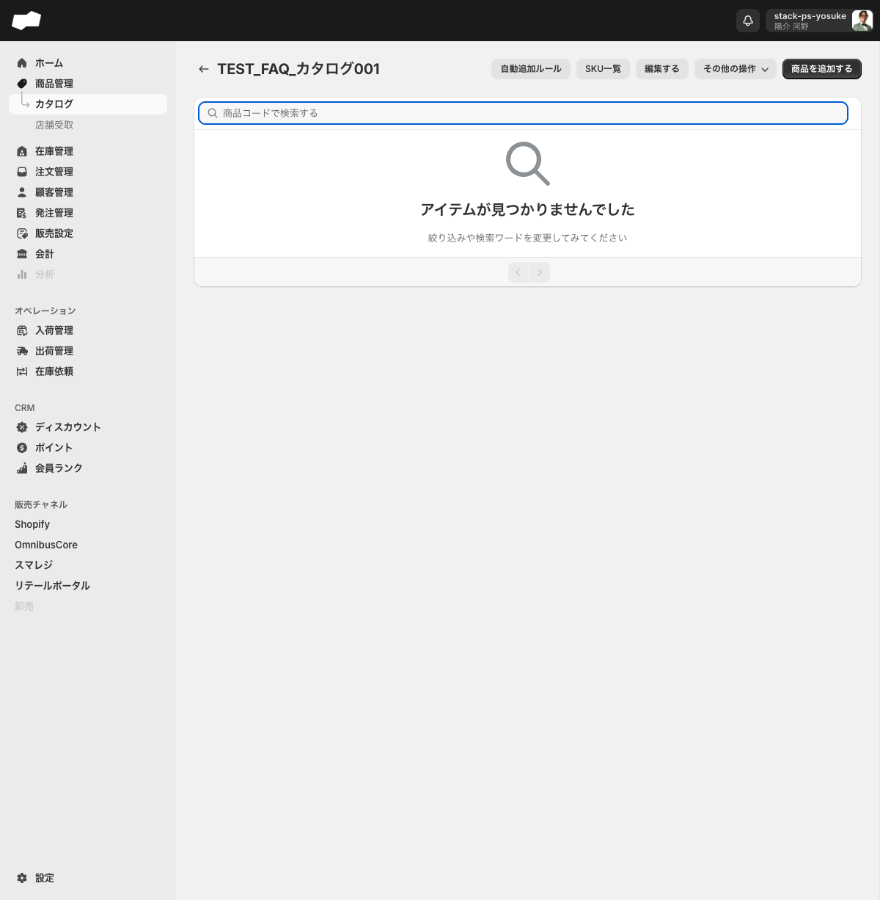
画面上部のボタン
| ボタン | 機能 |
|---|---|
| 自動追加ルール | 自動追加ルールの一覧・設定画面へ遷移 |
| SKU一覧 | このカタログのSKU一覧画面へ遷移 |
| 編集する | カタログ名を変更するダイアログを開く |
| その他の操作 | 「カタログを削除する」「インポート」のメニューが表示される |
| 商品を追加する（右側） | 商品を選択してカタログに追加する画面へ遷移 |
商品の検索
詳細画面の本体に「商品コードで検索する」テキストボックスがあります。カタログ内の商品を商品コードで絞り込めます。
商品の追加（/admin/catalogs/{id}/create）
「商品を追加する」をクリックすると「カタログに商品を追加する」画面が開きます。
- テーブル列: 商品（サムネイル＋商品名）/ 商品コード
- 「商品コードで検索する」テキストボックスで絞り込みができます
- 商品行のチェックボックスを選択すると「カタログに追加する」ボタンが表示されます
- 一括チェックボックスで全件を選択することもできます
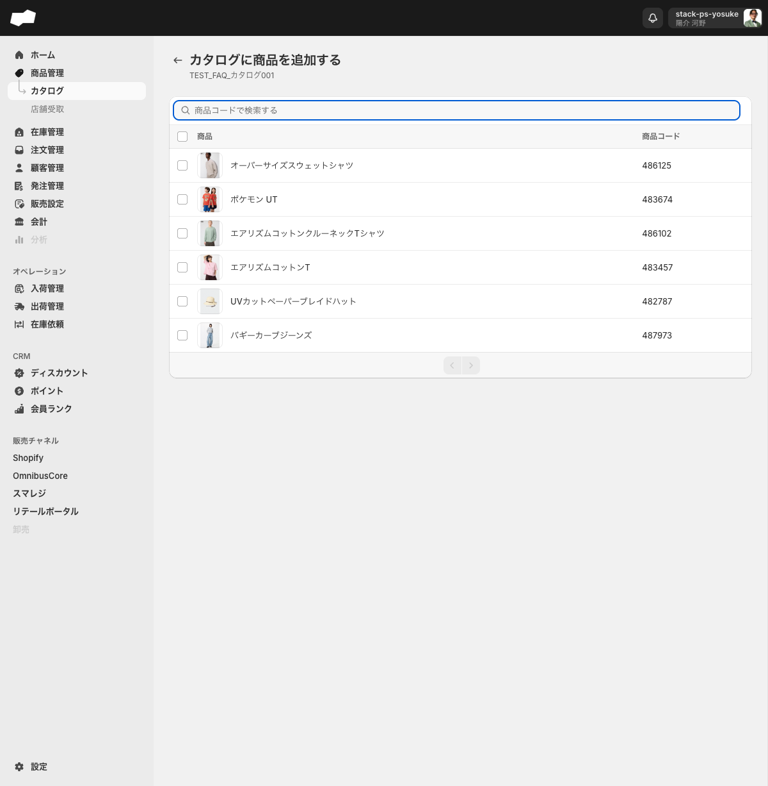
自動追加ルール（/admin/catalogs/{id}/automatic_add_rules）
条件に一致する商品を自動的にカタログへ追加するルールを設定できます。
ルールの設定項目
「追加する」ボタンで「ルールを追加する」ダイアログが開きます。
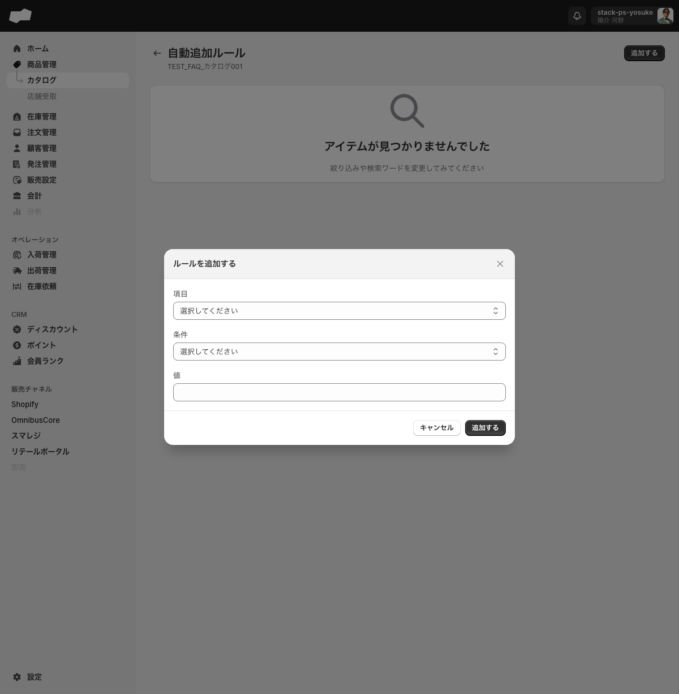
| 項目 | 選択肢 |
|---|---|
| 項目 | 「製造元」「ブランドコード」の2択 |
| 条件 | 「一致する」の1択 |
| 値 | テキストで自由入力 |
設定したルールと完全一致する商品が自動的にカタログに追加されます。
登録済みルールは「項目」「条件」「値」の一覧で確認できます。行を選択すると「ルールを削除する」ボタンが表示され、確認ダイアログ「カタログのルールを削除しますか？」から削除できます。本文は「選択された1件のルールを削除します。この処理は巻き戻すことができません。」です。
カタログの編集
「編集する」ボタンをクリックすると「カタログを編集する」ダイアログが開きます。
| 項目（UIラベル） | 必須 | 説明 |
|---|---|---|
| タイトル* | 必須 | カタログ名（例: 渋谷店） |
編集できるのはタイトルのみです。チャネル割り当てやロケーションとの紐付けはこのダイアログからは設定できません。
SKU一覧（/admin/catalogs/{id}/catalog_product_variants）
カタログに追加されているSKUの一覧を確認できます。
CSVインポート
「その他の操作 > インポート」からカタログへの商品を一括追加できます。
インポート画面（/admin/csv_import/csv_import_operation_catalog_products）では以下の項目を入力します。
| 項目 | 必須 | 説明 |
|---|---|---|
| カタログ | 必須 | ドロップダウンで既存カタログを選択 |
| ファイルをアップロード | 必須 | CSVファイルをアップロード（ファイル選択またはドラッグ&ドロップ） |
テンプレートファイル（Googleスプレッドシート）へのリンクがページ上部に表示されます。
補足・注意点
- カタログの削除は「その他の操作 > カタログを削除する」から行います。削除前に商品との紐付けを確認してください
- 削除時は確認ダイアログ「カタログを削除しますか？」が表示されます。本文は「カタログを削除します。この処理は巻き戻すことができません。」です
- カタログとチャネルの紐付けはチャネル連携側の設定から行います（例: OmnibusCore連携の「商品同期設定」）
- カタログ一覧の「販売先」列の件数は、このカタログを参照しているチャネル連携の数です。カタログ詳細画面から直接「販売先」を設定するUIはありません
関連
- 機能別: 商品管理
- 作業別: カタログを作成して商品を追加する
スマレジ連携 ⚠ 要確認
スマレジ連携
対象画面: スマレジ連携 / /admin/smaregi_integrations | 最終確認: 2026-06-10
この機能でできること
- スマレジPOSとSQを連携し、商品・在庫・注文データを同期する
- 在庫の同期方向（スマレジ→SQ / SQ→スマレジ / 同期しない）を設定する
画面・項目の説明
接続前の画面（空状態）
スマレジ連携が未設定の場合、「追加する」ボタンが表示されます。ボタンから作成フォーム（/admin/smaregi_integrations/create）に進みます。
作成フォーム（/admin/smaregi_integrations/create）
画面名: 「スマレジ連携を作成する」
画面上部に次のバナーが表示されます。
「スマレジ連携を利用するには、スマレジにアプリをインストールする必要があります。」
スマレジ側での事前作業（スマレジのアプリストアからSQアプリのインストール）が前提となります。
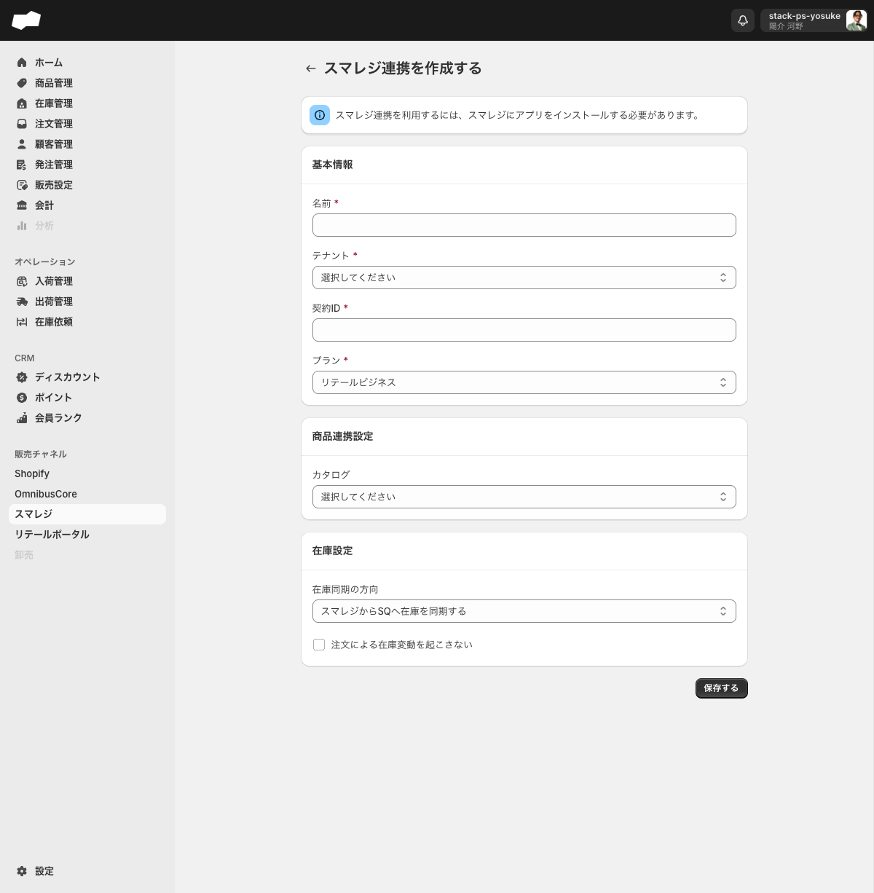
基本情報
| 項目（UIラベル） | 説明 | 必須 | 制約・選択肢 |
|---|---|---|---|
| 名前 | SQ内でのスマレジ連携の識別名 | 必須 | テキスト入力 |
| テナント | 連携するSQ内テナント | 必須 | コンボボックス（SQ内マスタから選択） |
| 契約ID | スマレジの契約ID | 必須 | テキスト入力 |
| プラン | スマレジの契約プラン | 必須 | コンボボックス。「スタンダード」「プレミアム」「プレミアムプラス」「フードビジネス」「リテールビジネス」（デフォルト: リテールビジネス） |
商品連携設定
| 項目（UIラベル） | 説明 | 必須 | 制約・選択肢 |
|---|---|---|---|
| カタログ | 連携する商品カタログ | 任意 | コンボボックス（SQ内マスタから選択） |
在庫設定
| 項目（UIラベル） | 説明 | 必須 | 制約・選択肢 |
|---|---|---|---|
| 在庫同期の方向 | 在庫数値をどちらからどちらへ同期するかの方向設定 | 任意 | コンボボックス。「スマレジからSQへ在庫を同期する」（デフォルト）/ 「SQからスマレジへ在庫を同期する」/ 「在庫を同期しない」 |
| 注文による在庫変動を起こさない | スマレジ経由の注文で在庫数を変動させないかどうか | 任意 | チェックボックス（デフォルト: オフ） |
送信ボタン: 「保存する」
バリデーション
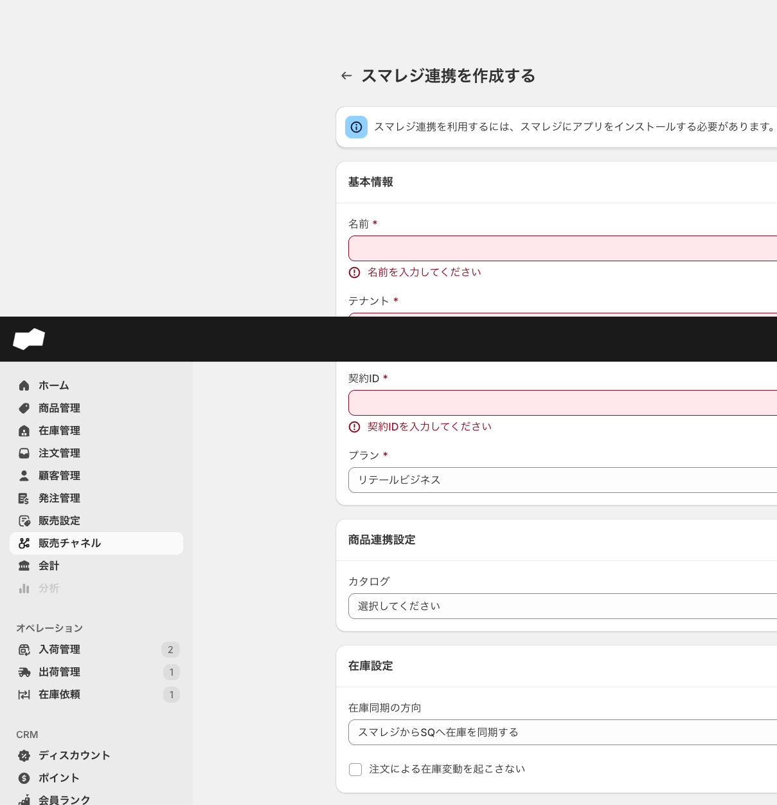
| 条件 | エラー文言 |
|---|---|
| 名前が空 | 「名前を入力してください」 |
| テナント未選択 | 「テナントを選択してください」 |
| 契約IDが空 | 「契約IDを入力してください」 |
プランはデフォルト値（リテールビジネス）が設定済みのためバリデーションエラーになりません。
補足・注意点
- スマレジ連携を使用するには、スマレジ側でSQアプリのインストールが必要です。スマレジアプリインストールの詳細手順はフォーム内に記載がないため、スマレジ側のドキュメントを参照してください。
- プランはデフォルトが「リテールビジネス」に設定されており、小売業向け標準設定となっています。プランを変更してもフォームの項目構成は変わりません。
- 在庫同期の方向を変更してもフォームの項目構成は変わりません（条件付き表示なし）。
関連
- 作業別: 販売チャネルを接続する（スマレジのセクションを参照）
- FAQ: 外部連携のよくある質問
ディスカウント ⚠ 要確認
ディスカウント
対象画面: ディスカウント / /admin/order_price_adjustment_rules | 最終確認: 2026-06-16
この機能でできること
- クーポンコードを使った注文割引ルールを作成・管理する
- 割引率（%）または割引額（円）の2方式を選べる
- 適用できる購入金額の上限・下限を設定する
- 対象商品を全商品または個別バリエーション単位で指定する
- 対象顧客・対象店舗をルールごとに管理する
- 利用回数を「お客様1人につき1回のみ」に制限する
- 有効期間（開始日時・終了日時）を指定してスケジュール管理する
画面・項目の説明
一覧画面（/admin/order_price_adjustment_rules）
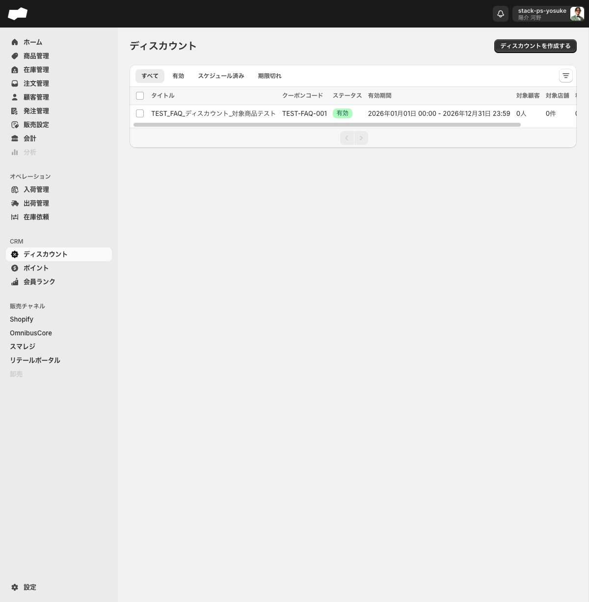
タブ
| タブ名 | 表示内容 |
|---|---|
| すべて | 作成済み全ディスカウント |
| 有効 | 現在有効なディスカウント |
| スケジュール済み | 開始前のディスカウント |
| 期限切れ | 終了したディスカウント |
一覧の列
| 列名 | 内容 |
|---|---|
| （チェックボックス） | 一括選択用 |
| タイトル | ルール名（クリックで詳細ページへ遷移） |
| クーポンコード | 入力されたクーポンコード |
| ステータス | 「成功」バッジ + 有効状態バッジ（例: 「有効」）の2つが表示される |
| 有効期間 | 開始日時 〜 終了日時 |
| 対象顧客 | 登録されている対象顧客数（n人） |
| 対象店舗 | 登録されている対象店舗数（n件） |
| 利用回数 | 利用された回数（n回） |
| テナント | 紐付いているテナント名 |
主要操作
| 操作 | 説明 |
|---|---|
| ディスカウントを作成する | 右上のボタン。作成フォームへ遷移する |
| 検索と絞り込みの結果（右上アイコン） | クリックするとタブが非表示になり、「絞り込みを追加」モードに切り替わる。絞り込み条件として「テナント」を指定できる |
作成フォーム（/admin/order_price_adjustment_rules/create）
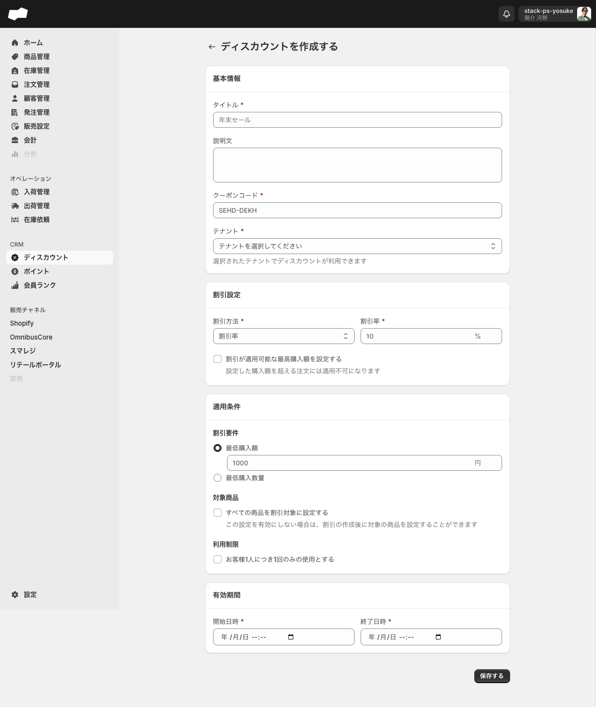
基本情報
| 項目（UIラベル） | 説明 | 必須 | 制約・選択肢 |
|---|---|---|---|
| タイトル | ディスカウントの管理名 | 必須（★） | テキスト。入力例（プレースホルダ）: 「年末セール」 |
| 説明文 | ディスカウントの説明 | 任意 | テキストエリア |
| クーポンコード | 顧客が入力するコード | 必須（★） | テキスト。入力例（プレースホルダ）: 「SEHD-DEKH」（自動生成ではない）。空欄で保存すると「クーポンコードを入力してください」のエラーが表示される |
| テナント | このディスカウントを利用できるテナント | 必須（★） | コンボボックス。ヘルプ文: 「選択されたテナントでディスカウントが利用できます」 |
割引設定
| 項目（UIラベル） | 説明 | 必須 | 制約・選択肢 |
|---|---|---|---|
| 割引方法 | 割引の計算方式 | 必須（★） | コンボボックス。選択肢: 「割引率」/ 「割引額」。選択内容によって下の入力欄のラベルが切り替わる |
| 割引率（%） | 割引する割合 | 必須（★）※割引方法=割引率 の場合 | 数値。入力例（プレースホルダ）: 10。有効範囲は1〜100 |
| 割引額（円） | 割引する固定金額 | 必須（★）※割引方法=割引額 の場合 | 数値 |
| 割引が適用可能な最高購入額を設定する | 適用可能な購入金額の上限を設ける | 任意 | チェックボックス。ONにすると「最高購入額（円）」入力欄が追加表示される |
| 最高購入額（円） | 割引が適用される注文金額の上限 | 任意（チェックON時のみ表示） | 数値 |
適用条件
| 項目（UIラベル） | 説明 | 必須 | 制約・選択肢 |
|---|---|---|---|
| 割引要件 | 割引を適用するための最低条件 | 任意 | ラジオボタン。「最低購入額」/ 「最低購入数量」から選択 |
| 最低購入額（円） | 最低購入額を選択した場合の入力欄 | 任意 | 数値。入力例（プレースホルダ）: 1000 |
| 最低購入数量（個） | 最低購入数量を選択した場合の入力欄 | 任意 | 数値。入力例（プレースホルダ）: 0 |
| すべての商品を割引対象に設定する | 全商品を対象にするか個別設定にするか | 任意 | チェックボックス。OFFのまま保存した場合、詳細ページの「商品管理」タブで対象バリエーションを個別に追加できる。備考（アプリ画面の説明文原文）: 「この設定を有効にしない場合は、割引の作成後に対象の商品を設定することができます」 |
利用制限
| 項目（UIラベル） | 説明 | 必須 | 制約・選択肢 |
|---|---|---|---|
| お客様1人につき1回のみの使用とする | 同一顧客が1回しか使えないよう制限する | 任意 | チェックボックス |
有効期間
| 項目（UIラベル） | 説明 | 必須 | 制約・選択肢 |
|---|---|---|---|
| 開始日時 | 割引が有効になる日時 | 必須（★） | 日時ピッカー |
| 終了日時 | 割引が無効になる日時 | 必須（★） | 日時ピッカー |
詳細ページのタブ
作成後の詳細ページは5つのタブで構成される。
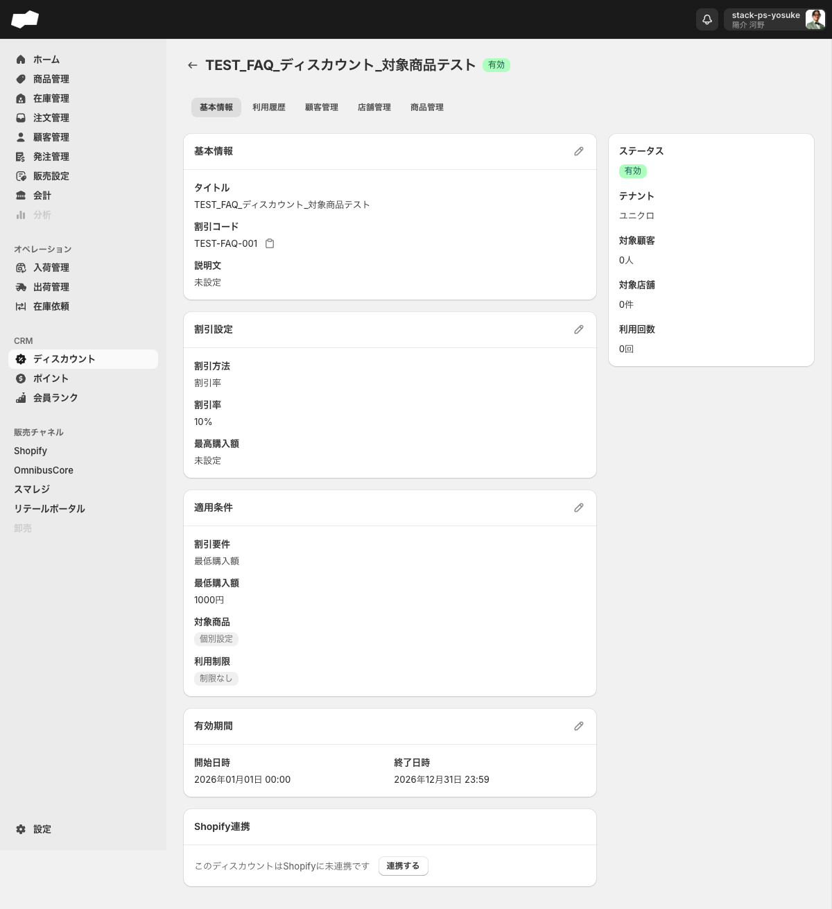
| タブ名 | URL | 内容 |
|---|---|---|
| 基本情報 | /admin/order_price_adjustment_rules/{id} | ルールの設定内容表示・編集 |
| 利用履歴 | /admin/order_price_adjustment_rules/{id}/usages | 利用された注文の履歴。「CSVエクスポート」リンクあり |
| 顧客管理 | /admin/order_price_adjustment_rules/{id}/customers | 対象顧客の追加・管理 |
| 店舗管理 | /admin/order_price_adjustment_rules/{id}/locations | 対象店舗の追加・管理 |
| 商品管理 | /admin/order_price_adjustment_rules/{id}/product_variants | 対象商品バリエーションの追加・管理 |
2026-06-19の実機確認では、全商品対象の既存ルールは基本情報タブの「対象商品」に「すべての商品」と表示され、個別設定の既存ルールは「個別設定」と表示されました。
割引率に150を入力して保存を試した場合、作成フォームから遷移せず、一覧にも作成されませんでした。画面上のエラーメッセージは表示されません。
「顧客管理」タブ
- メールアドレス検索欄と「追加する」ボタンがあります。
- 顧客データが存在しない状態では、「追加する」を押しても追加ダイアログは表示されません。
- 会社担当者のメールアドレスでは検索結果に出ません。会社担当者と顧客管理の顧客は別データです。
- 直接
/admin/purchasing_customers/createへアクセスしても顧客作成はできず、「予期せぬエラーが発生しました」画面になります。
「店舗管理」タブ
- 「追加する」から「ロケーションを追加する」「ロケーショングループを追加する」を選べます。
- ロケーション追加では「適用種別」と「ロケーション」を選びます。適用種別は「値引き」のみ選択可能で、「金種」はdisabledです。
- 対象店舗を選択すると「適用種別を変更する」と「削除する」が表示されます。
- 「適用種別を変更する」でも「値引き」のみ選択可能です。
- 「削除する」の確認ダイアログは「店舗を削除する」です。
- ロケーショングループ追加メニューも表示されますが、今回の実測ではロケーション単体の追加・適用種別変更・削除まで確認しています。
「基本情報」タブの表示項目
「基本情報」タブ内の各セクションは、鉛筆アイコンで個別に編集できる。
| セクション | 主な表示項目 |
|---|---|
| 基本情報 | タイトル / 割引コード（コピーアイコン付き） / 説明文 |
| 割引設定 | 割引方法 / 割引率または割引額 / 最高購入額 |
| 適用条件 | 割引要件 / 最低購入額 / 対象商品 / 利用制限 |
| 有効期間 | 開始日時 / 終了日時 |
| Shopify連携 | Shopifyとの連携状態を表示・操作するセクション |
右サイドバーにはステータス・テナント・対象顧客数・対象店舗数・利用回数が表示される。
「Shopify連携」セクションの詳細
Shopify連携セクションは「基本情報」タブに表示されます。
- Shopifyに未連携の場合: 「このディスカウントはShopifyに未連携です」と表示される
- 「連携する」ボタンをクリックするとShopify連携を実行できる
補足・注意点
- すべてのディスカウントにクーポンコードの入力が必須。コードなしの「自動適用」タイプは存在しない
- 作成フォームでのラベルは「クーポンコード」だが、詳細ページでは「割引コード」と表記が変わる
- クーポンコードとテナントは作成後に変更できない（詳細ページの編集ダイアログに項目が表示されない）
- 割引率の有効範囲は1〜100。範囲外の値を入力して保存しようとしても画面上にエラーメッセージは表示されず、保存が失敗する
- 割引率・最低購入額の入力欄にはプレースホルダ（参考値）が表示されているが、保存時に実際の値入力が必要
- 「すべての商品を割引対象に設定する」をOFFで保存した場合は「商品管理」タブで対象商品を個別設定する
- 「すべての商品を割引対象に設定する」をONで保存した場合、基本情報タブの適用条件 > 対象商品は「成功 / すべての商品」と表示される
- 顧客管理タブの「顧客セグメントを選択して追加」は現在利用不可（選択不可の状態）
- 店舗管理タブでロケーションを追加する際、適用種別として「値引き」のみ選択できる（「金種」は選択不可の状態）
関連
- 作業手順: ディスカウントを作成する
ポイント（注文ポイント） ⚠ 要確認
ポイント（注文ポイント）
対象画面: 注文ポイント / /admin/point_calculation_rules | 最終確認: 2026-06-19
この機能でできること
- 注文ポイントの付与ルールを作成・管理する（購入金額○円ごとに○ポイント）
- ポイントの有効日数を設定する
- オンライン注文と店舗注文でポイントが付与されるまでの遅延日数を個別に設定する
- 会員ランク算出ルールをポイント付与ルールに紐付ける
- ポイントキャンペーンの競合時の優先順位（新しい開始日時 / 古い開始日時）を設定する
- キャンペーン・誕生日ポイント・利用外商品・失効通知を子メニューから個別に管理する
画面・項目の説明
一覧画面（/admin/point_calculation_rules）
- 画面の見出し（h1）は「注文ポイント」。ナビゲーションのラベル「ポイント」とは異なる
- タブは「すべて」のみ
- 「付与ルールを作成する」ボタンから作成フォームへ遷移する
注文ポイント付与ルール作成フォーム（/admin/point_calculation_rules/create）
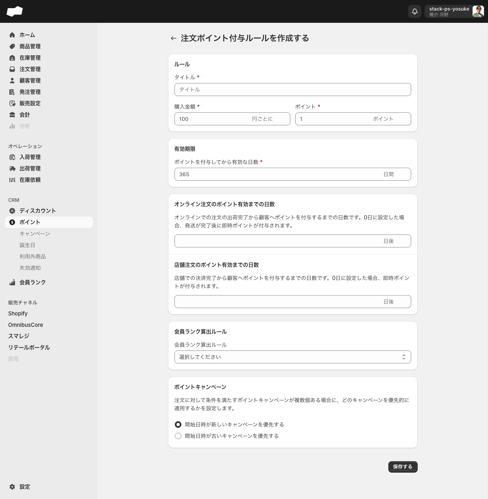
ルール
| 項目（UIラベル） | 説明 | 必須 | 制約・選択肢 |
|---|---|---|---|
| タイトル | ルールの管理名 | 必須（★） | テキスト |
| 購入金額（円ごとに） | ポイントを付与する購入金額の単位 | 必須（★） | 数値。入力例（プレースホルダ）: 100。例: 100と入力した場合「100円ごとに」という単位になる |
| ポイント | 上記金額単位あたりの付与ポイント数 | 必須（★） | 数値。入力例（プレースホルダ）: 1。例: 「100円ごとに1ポイント付与」 |
有効期限
| 項目（UIラベル） | 説明 | 必須 | 制約・選択肢 |
|---|---|---|---|
| ポイントを付与してから有効な日数 | 付与されたポイントが有効な日数 | 必須（★） | 数値（日間）。入力例（プレースホルダ）: 365 |
オンライン注文のポイント有効までの日数
| 項目（UIラベル） | 説明 | 必須 | 制約・選択肢 |
|---|---|---|---|
| オンライン注文のポイント有効までの日数 | オンライン注文の出荷完了から顧客へポイントが付与されるまでの日数 | 必須（★） | 数値（日後）。空欄で保存すると「値を入力してください」エラーが表示される。ヘルプ文（原文）: 「オンラインでの注文の出荷完了から顧客へポイントを付与するまでの日数です。0日に設定した場合、発送が完了後に即時ポイントが付与されます。」 |
店舗注文のポイント有効までの日数
| 項目（UIラベル） | 説明 | 必須 | 制約・選択肢 |
|---|---|---|---|
| 店舗注文のポイント有効までの日数 | 店舗での決済完了から顧客へポイントが付与されるまでの日数 | 必須（★） | 数値（日後）。空欄で保存すると「値を入力してください」エラーが表示される。ヘルプ文（原文）: 「店舗での決済完了から顧客へポイントを付与するまでの日数です。0日に設定した場合、即時ポイントが付与されます。」 |
会員ランク算出ルール
| 項目（UIラベル） | 説明 | 必須 | 制約・選択肢 |
|---|---|---|---|
| 会員ランク算出ルール | このポイント付与ルールに紐付ける会員ランク算出ルール | 任意 | コンボボックス。プレースホルダ: 「選択してください」 |
ポイントキャンペーン
複数のポイントキャンペーンが同一注文に適用できる条件を満たす場合に、どちらを優先するかを設定する。
| 選択肢（UIラベル） | 説明 |
|---|---|
| 開始日時が新しいキャンペーンを優先する | より新しく設定されたキャンペーンを優先（デフォルト） |
| 開始日時が古いキャンペーンを優先する | より古く設定されたキャンペーンを優先 |
ヘルプ文（原文）: 「注文に対して条件を満たすポイントキャンペーンが複数個ある場合に、どのキャンペーンを優先的に適用するかを設定します。」
注文ポイント付与ルール詳細画面（保存後）
付与ルールを保存すると詳細画面が開きます。詳細画面には以下の情報とセクションが表示されます。
| セクション / 項目 | 内容 |
|---|---|
| 利用テナント数 | このルールを使用しているテナントの数 |
| 付与率 | 設定した付与率（例: 100円ごとに1ポイント） |
| 有効日数 | 設定したポイント有効日数 |
| ポイント有効までの日数（オンライン） | オンライン注文での遅延日数 |
| ポイント有効までの日数（店舗） | 店舗注文での遅延日数 |
| 会員ランク算出ルール | 紐付けた会員ランク算出ルール |
| ポイントキャンペーン優先設定 | 設定したキャンペーン優先方式 |
会員ランク倍率セクション
詳細画面には「会員ランク倍率」タブがあります。2026-06-19の実機確認では、注文ポイント付与ルールを新規作成し、詳細画面で 基本設定 / 会員ランク倍率 / 商品倍率 の3タブを確認しました。
会員ランク倍率タブには「追加する」ボタンが表示されます。ただし、今回の確認では「追加する」を押してもフォーム遷移・モーダル表示は確認できませんでした。そのため、追加フォームの項目名や保存後の挙動はFAQでは断定しません。
商品倍率セクション
詳細画面には「商品倍率」タブがあります。商品倍率タブにも「追加する」ボタンが表示されます。
ただし、2026-06-19の実機確認では「追加する」を押してもフォーム遷移・モーダル表示は確認できませんでした。商品倍率の追加フォーム項目や保存後の挙動は、追加確認またはStack社確認事項として扱います。
ポイントの子メニュー
「ポイント」メニューを展開すると、以下の子メニューが表示される。
| 子メニュー名 | URL | 概要 |
|---|---|---|
| キャンペーン | /admin/point_campaign_order_rules | ポイントを増倍・追加付与するキャンペーンを管理する |
| 誕生日 | /admin/point_calculation_birthday_rules | 顧客の誕生日に付与するポイントルールを管理する |
| 利用外商品 | /admin/point_application_excluded_products | ポイント利用の対象外にする商品を登録・管理する |
| 失効通知 | /admin/point_expiration_notification_rule | ポイント失効前に顧客へ通知するルールを管理する |
キャンペーン（/admin/point_campaign_order_rules）
ポイントキャンペーン作成フォームの共通項目
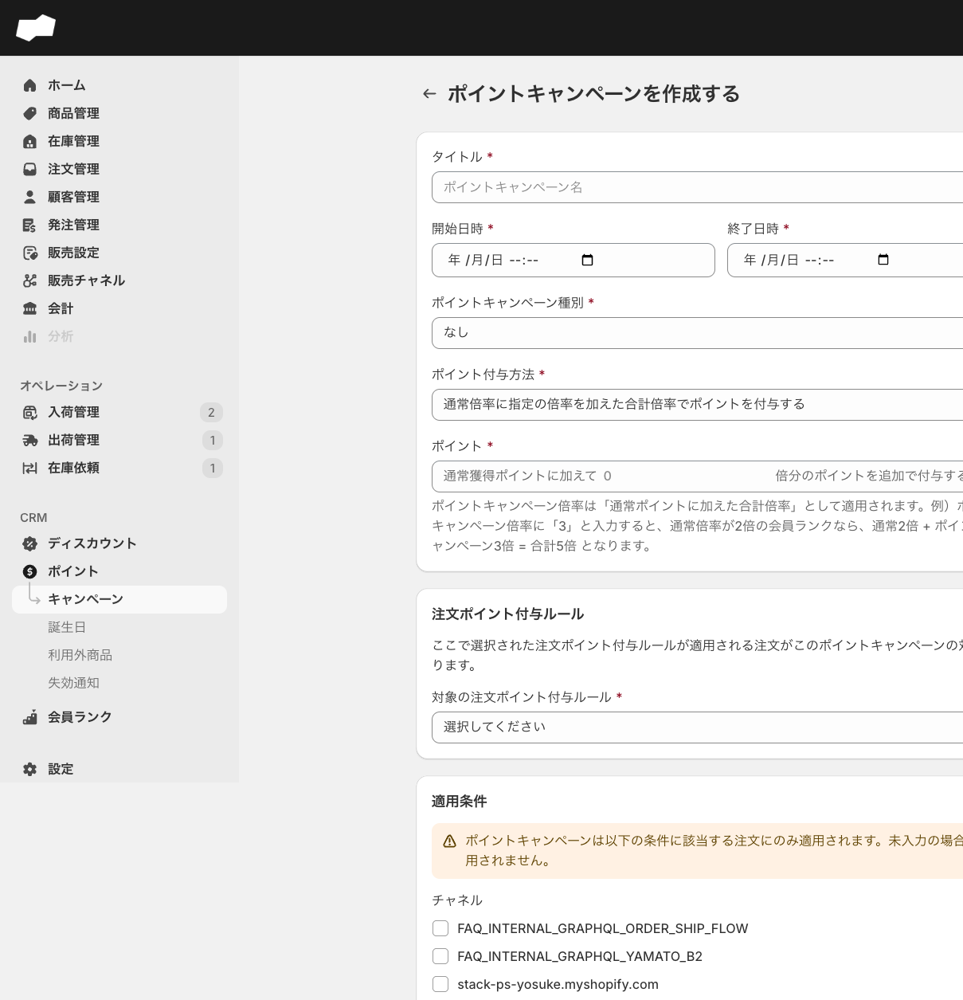
| 項目（UIラベル） | 説明 | 必須 | 制約・選択肢 |
|---|---|---|---|
| タイトル | キャンペーンの管理名 | 必須（★） | テキスト。プレースホルダ: 「ポイントキャンペーン名」 |
| 開始日時 | キャンペーンの開始日時 | 必須（★） | 日時テキストボックス |
| 終了日時 | キャンペーンの終了日時 | 必須（★） | 日時テキストボックス |
| ポイントキャンペーン種別 | キャンペーンの対象タイプ | 必須（★） | コンボボックス。選択肢: 「なし」/ 「会員ランク」/ 「購入金額」/ 「商品」 |
| ポイント付与方法 | ポイントの上乗せ方式 | 必須（★） | コンボボックス。選択肢: 「通常倍率に指定の倍率を加えた合計倍率でポイントを付与する」/ 「通常付与ポイントに加えて指定のポイントを追加で付与する」 |
| 対象の注文ポイント付与ルール | このキャンペーンを適用するポイント付与ルール | 必須（★） | コンボボックス（既存ルールを選択）。説明文: 「ここで選択された注文ポイント付与ルールが適用される注文がこのポイントキャンペーンの対象となります。」 |
| チャネル | 適用するチャネル | 任意 | リスト形式。注意文: 「ポイントキャンペーンは以下の条件に該当する注文にのみ適用されます。未入力の場合は適用されません。」 |
| 対象店舗 | 適用する店舗 | 任意 | 保存後の詳細画面で設定。店舗単位または店舗グループ単位で追加できる |
保存後の詳細画面には「対象店舗」セクションが表示されます。対象店舗が未登録の場合は「キャンペーンの対象となる店舗が登録されていません」と表示され、「店舗を追加する」から追加できます。「対象店舗を追加する」画面には選択方法として「店舗を選択して追加する」と「店舗グループを選択して追加する」があります。店舗グループを選ぶと、保存後の「キャンペーン対象店舗」一覧にはグループ名ではなく、グループに含まれる店舗が「店舗名」「店舗コード」の行として展開されます。行を選択すると「対象店舗を削除」ボタンが表示され、確認ダイアログ「対象店舗を削除しますか？」から削除できます。
ポイントキャンペーン種別による動作の違い
| 種別 | 概要 |
|---|---|
| なし | すべての注文が対象。倍率または追加ポイントを入力欄に指定する |
| 会員ランク | 会員ランクごとに異なるポイントを設定できる。キャンペーン保存後、詳細ページの「会員ランク」セクションからランク別に設定する |
| 購入金額 | 購入金額ごとに倍率またはポイントを設定する。保存後、詳細ページの「購入金額を追加する」から金額条件を追加する |
| 商品 | 商品/ブランド/CSVインポートで対象商品を設定する。作成フォーム上に商品・ブランド・カタログ条件は直接出ず、保存後の詳細ページの「商品を追加する」メニューから操作する |
種別ごとの保存後設定
| 種別 | 保存後の追加導線 | 追加フォーム | 削除操作 |
|---|---|---|---|
| 会員ランク | 「会員ランクを追加する」 | 会員ランク算出ルール、会員ランク、ポイント倍率 | 行選択 > 「会員ランクを削除」。確認「会員ランクを削除しますか？」 |
| 購入金額 | 「購入金額を追加する」 | 購入金額（円）、ポイント倍率 | 行選択 > 「購入金額を削除」。確認「購入金額を削除しますか？」 |
| 商品 | 「商品を追加する」メニュー | 「商品を選択して追加する」は商品バリエーションとポイント倍率。ブランド指定はブランドとポイント倍率。CSV導線もあり | 行選択 > 「商品を削除」。確認「商品を削除しますか？」 |
商品種別の「商品を追加する」はポップオーバーメニューです。メニューには「商品を選択して追加する」「ブランドを指定して追加する」「CSVでインポートする」が表示されます。
倍率の計算例（アプリ画面の説明文原文）
ポイントキャンペーン倍率は「通常ポイントに加えた合計倍率」として適用されます。 例）ポイントキャンペーン倍率に「3」と入力すると、通常倍率が2倍の会員ランクなら、通常2倍 + ポイントキャンペーン3倍 = 合計5倍 となります。
キャンペーン作成後に変更できない項目
- ポイント付与方法（編集フォームに項目が表示されない）
- 対象の注文ポイント付与ルール（編集フォームに項目が表示されない）
誕生日ポイント（/admin/point_calculation_birthday_rules）
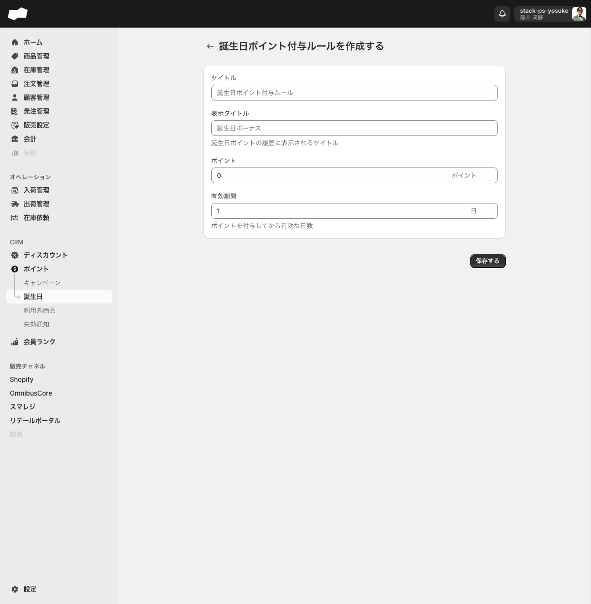
| 項目（UIラベル） | 説明 | 制約・選択肢 |
|---|---|---|
| タイトル | ルールの管理名 | テキスト。プレースホルダ: 「誕生日ポイント付与ルール」 |
| 表示タイトル | 顧客のポイント履歴に表示されるタイトル | テキスト。プレースホルダ: 「誕生日ボーナス」 |
| ポイント | 付与するポイント数 | 数値（スピンボタン）。デフォルト: 0 |
| 有効期間 | ポイントを付与してから有効な日数 | 数値（スピンボタン）。デフォルト: 1 |
利用外商品（/admin/point_application_excluded_products）
ポイント利用の対象外にしたい商品を登録する。「追加する」ボタンから1件ずつ商品を選択して登録する。
商品選択ダイアログの列は「商品」「商品コード」。SKU/バリエーション列ではなく、商品コード単位で選択する画面。
ポイント付与の対象外にしたい場合は、この画面ではなく、注文ポイント付与ルール詳細の「商品倍率」で対象商品の倍率を0倍に設定する。
失効通知（/admin/point_expiration_notification_rule）
ポイントが失効する何日前に顧客へ通知するかを設定する。
| 項目（UIラベル） | 説明 | 制約・選択肢 |
|---|---|---|
| タイトル | ルールの管理名 | テキスト。プレースホルダ: 「ポイント失効通知」 |
| 通知予定日 | 失効日の何日前に通知するか | 数値（スピンボタン）。ラベル形式: 「失効日の [n] 日前」 |
補足・注意点
- 注文ポイント付与ルール作成時、「オンライン注文のポイント有効までの日数」「店舗注文のポイント有効までの日数」はいずれも必須。0を入力すると即時付与になる
- ポイント付与ルールと会員ランク算出ルールの紐付けは任意。紐付けを行うと当該ポイントルールが適用される顧客を指定の会員ランク算出ルールで管理できる
- 会員ランクごとに異なるポイントキャンペーン倍率を設定したい場合は、キャンペーン種別「会員ランク」を使い、保存後の詳細ページから設定する
- 購入金額・ポイント数の入力欄に表示されている数値（100・1など）はプレースホルダ（参考値）であり、保存時に実際の値入力が必要
- 付与ルール詳細には「会員ランク倍率」「商品倍率」タブと「追加する」ボタンがある。ただし2026-06-19の再確認では、追加フォーム表示までは確認できていないため、フォーム項目や保存後挙動は断定しない
- ポイントキャンペーンの付与方法で「通常付与ポイントに加えて指定のポイントを追加で付与する」を選ぶと、種別「なし」では固定ポイント数の入力欄に切り替わる
関連
- 作業手順: 注文ポイント付与ルールを作成する
- 機能別: 会員ランク
リテールポータル連携 ⚠ 要確認
リテールポータル連携
対象画面: リテールポータル連携 / /admin/retail_portal_integrations | 最終確認: 2026-06-12
この機能でできること
- 店舗スタッフが利用するリテールポータル画面とSQを接続する
- 接続は1件 = 1店舗ロケーションの単位で管理する
- リテールポータル経由での注文操作（送料・価格・完了など）の許可・禁止を設定する
- 接続後の詳細画面から管理者ユーザーをリテールポータル連携に追加できる
- 関連機能として「店舗受取」のロケーションルールを設定できる
画面・項目の説明
接続前の画面（空状態）
リテールポータル連携が未設定の場合、「追加する」ボタンと「場所コードを入力してください」フィルター欄が表示されます。「追加する」ボタンから作成フォーム（/admin/retail_portal_integrations/create）に進みます。
作成フォーム（/admin/retail_portal_integrations/create）
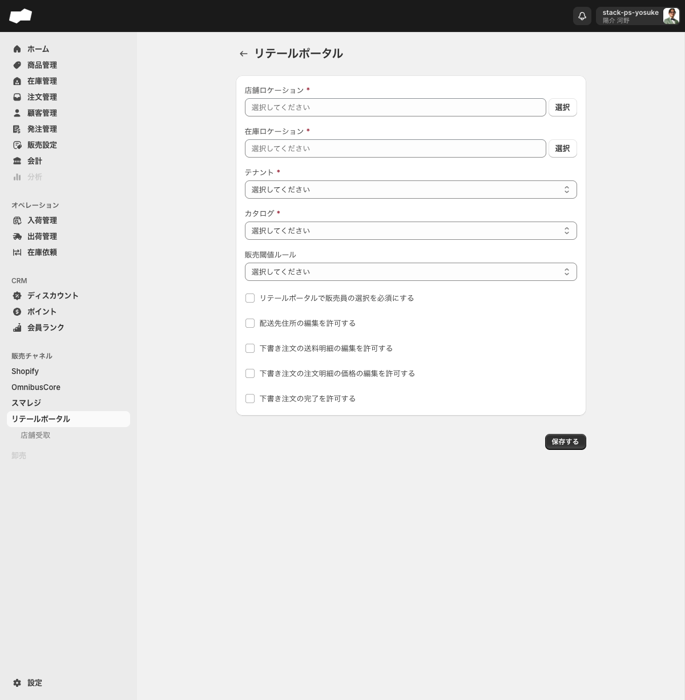
| 項目（UIラベル） | 説明 | 必須 | 制約・選択肢 |
|---|---|---|---|
| 店舗ロケーション | 連携する店舗のロケーション | 必須 | 「選択」ボタンからダイアログで選択。店舗種別のロケーションのみ表示 |
| 在庫ロケーション | 在庫の引当元となるロケーション | 必須 | 「選択」ボタンからダイアログで選択。倉庫種別のロケーションのみ表示 |
| テナント | 連携するSQ内テナント | 必須 | コンボボックス（SQ内マスタから選択） |
| カタログ | 連携する商品カタログ | 必須 | コンボボックス（SQ内マスタから選択） |
| 販売閾値ルール | 販売可否を判断する在庫閾値ルール | 任意 | コンボボックス（SQ内マスタから選択） |
| リテールポータルで販売員の選択を必須にする | 注文時に販売員の選択を必須とするかどうか | 任意 | チェックボックス（デフォルト: オフ） |
| 配送先住所の編集を許可する | 店舗スタッフが配送先住所を編集できるかどうか | 任意 | チェックボックス（デフォルト: オフ） |
| 下書き注文の送料明細の編集を許可する | 店舗スタッフが下書き注文の送料明細を編集できるかどうか | 任意 | チェックボックス（デフォルト: オフ） |
| 下書き注文の注文明細の価格の編集を許可する | 店舗スタッフが下書き注文の注文明細の価格を編集できるかどうか | 任意 | チェックボックス（デフォルト: オフ） |
| 下書き注文の完了を許可する | 店舗スタッフが下書き注文を完了できるかどうか | 任意 | チェックボックス（デフォルト: オフ） |
送信ボタン: 「保存する」
ロケーション選択ダイアログの仕様
「店舗ロケーション」または「在庫ロケーション」の「選択」ボタンを押すと、「ロケーションを選択する」ダイアログが開きます。
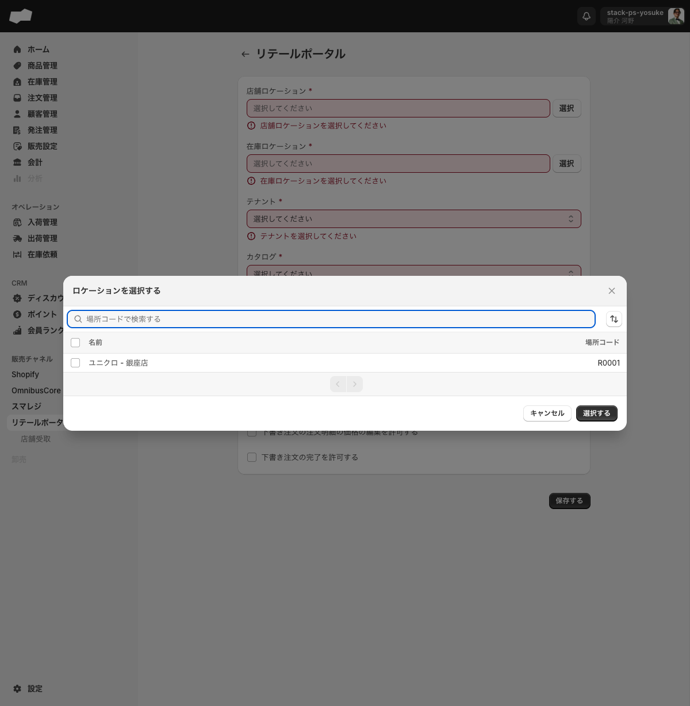
| 要素 | 内容 |
|---|---|
| ダイアログタイトル | 「ロケーションを選択する」 |
| 表示列 | 「名前」「場所コード」 |
| 検索フィールド | 「場所コードで検索する」 |
| 操作ボタン | 「キャンセル」「選択する」 |
ダイアログはロケーションの種別でフィルタリングされています。
- 「店舗ロケーション」の選択ダイアログ: 店舗種別のロケーションのみ表示
- 「在庫ロケーション」の選択ダイアログ: 倉庫種別のロケーションのみ表示
バリデーション
| 条件 | エラー文言 |
|---|---|
| 店舗ロケーション未選択 | 「店舗ロケーションを選択してください」 |
| 在庫ロケーション未選択 | 「在庫ロケーションを選択してください」 |
| テナント未選択 | 「テナントを選択してください」 |
| カタログ未選択 | 「カタログを選択してください」 |
保存後の詳細画面
「保存する」をクリックすると、詳細画面へ遷移します。
- 詳細画面の見出し（h1）は選択した店舗ロケーション名が表示されます。
- 画面には以下のボタンが表示されます。
| ボタン（UIラベル） | 操作 |
|---|---|
| 編集する | 連携設定を編集するフォームへ遷移する |
| ユーザーを追加する | 管理者ユーザーをこのリテールポータル連携に追加するダイアログを開く |
「ユーザーを追加する」ダイアログ
「ユーザーを追加する」ボタンをクリックすると「ユーザーを選択する」ダイアログが開きます。
- メールアドレスで検索して管理者ユーザーを絞り込み、追加するユーザーを選択できます。
店舗受取（/admin/local_pickup_retail_location_rules）
リテールポータルのサブメニューとして「店舗受取」画面があります。
一覧画面
空状態では「追加する」ボタンのみ表示されます。
作成フォーム（/admin/local_pickup_retail_location_rules/create）
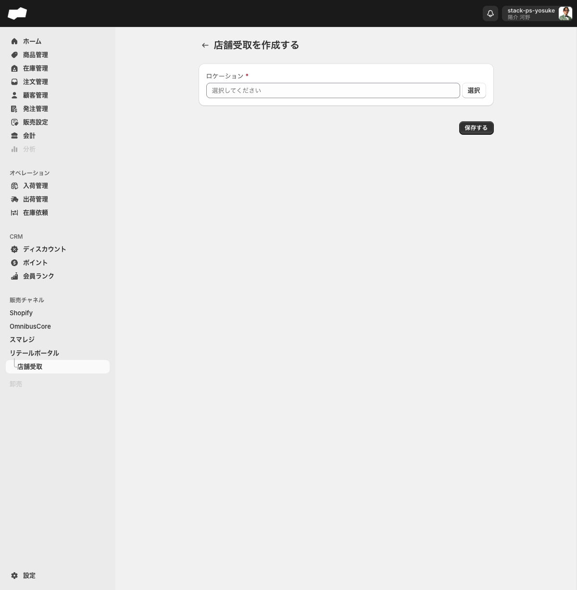
| 項目（UIラベル） | 説明 | 必須 | 制約・選択肢 |
|---|---|---|---|
| ロケーション | 店舗受取を設定するロケーション | 必須 | 「選択」ボタンからダイアログで選択。店舗種別のロケーションのみ表示（リテールポータル作成フォームの「店舗ロケーション」ダイアログと同一構造） |
店舗スタッフ側でできること（取り寄せ販売）
リテールポータルは、取り寄せ販売フローにおいて店舗スタッフが操作する画面でもあります。EC注文が入り、倉庫に実在庫が不足している場合、店舗スタッフはリテールポータルで次の操作を行います。
- 在庫リクエストの確認・確保登録 — SQから店舗に通知された在庫リクエストを確認し、在庫の「確保」登録を行う
- 移動伝票の一括作成 — 確保済みの在庫をまとめて移動伝票として発行する（ロケーションごとに分割生成される）
- 出荷登録 — 店舗から倉庫への出荷実績を登録する
この操作の全体像と前後の流れ: 取り寄せ販売（EC注文起点）の流れ
補足・注意点
- テナント・カタログはSQ内で事前に作成しておく必要があります。
- ロケーションの種別（店舗/倉庫）はロケーションマスタ（設定 > ロケーション）で管理されます。種別に応じて選択ダイアログに表示されるロケーションが変わります。
- 「場所コード」はロケーションに紐づく識別コードで、ロケーション設定画面の「基本情報を編集」ダイアログにある「コード」フィールドに管理者が手動で入力するものです。自動採番ではありません。
- 5つのチェックボックスはすべてデフォルトでオフです。店舗スタッフに許可する操作のみオンに設定してください。
- 各チェックボックスはリテールポータル経由の注文操作に関わる権限設定です。
関連
- 作業別: 販売チャネルを接続する（リテールポータルのセクションを参照）
- FAQ: 外部連携のよくある質問
会員ランク ⚠ 要確認
会員ランク
対象画面: 会員ランク / /admin/customer_rank_calculation_rules | 最終確認: 2026-06-16
この機能でできること
- 顧客の会員ランクを算出するルールを作成・管理する
- 算出期間（1年間・直近365日・無期限）と開始月を設定する
- ランクの段階（表示名と達成条件となる購入金額）をルールごとに定義する
- 会員ランクを毎月1日に再計算する月初算出を設定する
- 会員ランクを最大2年間維持する持ち越し設定を行う
- ランク算出から除外する商品を指定する
- 設定した会員ランク算出ルールをポイント付与ルールやポイントキャンペーンと連携させる
画面・項目の説明
一覧画面（/admin/customer_rank_calculation_rules）
- タブは「すべて」のみ
- 「会員ランク算出ルールを作成する」ボタンから作成フォームへ遷移する
会員ランク算出ルール作成フォーム（/admin/customer_rank_calculation_rules/create）
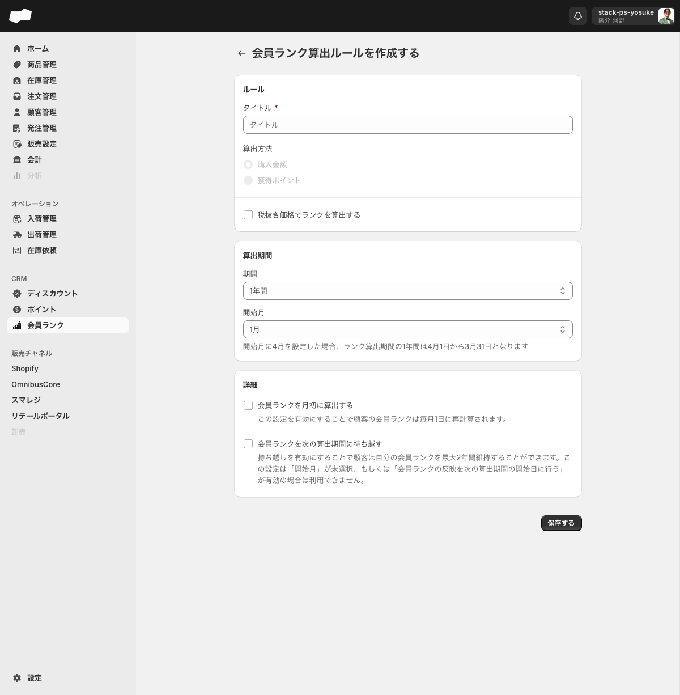
ルール
| 項目（UIラベル） | 説明 | 必須 | 制約・選択肢 |
|---|---|---|---|
| タイトル | ルールの管理名 | 必須（★） | テキスト |
| 算出方法 | ランクを算出する基準 | — | ラジオボタン。選択肢: 「購入金額」/ 「獲得ポイント」。現在どちらも変更できない状態（購入金額固定） |
| 税抜き価格でランクを算出する | 税抜き金額でランクを計算するかどうか | 任意 | チェックボックス。OFFの場合は税込み金額で計算する |
算出期間
| 項目（UIラベル） | 説明 | 必須 | 制約・選択肢 |
|---|---|---|---|
| 期間 | ランク算出に使う期間 | — | コンボボックス。選択肢: 「1年間」（デフォルト）/ 「直近365日」/ 「無期限」 |
| 開始月 | 1年間の算出期間の開始月 | 任意（期間=1年間 の場合に設定可） | コンボボックス。1月〜12月。ヘルプ文（原文）: 「開始月に4月を設定した場合、ランク算出期間の1年間は4月1日から3月31日となります」 |
「直近365日」または「無期限」を選ぶと、「開始月」と「会員ランクを次の算出期間に持ち越す」はフォームから非表示になります。
詳細
| 項目（UIラベル） | 説明 | 必須 | 制約・選択肢 |
|---|---|---|---|
| 会員ランクを月初に算出する | 毎月1日に会員ランクを再計算する | 任意 | チェックボックス。ヘルプ文（原文）: 「この設定を有効にすることで顧客の会員ランクは毎月1日に再計算されます。」 |
| 会員ランクを次の算出期間に持ち越す | 同じ会員ランクを最大2年間維持できるようにする | 任意 | チェックボックス。ヘルプ文（原文）: 「持ち越しを有効にすることで顧客は自分の会員ランクを最大2年間維持することができます。この設定は「開始月」が未選択、もしくは「会員ランクの反映を次の算出期間の開始日に行う」が有効の場合は利用できません。」 |
算出ルール詳細ページ（/admin/customer_rank_calculation_rules/{id}）
算出ルールを保存すると詳細ページに遷移する。詳細ページには以下の情報が表示される。
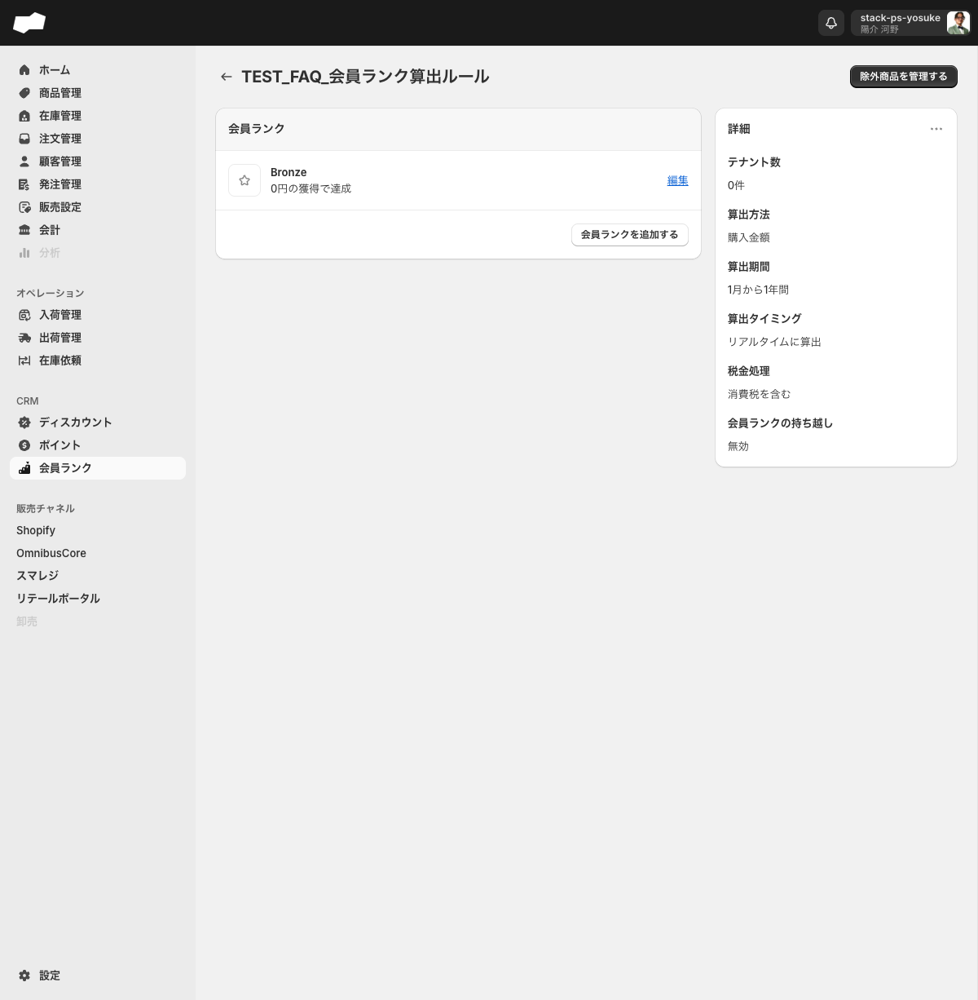
「詳細」セクションの表示項目
| 項目 | 説明 |
|---|---|
| テナント数 | 紐付いているテナント数 |
| 算出方法 | 購入金額（現在は固定） |
| 算出期間 | 例: 「1月から1年間」 |
| 算出タイミング | 「リアルタイムに算出」（設定項目なし） |
| 税金処理 | 「消費税を含む」（税抜きチェックがOFFの場合） |
| 会員ランクの持ち越し | 「無効」または「有効」 |
右上の操作ボタンをクリックするとドロップダウンが展開し、「ルールを編集」（/update へ遷移）と「ルールを削除」が表示される。
「会員ランク」セクション
詳細ページ内の「会員ランク」セクションでランクの段階を管理する。
- 「会員ランクを追加する」リンクから新しいランクを追加できる
- 算出ルール作成直後に「Bronze」ランク（0円以上で達成）が自動的に作成される
- 既存のランクは「編集」リンクから変更できる
「除外商品を管理する」リンク
詳細ページ内のリンクから除外商品の管理ページ（/exclude_products）へ遷移できる。
ランクの段階（会員ランク追加フォーム）
URL: /admin/customer_rank_calculation_rules/{id}/customer_rank_rules/create
ランクの段階を追加するフォーム。ページタイトル（h1）は「会員ランク算出ルールを作成する」と表示される（算出ルール本体の作成フォームと同じ文言になっているが、入力項目が異なる）。
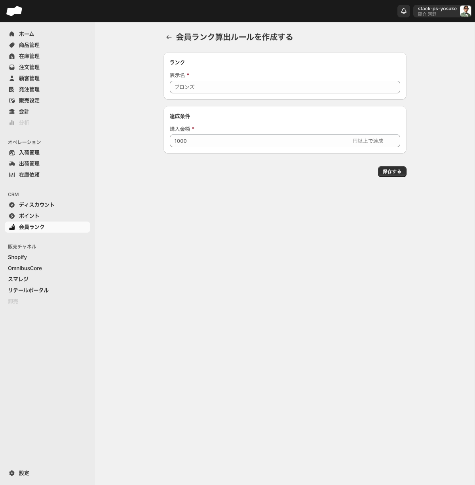
| 項目（UIラベル） | 説明 | 必須 | 制約・選択肢 |
|---|---|---|---|
| 表示名 | ランク名 | 必須（★） | テキスト。プレースホルダ: 「ブロンズ」 |
| 購入金額 | 達成に必要な購入金額 | 必須（★） | 数値。ラベル形式: 「[n] 円以上で達成」 |
初期ランク（Bronze）の制約
算出ルール作成時に自動生成される「Bronze」ランクには以下の制約がある。
| 制約 | 内容 |
|---|---|
| 表示名 | 変更可能 |
| 達成条件（購入金額） | 変更できない（入力欄が選択不可の状態）。注意文（原文）: 「このランクは初期値なので達成条件を変更することができません」 |
| 削除 | 削除できない（「削除する」ボタンが選択不可の状態） |
会員ランクの除外商品
URL: /admin/customer_rank_calculation_rules/{id}/exclude_products
ランク算出の対象から外す商品を登録する。「除外商品を追加する」リンクから商品を選択して登録する。
追加フォームは「除外商品を選択する」の1項目です。「選択」ボタンから商品選択ダイアログを開き、商品を選択して保存します。
- 商品未選択の状態では「保存する」は実質disabledになり、保存できません。
- 保存後は除外商品一覧へ戻り、商品名と作成日時が表示されます。
- 行を選択すると「除外商品から削除」が表示されます。
- 削除確認は「除外商品から削除しますか？」で、本文は「選択された1件の除外商品を削除しますか？この処理は巻き戻すことができません。」です。
補足・注意点
- 算出方法は現在「購入金額」固定。「獲得ポイント」ラジオボタンは選択できない状態になっている
- 「会員ランクを次の算出期間に持ち越す」は、「開始月」が未設定の場合または「会員ランクの反映を次の算出期間の開始日に行う」が有効の場合には使用できない
- ランクの段階（達成条件）は算出ルールの詳細ページ内で管理する。独立したURLは存在しない
- 初期ランク（Bronze）の達成条件（0円）と削除はどちらも変更・操作できない。表示名のみ変更可能
- ランク算出の詳細ページに表示される「算出タイミング: リアルタイムに算出」は作成・編集フォームに対応する設定項目がなく、システムの固定値と見られる
- 会員ランクとポイントの連携方法は2つある。(1) 注文ポイント付与ルール作成時に会員ランク算出ルールを紐付ける。(2) ポイントキャンペーン種別「会員ランク」を使い、キャンペーン詳細ページからランク別の倍率を設定する
関連
- 作業手順: 会員ランク算出ルールを作成する
- 機能別: ポイント（注文ポイント）
会社 ⚠ 要確認
会社
対象画面: 会社 / /admin/companies | 最終確認: 2026-06-15
この機能でできること
- 法人顧客（会社）の新規作成・一覧管理
- 会社ごとのロケーション（納品先住所）の管理
- 会社ごとの担当者（発注確認メールの送付先）の管理
- 会社ごとの注文履歴・売上の確認
会社一覧（/admin/companies）
タブ
| タブ名 | 表示対象 |
|---|---|
| すべて | 全会社 |
テーブル列
| 列名 | 内容 |
|---|---|
| （チェックボックス） | アイテムを選択する（一括選択用） |
| 会社 | 会社名 |
| ロケーション | 登録されているロケーション数（例：「1箇所のロケーション」） |
| 総注文数 | 注文件数（例：「0個の注文」） |
| 販売合計 | 累計金額（例：「¥0」） |
| 作成日 | 登録日時（例：「2026年06月06日 17:39」） |
行全体をクリックすると会社詳細画面へ遷移します。
主な操作
| 要素（UIラベル） | 種別 | 操作すると何が起こるか |
|---|---|---|
| インポート | ボタン | クリックしても現状何も起きない（機能未実装） |
| 会社を作成する | リンクボタン | /admin/companies/create（会社作成フォーム）へ遷移 |
| 前へ／次へ | ページネーションボタン | 前後ページへ移動 |
注意: 「インポート」ボタンはクリックしてもドロップダウン・モーダル・画面遷移のいずれも発生しません。現時点ではこの操作はできません。
注意: 会社一覧で行選択しても、会社本体を削除する通常操作は確認できていません。削除導線は表示・実行できない状態です。
会社作成フォーム（/admin/companies/create）
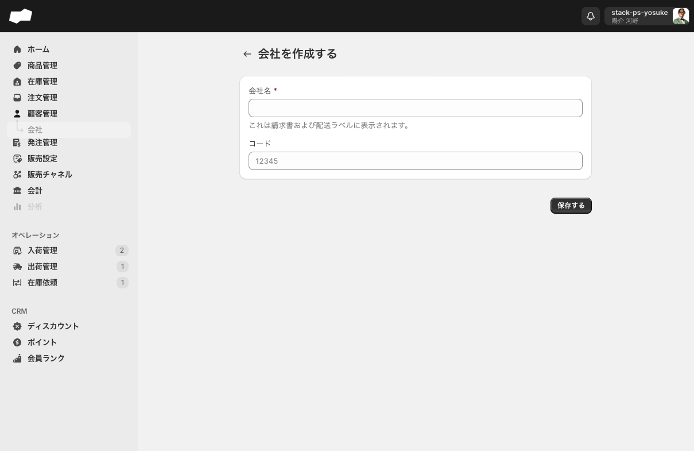
「会社を作成する」ボタンから遷移します。入力後「保存する」で会社が作成されます。
会社情報
| 項目（UIラベル） | 必須 | 補足 |
|---|---|---|
| 会社名 | 必須（*） | 請求書・配送ラベルに表示されます |
| 会社ID | 任意 | 外部IDがある場合に登録します |
| 担当者 | 任意 | 検索テキストボックスで顧客を紐付けます |
ロケーション（配送先）
会社を作成する際に、最初のロケーション（納品先）を同時に登録します。
| 項目（UIラベル） | 必須 | 補足 |
|---|---|---|
| ロケーション名 | 必須（*） | 例：「東京本社」 |
| ロケーションID | 任意 | 外部IDがある場合に登録します |
| コード | 任意 | プレースホルダー: 12345 |
配送先住所
| 項目（UIラベル） | 必須 | バリデーションエラー文言 |
|---|---|---|
| 国/地域 | 必須（*） | 国を選択してください |
| 性 | 必須（*） | 苗字を入力してください |
| 名 | 必須（*） | 名前を入力してください |
| 会社 | 任意 | — |
| 郵便番号 | 必須（*） | 郵便番号を入力してください |
| 都道府県 | 必須（*） | 都道府県を入力してください |
| 市区町村 | 必須（*） | 市区町村を入力してください |
| 住所 | 必須（*） | 住所を入力してください |
| 建物名、部屋番号など | 任意 | — |
| 電話番号 | 任意 | — |
請求先住所
「配送先住所と同じ」チェックボックスがあり、デフォルトでチェック済みです。チェックを外すと配送先住所と同一の項目が展開され、個別に入力できます。
会社詳細画面（/admin/companies/{id}）
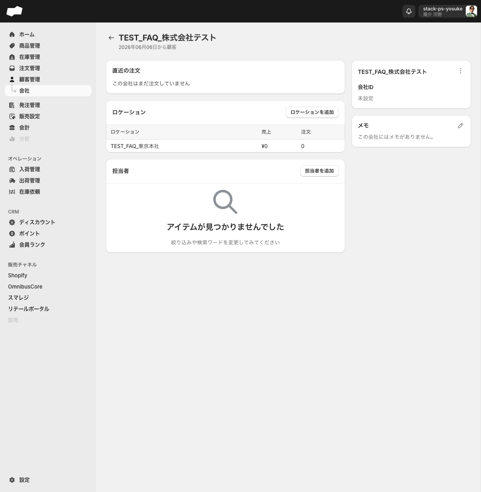
ページヘッダー
- 会社名が大見出しで表示されます
- 「2026年XX月XX日から顧客」（作成日）がサブテキストとして表示されます
左カラム（メインコンテンツ）
| セクション | 内容 |
|---|---|
| 直近の注文 | 注文一覧。注文がない場合は「この会社はまだ注文していません」と表示されます |
| ロケーション | 登録済みロケーションのテーブル（ロケーション名 / 売上 / 注文）。「ロケーションを追加」ボタンあり |
| 担当者 | 登録済み担当者のテーブル（名前 / メールアドレス）。「担当者を追加」ボタンあり |
右サイドバー
| セクション | 内容 |
|---|---|
| 会社名 | 会社名テキスト。編集ボタン（ペンアイコン）で変更できます |
| 会社ID | 外部ID。未設定の場合は「未設定」と表示されます |
| メモ | 会社に関するメモ。編集ボタンで変更できます |
ロケーション追加（/admin/companies/{id}/locations/create）
会社詳細の「ロケーションを追加」ボタンから遷移します。入力項目は会社作成フォームのロケーション・配送先住所セクションと同一です。
ロケーション情報
| 項目（UIラベル） | 必須 | 補足 |
|---|---|---|
| ロケーション名 | 必須（*） | 「注文のロケーションを特定するために使用します。例：ミッドタウン」 |
| ロケーションID | 任意 | 「会社のロケーションを識別する外部IDがある場合に登録することができます。」 |
| コード | 任意 | プレースホルダー: 12345 |
続いて「配送先住所」と「請求先住所」（デフォルトで配送先と同じ）を入力します。
担当者の追加
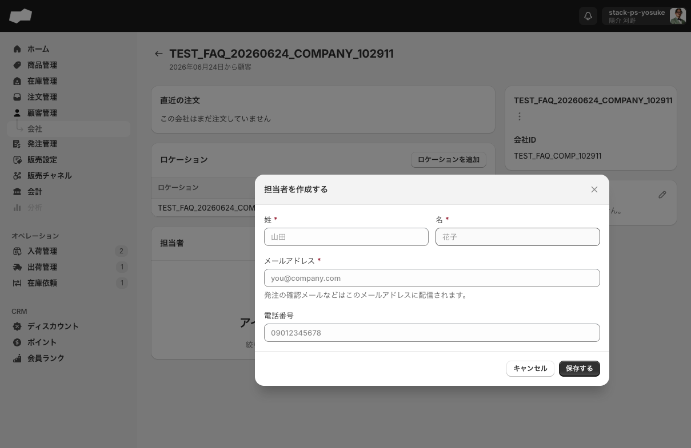
会社詳細の「担当者を追加」ボタンを押すと「担当者を作成する」ダイアログが開きます。
担当者を作成するダイアログの入力項目
| 項目（UIラベル） | 必須 | プレースホルダー |
|---|---|---|
| 姓 | 必須（*） | 山田 |
| 名 | 必須（*） | 花子 |
| メールアドレス | 必須（*） | you@company.com |
| 電話番号 | 任意 | 09012345678 |
「発注の確認メールなどはこのメールアドレスに配信されます。」
ダイアログのボタンは「キャンセル」と「保存する」です。
注意: 担当者は顧客管理（/admin/purchasing_customers）の顧客とは別のエンティティです。担当者を作成しても顧客管理の一覧には表示されません。
担当者詳細画面
担当者の行をクリックすると担当者詳細画面へ遷移します。現時点では担当者名・作成日時のみが表示されており、情報の編集や詳細確認はこの画面からはできません。
担当者の削除
担当者一覧で行を選択すると「担当者を削除」が表示されます。確認ダイアログは「担当者を削除する」で、本文は「選択されている1件の担当者を削除しますか？」です。削除後、対象の担当者行は一覧から消えます。
ロケーション詳細画面（/admin/companies/{id}/locations/{location_id}）
左カラム
| セクション | 内容 |
|---|---|
| 直近の注文 | 注文がない場合は「このロケーションからはまだ注文がありません」と表示されます |
右サイドバー
| セクション | 内容 |
|---|---|
| ロケーション名 | 編集ボタン（ペンアイコン）で変更できます |
| ロケーションID | 外部ID。未設定の場合は「未設定」 |
| コード | 未設定の場合は「未設定」 |
| 配送先住所 | 登録済みの住所を表示します |
| 請求先住所 | 配送先と同一の場合は同じ内容を表示します |
| メモ | 編集ボタンで変更できます |
ロケーションの削除
会社ロケーション詳細の三点メニューで確認できる操作は「ロケーションを編集」のみです。会社ロケーションを削除するUIは確認できていません。
補足・注意点
- 顧客管理（/admin/purchasing_customers）の顧客は販売チャネル経由で自動登録されますが、「会社」は管理画面から直接作成できます。
- 会社の「担当者」は発注確認メールの宛先であり、顧客管理の購入顧客とは別データです。
- 「インポート」ボタンは現時点では機能していません（未実装）。
- 「卸売」（/admin/b2b）は会社とは別機能で、現時点では未実装（「TODO」表示のみ）です。
関連
- 機能別: 顧客管理
会計（売上実績） ⚠ 要確認
会計（売上実績）
対象画面: 売上実績 / /admin/sale_change_line_items | 最終確認: 2026-06-16
この機能でできること
- 売上実績の一覧を確認する
- 売上実績をCSVでエクスポートする（「売上実績（注文軸）」「売上実績（明細軸）」）
画面・項目の説明
ナビゲーションと画面名の関係
| 場所 | 表示名 |
|---|---|
| サイドナビ | 会計 |
| サブメニュー | 売上実績 |
| 画面見出し（h1） | 売上実績 |
- サイドナビの「会計」とサブメニューの「売上実績」は同じ画面（
/admin/sale_change_line_items）に遷移します。 - 現在の「会計」機能は「売上実績」のみで構成されており、サブページは1つです。
売上実績 一覧画面
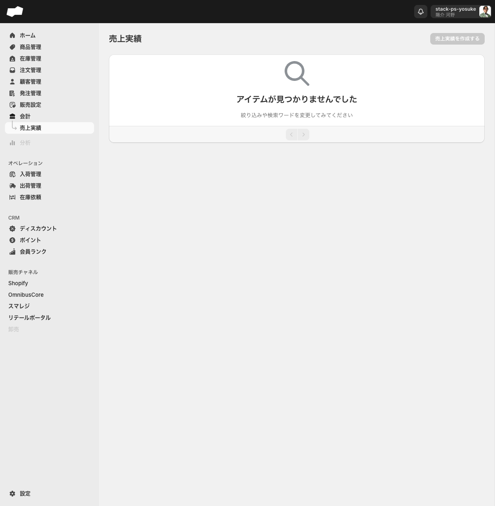
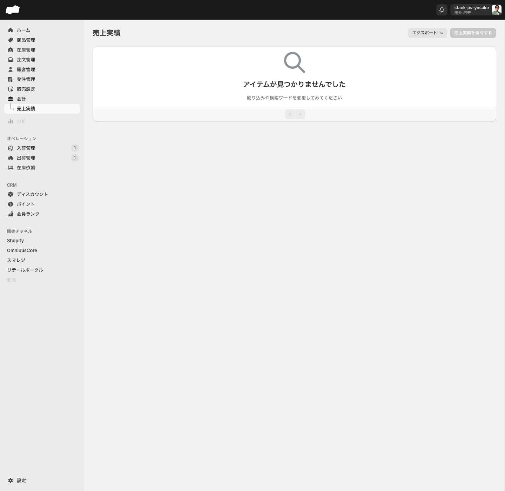
| 項目 | 内容 |
|---|---|
| タブ | なし |
| 空状態の文言 | 「アイテムが見つかりませんでした」「絞り込みや検索ワードを変更してみてください」 |
| テーブル列の構成 |
「売上実績を作成する」ボタン
- 画面上に「売上実績を作成する」リンクボタンが表示されますが、現在は DOM 上に
hrefがなく、クリックしても操作できません。 /admin/sale_change_line_items/createに直接アクセスすると「このページは存在しないようです」画面になります。- 手動での売上実績作成は現時点ではできません。
CSVエクスポート
- 売上実績一覧の「エクスポート」ボタンを押すと、「注文軸」「明細軸」のメニューが表示されます。
- 「注文軸」は
/admin/csv_export/csv_export_operation_sale_changes、「明細軸」は/admin/csv_export/csv_export_operation_sale_change_line_itemsに遷移します。 - CSVエクスポート画面（
/admin/csv_export）の「実績」グループに「売上実績（注文軸）」「売上実績（明細軸）」カテゴリがあります。 - リンク先: 注文軸
/admin/csv_export/csv_export_operation_sale_changes、明細軸/admin/csv_export/csv_export_operation_sale_change_line_items
補足・注意点
- 売上実績が注文データから自動的に集計される仕組みかどうかは、現環境（売上データ0件）では確認できていません。
- 「売上実績を作成する」リンクが注文データの有無によって有効になるかどうかは未確認です。
- 一覧画面のテーブル列構成は、売上データが存在する状態での確認が必要です。
関連
- 作業別: 売上実績をCSVエクスポートする
- 機能別: CSVエクスポート・PDFエクスポート
入荷管理 ✓ 確定
入荷管理
対象画面: 入荷管理 / /admin/inventory_inbound_orders | 最終確認: 2026-06-18
この機能でできること
- 入荷指示の一覧をステータス別タブで確認する
- 入荷指示の詳細から入荷実績を登録し、ステータスを入荷完了にする
- 移動伝票がキャンセルされた入荷指示を「キャンセル」タブで確認する
画面・項目の説明
ステータスタブ
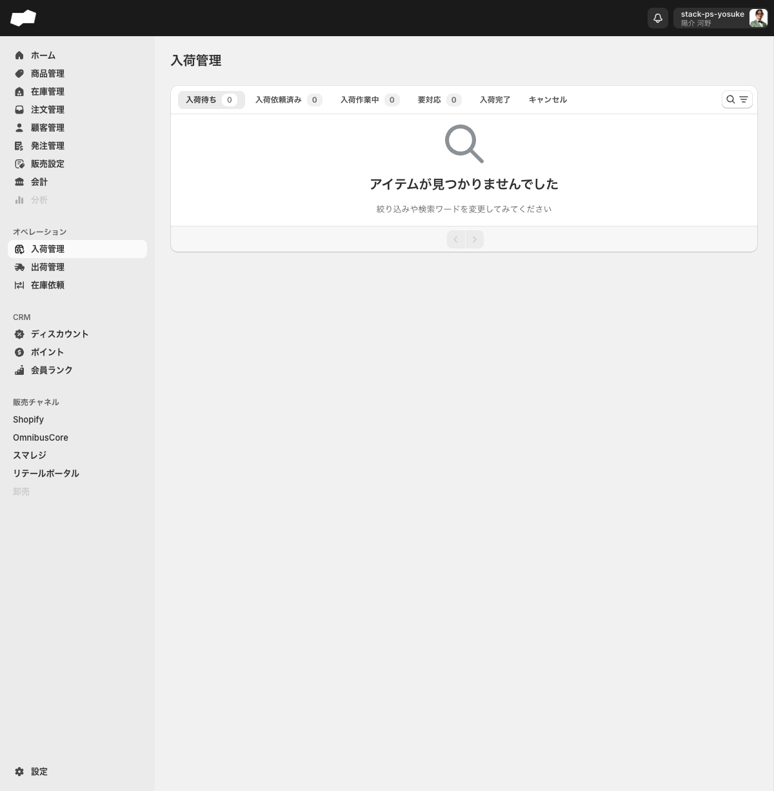
入荷指示はステータスによって 6 つのタブに分類されます。
| タブ名 | 説明 |
|---|---|
| 入荷待ち | 入荷作業を待っている入荷指示 |
| 入荷依頼済み | 入荷依頼を済ませた入荷指示 |
| 入荷作業中 | 入荷作業中の入荷指示 |
| 要対応 | 対応が必要な入荷指示 |
| 入荷完了 | 入荷実績が登録された入荷指示 |
| キャンセル | キャンセルされた入荷指示 |
一覧の「種別」列
入荷指示一覧には「種別」列があります。移動伝票から生成された入荷指示は「移動」と表示されます。詳細画面を開くと「在庫移動」と表示されます。
サイドバーの未完了バッジ
サイドナビの「入荷管理」横に未完了の入荷指示件数がバッジ表示されます。0 件のときはバッジが非表示になります。件数が 100 を超える場合は「100+」と表示されます。この仕様は出荷管理と同じです。
「入荷実績を登録する」ボタン（入荷指示詳細）
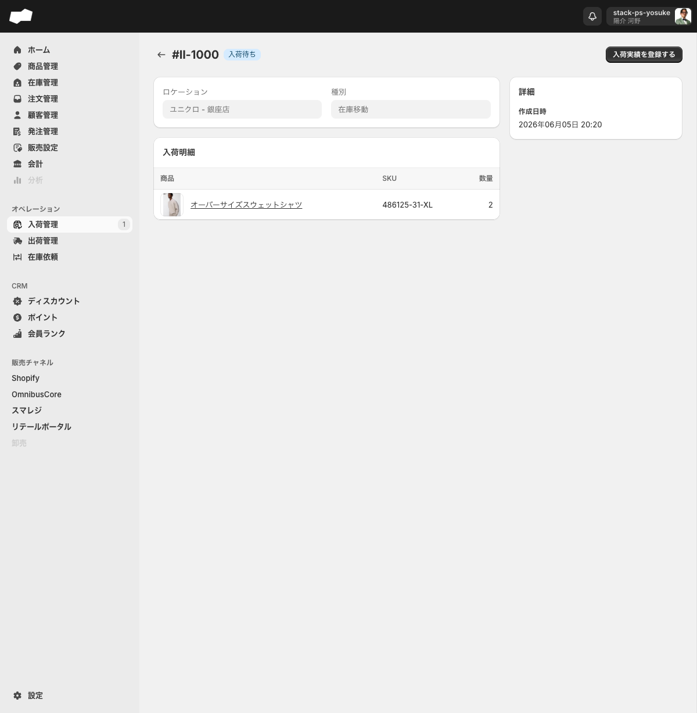
入荷指示の詳細画面右上に表示されます。実機では、入荷実績を登録するフォームへ遷移して数量を入力するパターンと、一括受領・完了更新の確認画面へ遷移するパターンを確認しています。
確認画面には「この処理は巻き戻すことができません。」という注意文が明記されています。「登録する」または完了系の実行ボタンを押すと入荷実績が記録されます。
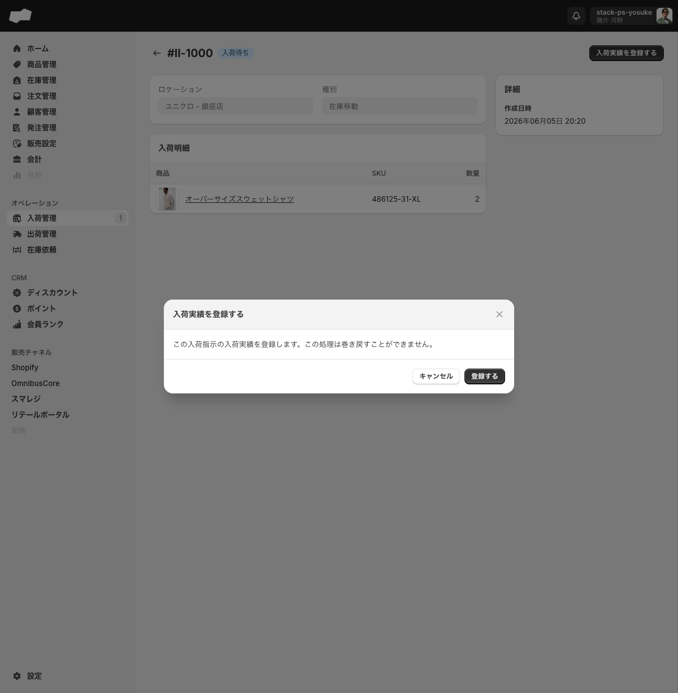
登録後の変化は次のとおりです。
- 予定数どおりに受領した場合、入荷指示のステータスが「入荷完了」になる
- 一部だけ受領した場合、入荷指示は「入荷待ち」のまま残る
- 予定数より多い数量も登録できる。過入荷でも自動完了せず、必要に応じて「完了に更新する」を実行する
- 紐づく移動伝票は、出荷指示と入荷指示の両方が完了した時点で完了になる
2026-06-18の実機確認では、次の挙動を確認しています。
| ケース | 確認結果 |
|---|---|
| 出荷前に入荷を完了 | 可能。入荷完了後も、出荷が未完了の間は親移動伝票は完了しない |
| 予定2に対して入荷1 | 可能。ステータスは入荷待ちのまま。「完了に更新する」で部分入荷のまま完了にできる |
| 予定1に対して入荷2 | 可能。過入荷でも保存できるが、自動完了はしない |
| 完了後の再登録 | 入荷実績登録ボタンはdisabledになり、再登録できない |
入荷完了後の「入荷実績を登録する」ボタン
入荷実績の登録が完了すると、詳細画面の「入荷実績を登録する」ボタンは無効化（クリックできない状態）になります。入荷完了後は、画面から実績の再登録・編集・削除を行うことはできません。
補足・注意点
- 入荷実績を登録するとステータスを巻き戻すことはできません。登録前に内容を確認してください。
- 入荷完了後は「入荷実績を登録する」ボタンが無効化され、画面からの再登録・編集・削除は行えません。
- 入荷管理画面から入荷指示を新規作成するボタンはありません。入荷指示は移動伝票の作成と同時に自動生成されます。
- 移動伝票をキャンセルすると、紐づく入荷指示は「キャンセル」タブに「入荷キャンセル」として残ります。
- 入荷と出荷の順序は固定ではありません。出荷前に入荷を完了できますが、移動伝票全体の完了には出荷と入荷の両方が必要です。
関連
- 作業別: 取り寄せ販売の処理手順（入荷実績の登録手順を含む）
- 機能別: 出荷管理
出荷管理 ✓ 確定
出荷管理
対象画面: 出荷管理 / /admin/inventory_outbound_orders | 最終確認: 2026-06-20
この機能でできること
- 出荷指示の一覧をステータス別タブで確認する
- 出荷指示の詳細から出荷実績（配送キャリア・追跡コード）を登録し、ステータスを出荷完了にする
- ヤマトB2クラウドまたは DHL の出荷実績 CSV をインポートして出荷実績を一括登録する
- 条件を指定してヤマトB2クラウド取り込み用 CSV を生成する
画面・項目の説明
ステータスタブ
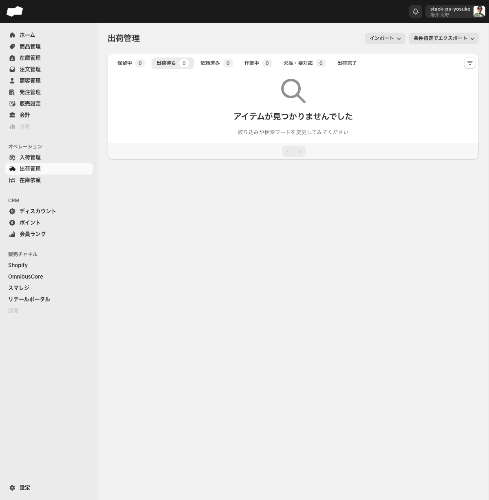
出荷指示はステータスによって 6 つのタブに分類されます。
| タブ名 | 説明 |
|---|---|
| 保留中 | 出荷作業を保留している出荷指示 |
| 出荷待ち | 出荷作業を待っている出荷指示 |
| 依頼済み | 出荷依頼を済ませた出荷指示 |
| 作業中 | 出荷作業中の出荷指示 |
| 欠品・要対応 | 欠品など対応が必要な出荷指示 |
| 出荷完了 | 出荷実績が登録された出荷指示 |
キャンセルタブは一覧に存在しません。移動伝票がキャンセルされた出荷指示は一覧タブには表示されません。ただし、移動伝票詳細などの関連リンクや直接URLからは、キャンセル済みの出荷指示詳細を開ける場合があります。条件指定エクスポートには出荷作業ステータス「キャンセル済み」の選択肢があります。
サイドバーの未完了バッジ
サイドナビの「出荷管理」横に未完了の出荷指示件数がバッジ表示されます。0 件のときはバッジが非表示になります。件数が 100 を超える場合は「100+」と表示されます。
「インポート」ボタン（ドロップダウン）
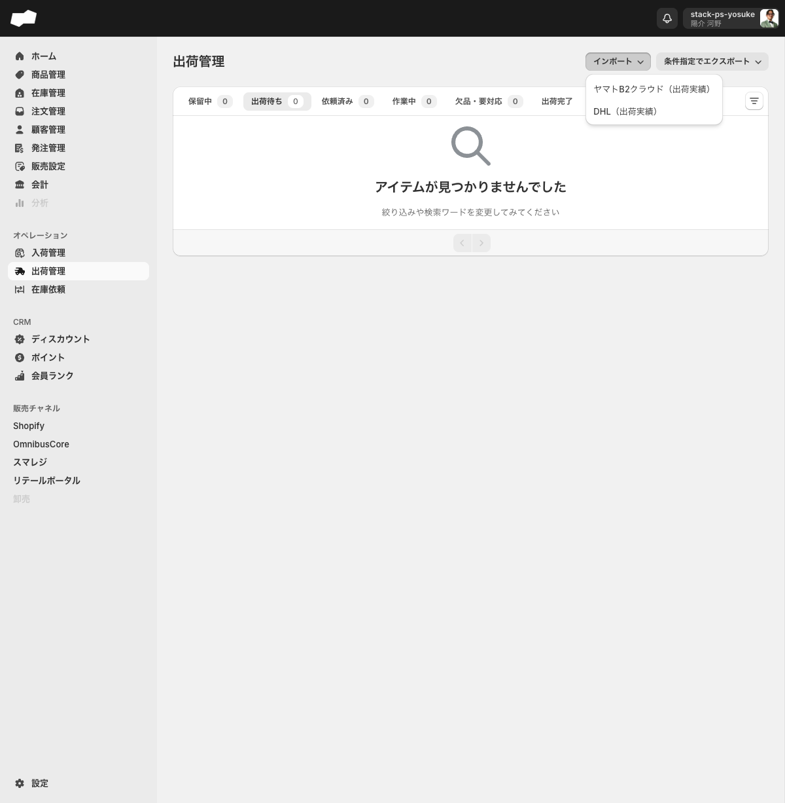
出荷実績 CSV をインポートします。クリックすると 2 種類の選択肢が表示されます。
| 選択肢 | 遷移先 |
|---|---|
| ヤマトB2クラウド（出荷実績） | ヤマトB2クラウドの出荷実績インポート画面 |
| DHL（出荷実績） | DHL の出荷実績インポート画面 |
いずれの画面でも「新規インポート」から CSV ファイルをアップロードして出荷実績を一括登録できます。アップロードするファイルはCSV ファイルのみです。
ヤマトB2クラウドの CSV フォーマットは全 10 列固定で、必須列は「伝票番号」「出荷日」「お客様管理番号」の 3 列のみです。列の詳細は画面内「テンプレート」のリンクから確認できます。
「条件指定でエクスポート」ボタン（ドロップダウン）
クリックすると「ヤマトB2クラウド」の選択肢のみ表示されます（DHL のエクスポートはありません）。選択するとエクスポートフォームに遷移します。
エクスポートフォームの項目
| 項目（UIラベル） | 必須 | 説明・選択肢 |
|---|---|---|
| 開始日時 | 必須（*） | 出荷指示の絞り込みを開始する日時 |
| 終了日時 | 必須（*） | 出荷指示の絞り込みを終了する日時（デフォルト: 現在日時） |
| 配送先 (国) | 任意 | 国を選択して絞り込む（マルチ選択可） |
| 決済方法 | 任意 | すべての決済 / 代引きのみ / 代引き以外の決済 |
| 出荷作業ステータス | 任意 | 指定しない / 出荷待ち / 保留中 / 依頼済み / 作業中 / 欠品・要対応 / キャンセル済み / 出荷完了 |
| 注文タグ（含む） | 任意 | 入力したタグを含む出荷指示のみが対象（例: priority） |
| 注文タグ（除外） | 任意 | 入力したタグを含まない出荷指示のみが対象（例: test） |
| CSVの出力後に出荷指示のステータスを出荷作業中に変更する | 任意 | チェックボックス（デフォルト: 未チェック） |
「実行する」ボタンを押すと非同期処理が開始されます。
- ヤマトB2クラウド取り込み用 CSV
納品書PDFについては、2026-06-16の実機確認ではPDFエクスポート画面・出荷完了済み出荷指示詳細のどちらにも新規生成導線を確認できませんでした。ヤマトB2クラウドCSVと納品書PDFが必ず同時生成されるとは案内しないでください。
「出荷実績を登録する」ボタン（出荷指示詳細）
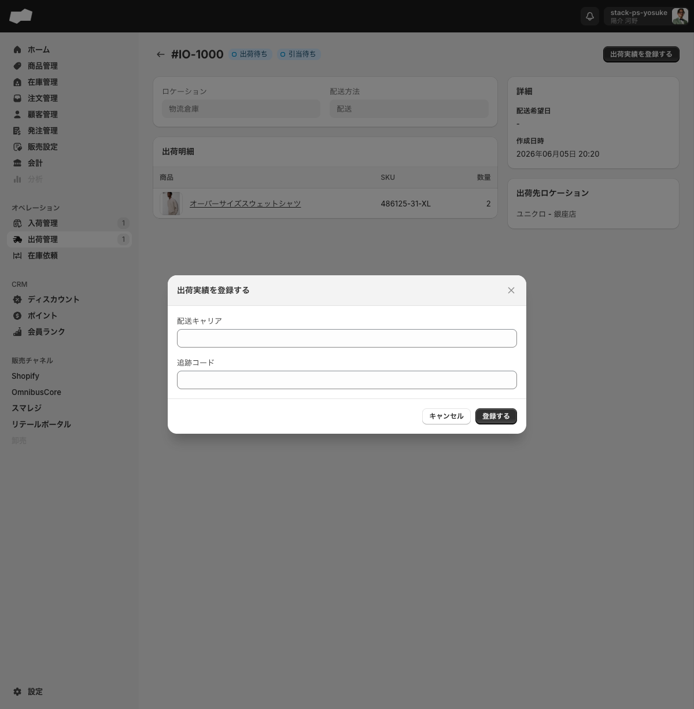
出荷指示の詳細画面右上に表示されます。クリックするとダイアログが開きます。
ダイアログの入力項目
| 項目（UIラベル） | 必須 | 説明 |
|---|---|---|
| 配送キャリア | 任意 | 配送業者名（空でも登録可） |
| 追跡コード | 任意 | 荷物追跡番号（空でも登録可） |
「登録する」を押すと出荷実績が記録され、ステータスが「出荷完了」に変わります。2026-06-16の実機確認では、配送キャリア・追跡コードを空欄のまま登録しても成功し、トースト「出荷を完了しました」が表示されました。
2026-06-18の実機確認では、配送元ロケーションの表示在庫が0のSKUでも出荷実績登録はブロックされず、出荷完了まで進みました。SQは在庫不足を出荷時に止めないため、実在庫を超える出荷登録をするとマイナス在庫になり得ます。
出荷完了後の「出荷実績を登録する」ボタン
出荷実績の登録が完了すると、詳細画面の「出荷実績を登録する」ボタンは無効化（クリックできない状態）になります。出荷完了後は、画面から実績の再登録・編集・削除を行うことはできません。
補足・注意点
- 出荷実績を登録するとステータスを巻き戻すことはできません。登録前に内容を確認してください。
- 出荷完了後は「出荷実績を登録する」ボタンが無効化され、画面からの再登録・編集・削除は行えません。
- 出荷管理画面から出荷指示を新規作成するボタンはありません。出荷指示は移動伝票の作成と同時に自動生成されます。
- 移動伝票がキャンセルされた出荷指示は出荷管理の一覧タブに表示されなくなります。詳細は関連リンクや直接URLで開ける場合があります。エクスポートで追跡する場合は、出荷作業ステータスを「キャンセル済み」に指定してください。
- 移動伝票経由で生成された出荷指示は、引当ステータスが「引当待ち」のまま推移します（出荷実績登録・出荷完了になっても変わりません）。移動伝票経由の出荷指示は出荷用の引当ステータスを使用しないためです。出荷完了の判断は、出荷実績の登録有無と「出荷完了」ステータスを優先してください（2026-06-20実機確認：
#IO-1018）。 - 出荷実績登録ダイアログの数量は出荷予定数を全量対象（個別数量入力ではなく、配送キャリア・追跡コードのみ任意入力）。「登録する」で確定します（不可逆）。
関連
- 作業別: ヤマトB2クラウドで出荷業務を行う
- FAQ: 注文と出荷のよくある質問
- 機能別: 入荷管理
取置伝票 ✓ 確定
取置伝票
対象画面: 在庫管理 > 取置伝票 / /admin/inventory_reservation_orders | 最終確認: 2026-06-20
この機能でできること
- 店舗での取置など、特定の用途のために在庫を確保する伝票を管理する
- 取置伝票を新規作成し、どのロケーションの在庫を確保するかを記録する（作成と同時に対象在庫が「取置中」になる）
- メモ欄に用途や備考を自由に記載する
- 伝票の処理状況を一覧のタブで把握する（未処理 / 処理済み）
- 「処理済みとしてマークする」操作で取置中の在庫を解放し、伝票を処理済み状態にする
在庫への影響
| タイミング | 在庫の変化 |
|---|---|
| 取置伝票を作成・保存したとき | 対象商品の在庫が「取置中」の区分に移動する |
| 「処理済みとしてマークする」を実行したとき | 「取置中」の在庫が解放される |
画面・項目の説明
一覧タブ
| タブ名 | 説明 |
|---|---|
| すべて | 全ステータスの伝票を表示する |
| 未処理 | まだ処理が完了していない伝票 |
| 処理済み | 処理が完了した伝票 |
作成フォーム（/admin/inventory_reservation_orders/create）
| 項目（UIラベル） | 説明 | 必須 | 制約・補足 |
|---|---|---|---|
| ロケーション | 在庫を確保するロケーション（「ロケーションを選択してください」） | 必須 | 「選択」ボタンからロケーション選択モーダルを使う |
| メモ | 取置の目的や補足事項を記録する自由記述欄（「例: 店舗での取置用在庫」） | 任意 | テキストエリア。調整伝票の「理由」に相当する選択肢欄はなく、自由記述のみ |
| 商品（商品を検索する） | 取り置く商品を指定する | 必須（1件以上） | テキスト検索または「参照」ボタンで商品を選ぶ。数量0は保存不可 |
調整伝票と異なり「理由」の選択肢フィールドはありません。
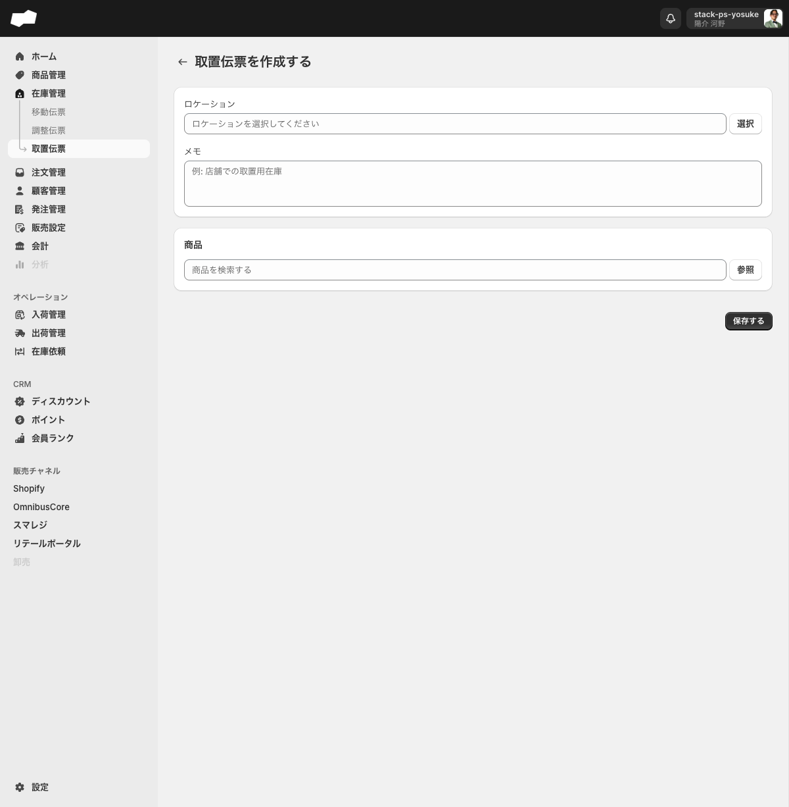
空のまま保存すると、ロケーション欄に「ロケーションを選択してください」、商品欄に「商品を1つ以上選択してください」と表示される。商品を選択して数量0で保存すると「数量は1以上を入力してください」と表示される。メモは任意。
操作ボタン（作成フォーム）
| ボタン（UIラベル） | 操作 |
|---|---|
| 選択 | ロケーション選択モーダルを開く |
| 参照 | 商品選択モーダルを開く |
| 保存する | 取置伝票を保存して一覧画面に戻る。保存後は「取置伝票を作成しました」と表示される |
詳細画面（未処理）
未処理の取置伝票詳細画面には以下のボタンが表示されます。
| ボタン（UIラベル） | 操作 |
|---|---|
| 処理済みとしてマークする | 確認ダイアログを開き、実行すると伝票を「処理済み」にして在庫を解放する |
「処理済みとしてマークする」確認ダイアログ
「処理済みとしてマークする」ボタンを押すと次の確認ダイアログが表示されます。
タイトル「処理済みとしてマークする」 本文「取置伝票を処理済みにすることで、取置中の在庫が解放されます。」 ボタン: 「キャンセル」 / 「実行する」
「実行する」をクリックすると取置伝票のステータスが「完了 処理済み」に変わり、取置中の在庫が解放されます。
ステータス遷移
作成・保存 → [未処理]（在庫が「取置中」になる）
↓
「処理済みとしてマークする」→ 確認ダイアログ → 「実行する」
↓
[処理済み]（取置中の在庫が解放される）補足・注意点
- 取置伝票を作成すると、その時点で対象在庫が「取置中」の区分に移動します。「処理済みとしてマークする」を実行するまで在庫は取置中のままです。
- 未処理状態の詳細画面に、独立した「キャンセル」ボタンは表示されません。後処理は「処理済みとしてマークする」から行い、取置中の在庫を解放します。
- 取置伝票は1伝票に複数SKUの明細を設定できます（仕様）。商品「参照」モーダルで複数SKUのチェックを入れて「選択する」と、1回の操作で明細に複数行が一括追加されます（2026-06-20実機確認：486125-31-XL + 486125-09-XL を一括追加）。参照を繰り返すと明細が累積し、同一SKUを複数回選ぶと重複行も発生します（
#IR-1007では4種SKU・8行に累積）。保存前に明細行を確認してください。
関連
商品管理 ✓ 確定
商品管理
対象画面: 商品管理 / /admin/products | 最終確認: 2026-06-16
この機能でできること
- 商品の一覧表示・ステータス別の絞り込み（タブ切替）
- 商品コードによる検索
- 商品の新規作成・編集・アーカイブ・削除
- バリエーション（サイズ・カラーなど）の追加・編集
- CSVによる商品データの一括インポート
商品一覧（/admin/products）
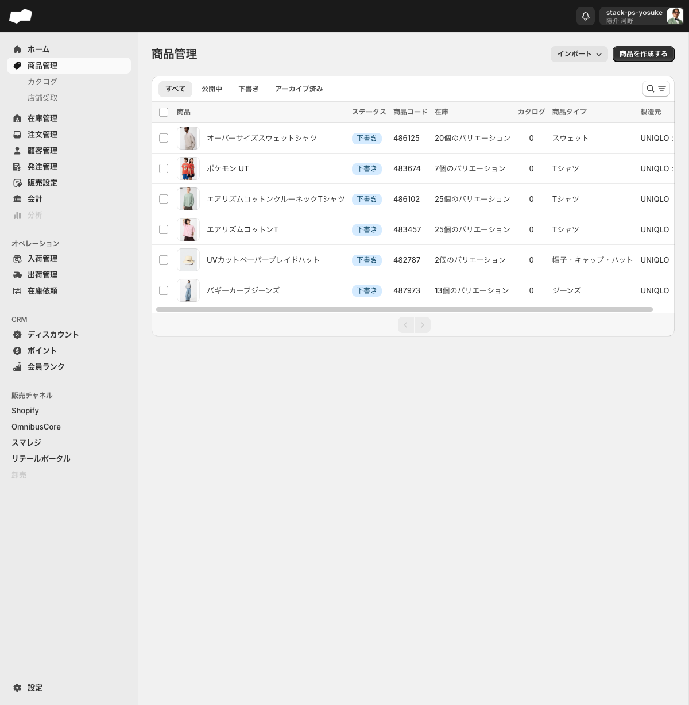
タブ
| タブ名 | 表示対象 |
|---|---|
| すべて | ステータスを問わず全商品 |
| 公開中 | ステータスが公開中の商品 |
| 下書き | ステータスが下書きの商品 |
| アーカイブ済み | アーカイブ済みの商品 |
一覧の列
| 列名 | 内容 |
|---|---|
| 商品 | サムネイル画像と商品名 |
| ステータス | 現在のステータス（例: 下書き、公開中） |
| 商品コード | 商品を一意に識別するコード（例: 486125） |
| 在庫 | 登録されているバリエーションの数（例: 20個のバリエーション） |
| カタログ | この商品が属するカタログの数 |
| 商品タイプ | 商品の種別（例: スウェット、Tシャツ） |
| 製造元 | 製造元名（例: UNIQLO） |
検索
「検索と絞り込みの結果」ボタンをクリックすると「商品コードで検索する」テキストボックスが展開されます。検索できるのは商品コードのみです。商品名・ステータス・商品タイプ・タグでの絞り込みUIはありません。
インポート
「インポート」ボタンのドロップダウンには以下の5項目があります。
| 項目ラベル | 用途 |
|---|---|
| 商品 | 商品データをCSVでインポートする |
| 商品画像 | 商品画像の割り当てをCSVでインポートする |
| 商品バリエーション | バリエーションデータをCSVでインポートする |
| 商品メタフィールド | 商品のメタフィールドをCSVでインポートする |
| 商品バリエーションメタフィールド | バリエーションのメタフィールドをCSVでインポートする |
商品作成フォーム（/admin/products/create）
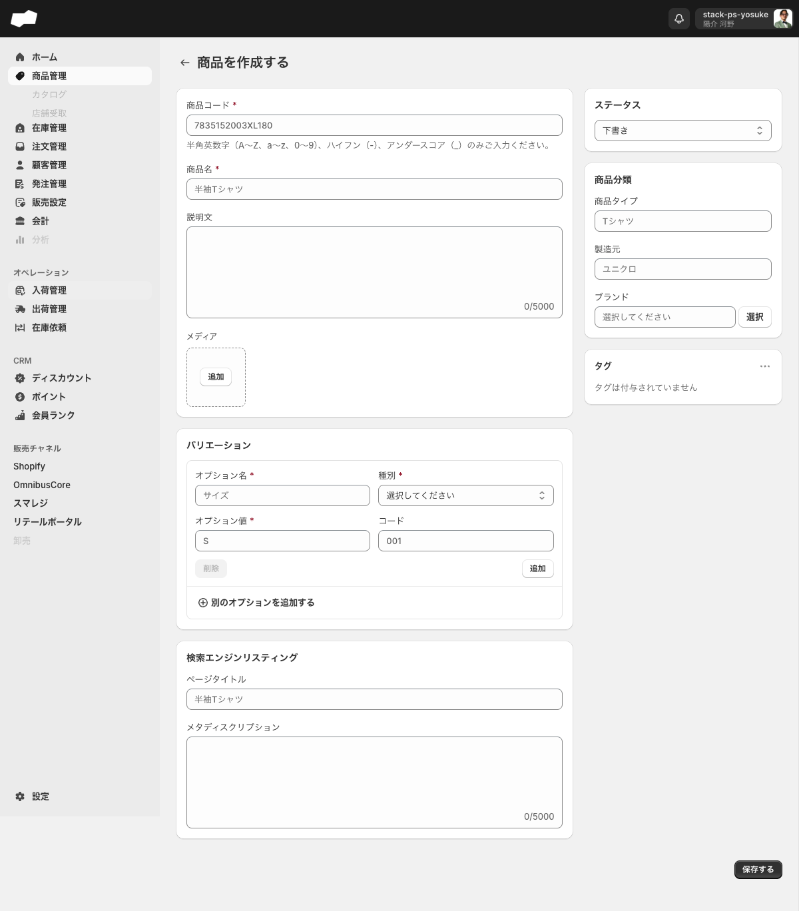
基本情報
| 項目（UIラベル） | 必須 | 制約・説明 |
|---|---|---|
| 商品コード* | 必須 | 半角英数字・ハイフン・アンダースコアのみ使用可（例: 7835152003XL180） |
| 商品名* | 必須 | テキスト（例: 半袖Tシャツ） |
| 説明文 | 任意 | テキストエリア、5000字上限 |
メディア
- 「画像をアップロード」エリア（クリックまたはドラッグ&ドロップでファイル選択）
- 「追加」ボタン（クリックでファイル選択ダイアログを開く）
どちらもローカルファイルを選択してアップロードします。URLからの画像追加はできません。
バリエーション設定
| 項目（UIラベル） | 必須 | 制約・説明 |
|---|---|---|
| オプション名* | 必須 | テキスト（例: サイズ） |
| 種別* | 必須 | セレクト: 「サイズ」「カラー」「その他」の3択 |
| オプション値* | 必須 | テキスト（例: S） |
| コード | 任意 | テキスト（例: 001） |
- 「追加」ボタンでオプション値の行を追加できます
- 「削除」ボタンで行を削除できます（1行のみの場合はボタンが無効になります）
- 「別のオプションを追加する」ボタンでサイズ・カラーなど別の軸を追加できます
検索エンジンリスティング
| 項目（UIラベル） | 必須 | 説明 |
|---|---|---|
| ページタイトル | 任意 | 検索結果に表示されるタイトル |
| メタディスクリプション | 任意 | 検索結果に表示される説明文（5000字上限） |
サイドバー: ステータス
作成時のステータスは以下の3択から選択します（デフォルト: 下書き）。
| 選択肢 | 説明 |
|---|---|
| 下書き | 下書き状態で作成 |
| 公開 | 公開状態で作成 |
| 非公開 | アーカイブ済みとして作成（詳細は「ステータスについての注意」を参照） |
サイドバー: 商品分類
| 項目（UIラベル） | 必須 | 説明 |
|---|---|---|
| 商品タイプ | 任意 | テキスト（例: Tシャツ） |
| 製造元 | 任意 | テキスト（例: ユニクロ） |
| ブランド | 任意 | 「選択」ボタンでブランドマスターから選択する |
ブランドは事前に「設定 > ブランド」（/admin/settings/brands）でマスター登録が必要です。
サイドバー: タグ
タグを追加できます。未設定時は「タグは付与されていません」と表示されます。
空保存時のバリデーション
「保存する」ボタンは未入力でも押せます。空のまま押すと、同じ画面に戻り、以下のようなエラーがインライン表示されます。
- 商品コードを入力してください
- 商品名を入力してください
- 選択してください（バリエーションの種別など）
商品詳細・編集画面（/admin/products/{id}）
ステータスの切り替え
編集画面のステータス選択肢は「公開中」「下書き」の2択です。作成フォームの「非公開」はこの画面には表示されません。
アーカイブ・削除
商品詳細画面の「その他の操作」ボタンから以下の操作ができます。
| 操作 | 説明 |
|---|---|
| 商品をアーカイブする | 商品をアーカイブ済みにする（取り消し可能） |
| 商品を削除する | 商品を完全に削除する（取り消し不可） |
アーカイブ済みの商品の「その他の操作」では「商品のアーカイブを解除する」が表示されます。
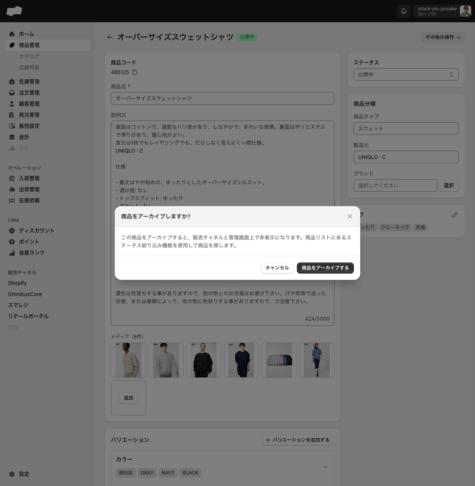
アーカイブ解除時は、確認ダイアログに「この商品のアーカイブを解除すると、ステータスが下書きに変更され再び作業できるようになります。」と表示されます。実行後のステータスは「下書き」です。
削除時は確認ダイアログ「商品を削除しますか？」が表示され、本文に「この商品を削除しますか？」「この処理は巻き戻すことができません。」と表示されます。ボタンは「キャンセル」「削除する」です。削除後は商品一覧へ戻り、削除済み商品の詳細URLへ直接アクセスすると「予期せぬエラーが発生しました」「該当するProductが見つかりませんでした。」と表示されます。
ステータスについての注意
| 作成フォームの選択肢 | 編集フォームでの表示 | 一覧タブ | 備考 |
|---|---|---|---|
| 公開 | 公開中 | 公開中タブ | 表記ゆれがあるが同一ステータス |
| 下書き | 下書き | 下書きタブ | — |
| 非公開 | アーカイブ済み | アーカイブ済みタブ | 「非公開」と「アーカイブ済み」は同じ状態 |
- 「非公開」で作成した商品は、管理画面の商品リスト以外では非表示になります
- アーカイブ済み商品を「商品のアーカイブを解除する」で復元すると、ステータスは「下書き」になります（元のステータスには戻りません）
バリエーション作成フォーム（/admin/products/{id}/variants/create）
オプション
商品に設定されているオプション軸（カラー・サイズなど）から値を選択します。
価格設定
| 項目（UIラベル） | 必須 | 説明 |
|---|---|---|
| 上代* | 必須 | 販売価格（円） |
| 仕入価格 | 任意 | 仕入れ価格（円） |
在庫
| 項目（UIラベル） | 必須 | 説明 |
|---|---|---|
| SKU (最小管理単位)* | 必須 | バリエーションを識別するコード（例: 9999990000T001） |
| メーカーSKU | 任意 | メーカー側のSKUコード |
| 在庫を追跡する | — | チェックボックス |
| 在庫切れの場合でも販売を続ける | — | チェックボックス |
販売
| 項目（UIラベル） | 必須 | 説明 |
|---|---|---|
| バーコード | 任意 | バーコード番号 |
| JAN | 任意 | JANコード |
| EAN | 任意 | EANコード |
配送
| 項目（UIラベル） | 必須 | 説明 |
|---|---|---|
| 重量 | 任意 | 数値で入力 |
| 単位 | — | グラム / キログラム（デフォルト）/ オンス / ポンド |
| 配送を必須にする | — | チェックボックス（デフォルトON） |
関税情報
| 項目（UIラベル） | 必須 | 説明 |
|---|---|---|
| 原産国コード | 任意 | 国・地域を選択 |
| 統計品目 (HS) コード | 任意 | HSコードをテキストで入力 |
送信ボタンのラベルは「作成する」です。
バリエーション編集画面（/admin/products/{id}/variants/{variant_id}）
作成フォームとほぼ同じ構成ですが、以下の点が異なります。
| 差異 | 内容 |
|---|---|
| 「在庫管理」リンクあり | 該当バリエーションの在庫管理画面へのリンクが上部に表示される |
| 「仕入価格」なし | 作成フォームにある「仕入価格」欄は表示されない |
| 「原価」セクションあり | 「原価を登録する」ボタンと「原価が設定されていません」が表示される |
| UPCフィールドあり | 販売セクションにUPC欄が追加されている |
| 送信ボタン | ラベルが「更新する」になる |
補足・注意点
- 商品コードは作成後に変更できません（半角英数字・ハイフン・アンダースコアのみ使用可）
- アーカイブは論理削除（復元可能）です。完全に削除するには「商品を削除する」を使います
- アーカイブ解除後のステータスは常に「下書き」になります（公開中には戻りません）
- 検索は商品コードのみに対応しています。商品名での検索はできません
関連
- 作業別: 商品を作成する
- 作業別: 商品をアーカイブ・削除する
- 機能別: カタログ
在庫依頼 ✓ 確定
在庫依頼
対象画面: 在庫依頼 / /admin/inventory_allocation_requests | 最終確認: 2026-06-20
この機能でできること
取り寄せ販売の起点となる機能。倉庫や他店舗にある在庫を、指定したロケーションへ確保・移動するよう依頼できる。
- 商品バリエーションと希望数を指定して在庫確保を依頼する
- 引当元にするロケーション（リクエスト先）を絞り込んで依頼する
- 依頼ごとのステータス（確認待ち／確保済み／終了）を一覧で管理する
- 確保済み後、移動伝票の作成へ進む
画面構成
在庫依頼一覧（/admin/inventory_allocation_requests）
画面上部に3つのタブがある。タブを切り替えると、それぞれのステータスにある依頼だけが表示される。
| タブ名 | 表示される依頼 |
|---|---|
| 確認待ち | 作成済みで未引当の依頼 |
| 確保済み | 在庫の引当てが完了した依頼 |
| 終了 | クローズ操作により終了した依頼 |
各行に表示される列は次のとおり。
| 列名 | 内容 |
|---|---|
| 商品 | 商品名・バリエーション情報 |
| SKU | SKUコード |
| ステータス | 現在のステータス（確認待ち／確保済み／終了） |
| チャネル | 依頼の発生元チャネル（例: web-admin） |
| 希望数 | 依頼した数量 |
| 確保済み | 引当て済みの数量 |
| 作成日時 | 依頼が作成された日時 |
サブメニュー「確保済み」（/admin/inventory_allocation_request_confirmations）
左サイドバーの「在庫依頼」配下に「確保済み」サブメニューがある。引当て完了済みの在庫をまとめて確認し、移動伝票を一括作成する専用画面。
| 列名 | 内容 |
|---|---|
| 商品 | 商品名・バリエーション情報 |
| SKU | SKUコード |
| 確保数 | 引当て済みの数量 |
| 移動元 | 引当て元ロケーション |
| 移動先 | 在庫を届けるロケーション |
| 確保日時 | 引当てが完了した日時 |
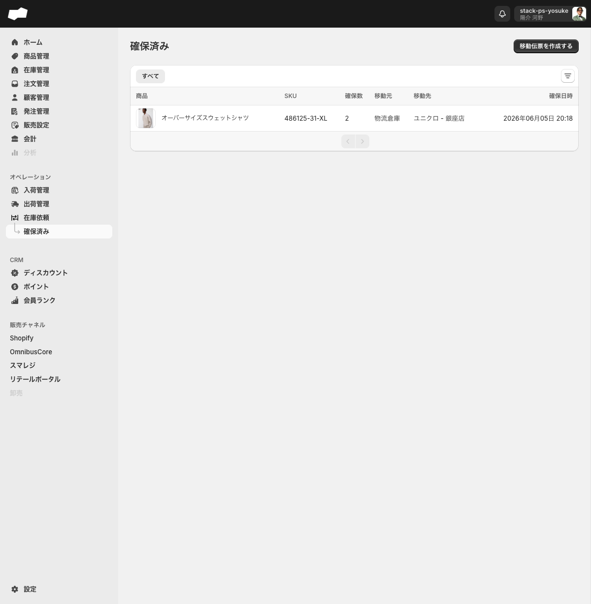
作成フォームの項目（/admin/inventory_allocation_requests/create）
右上の「在庫依頼を作成する」から遷移する。
商品セクション
| 項目 | 必須 | 入力方法 |
|---|---|---|
| 商品バリエーション* | 必須 | テキスト検索 + 「選択」ボタン |
リクエスト内容セクション
| 項目 | 必須 | 入力方法 | 補足 |
|---|---|---|---|
| 希望数* | 必須 | 数値入力（初期値: 0） | — |
| 移動先ロケーション* | 必須 | テキスト検索 + 「選択」ボタン | 在庫の届け先（引当先） |
| リクエスト先ロケーション | 任意（※引当には実質必須） | テキスト検索 + 「選択」ボタン | 在庫の引当元になるロケーション。指定すると、後の引当てダイアログでこのロケーションのみが選択肢に表示される。未指定だと引当ダイアログの引当元ロケーション選択肢が空になり引当不可（2026-06-20実機確認。エラー「引当元ロケーションを選択してください」） |
入力後、「保存する」ボタンをクリックすると依頼が作成され、詳細画面へ遷移する。
2026-06-18の実機確認では、空保存時に商品・希望数・移動先ロケーションが必須エラーになりました。リクエスト先ロケーションは未指定でも保存可能ですが、引当するには指定が実質必須（未指定だと引当ダイアログの引当元ロケーション選択肢が空）。希望数0は「1以上の数量を入力してください」で保存できません。
詳細画面の表示と用語
詳細画面では、作成フォームとは異なるラベルが使われる箇所がある。
| 作成フォームのラベル | 詳細画面でのラベル |
|---|---|
| 移動先ロケーション | 引当先ロケーション |
| リクエスト先ロケーション | 依頼先 |
依頼直後の詳細画面には次の情報が表示される。
| 項目 | 内容 |
|---|---|
| 引当先ロケーション | 在庫の届け先 |
| 確保済み数量 | 引当て済み数 / 希望数（例: 0 / 2 点） |
| 残り確保数 | まだ引当てが必要な数量 |
| チャネル | 依頼の発生元（例: web-admin） |
| 依頼先 | リクエスト先として指定したロケーション名 |
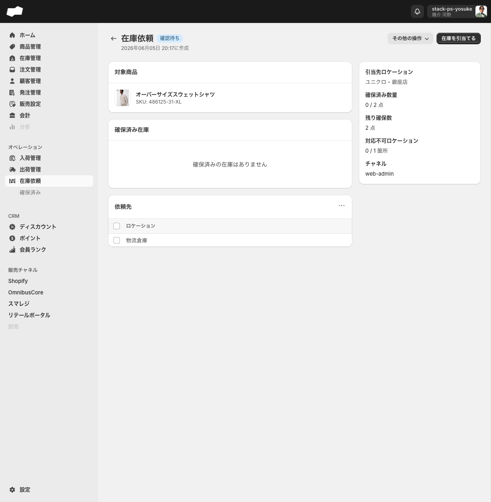
ステータス遷移
在庫依頼を作成
↓
【確認待ち】 ← 「在庫依頼をクローズする」→ 【終了】
↓ 「在庫を引当てる」
【確保済み】
↓ 確保済み一覧から「移動伝票を作成する」
移動伝票・出荷指示・入荷指示が自動生成（→ 後続の出荷／入荷フローへ）- 確認待ち: 依頼が作成された初期ステータス。引当てを待っている状態。
- 確保済み: 「在庫を引当てる」を実行して希望数全量を引当て、ロケーションと数量を確定した状態。部分引当（希望数に満たない）では「確認待ち」のまま確保済み数量のみ増え、確保済み一覧には引当てた分だけ表示される。
- 終了: 「在庫依頼をクローズする」を実行した結果。確認待ちのときのみ実行可能。
引当てダイアログの仕様
詳細画面右上の「在庫を引当てる」をクリックするとダイアログが開く。
| 項目 | 内容 |
|---|---|
| ロケーション | 選択肢はリクエスト先として指定したロケーションのみ表示される |
| 数量 | 数値入力。上限は希望数まで |
「引当てる」ボタンで確定すると確保済み数量が増えます。希望数全量を引当てるとステータスが「確保済み」に変わります（部分引当では「確認待ち」のまま。詳細は補足を参照）。
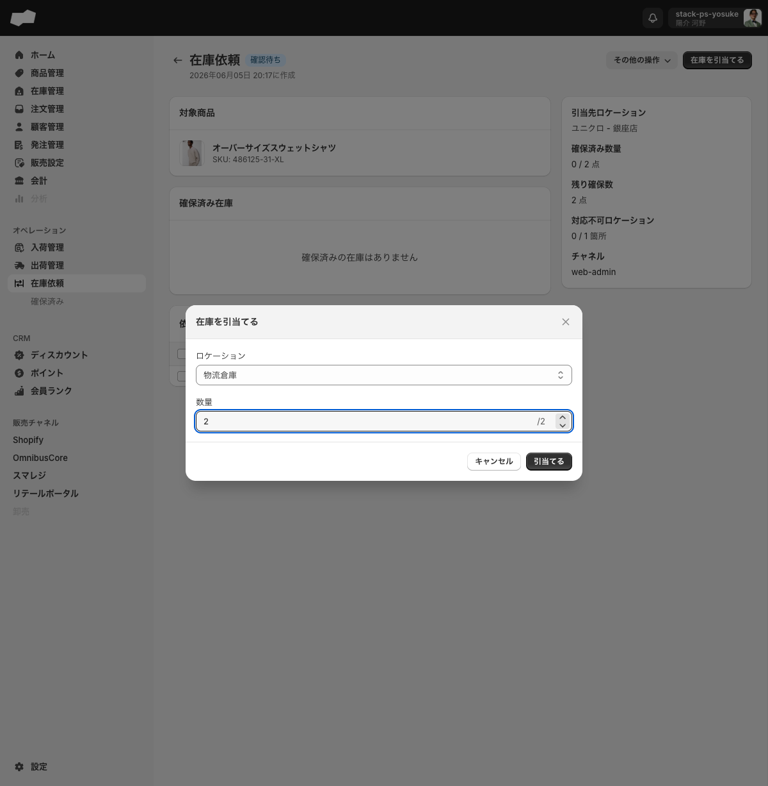
クローズ操作（在庫依頼をクローズする）
詳細画面の「その他の操作」メニューに「在庫依頼をクローズする」がある。
| ステータス | 実行可否 |
|---|---|
| 確認待ち | 実行可能 → ステータスが「終了」になる |
| 確保済み | グレーアウトで実行不可 |
確保済みになった後は、移動伝票をキャンセルしても依頼は「確保済み」のまま残り、クローズもできない。同じ取り寄せをやり直す場合は、在庫依頼を新規作成する必要がある。
2026-06-18の実機確認では、未引当の確認待ち依頼は「在庫依頼をクローズする」で終了にできました。確認ダイアログには「在庫依頼をクローズします。注文明細に修正が必要な場合はその対応を行なってください。」と表示されます。
補足・注意点
- 「移動先ロケーション」と「引当先ロケーション」は同じ意味で、画面によって表記が異なる。
- 「リクエスト先ロケーション」は引当元になるロケーションを指す。保存上は任意ですが引当には実質必須です（未指定だと引当ダイアログのロケーション選択肢が空になり引当不可）。詳細は作成フォームの項目（84行）を参照。
- 在庫依頼の「確保済み数量」は、「在庫を引当てる」を実行した時点で増える。ただし、この時点ではSKU在庫詳細の販売可能・取置中・手持ちは変化しない。
- 在庫が実際に移動するのは、確保済み一覧から移動伝票を作成し、出荷/入荷の実績登録を進めた後。確保済みステータスと在庫区分の「取置中」は別物として説明する。
- 確保済み一覧から移動伝票を作成すると、対象行は確保済み一覧から消え、元の在庫依頼詳細に移動伝票番号リンクが追加される。
- 確保済み一覧から作成された移動伝票は「外部システムから連携されている移動伝票です」と表示され、商品編集が制限される。ただし出荷実績登録・入荷一括受領・移動完了までは管理画面で実行できる。
- 移動伝票を完了しても、元の在庫依頼ステータスは「確保済み」のまま残る。
- 部分引当の挙動（2026-06-20実機確認）: 希望数に対して引当可能数が足りない場合、確保済み一覧には引当てた分だけ表示され移動伝票を作成できます。ただし依頼のステータスは希望数全量を引当てるまで「確認待ち」のまま推移します（部分引当では「確保済み」ステータスに遷移しない）。例: 希望2・引当元在庫1 → 確保1/2で残り1、ステータスは確認待ちのまま。
- サイドバーには未完了の依頼件数がバッジで表示される（0件のときは非表示。100件超は「100+」と表示）。
関連
- 作業別: 取り寄せ販売の処理手順
- FAQ: 在庫と取り寄せ販売のよくある質問
在庫管理 ⚠ 要確認
在庫管理
対象画面: 在庫管理 / /admin/inventory_items 配下 | 最終確認: 2026-06-19
この機能でできること
- SKU（商品バリエーション）×ロケーション単位で在庫数を確認する
- ロケーションを切り替えて、倉庫・店舗ごとの在庫状況を見る
- SKU詳細で在庫区分（販売可能・引当済み・取置中・破損・検品・予備・手持ち・積送中・入荷予定）の内訳を確認する
- 「販売可能在庫数を編集する」ダイアログで販売可能数を直接変更する
- 「在庫振替を行う」で同一商品内の別バリエーションへ在庫を振り替える
- 調整履歴でロケーションごとの変更履歴を確認する
- CSVでの一括インポート・エクスポートを行う
サブメニュー
在庫管理画面の左サイドナビには以下のサブメニューがあります。
| ラベル | URL | 説明 |
|---|---|---|
| 移動伝票 | /admin/inventory_movement_orders | ロケーション間の在庫移動を管理する |
| 調整伝票 | /admin/inventory_adjustment_orders | 在庫数の手動増減を記録する |
| 取置伝票 | /admin/inventory_reservation_orders | 特定用途への在庫確保を管理する |
画面・項目の説明
在庫管理 一覧画面（/admin/inventory_items）
ヘッダー
ページ見出しは常に「在庫管理 :」と表示されます。ロケーションを選択した後も見出しは変わらず、現在選択中のロケーション名は見出しの外にある独立したボタン（例: 「物流倉庫 ▼」）として表示されます。
検索・絞り込み
| 要素（UIラベル） | 内容 |
|---|---|
| 検索バー（虫眼鏡アイコン） | プレースホルダ「SKUコードで検索する」。SKUコードで検索する |
| 絞り込みを追加 | 絞り込み条件として選択できるのは「商品コード」の1種類のみ |
| キャンセル | 検索・絞り込みをリセットして全件表示に戻す |
一覧テーブルの列
| 列名 | 内容 |
|---|---|
| （チェックボックス） | 行選択。全選択しても一括操作ボタンは表示されない |
| 商品 | サムネイル + 商品名 + バリエーション名（カラー / サイズ） |
| 品番（SKU） | SKUコード |
| 販売可能 | 販売可能な在庫数（鉛筆アイコン付き） |
| 引当済み | 注文に引き当て済みの在庫数（旧「確定済み」） |
| 取置中 | 取置・移動用に確保された在庫数（旧「確保済み」） |
| 手持ち | 手元にある実在庫数 |
2026-06-14更新: 一覧の列が「販売可能 / 引当済み / 取置中 / 手持ち」に変わりました（旧: 販売不可 / 確定済み / 販売可能 / 手持ち。「販売不可」合算列は廃止）。 行をクリックすると在庫詳細画面（/admin/inventory_items/[id]）へ遷移します。
インポート・エクスポート
| ラベル | 遷移先 |
|---|---|
| インポート | /admin/csv_import/csv_import_operation_inventory_logical_available_quantities |
| エクスポート | /admin/csv_export/csv_export_operation_inventory_logical_quantities |
ロケーション切替モーダル
一覧ヘッダーのロケーション名ボタン（例: 「物流倉庫 ▼」）をクリックすると「ロケーションを選択する」モーダルが開きます。
| 項目 | 内容 |
|---|---|
| タブ | すべて / 店舗 / 倉庫 の3種。タブで種別を絞り込める |
| 列 | 名前 / 場所コード |
| ボタン | キャンセル / 選択する |
在庫詳細画面（/admin/inventory_items/[id]）
特定のSKUの在庫数をロケーション別に確認・操作する画面です。
ヘッダーボタン
| ボタン（UIラベル） | 動作 |
|---|---|
| 調整履歴 | 変更履歴ページ（/admin/inventory_items/[id]/history）へ遷移する |
| 商品管理 | バリエーション詳細画面へ遷移する |
| その他のアクション ▼ | 「在庫振替を行う」メニューが展開する |
タブは「すべて / 店舗 / 倉庫」の3種で、ロケーション種別を絞り込めます。
在庫数量の区分（SKU詳細・9列）
2026-06-14更新: 区分名が「確定済み→引当済み」「確保済み→取置中」に変わり、「積送中」「入荷予定」が新設されました。
在庫詳細では以下の9列でロケーション別の内訳を確認できます。
| 列名 | 内容 |
|---|---|
| ロケーション | ロケーション名 |
| 販売可能 | 販売できる在庫数（鉛筆アイコン付き） |
| 引当済み | 注文に引き当て済みの在庫数（旧「確定済み」） |
| 取置中 | 取置・移動用に確保された在庫数（旧「確保済み」） |
| 破損 | 破損品の在庫数 |
| 検品 | 検品中の在庫数 |
| 予備 | 予備在庫の数 |
| 手持ち | 実在庫合計（= 販売可能 + 引当済み + 取置中 + 破損 + 検品 + 予備） |
| 積送中 | 出荷済み・入荷前の輸送中の数（移動先で計上・手持ちに含まれない） |
| 入荷予定 | 移動伝票作成〜出荷前の入荷予定数（移動先で計上・手持ちに含まれない） |
手持ちの計算式（積送中・入荷予定は含まない）
手持ち = 販売可能 + 引当済み + 取置中 + 破損 + 検品 + 予備例（物流倉庫、SKU: 486125-09-XL）:
- 手持ち 7 = 販売可能 7（他区分はすべて 0。2026-06-15時点の検証環境データ）
在庫数の反映タイミング
操作によって在庫の各区分がどのタイミングで変わるかを示します。
| 操作 | 在庫の変化 |
|---|---|
| 在庫依頼を作成する（確認待ち状態） | 変化なし |
| 在庫を引当てる（在庫依頼が確保済み状態になる） | 変化なし（在庫の区分は動かない。※在庫依頼ステータスの「確保済み」は名称変更なし） |
| 移動伝票を作成する | 移動元の販売可能が減り、取置中が増える（手持ちは変わらない）。移動先には入荷予定が立つ |
| 出荷実績を登録する | 移動元の取置中と手持ちが減り、移動先の入荷予定が積送中へ移る |
| 入荷実績を登録する | 移動先の積送中または入荷予定が販売可能・手持ちへ移る（到着）。出荷前でも入荷登録は可能 |
| 移動伝票をキャンセルする | 販売可能・取置中が元の数に戻る |
注意: マイナス在庫について
手持ち在庫が 0 のロケーションから出荷登録を行うと、在庫数がマイナスになることがあります。2026-06-18の実機確認では、配送元の表示在庫が0のSKUでも移動伝票作成・出荷実績登録が完了しました。管理画面はマイナス在庫になっても出荷登録をブロックしません。在庫数がマイナスになっている場合は、調整伝票や移動伝票で在庫を補充してください。
「販売可能在庫数を編集する」ダイアログ
在庫詳細の「販売可能」列にある鉛筆アイコン（aria-label: 「販売可能数を編集」）をクリックすると開きます。
| 項目（UIラベル） | 必須/任意 | 内容 |
|---|---|---|
| 理由 | 必須 | テキスト自由入力。空のまま「保存する」を押すと「理由を入力してください」と表示されて保存できない |
| 数量 | — | 数値入力（初期値 0、単位「個」） |
| キャンセル / 保存する | — | 「保存する」で確定 |
保存したときの挙動:
- 「数量」に入れた値がそのまま新しい「販売可能」数になる（絶対値の上書き。加算ではない。例: 販売可能1の状態で数量9を入力 → 販売可能は9になる）。「手持ち」は差分だけ増減する（例: 1→9なら手持ちも+8）
- 負数も保存できる（例: 数量 -1 を入力すると販売可能・手持ちが -1 になる）。通常運用では実在庫と合わなくなるため、負数登録は補正目的に限定する
- 調整伝票（
/admin/inventory_adjustment_orders）には新しい伝票は作成されない（調整伝票とは別経路の在庫変更） - 変更は「調整履歴」（
/admin/inventory_items/[id]/history）に記録される
「在庫振替を行う」ダイアログ
「その他のアクション」>「在庫振替を行う」で開きます。同一商品内の別バリエーションへ在庫を振り替えます。
| 項目（UIラベル） | 必須/任意 | 内容 |
|---|---|---|
| ロケーション | 必須 | テキスト入力 + 「選択」ボタン。ロケーション選択モーダルが開く |
| 振替先のバリエーション | 必須 | ドロップダウン「選択してください」。同一商品内の他バリエーションのみ表示され、振替元の自身は除外される。別商品のバリエーションは表示されない |
| 理由 | 任意 | テキストエリア（プレースホルダ:「在庫振替の理由を入力してください」） |
| キャンセル / 保存する | — | 「保存する」で振替を確定 |
調整履歴画面（/admin/inventory_items/[id]/history）
「調整履歴」ボタンを押すと変更履歴ページへ遷移します。ロケーションを選択して履歴を絞り込めます。データがない場合は「在庫の変更履歴はありません」と表示されます。
履歴テーブルの列:
| 列名 | 内容 |
|---|---|
| 日時 | 変更が行われた日時 |
| アクティビティ | 変更の理由・操作名。「販売可能在庫数を編集する」ダイアログで入力した「理由」がここに表示される |
| 販売可能 | 変更後の数量（差分表示付き。例: 5 (+5)） |
| 引当済み | 変更後の数量（差分表示付き。旧「確定済み」） |
| 取置中 | 変更後の数量（差分表示付き。旧「確保済み」） |
| 破損 | 変更後の数量（差分表示付き） |
| 検品 | 変更後の数量（差分表示付き） |
| 予備 | 変更後の数量（差分表示付き） |
| 手持ち | 変更後の数量（差分表示付き） |
補足・注意点
- 破損・検品・予備区分への振替経路: 管理画面の「その他のアクション」には「在庫振替を行う」の1メニューのみで、破損・検品・予備専用の操作メニューはありません。調整伝票の「理由」選択肢（廃棄・見本・紛失・棚卸差異・その他）にもこれらの区分は存在しません。
- 手持ちはマイナスになり得る: 在庫不足のまま出荷登録を行うと手持ちがマイナスになります。在庫依頼・移動伝票・調整伝票で補充または修正してください。
- 一括操作は提供されていない: 一覧でチェックボックスを使って全件選択できますが、一括操作ボタンは表示されません。
関連
- 作業別: 取り寄せ販売の処理手順
- FAQ: 在庫と取り寄せ販売のよくある質問
- 機能別: 移動伝票
- 機能別: 調整伝票
- 機能別: 取置伝票
注文管理 ⚠ 要確認
注文管理
対象画面: 注文管理 / /admin/orders | 最終確認: 2026-06-16
この機能でできること
- 販売チャネルから流入した注文の一覧表示・確認・追跡
- テナント・タグ・チャネルによる絞り込みと、よく使う絞り込み条件の保存
- 下書き注文の一覧確認・注文番号での検索（作成はチャネル接続後に有効化）
- 返品の一覧確認とキャンセル・交換出荷による絞り込み
注文の変更はどこで行う？（開発元の説明）: Shopify経由の注文は、受注内容の変更などをShopify側の管理画面で行い、変更内容がSQへ自動反映される運用です。SQ側から操作するのは、ECモール（楽天など）経由の注文の返品処理などが中心です。
サブメニュー
注文管理を展開すると以下のサブページにアクセスできます。
| ラベル | URL | 目的 |
|---|---|---|
| 下書き | /admin/draft_orders | 管理画面から手動で起票する注文の管理 |
| 返品 | /admin/order_returns | 返品処理の一覧確認と絞り込み |
画面・項目の説明
注文管理 一覧（/admin/orders）
| 項目（UIラベル） | 説明 | 備考 |
|---|---|---|
| 検索と絞り込みの結果 | クリックすると検索バーと「絞り込みを追加」ボタンを展開する | フィルター非表示時はこのボタンのみ表示 |
| 注文番号で検索する | 注文番号で一覧を絞り込むテキストボックス | フィルター展開時に表示 |
| 絞り込みを追加 | 絞り込み条件の選択肢を展開するドロップダウンボタン | 選択肢は下表のとおり |
| キャンセル | フィルター入力を閉じる（変更を破棄） | フィルター展開時に表示 |
| 名前を付けて保存 | 現在のフィルター条件をビューとして保存する | フィルター展開時に表示。条件が空の場合は保存されない |
| 前へ／次へ | ページネーションボタン。データがない場合はクリック不可 |
「絞り込みを追加」の選択肢（全4種）
| 選択肢 | 絞り込みの内容 |
|---|---|
| テナント | テナントで絞り込む |
| タグ付けされている | タグが設定されている注文で絞り込む |
| タグ付けされていません | タグが設定されていない注文で絞り込む |
| チャネル | 販売チャネル（Shopify等）で絞り込む |
タブ構成
- 「すべて」タブのみ固定表示。データ量に応じてタブが増える仕様ではありません。
空状態のメッセージ
- 「アイテムが見つかりませんでした」「絞り込みや検索ワードを変更してみてください」
下書き（/admin/draft_orders）
管理画面から手動で注文を起票するための画面です。
| 項目（UIラベル） | 説明 | 備考 |
|---|---|---|
| 注文を作成する | 下書き注文の作成フォームへ進むボタン | 現在は href がなく、クリックしても遷移しない。詳細は下記の注意点を参照 |
| 検索と絞り込みの結果 | クリックすると「注文番号で検索する」テキストボックスを展開する | |
| 注文番号で検索する | 注文番号で一覧を絞り込むテキストボックス | フィルター展開時に表示 |
| キャンセル | フィルター入力を閉じる（変更を破棄） | フィルター展開時に表示 |
| 前へ／次へ | ページネーションボタン。データがない場合はクリック不可 |
注文管理一覧との主な違い
| 項目 | 注文管理一覧 | 下書き一覧 |
|---|---|---|
| 絞り込みの種類 | テナント/タグ/チャネルの4種 | 注文番号検索のみ |
| 「絞り込みを追加」ボタン | あり | なし |
| 「名前を付けて保存」ボタン | あり | なし |
タブ構成
- 「すべて」タブのみ固定表示。
空状態のメッセージ
- 「注文が見つかりませんでした」「絞り込みや検索ワードを変更してみてください」
「注文を作成する」が押せない場合
「注文を作成する」ボタンは現在 href がない状態です。クリックしても画面遷移・ダイアログ表示は起きません。直接 /admin/draft_orders/create にアクセスすると「予期せぬエラーが発生しました」画面になります。
実機確認では、会社データ・担当者データが存在する状態でも有効化されませんでした。販売チャネル（Shopify等）との接続によって生成される「購入顧客」データが必要と推測されますが、現環境（チャネル未接続）では確認できていません。
返品（/admin/order_returns）
注文に紐づく返品処理を一覧で確認するための画面です。
| 項目（UIラベル） | 説明 | 備考 |
|---|---|---|
| 検索と絞り込みの結果 | クリックすると「絞り込みを追加」と「キャンセル」ボタンを展開する | 注文管理・下書きと異なり、注文番号の検索テキストボックスはなし |
| 絞り込みを追加 | 絞り込み条件の選択肢を展開するドロップダウンボタン | 選択肢は下表のとおり |
| キャンセル | フィルター入力を閉じる（変更を破棄） | |
| 前へ／次へ | ページネーションボタン。データがない場合はクリック不可 |
「絞り込みを追加」の選択肢（2種）
| 選択肢 | 絞り込みの内容 |
|---|---|
| キャンセル | キャンセル扱いの返品で絞り込む |
| 交換出荷 | 交換出荷を伴う返品で絞り込む |
注文管理・下書きとの主な違い
- タブが存在しない（「すべて」タブも表示されない）
- 注文番号の検索テキストボックスがない
- 返品を新規作成するボタンはない
- 絞り込みの選択肢が返品固有の2種類のみ
空状態のメッセージ
- 「アイテムが見つかりませんでした」「絞り込みや検索ワードを変更してみてください」
直接 /admin/order_returns/create にアクセスすると404画面になります。返品は少なくとも返品一覧画面や直URLからは新規起票できません。
サイドバーの未完了バッジ
注文管理は左サイドバーのメニュー項目に「未完了件数」を示すバッジが表示されます。
| 仕様 | 内容 |
|---|---|
| 表示タイミング | 未完了の注文が1件以上ある場合に表示 |
| 0件のとき | バッジは表示されない |
| 100件超のとき | 「100+」と表示（正確な件数は表示されない） |
補足・注意点
- 注文は販売チャネル（Shopify等）から自動的に流入する設計です。現環境ではチャネルが未接続のため注文データが存在せず、注文詳細画面・ステータス遷移・出荷との連動は確認できていません。チャネル接続後にこのガイドを追補する予定です。
/admin/orders/createに直接アクセスすると「予期せぬエラーが発生しました」画面になります。注文管理一覧からの手動作成入口も確認できていません。- 返品の起票は注文管理一覧や返品一覧画面からは行えません（作成ボタンが存在しない）。返品フローの詳細はチャネル接続後の注文詳細画面確認後に追補します。
- 下書き注文の「注文を作成する」ボタンに
hrefがないまま変わらない場合、購入顧客データの有無を確認してください。会社データや担当者データを作成しても有効化されないことが確認されています。
関連
- FAQ: 注文と出荷のよくある質問
発注管理 ⚠ 要確認
発注管理
対象画面: 発注管理 / /admin/inventory_purchase_orders | 最終確認: 2026-06-19
この機能でできること
- 取引先（仕入先）への発注伝票を作成する
- 発注伝票に仕入れる商品・数量・単価・税率を記載し、金額を管理する
- 発注伝票を「下書き」から「発注済み」に進める
- 発注済みの伝票をキャンセルする
- 発注に使用する取引先を「設定 > 取引先」で管理する
実機確認メモ（2026-06-19再確認）: 発注伝票#IP-1000/#IP-1001/#IP-1003で、下書き → 発注済み → キャンセル済みまで操作できることを確認しました。ただし、発注確認ダイアログには「発注を行うと入荷指示が作成されます」と表示される一方で、今回の確認では入荷管理一覧に発注起点の入荷指示は表示されず、SKU在庫詳細の「入荷予定」も増えませんでした。FAQでは「発注すると必ず入荷予定が増える」とは案内しないでください。
画面・項目の説明
発注管理 一覧（/admin/inventory_purchase_orders）
| 項目（UIラベル） | 説明 | 必須 | 制約・選択肢 |
|---|---|---|---|
| 発注伝票を作成する | 発注伝票の作成フォームへ遷移するリンクボタン | — | — |
タブ: 「すべて」のみ
空状態の表示: 「アイテムが見つかりませんでした」
一覧テーブル列（実機確認 2026-06-20、#IP-1000〜#IP-1003 存在）: 管理番号 / 取引先 / ステータス / 合計金額 / 発注日 / 作成日
実機では発注伝票 #IP-1000 / #IP-1001 / #IP-1003 を作成し、下書き・発注済み・キャンセル済みの状態を確認しています。
発注伝票 作成フォーム（/admin/inventory_purchase_orders/create）
取引先・基本情報
| 項目（UIラベル） | 説明 | 必須 | 制約・選択肢 |
|---|---|---|---|
| 取引先* | 仕入先となる取引先をマスタから選択する | 必須 | コンボボックス（「設定 > 取引先」に登録された取引先が選択肢に表示される） |
| テナント* | 発注を紐付けるテナントを選択する | 必須 | コンボボックス |
| 通貨 | 発注伝票で使用する通貨を選択する | 任意 | 米ドル / ユーロ / 日本円 / タイ バーツ / シンガポール ドル（デフォルト: 日本円） |
商品セクション
| 項目（UIラベル） | 説明 | 必須 | 制約・選択肢 |
|---|---|---|---|
| 商品を追加する | 発注する商品バリエーションをテキスト検索または「参照」ボタンで追加する | 必須（1件以上） | テキスト検索 + 「参照」ボタン |
| 単価（明細行） | 商品1点あたりの仕入価格 | — | 数値入力 |
| 数量（明細行） | 発注数量 | — | 数値入力 |
| 税率（明細行） | 消費税率 | — | 初期値: 10% |
| 金額（明細行） | 単価 × 数量の税抜き金額（読み取り専用） | — | 単価・数量の変更に連動してリアルタイムで更新される |
「参照」ボタンで開くバリエーション選択ダイアログ
| 要素 | 説明 |
|---|---|
| 検索ボックス | 「SKUコードで検索する」 |
| 絞り込みを追加 | 選択肢は「商品コード」のみ。選択すると商品コード入力欄と「検索」「クリア」ボタンが追加される |
| テーブル列 | バリエーション / 商品コード / SKU |
| フッターボタン | 「キャンセル」「選択する」 |
フォーム下部ボタン
| ボタン | 動作 |
|---|---|
| 取り消す | フォームを閉じ、一覧画面へ戻る |
| 作成する | 発注伝票を下書きとして保存する |
空のまま「作成する」を押したときのバリデーションエラー
| 条件 | エラー文言 |
|---|---|
| 取引先が未選択 | 取引先を選択してください |
| テナントが未選択 | テナントを選択してください |
| 商品が0件 | 商品を1つ以上追加してください |
発注伝票 詳細とステータス
実機では次の流れを確認しました。
作成する
↓
下書き
↓ 発注する
発注済み
↓ キャンセルする
キャンセル済み| 状態 | 実機で確認した表示/操作 | 在庫・入荷への影響 |
|---|---|---|
| 下書き | 注意 / 下書き。主要操作は「発注する」。 | 在庫は変わらない。 |
| 発注する | 確認ダイアログに「発注を行うと入荷指示が作成されます。発注後は伝票の編集ができません。」と表示される。 | 今回確認したSKUでは、発注後も 入荷予定 は増えなかった。入荷管理一覧にも #IP-1000 / #IP-1001 / #IP-1003 起点の入荷指示は見えなかった。 |
| 発注済み | 情報 / 発注済み。発注者/発注日時が表示され、商品セクションは「発注済み商品」になる。その他操作は「キャンセルする」のみ。 | 発注後は編集導線が見えない。 |
| キャンセル | 確認ダイアログに「この処理は巻き戻すことができません。」と表示される。 | キャンセル後も在庫は変わらない。 |
| キャンセル済み | ステータスが「キャンセル済み」。キャンセル者/キャンセル日時が表示される。その他操作は残るが、メニュー内の「キャンセルする」はdisabled。 | 再キャンセルはできない。 |
取引先マスタ（設定 > 取引先 / /admin/settings/suppliers）
発注伝票の「取引先」に表示される仕入先の一覧・登録・管理を行う画面です。
タブ: 「すべて」 / 「アーカイブ」
テーブル列: 名前 / コード
右上のボタン
| ボタン | 動作 |
|---|---|
| インポート | クリックしても画面遷移・ダイアログが表示されない（未実装） |
| 取引先を作成 | 取引先の作成フォームへ遷移する |
取引先 作成フォーム（/admin/settings/suppliers/create）
| 項目（UIラベル） | 説明 | 必須 | 制約・選択肢 |
|---|---|---|---|
| 取引先名* | 取引先の名前 | 必須 | テキスト入力（プレースホルダー: NIKE Japan） |
| 取引先コード | 取引先の識別コード | 任意 | テキスト入力（プレースホルダー: SUP-001） |
| ボタン | 動作 |
|---|---|
| 保存する | 取引先を保存し、取引先一覧（/admin/settings/suppliers）へ遷移する |
取引先名を入力せずに「保存する」を押すと「取引先名を入力してください」というエラーが表示されます。 保存が完了すると「取引先を作成しました」というメッセージが表示されます。
補足・注意点
- 取引先マスタに登録したデータは、発注伝票作成フォームの「取引先」選択肢にすぐ反映されます。
- 通貨は発注伝票ごとに設定できます（国際仕入れに対応）。
- 金額欄は単価 × 数量の税抜き金額を表示します（税込み計算ではありません）。
- 取引先一覧の「インポート」ボタンは現時点では動作しません（未実装）。
- 発注確認ダイアログ上は入荷指示が作成されると表示されますが、2026-06-16/2026-06-18/2026-06-19の実機確認では、
#IP-1000/#IP-1001/#IP-1003のいずれも入荷管理一覧と在庫詳細で反映を確認できませんでした。発注起点の入荷指示生成は追加確認が必要です。
関連
- 作業別:
- FAQ:
移動伝票 ✓ 確定
移動伝票
対象画面: 在庫管理 > 移動伝票 / /admin/inventory_movement_orders | 最終確認: 2026-06-18
この機能でできること
- ロケーション間（例: 物流倉庫 → 店舗）の在庫移動を伝票として管理する
- 移動伝票を手動で新規作成する（単体作成）
- 取り寄せ販売フロー（在庫依頼 → 確保済み → 移動伝票作成）で自動生成された伝票を確認する
- 伝票の進捗を一覧のタブで把握する（出荷作業 / 一部受領済み / 受領済み / キャンセル）
画面・項目の説明
一覧タブ
| タブ名 | 説明 |
|---|---|
| すべて | 全ステータスの伝票を表示する |
| 出荷作業 | 出荷待ちの伝票 |
| 一部受領済み | 一部の商品が入荷済みの伝票 |
| 受領済み | すべての商品が入荷済みの伝票 |
| キャンセル | キャンセルされた伝票 |
作成フォーム（/admin/inventory_movement_orders/create）
| 項目（UIラベル） | 説明 | 必須 | 制約・補足 |
|---|---|---|---|
| 配送元 | 在庫の移動元ロケーション（「配送元を選択してください」） | 必須 | 「選択」ボタンからロケーション選択モーダルを使う。配送元を先に選択しないと商品欄がグレーアウトする |
| 配送先 | 在庫の移動先ロケーション（「配送先を選択してください」） | 必須 | 「選択」ボタンからロケーション選択モーダルを使う。配送元と同じロケーションも選択でき、保存時も拒否されない |
| 商品を追加 | 移動する商品の指定 | 必須（1件以上） | 配送元を選択するまでdisabled。テキスト検索または「参照」ボタンで商品を選ぶ。数量0は保存不可 |
注意: 配送元と配送先に同じロケーションを選択してもUIレベル・保存時ともにエラーにならず、移動伝票・出荷指示・入荷指示が作成されます。誤作成した場合は詳細の「その他の操作」>「キャンセル」で取り消してください。
注意: 配送元の表示在庫が0のSKUでも、商品候補に出て移動伝票を作成できます。出荷実績登録も在庫不足でブロックされないため、マイナス在庫になり得ます。
伝票詳細のステータスバッジ
単体作成した移動伝票でも、出荷実績と入荷実績を最後まで登録すると「成功 完了」と「入荷完了」の2つのバッジが並んで表示されます。
移動伝票の2つの作られ方
1. 取り寄せ販売フロー経由（自動作成）
在庫依頼 → 引当て → 確保済み一覧（/admin/inventory_allocation_request_confirmations）の「移動伝票を作成する」ボタンから自動作成されます。
この場合、伝票詳細に次の注意文が表示され、商品の追加・削除などの編集ができません。
「この移動伝票は外部システムから連携されているため、編集（商品の追加や削除など）は制限されています。連携元システムの管理画面より操作を行ってください。」
2. 単体作成
上記フロー以外に、「移動伝票を作成する」リンクボタンから単体で作成できます。
補足・注意点
ステータスを進める方法
移動伝票の詳細画面にはステータスを直接進めるボタンがありません。出荷指示（出荷管理）と入荷指示（入荷管理）の実績登録に連動して、移動伝票のステータスが自動的に変わります。
- 出荷実績を登録する → 出荷管理（
/admin/inventory_outbound_orders）で「出荷実績を登録する」を実行 - 入荷実績を登録する → 入荷管理（
/admin/inventory_inbound_orders）で「入荷実績を登録する」を実行
移動伝票作成と同時に、出荷指示と入荷指示が自動生成されます。
2026-06-18の実機確認では、単体作成した移動伝票で次の流れを確認しています。
| 操作 | 移動伝票 / 関連伝票の状態 | 在庫への影響 |
|---|---|---|
| 移動伝票を保存 | 移動伝票は「未完了 / 出荷待ち」。関連欄に出荷指示と入荷指示が表示される | 移動元の販売可能が減り、移動先の入荷予定が増える |
| 出荷実績を登録 | 出荷指示は「成功 完了 / 出荷完了」 | 移動元の手持ちが減る |
| 入荷実績を登録 | 入荷指示は「成功 完了 / 入荷完了」 | 移動先の販売可能・手持ちが増える |
| 移動伝票を再確認 | 移動伝票は「成功 完了 / 入荷完了」 | 移動が完了する |
入荷と出荷の順序は固定ではありません。出荷前に入荷を一括受領できますが、その時点では親の移動伝票は完了せず、出荷実績登録後に完了します。予定数より少ない入荷、予定数より多い入荷も登録でき、予定数と入荷済み数が一致しない場合は入荷指示側の「完了に更新する」で手動完了します。
作成時のバリデーション:
| 条件 | エラー |
|---|---|
| 配送元未選択 | 配送元を選択してください |
| 配送先未選択 | 配送先を選択してください |
| 商品0件 | 商品を1つ以上追加してください |
| 数量0 | quantityは1以上で入力してください |
キャンセルについて
伝票詳細の「その他の操作」メニュー内に「キャンセル」があります。キャンセルを実行すると次のダイアログが表示されます。
見出し「移動伝票をキャンセルしますか？」 本文「移動伝票をキャンセルすると、この伝票に紐づく入荷予定および出荷指示もすべてキャンセルされます。」
キャンセル後の状態:
- 移動伝票のステータス: 「キャンセル」
- 入荷指示: 「入荷キャンセル」バッジで入荷管理のキャンセルタブに表示される
- 出荷指示: 出荷管理の通常の一覧タブには表示されなくなる。関連する移動伝票詳細のリンクや直接URLから詳細を開ける場合がある。条件指定エクスポートにはキャンセル済みステータスの選択肢がある
- 確保していた在庫: 「販売可能」区分に戻る
2026-06-18の実機確認では、出荷実績を登録した後は親移動伝票のキャンセル項目がdisabledになりました。キャンセルできる前提で案内するのは、出荷前の移動伝票に限定してください。
重要な注意（取り寄せ販売の行き止まり）
取り寄せ販売フロー経由で作成した移動伝票をキャンセルした場合、元の在庫依頼は「確保済み」のまま残ります。この状態では確保済み一覧から移動伝票を再作成することも、在庫依頼をクローズすることもできません（行き止まり）。
同じ取り寄せをやり直すには、在庫依頼を新規作成してください。
2026-06-18の実機確認では、在庫依頼の確保済み一覧から作成した移動伝票 #IM-1017 に「外部システムから連携されている移動伝票です」と表示されました。この伝票は商品編集が制限されますが、出荷実績登録・一括受領・親移動伝票の完了までは管理画面で実行できました。完了後も元の在庫依頼ステータスは「確保済み」のままです。
関連
- 作業別: 取り寄せ販売の処理手順
- 機能別: 取置伝票
- 機能別: 調整伝票
設定 ⚠ 要確認
設定
対象画面: 設定 / /admin/settings | 最終確認: 2026-06-12
この機能でできること
- 組織全体のマスタデータ（ロケーション・ブランド・決済方法など）を管理する
- 管理メンバーの追加・権限グループの設定をする
- 外部サービス（ロジザード・Recustomer など）との連携を設定する
- 翻訳・メタフィールド定義・採寸ルールなどのカスタムデータを管理する
設定トップページ
設定トップページには「組織ID」セクションがあり、組織IDと右隣のコピーボタン（クリップボードアイコン）でIDをコピーできます。
サブページ一覧
設定画面は以下の16サブページで構成されています。
データ管理グループ
| ラベル（UIの原文） | URL | 説明文（UIの原文） |
|---|---|---|
| 管理メンバー | /admin/settings/users | 管理画面にアクセス可能なメンバーを管理することができます |
| テナント | /admin/settings/tenants | 事業部を表すテナントデータを管理することができます。 |
| ロケーション | /admin/settings/locations | 在庫を管理するロケーションを管理することができます。 |
| ロケーショングループ | /admin/settings/location_groups | ロケーションをグループ化して管理することができます。 |
| ブランド | /admin/settings/brands | ブランド情報を管理することができます |
| 取引先 | /admin/settings/suppliers | 在庫を仕入れる取引先の業者を管理することができます。 |
| 決済方法 | /admin/settings/payment_methods | 顧客が注文時に利用する決済方法を管理することができます |
| 販売員 | /admin/settings/retail_staff_members | 販売員情報を管理することができます |
テナントは画面上「事業部」と説明されていますが、FAQ上では会社組織上の事業部だけでなく、ブランド・部門などポイント、会員ランク、チャネル連携のルールを分ける管理単位として扱います。商品マスタの「ブランド」とは別データです。
テンプレートグループ
| ラベル（UIの原文） | URL | 説明文（UIの原文） |
|---|---|---|
| 納品書 | /admin/settings/pdf_template_package_slip | 納品書テンプレートを管理することができます |
通知グループ
| ラベル（UIの原文） | URL | 説明文（UIの原文） |
|---|---|---|
| 通知用メールアドレス | /admin/settings/organization_notification_emails | お知らせやアラートなどのメールを受け取るためのアドレスを管理することができます。 |
外部連携グループ
| ラベル（UIの原文） | URL | 説明文（UIの原文） |
|---|---|---|
| アプリ | /admin/settings/apps | APIを利用するためのアプリを管理することができます |
| ロジザード | /admin/logizard_integrations | ロジザードZEROとの連携設定を管理することができます |
| Recustomer | /admin/recustomer_integrations | Recustomerとの連携を管理することができます |
カスタムデータグループ
| ラベル（UIの原文） | URL | 説明文（UIの原文） |
|---|---|---|
| 翻訳 | /admin/settings/translation | 翻訳を管理することができます |
| メタフィールド定義 | /admin/settings/metafield_definitions | オブジェクトのカスタムフィールドを管理することができます |
| 採寸ルール | /admin/settings/product_measurement_rules | 商品ごとの採寸ルールを管理することができます |
管理メンバー（/admin/settings/users）
管理画面にアクセスできるメンバーを管理します。
一覧画面の主な操作
| 操作 | 説明 |
|---|---|
| 追加する | メンバー追加フォームへ遷移 |
| 権限グループ一覧 | 権限グループ管理画面へ遷移 |
| インポート | CSVによる一括追加 |
メンバー追加フォーム（/admin/settings/users/create）
フォームタイトル: 「ユーザーを追加する」
| 項目（UIの原文） | 必須 | 補足 |
|---|---|---|
| 姓 * | 必須 | 姓・名は同じ行に横並びで表示 |
| 名 * | 必須 | — |
| メールアドレス * | 必須 | — |
| 権限グループ | — | ラジオボタンで1グループのみ選択可。作成済みのグループが一覧表示される |
- パスワード入力欄はありません。メールアドレスによる認証でログインします。
- 権限グループは1人に1グループのみ割り当て可能です（複数グループへの同時割り当て不可）。
メンバー詳細画面（保存後）
メンバー詳細は以下の3セクションで構成されます。
| セクション | 内容 |
|---|---|
| 基本情報 | 姓・名・メールアドレスの編集 |
| ユーザーテナント | アクセスを許可するテナントのチェックボックス選択 |
| 権限 | 権限グループをコンボボックスで変更。下部に「適用されている権限一覧」（件数表示付き）アコーディオンあり |
- 「その他の操作」ボタン → 「ユーザーを組織から除外」（退職・アクセス削除時はこの操作）
権限グループ（/admin/settings/permission_groups）
管理メンバーに割り当てる権限グループを管理します。
アクセス方法
管理メンバー一覧（/admin/settings/users）の「権限グループ一覧」ボタンから遷移します。
権限グループの種類
| グループ名 | 特徴 |
|---|---|
| 特権管理者 | グループ名のみ変更可能。権限内容（76件）は変更不可・削除不可の半固定グループ |
| カスタムグループ | 「作成する」から新規作成。76権限から任意に選択できる |
権限の体系
権限は 38リソース × 閲覧（:read）/ 編集（:write）の76種です。
代表的なリソース: お知らせ / アプリ / ブランド / 顧客 / ディスカウント / 在庫 / 発注伝票 / ロケーション / 注文 / 商品 / 店舗スタッフ / テナント / 翻訳 / ユーザー など
すべてのリソース: お知らせ(announcements) / アプリ(apps) / ブランド(brands) / カタログ(catalogs) / 取引先企業(companies) / 顧客マイル(customer_miles) / 顧客ポイント(customer_points) / 顧客会員ランクルール(customer_rank_rules) / 顧客会員ランク(customer_ranks) / 顧客(customers) / ディスカウント(discounts) / 下書き注文(draft_orders) / 在庫(inventory) / 在庫リクエスト(inventory_allocation_requests) / 発注返品伝票(inventory_purchase_order_returns) / 発注伝票(inventory_purchase_orders) / 店舗受取ロケーションルール(local_pickup_location_rules) / ロケーショングループ(location_groups) / ロケーション(locations) / マイル商品(mile_items) / ネクストエンジン連携(next_engine_integrations) / OmnibusCore連携(omnibus_core_integrations) / 注文(orders) / ポイントキャンペーン(point_campaign_order_rules) / ポイントルール(point_rules) / 販売価格ルール(product_price_rules) / 商品(products) / 店舗ポータル連携(retail_portal_integrations) / 店舗スタッフ(retail_staff_members) / 売上データ(sales) / Shopify連携(shopify_integrations) / スマレジ連携(smaregi_integrations) / テナント(tenants) / 翻訳ルール(translation_rules) / 翻訳(translations) / ユーザー権限(user_permissions) / ユーザーテナント(user_tenants) / ユーザー(users)
カスタム権限グループ作成フォーム（/admin/settings/permission_groups/create）
フォームタイトル: 「権限グループを作成する」
| 項目（UIの原文） | 必須 | 補足 |
|---|---|---|
| グループ名 * | 必須 | テキストボックス |
| 権限（チェックボックス群） | — | 76権限から個別に選択。デフォルトは全オフ |
作成済みのカスタム権限グループは、権限グループ一覧で行を選択して「権限グループを削除」から削除できます。確認ダイアログは「権限グループを削除しますか？」で、本文は「選択された1件の権限グループを削除します。この処理は巻き戻すことができません。」です。削除後はトースト「権限グループを削除しました」が表示されます。
ロケーション（/admin/settings/locations）
在庫管理の拠点（店舗・倉庫）を登録・管理します。
ロケーション作成フォーム（/admin/settings/locations/create）
フォームは3セクション11項目で構成されます。
基本情報セクション
| 項目（UIの原文） | 必須 | 選択肢・補足 |
|---|---|---|
| 名前 * | 必須 | テキストボックス。注文や商品などの画面で表示される名前 |
| 表示名 | 任意 | テキストボックス |
| コード * | 必須 | テキストボックス |
| 場所種別 * | 必須 | セレクトボックス（倉庫 / 店舗 の2種のみ） |
所在地・連絡先セクション
| 項目（UIの原文） | 必須 | 補足 |
|---|---|---|
| ロケーションの住所を登録する | 任意 | チェックボックス。オンにすると住所欄（国/地域・郵便番号・都道府県・市区町村・住所・建物名）が展開される |
| マップ | 任意 | URLを入力 |
| 電話番号 | 任意 | — |
| メールアドレス | 任意 | — |
販売設定セクション（右サイドバー）
| 項目（UIの原文） | 必須 | 選択肢・補足 |
|---|---|---|
| 店舗受け取りを有効にする | 任意 | チェックボックス（デフォルト: オフ） |
| 在庫依頼を受け付ける | 任意 | チェックボックス（デフォルト: オフ）。このロケーションを取り寄せ販売の在庫依頼のリクエスト先にする場合にオンにする。オンにすると在庫依頼の選択肢に表示されるようになる |
| ポイント利用種別 * | 必須 | セレクトボックス（値引き（デフォルト）/ 金種 の2種のみ） |
ロケーション詳細画面
保存後の詳細画面には以下のセクションが表示されます。
| セクション | 主な表示項目 |
|---|---|
| 基本情報 | ロケーションID / 外部ID / コード / 表示名 / 場所種別 / 営業状態（営業中バッジ） |
| 所在地・連絡先 | 登録した住所・マップ・電話番号・メールアドレス |
| 所属ロケーショングループ | このロケーションが属するグループの件数（n個のグループに属しています） |
| 公開設定 | 公開状態（公開中バッジ） |
| 販売設定 | 店舗受取（有効・無効）/ 在庫依頼（有効・無効）/ ポイント利用種別 |
| 備考欄 | フリーテキスト |
| タグ | タグの追加・管理 |
ブランド（/admin/settings/brands）
商品に紐づけるブランド情報を管理します。
ブランド作成フォーム（/admin/settings/brands/create）
| 項目（UIの原文） | 必須 | 補足 |
|---|---|---|
| 名前 * | 必須 | — |
| 外部ID | 任意 | 作成時のみ設定可。保存後の変更不可 |
| コード * | 必須 | — |
- 保存後の詳細・編集フォームには「外部ID」フィールドは表示されません。
決済方法（/admin/settings/payment_methods）
顧客が注文時に使用する決済方法を管理します。
決済方法作成フォーム（/admin/settings/payment_methods/create）
| 項目（UIの原文） | 必須 | 補足 |
|---|---|---|
| 名前 * | 必須 | プレースホルダー: 「クレジットカード」 |
| コード * | 必須 | プレースホルダー: 「credit_card」 |
| ゲートウェイ * | 必須 | プレースホルダー: 「shopify_payments」 |
| 支払い待ちでも注文を出荷する | 任意 | チェックボックス（デフォルト: オフ） |
| 代引き | 任意 | チェックボックス（デフォルト: オフ） |
販売員（/admin/settings/retail_staff_members）
リテールポータルで、どの販売員が顧客情報を閲覧したか、どの販売員が客注注文を作成したかを記録するための販売員を管理します。
販売員作成フォーム（/admin/settings/retail_staff_members/create）
| 項目（UIの原文） | 必須 | 補足 |
|---|---|---|
| 姓 * | 必須 | 姓・名は同じ行に横並びで表示 |
| 名 * | 必須 | — |
| コード * | 必須 | — |
| ロケーション | 任意 | 「検索する」ボタンをクリックするとロケーション選択モーダルが開く。作成フォームでは1件のみ選択可 |
- ロケーション選択モーダルには「すべて / 店舗 / 倉庫」の3タブがあります。
- 作成フォームでは、1件にチェックを入れると他の行はグレーアウトされ、1件のみ選択する仕様です。
- 作成後の販売員詳細画面では、「店舗を追加する」から複数店舗へ紐づけできます。
翻訳（/admin/settings/translation）
管理画面・ストアフロントのデータを多言語に翻訳するルールを設定します。
対応言語（10言語）
日本語 / 英語 / 中国語（簡体字） / 中国語（繁体字） / 韓国語 / スペイン語 / フランス語 / ドイツ語 / ヒンディー語 / タイ語
翻訳ルール作成フォーム（/admin/settings/translation/translation_rules/create）
| 項目（UIの原文） | 必須 | 補足 |
|---|---|---|
| 名前 * | 必須 | テキストボックス |
| 言語 * | 必須 | コンボボックス（上記10言語から選択） |
| 翻訳データを自動で作成する | — | チェックボックス。オンにすると商品・商品オプション・商品オプション値・メタフィールドの翻訳データが自動生成される |
- 保存後の詳細画面では「言語」コンボボックスが変更不可になります。
- 詳細画面には「商品 / 商品オプション / 商品オプション値 / メタフィールド」の4セクションが表示され、各セクションで翻訳用AIプロンプト（親プロンプト・カスタムプロンプト）を設定できます。
メタフィールド定義（/admin/settings/metafield_definitions）
各オブジェクトにカスタムフィールドを追加するための定義を管理します。
カスタムフィールドを追加できるオブジェクト（16種）
組織 / 商品 / バリエーション / 顧客 / 注文 / 下書き注文 / 会社 / ロケーション / ディスカウント / 在庫移動伝票 / 在庫調整伝票 / 在庫取置伝票 / 発注伝票 / 入荷指示 / 出荷指示 / 仕入れ先
メタフィールド定義 作成フォーム
| 項目（UIの原文） | 必須 | 制約・補足 |
|---|---|---|
| 名前 * | 必須 | 最大50文字 |
| 説明 | 任意 | 最大100文字 |
| ネームスペース * | 必須 | 最大50文字・最低4文字 |
| キー * | 必須 | 最大50文字・最低4文字 |
| メタフィールドのタイプ * | 必須 | コンボボックス（下記12種から選択） |
タイプの選択肢（12種）: 単一行のテキスト / 単一行のテキスト(リスト) / 複数行のテキスト / 日付と時刻 / 日付 / trueまたはfalse / バーコード(NW7) / 整数 / 小数 / JSON / ID / リッチテキスト
- 識別子は「ネームスペース.キー」形式で管理されます（例:
custom.note）。 - 定義を保存すると、対象オブジェクトの詳細画面に「メタフィールド」セクションが即座に表示されます。
採寸ルール（/admin/settings/product_measurement_rules）
衣料品など、商品ごとの採寸項目（肩幅・バストなど）と単位を定義するルールを管理します。
採寸ルール作成フォーム（/admin/settings/product_measurement_rules/create）
基本設定セクション
| 項目（UIの原文） | 必須 | 選択肢・補足 |
|---|---|---|
| ルール名 * | 必須 | テキストボックス（プレースホルダー: 「トップス」） |
| 採寸単位 | 任意 | コンボボックス（なし（デフォルト）/ センチメートル の2種のみ） |
採寸項目セクション
| 項目（UIの原文） | 制約 | 補足 |
|---|---|---|
| 採寸項目1〜5 | 最大5件 | テキストボックス（プレースホルダー: 「肩幅」） |
| 採寸項目を追加 | — | 追加ボタン（+アイコン付き） |
- 採寸ルールを個別の商品に紐づける操作は、現在の管理画面UIからは行えません。
アプリ（/admin/settings/apps）
SQ Admin APIにアクセスするためのAPIキーを管理します。
- 画面の説明文（UIの原文）: 「APIアクセスを管理する / アプリを作成して、SQのアドミンAPIにアクセスしましょう。」
- 「アプリを作成する」リンクから作成フォームへ遷移します。
アプリ作成フォーム（/admin/settings/apps/create）
| 項目（UIの原文） | 必須 | 補足 |
|---|---|---|
| アプリ名 * | 必須 | テキストボックス（プレースホルダー: 「モバイルアプリ」） |
| 権限（チェックボックス群） | — | 76権限から付与するスコープを個別に選択。各権限には説明文が付いている（例: 「商品情報を閲覧することができます。」） |
アプリ詳細画面（保存後）
アプリを作成すると詳細画面に遷移し、以下の情報とセクションが表示されます。
Admin API
作成と同時にアクセストークンとシークレットが自動発行されます。
| 項目 | 内容 |
|---|---|
| アクセストークン | Admin APIへの接続に使用するトークン（自動発行） |
| シークレット | Webhookのリクエスト検証等に使用するシークレット（自動発行） |
検証方法
「Playgroundを開く」ボタンから GraphQL Playground を開いてAdmin APIを試すことができます。
リクエストログ
「リクエストログを見る」からこのアプリによるAPIリクエストの履歴を確認できます。
Storefront API
「トークンを発行する」ボタンからStorefront API用のトークンを発行できます。
Webhook
「Webhookを作成する」ボタンからWebhookを追加できます。
Webhook作成ダイアログの入力項目:
| 項目（UIの原文） | 説明 | 選択肢・補足 |
|---|---|---|
| イベント | Webhookを送信するトリガーとなるイベント | 「注文の作成」 / 「注文の更新」 / 「在庫の更新」の3種 |
| エンドポイント | Webhookの送信先URL | URLを入力する |
ロジザード連携（/admin/logizard_integrations）
ロジザードZERO（倉庫管理システム）との連携設定を管理します。
ロジザード連携作成フォーム（/admin/logizard_integrations/create）
フォームは以下の6セクションで構成されます。
| セクション | 主な入力項目（必須） |
|---|---|
| 設定名 | 設定名 * |
| 接続情報 | グループ番号 * / 接続番号 * |
| 認証情報 | オーナーID * / ユーザーID * / パスワード * / アプリケーションキー * |
| 入荷設定 | 入荷予定登録ファイルID * / 入荷予定登録パターンID * |
| 出荷設定 | 出荷予定登録(通販)ファイルID * / 出荷予定登録(通販)パターンID * / 出荷予定登録(卸)ファイルID * / 出荷予定登録(卸)パターンID * |
| 出荷箱明細実績エクスポート設定 | 出荷箱明細実績エクスポートファイルID * / 出荷箱明細実績エクスポートパターンID * |
- 「商品バリエーションを特定するキー *」: コンボボックス（SKUコード / JANコード / EANコード / UPCコード、デフォルト: SKUコード）
Recustomer連携（/admin/recustomer_integrations）
返品・交換プラットフォーム「Recustomer」との連携設定を管理します。
Recustomer接続フォーム（/admin/recustomer_integrations/create）
| 項目（UIの原文） | 必須 | 補足 |
|---|---|---|
| ストアID * | 必須 | Recustomer側のストアIDを入力 |
| シークレット * | 必須 | Recustomer側のAPIシークレットキーを入力 |
- 「アカウントを接続」リンクから接続フォームへ遷移します。
- Recustomer側のストアIDとシークレットを事前に取得する必要があります。
補足・注意点
- 特権管理者グループの権限内容は変更できません。グループ名のみ変更可能です。
- ブランドの「外部ID」は作成時のみ設定できます。保存後に変更することはできません。
- 採寸単位は「なし」か「センチメートル」の2種のみです。
- ロケーションの「場所種別」は「倉庫」「店舗」の2種のみです。
- アプリのアクセストークンとシークレットは作成時に自動発行されます。再発行の操作については未確認です。
- ロジザード連携の詳細設定（ロケーションのマッピング等）
関連
- 作業別: 初期設定の手順
- 作業別: 管理メンバーを追加する
- 作業別: 権限グループを作成する
- 作業別: ロジザード・Recustomerを接続する（アプリ作成の手順を含む）
- FAQ: 設定と権限のよくある質問
調整伝票 ✓ 確定
調整伝票
対象画面: 在庫管理 > 調整伝票 / /admin/inventory_adjustment_orders | 最終確認: 2026-06-18
この機能でできること
- 棚卸し差異・廃棄・紛失・見本などによる在庫数の手動増減を記録する
- 増減数をプラス（増加）またはマイナス（減少）で指定して在庫に反映する
- マイナス在庫（手持ちが0未満の状態）を修正する場合にも使う
- 過去の調整記録（伝票番号・実行者・実行日）を確認する
画面・項目の説明
一覧タブ
| タブ名 | 説明 |
|---|---|
| すべて | 全ステータスの伝票を表示する |
| 未実施 | まだ在庫に反映されていない伝票 |
| 実施済み | 在庫への反映が完了した伝票 |
| キャンセル | キャンセルされた伝票 |
作成フォーム（/admin/inventory_adjustment_orders/create）
| 項目（UIラベル） | 説明 | 必須 | 制約・選択肢 |
|---|---|---|---|
| ロケーション | 調整対象の在庫が置かれているロケーション | 必須 | 「選択」ボタンからロケーション選択モーダルを使う |
| 理由 | 調整の理由を選ぶ | 必須 | 廃棄 / 見本 / 紛失 / 棚卸差異 / その他（5種類）。「破損」「検品」「予備」は選択肢にない |
| 商品（商品を検索する） | 調整する商品を指定する | 必須 | テキスト検索または「参照」ボタンで商品を選ぶ |
| 増減数 | 商品追加後に表示される数値入力欄 | 必須 | プラスで増加、マイナスで減少。デフォルト0。2026-06-18時点では0でも保存できた |
空のまま「保存する」を押すと次のエラーがフィールド下にインライン表示されます。
- 「ロケーションを選択してください」
- 「理由を選択してください」
- 「商品を1つ以上追加してください」
2026-06-18の再確認では、ロケーションと商品を入力した状態でも、理由未選択のまま保存すると「理由を選択してください」で保存できませんでした。
詳細画面（/admin/inventory_adjustment_orders/[id]）
| 表示項目 | 内容 |
|---|---|
| ロケーション | 選択済みのロケーション名 |
| 商品テーブル | 商品名・バリエーション / 商品コード / SKU / 増減数 |
| 作成者 | 作成したスタッフ名 |
| 作成日 | 作成日時 |
| 実行者 | 実施したスタッフ名（実施済みのみ表示） |
| 実行日 | 実施日時（実施済みのみ表示） |
| 理由 | 詳細画面ではドロップダウンで表示（未実施時は変更可） |
ステータスと操作
ステータス遷移
作成・保存 → [未実施] → 「実行」ボタン → 確認ダイアログ → 「実行する」 → [実施済み]
↓
「キャンセル」ボタン → [キャンセル]| ステータス | 表示バッジ | 利用可能なボタン | 編集可否 |
|---|---|---|---|
| 未実施 | 「○ 未実施」（白丸） | キャンセル / 実行 | 可（ロケーション・商品・増減数・理由を変更できる） |
| 実施済み | 「● 実施済み」（黒丸） | キャンセル（押しても実行不可） | 不可（全フィールドが読み取り専用になる） |
| キャンセル | 「キャンセル」 | 実行ボタンが残る場合あり（押してもサーバー側でブロック） | 不可 |
未実施状態の詳細画面での操作
未実施の調整伝票詳細画面には以下の2つのボタンが表示されます。
| ボタン（UIラベル） | 操作 |
|---|---|
| キャンセル | 確認ダイアログなしで即時にステータスを「キャンセル」へ変更する |
| 実行 | 在庫調整を実施し、ステータスを「実施済み」へ変更する |
未実施の間は、詳細画面からロケーション・理由・商品（追加・削除）・増減数を変更できます。変更後は「保存する」ボタンが有効化されるので、実行前に「保存する」で変更を確定してください（未保存状態では「実行」ボタンがグレーアウトして押せません）。
実行する前の注意
未保存の変更がある状態（画面上部に「⚠ 保存されていない変更があります」バナーが表示されている状態）は、「実行」ボタンがグレーアウトして押せません。先に「保存する」を押してから「実行」を押してください。
実行確認ダイアログ
「実行」ボタンを押すと次のダイアログが表示されます。
タイトル「在庫調整を実行する」 本文「在庫調整を実行することで明細に登録されている差分値が在庫数に反映されます。この処理は巻き戻すことができません。」
「実行する」を押すと在庫数に即時反映されます。実施後は取り消せません。
実施済みの伝票でも画面右上に「キャンセル」ボタンは表示されます。ただし押してもキャンセルは実行されず、次のトーストが表示され、ステータスは「実施済み」のままです。
「キャンセルできない在庫調整伝票が含まれています。既にキャンセル済みまたは完了済みの伝票はキャンセルできません。」
キャンセル済みの伝票でも「実行」ボタンが表示され、確認ダイアログが開く場合があります。ただし確定すると次のエラーでブロックされます。
「完了済みまたはキャンセル済みの在庫調整伝票は完了できません。」
補足・注意点
- 未実施の「キャンセル」は確認ダイアログなしで即時実行されます。誤って押さないよう注意してください。
- 実施済みの調整伝票ではキャンセルボタンが表示される場合がありますが、キャンセルは実行できません。
- 増減数0でも調整伝票を作成できます。0の伝票は在庫数を動かしませんが、履歴・監査上は不要な伝票になるため通常運用では避けてください。
- 「その他」を理由にして保存した場合、詳細画面の理由ドロップダウンが空表示になるケースを確認しています。保存・実行自体はできますが、理由を運用上必須にする場合は実行前に表示を確認してください。
- 在庫詳細画面（
/admin/inventory_items/[id]）の「販売可能」列にある鉛筆アイコンからも在庫数を調整できます（「販売可能在庫数を編集する」ダイアログ経由）。
関連
販売設定 ⚠ 要確認
販売設定
対象画面: 販売設定（サイドナビ） | 最終確認: 2026-06-19
販売設定には以下の4つのサブメニューがあります。
| サブメニュー | URL |
|---|---|
| 販売価格 | /admin/product_price_rules |
| 予約販売 | /admin/inventory_back_order_rules |
| 販売上限 | /admin/inventory_sale_limit_rules |
| 販売閾値 | /admin/inventory_threshold_rules |
販売価格
対象画面: /admin/product_price_rules
この機能でできること
- 通貨・商品バリエーション（SKU）・価格をまとめたルールを作成する
- ルールごとに「通常価格」と「セール価格」の2種類の価格を登録する
- セール価格はCSVインポートで一括登録できる
ルールの作成
「販売価格ルールを作成する」ボタンから作成画面（/admin/product_price_rules/create）へ進みます。
| 項目（UIラベル） | 説明 | 必須 | 制約・選択肢 |
|---|---|---|---|
| ルール名 * | ルールを識別する名前 | 必須 | テキスト入力。プレースホルダー「年末セール価格」 |
| 通貨 * | このルールで使用する通貨 | 必須 | 米ドル / ユーロ / 日本円 / タイ バーツ / シンガポール ドル。デフォルト: 日本円 |
保存すると、作成したルールの詳細画面へ遷移します。
ルールの詳細画面
詳細画面（/admin/product_price_rules/[id]）には以下の情報とカードが表示されます。
- ページタイトル: 「販売価格ルール」
- バッジ: 「通貨: 日本円」（設定した通貨の名称が常時表示）
- 「通常価格」カード: 「通常価格を設定することができます。」
- 「セール価格」カード: 「セール価格を設定することができます。」
「ルールを編集」ボタンから編集モーダルを開くと、ルール名を変更できます。ただし通貨はモーダルで「JPY」と読み取り専用で表示され、「通貨は編集できません」と注釈があります。通貨はルール作成後に変更できません。
通常価格の登録（「販売価格ルール (通常価格)」）
詳細画面で「通常価格」カードを選択すると、SKU一覧画面（/admin/product_price_rules/[id]/product_variant_regulars）へ遷移します。
「通常価格を登録する」ボタンから作成フォームへ進み、SKUごとに価格を1件ずつ登録します（CSVインポート機能はありません）。
| 項目（UIラベル） | 説明 | 必須 | 制約・選択肢 |
|---|---|---|---|
| 商品バリエーションを選択する * | 価格を登録するSKU | 必須 | テキスト + 「選択」ボタン。プレースホルダー「選択してください」 |
| 価格 * | 税抜き価格 | 必須 | 数値入力。通貨記号「￥」（全角）付き |
| 価格(税込) | 税込み価格 | 任意 | 数値入力。通貨記号「￥」（全角）付き |
一覧のページタイトルは「販売価格ルール (通常価格)」（半角スペース・半角括弧）です。
セール価格の登録（「販売価格ルール (セール価格)」）
詳細画面で「セール価格」カードを選択すると、SKU一覧画面（/admin/product_price_rules/[id]/product_variant_sales）へ遷移します。
一覧画面のページタイトルは「販売価格ルール (セール価格)」（半角スペース・半角括弧）です。
「セール価格を登録」ボタンからSKUごとに登録するか、「インポート」ボタン（/admin/csv_import/csv_import_operation_product_price_rule_sale_prices）でCSV一括登録ができます。
| 項目（UIラベル） | 説明 | 必須 | 制約・選択肢 |
|---|---|---|---|
| 商品バリエーションを選択する * | 価格を登録するSKU | 必須 | テキスト + 「選択」ボタン。プレースホルダー「選択してください」 |
| 価格 * | セール時の税抜き価格 | 必須 | 数値入力。通貨記号「￥」（全角）付き |
| 価格（税込） | セール時の税込み価格 | 任意 | 数値入力。通貨記号「￥」（全角）付き |
| 開始日時 * | セール開始の日時 | 必須 | 日時入力 |
| 終了日時 | セール終了の日時 | 任意 | 日時入力 |
通常価格との違いは「開始日時（必須）」「終了日時（任意）」の期間設定フィールドがある点です。
補足・注意点
- 通貨はルール作成後に変更できません。作成前に必ず確認してください。
- 詳細バッジの通貨表示は「日本円」（和名）、編集モーダルのフィールドは「JPY」（ISO英字コード）で、画面によって表記が異なりますが同じ設定を指しています。
- 通常価格のCSVインポートは利用できません。登録は1件ずつ手動で行います。
- 各ルールを実際の商品・バリエーションに紐付けて適用する手順については、通常価格・セール価格の登録フォームで対象のSKUを選択することで紐付けます。
予約販売
対象画面: /admin/inventory_back_order_rules
この機能でできること
- 在庫が0になっても販売を続けるルールを作成する
- ルールに対象のSKUと予約受付数（販売数）を登録する
- CSVインポートでSKUを一括登録できる
ルールの作成
「予約販売ルールを作成する」ボタンから作成画面（/admin/inventory_back_order_rules/create）へ進みます。ページタイトルは「予約販売のルールを作成する」です。
| 項目（UIラベル） | 説明 | 必須 | 制約・選択肢 |
|---|---|---|---|
| タイトル * | ルールを識別する名前 | 必須 | テキスト入力。プレースホルダー「2025SS先行販売」 |
保存すると、作成したルールの詳細画面へ遷移します。
ルールの詳細画面
詳細画面（/admin/inventory_back_order_rules/[id]）のページタイトル（H1）にはルール名がそのまま表示されます。
詳細画面のボタンと機能は以下のとおりです。
| 要素（UIラベル） | 説明 |
|---|---|
| ルールを編集する | 編集モーダルを開き、タイトルを変更できる |
| インポート | CSVでSKUを一括登録する画面へ遷移 |
| バリエーションを追加する | SKUを1件ずつ登録するフォームへ遷移 |
| SKUコードで検索する | 登録済みSKUを絞り込む |
バリエーションの追加
「バリエーションを追加する」ボタンから登録フォーム（/admin/inventory_back_order_rules/[id]/create）へ進みます。ページタイトルは「バリエーションを追加する」です。
| 項目（UIラベル） | 説明 | 必須 | 制約・選択肢 |
|---|---|---|---|
| 商品バリエーション * | 予約販売するSKU | 必須 | テキスト + 「選択」ボタン。プレースホルダー「選択してください」 |
| 販売数 * | 予約販売を受け付ける数量 | 必須 | 数値入力（spinbutton）。初期値「0」 |
CSVで複数のSKUをまとめて登録する場合は、詳細画面の「インポート」ボタンを使います（/admin/csv_import/csv_import_operation_inventory_back_order_rule_product_variants）。
補足・注意点
- 予約販売ルールには期間設定のフィールドはありません。
- 「販売数」は予約販売が可能な在庫数の固定値として設定します。
販売上限
対象画面: /admin/inventory_sale_limit_rules
この機能でできること
- 特定の販売チャネルで販売数量の上限を設けるルールを作成する
- ルールにSKUと上限数・集計開始日時を登録する想定。ただしチャネル未接続のstaging環境ではルール作成を完了できないため、詳細画面の登録フォームは未確認
ルールの作成
「販売上限ルールを作成する」ボタンから作成画面（/admin/inventory_sale_limit_rules/create）へ進みます。ページタイトルは「販売上限ルールを作成する」です。
| 項目（UIラベル） | 説明 | 必須 | 制約・選択肢 |
|---|---|---|---|
| 販売上限ルール名 * | ルールを識別する名前 | 必須 | テキスト入力 |
| チャネル | 対象の販売チャネル | 必須（1件以上） | チェックボックスリスト。Shopifyなど販売チャネルの統合設定が完了している場合に選択肢が表示される |
「保存する」を押したとき、チャネルが未選択の場合は「チャネルを選択してください」というエラーが表示されます。
2026-06-19時点のstaging実測では、作成フォームのDOM上で確認できた入力欄は「販売上限ルール名」のみです。「チャネル」の見出しは表示されますが、チャネル選択肢はチャネル未接続のため表示されず、ルール名だけ入力して保存しても「チャネルを選択してください」で作成できません。
補足・注意点
- 「チャネル」の選択肢は販売チャネルの統合設定（Shopifyなど）の状況によって変わります。統合が設定されていない環境では選択肢が表示されず、ルールを作成できません。
販売閾値
対象画面: /admin/inventory_threshold_rules
この機能でできること
- 在庫数の販売閾値（しきいち）を設定するルールを作成する
- ルールに含まれていないすべての商品バリエーションに適用する「デフォルト閾値」を設定できる
- 条件（ブランドコード）を指定してSKUを自動追加する「自動追加ルール」を設定できる
- 個別のSKUに閾値を手動で追加することもできる
ルールの作成
「販売閾値ルールを作成する」ボタンから作成画面（/admin/inventory_threshold_rules/create）へ進みます。ページタイトルは「販売閾値ルールを作成する」です。
| 項目（UIラベル） | 説明 | 必須 | 制約・選択肢 |
|---|---|---|---|
| ルール名 * | ルールを識別する名前 | 必須 | テキスト入力 |
| デフォルトの閾値を設定する | デフォルト閾値を有効にするチェックボックス | 任意 | チェックボックス。チェックをONにすると「デフォルトの閾値 *」数値入力欄が展開される |
チェックボックス「デフォルトの閾値を設定する」の説明文:
この設定を有効にすることで、閾値ルールに含まれていないすべての商品バリエーションにデフォルト閾値を適用することができます。
チェックをONにすると展開される項目:
| 項目（UIラベル） | 説明 | 必須 | 制約・選択肢 |
|---|---|---|---|
| デフォルトの閾値 * | 全バリエーションに適用する閾値の数値 | 必須 | 数値入力。初期値「0」。プレースホルダー「入力してください」 |
保存すると、販売閾値一覧画面（/admin/inventory_threshold_rules）へ遷移します（販売価格・予約販売が詳細画面へ遷移するのとは異なります）。
ルールの詳細画面
詳細画面（/admin/inventory_threshold_rules/[id]）のボタンと機能は以下のとおりです。
| 要素（UIラベル） | 説明 |
|---|---|
| 自動追加ルール | 条件を指定してSKUを自動追加する設定画面へ遷移 |
| ルールを編集する | 編集モーダルを開き、ルール名やデフォルト閾値を変更できる |
| 閾値を追加する | SKUを1件ずつ手動登録するフォームへ遷移 |
| SKUコードで検索する | 登録済みSKUを絞り込む |
デフォルト閾値が有効な場合、バッジ「デフォルト閾値が有効」が詳細画面に表示されます。
閾値の追加（個別登録）
「閾値を追加する」リンクから登録フォーム（/admin/inventory_threshold_rules/[id]/create）へ進みます。
| 項目（UIラベル） | 説明 | 必須 | 制約・選択肢 |
|---|---|---|---|
| 商品バリエーションを選択する * | 閾値を設定するSKU | 必須 | テキスト + 「選択」ボタン。プレースホルダー「選択してください」 |
| 閾値 * | SKUに設定する閾値の数値 | 必須 | 数値入力（spinbutton）。初期値「0」 |
登録済みの閾値は詳細画面の一覧に表示されます。一覧の列は「バリエーション」「SKU」「商品コード」「閾値」です。行を選択すると「閾値を削除」ボタンが表示され、確認ダイアログ「閾値を削除しますか？」が表示されます。本文は「選択された1件の閾値を削除します。この処理は巻き戻すことができません。」です。2026-06-19の実機確認では、削除確定直後の画面には対象行が残りましたが、詳細を再読み込みすると行は消えました。削除後はリロードして反映を確認してください。
自動追加ルール
「自動追加ルール」リンクから設定画面（/admin/inventory_threshold_rules/[id]/automatic_add_rules）へ進みます。「自動追加ルールを追加する」から作成フォーム（H1: 「自動追加ルールを追加する」）へ進みます。
条件に一致するSKUを閾値ルールへ自動で追加します。
| 項目（UIラベル） | 説明 | 必須 | 制約・選択肢 |
|---|---|---|---|
| 項目 | 自動追加の対象とする属性 | 必須 | コンボボックス。選択肢: 「ブランドコード」のみ |
| 条件 | 一致の条件 | 必須 | コンボボックス。選択肢: 「一致する」のみ |
| 値 | 照合する値 | 必須 | テキスト入力 |
| 閾値 | 自動追加されたSKUに設定する閾値 | 必須（初期値あり） | 数値入力（spinbutton）。初期値「1」 |
例: 「ブランドコード」が「一致する」「BRAND01」というルールを作成すると、ブランドコードが「BRAND01」のすべてのSKUが閾値ルールに自動追加されます。
補足・注意点
- 「項目」の選択肢は現在「ブランドコード」のみです。
- 販売閾値ルール自体は、一覧で行を選択して「削除する」から削除できます。確認ダイアログは「販売閾値ルールを削除しますか？」です。
- 閾値に達した場合の具体的な挙動（販売停止・通知など）はUI上に説明文がありません。
関連
顧客管理 ⚠ 要確認
顧客管理
対象画面: 顧客管理 / /admin/purchasing_customers | 最終確認: 2026-06-16
この機能でできること
- 購入顧客の一覧表示
- メールアドレスによる顧客検索
- テナント・メタフィールド・会員証バーコードによる絞り込み
- ポイントの一括付与（CSVインポート経由）
顧客一覧（/admin/purchasing_customers）
2026-06-16時点のstaging実測では、顧客一覧は0件です。空状態では「アイテムが見つかりませんでした」「絞り込みや検索ワードを変更してみてください」と表示されます。
タブ
| タブ名 | 表示対象 |
|---|---|
| すべて | 全顧客 |
現時点では「すべて」タブのみ表示されます。
主な操作
| 要素（UIラベル） | 種別 | 操作すると何が起こるか |
|---|---|---|
| インポート | ドロップダウンボタン | 「ポイント一括付与」のリンクを含むドロップダウンを展開する |
| ポイント一括付与 | リンク（インポートドロップダウン内） | /admin/csv_import/csv_import_operation_point_pluses（ポイント一括付与CSVインポート画面）へ遷移 |
| 検索と絞り込みの結果 | ボタン | 「メールアドレスで検索する」テキストボックスと「絞り込みを追加」ボタンを展開する |
| メールアドレスで検索する | テキストボックス | メールアドレスで顧客を絞り込む（フィルター展開時に表示） |
| 絞り込みを追加 | ドロップダウンボタン | 絞り込み条件の選択肢メニューを展開する |
| 前へ／次へ | ページネーションボタン | 前後ページへ移動 |
絞り込み条件
「絞り込みを追加」を押すと以下の条件から選択できます。
| 選択肢 | 内容 |
|---|---|
| テナント | テナントで絞り込む |
| メタフィールド | メタフィールドの値で絞り込む |
| 会員証バーコード | 会員証バーコードで絞り込む（2026-06-04 追加） |
一覧テーブル列
顧客の作成方法
管理画面から顧客を直接作成するボタン・フォームはありません。顧客は販売チャネル（Shopify など）との連携を通じて自動的に登録される設計です。
直接 /admin/purchasing_customers/create にアクセスすると、「予期せぬエラーが発生しました」「エラーが発生しました。しばらくしてから再度お試しください」が表示されます。「再実行」を押しても復旧しません。
会社詳細で作成する「担当者」は、顧客管理の顧客とは別データです。担当者を作成しても顧客一覧には表示されず、ディスカウントの顧客管理タブでメール検索しても候補には出ません。
顧客詳細画面
補足・注意点
- 「インポート」ドロップダウンの選択肢は「ポイント一括付与」のみです。顧客データ自体のCSVインポートはこの画面からは行えません。
- 会員証バーコードによる絞り込みは 2026-06-04 のリリースで追加された機能です。
- 顧客のCSVエクスポートはこの画面ではなく、CSVエクスポート専用画面（/admin/csv_export）から行います。
- ディスカウントの対象顧客追加は、顧客データが存在しない状態では最後まで実行できません。対象顧客は販売チャネル経由で登録された購入顧客が前提です。
関連
- 機能別: 会社（法人顧客管理）
- 機能別: CSVインポート
CSVで在庫を一括更新する ✓ 確定
CSVで在庫を一括更新する
対象ユーザー: 在庫管理担当者 | 所要: 10〜15分（CSVファイル準備を含む） | 最終確認: 2026-06-16
このドキュメントのスコープ
「販売可能在庫」カテゴリのCSVインポート機能を使って、複数SKU・複数ロケーションの在庫数をまとめて更新する手順を説明します。
このドキュメントが対象外とする操作:
- 他のCSVインポートカテゴリ（商品・価格・ポイントなど）
- CSVエクスポートによる在庫データのダウンロード
前提
- 「CSVインポート」を操作する権限が付与されていること
- 更新対象のSKUとロケーションが在庫管理に登録済みであること
- Googleアカウント（テンプレートのダウンロードに使用）
絶対値と差分値の違いを理解する
インポート時に「反映方法」を選択します。どちらを選ぶかによって結果が変わります。
インフォボックス原文（画面内）:「現在の在庫数が10のとき、CSVで20を指定すると、絶対値で反映した場合の在庫数は20になります。差分値で反映した場合の在庫数は30になります。」
| 反映方法 | 動作 | 使いどころ |
|---|---|---|
| 絶対値で反映する（デフォルト） | CSVに記載した数値をそのまま在庫数として上書きする | 棚卸の結果として実数を登録したいとき |
| 差分値で反映する | 現在の在庫数に CSVの値を加算する | 入荷数を現在在庫に加算したいとき |
手順
ステップ 1: テンプレートを入手する
- 左メニューの「CSVインポート」をクリックし、CSVインポートのトップ画面を開く。
- 「在庫」グループの「販売可能在庫」をクリックして、販売可能在庫インポートの一覧画面へ遷移する。
- 右上の「テンプレート」ボタンをクリックする。Googleスプレッドシートのテンプレートが別タブで開く。
- テンプレートURL:
https://docs.google.com/spreadsheets/d/1UJVfvgl5wb_5FYazFowbS1UMtfOhV4nNqFkAn4c1FHI - スプレッドシートを「ファイル > コピーを作成」または「ファイル > ダウンロード > カンマ区切り形式（.csv）」でローカルに保存する。
ステップ 2: CSVファイルを作成する
テンプレートに従い、更新したいSKUとロケーション・在庫数を記入してCSVファイルを保存する。
2026-06-16の実機確認では、次の4列で販売可能在庫の絶対値更新が成功しました。対象SKUを 0 -> 1 に更新した後、同じ手順で 1 -> 0 に戻しています。
SKU,LocationCode,Mode,Quantity
486125-09-XL,TESTEC01,SET,1| 列名 | 内容 |
|---|---|
| SKU | 更新対象の商品バリエーションSKU |
| LocationCode | 更新対象ロケーションの場所コード |
| Mode | 反映方式。絶対値更新では SET |
| Quantity | 反映する数量 |
ステップ 3: インポートを実行する
- 販売可能在庫インポートの一覧画面（
/admin/csv_import/csv_import_operation_inventory_logical_available_quantities）を開く。 - 右上の「新規インポート」ボタンをクリックする。インポート実行フォームへ遷移する。
- 「反映方法」のラジオボタンを選択する。
- 「絶対値で反映する」（デフォルト）: CSVの値をそのまま在庫数として上書きする
- 「差分値で反映する」: 現在の在庫数に CSVの値を加算する
- 「ファイルを選択する」ボタンをクリックして、作成したCSVファイルを選択する（ドラッグ＆ドロップでも可）。
- 「保存する」ボタンをクリックする。この時点では在庫更新はまだ実行されず、CSVの検証が開始される。
ステップ 4: 実行結果を確認する
インポート保存後、詳細画面で検証と実行の結果を確認します。
- 保存後の詳細画面で「検証ステータス」を確認する。
- 検証中は「実行する」ボタンが無効になっている。検証が「成功 完了」になるまで待つ。
- 「実行する」ボタンをクリックする。
- 確認ダイアログ「CSVの取り込み処理を実行しますか？」が表示される。本文には「この操作は巻き戻すことができません。」と表示される。
- ダイアログ内の「実行する」をクリックする。
- 「実行ステータス」が「成功 完了」になったことを確認する。
- 在庫詳細画面で、対象ロケーションの販売可能数・手持ち数がCSVの数量に変わったことを確認する。
途中でインポートをやめたいとき
「新規インポート」フォームを開いた後でも、ファイルを選択する前であれば画面を離れればインポートは実行されません。ファイルをアップロードして「保存する」を押した時点でインポートが開始されます。
うまくいかないとき
「テンプレート」ボタンがどこにあるかわからない
- CSVインポートのトップ画面ではなく、「販売可能在庫」をクリックした後の一覧画面（インポート履歴の画面）右上に「テンプレート」ボタンがあります。
インポートを実行したが在庫数が変わらない（または想定外の値になった）
- 「絶対値で反映する」と「差分値で反映する」の選択を確認してください。絶対値では現在の在庫数を上書きし、差分値では現在の在庫数に加算します。
- 実行ステータスが「失敗」や「エラー」になっている場合は、詳細ページでエラー内容を確認してCSVを修正してから再実行してください。
関連
- 機能の説明: 在庫管理
- 作業別: 在庫を調整する
- FAQ: 在庫と取り寄せ販売のよくある質問
その他のマスタを登録する ⚠ 要確認
その他のマスタを登録する
対象ユーザー: 管理者 | 最終確認: 2026-06-11
このドキュメントのスコープ
このドキュメントでは、次のマスタの登録手順を説明します。
| マスタ | 設定画面 |
|---|---|
| ブランド | 設定 > ブランド |
| ロケーショングループ | 設定 > ロケーショングループ |
| 販売員 | 設定 > 販売員 |
| 通知用メールアドレス | 設定 > 通知用メールアドレス |
| 納品書テンプレート | 設定 > 納品書 |
ロケーション・取引先・決済方法の登録手順はこのドキュメントでは扱いません。 それらは初期設定ドキュメントを参照してください。
- 参照: 初期設定の手順
前提
- 設定画面を操作するための権限が付与されていること
- 管理メンバーとしてログイン済みであること
1. ブランドを登録する
ブランドとは、商品に紐づける「ブランド情報」のマスタです。商品分類やカタログへの自動追加ルールで参照されます。
手順
- 左メニュー下部の「設定」をクリックする。設定トップページが開く。
- 「ブランド」をクリックする。ブランド一覧画面（
/admin/settings/brands）に遷移する。 - 右上の「追加する」ボタンをクリックする。ブランド作成フォームが開く。
- 次の項目を入力する。
ブランド作成フォームの入力項目
| 項目（UIの原文） | 必須/任意 | 補足 |
|---|---|---|
| 名前 * | 必須 | ブランドの名称 |
| 外部ID | 任意 | 外部システム連携用の識別子。作成時のみ設定可。保存後は変更不可 |
| コード * | 必須 | SQ内でブランドを識別するコード |
「外部ID」の注意点: 外部IDは作成フォームにのみ表示され、保存後の編集フォームには表示されません。後から変更することはできないため、入力する場合は作成時に確定した値を入力してください。
- 「保存する」ボタンをクリックする。ブランド一覧に戻り、登録が完了する。
一覧でできること
- 行をクリックするとブランド詳細・編集フォームへ遷移し、「名前 *」と「コード *」を編集できる。
- 行のチェックボックスにチェックを入れると「削除する」ボタンが表示され、削除できる。削除は取り消しできない。
- 一覧タブは「すべて」と「アーカイブ」の2種類。
どこで使われるか: ブランドは商品の属性として紐づけられるほか、カタログへの自動追加ルールの条件として参照されます。
2. ロケーショングループを登録する
ロケーショングループとは、複数のロケーションをひとまとまりとして管理するグループです。Shopify連携の設定（在庫の引き当てロケーション指定）などで参照されます。取り寄せ販売（EC注文起点）では、グループ内で「在庫依頼を受け付ける」が有効な店舗に在庫リクエストが送られます。
手順
- 設定トップページで「ロケーショングループ」をクリックする。一覧画面（
/admin/settings/location_groups）に遷移する。 - 右上の「グループを作成」ボタンをクリックする。作成フォームが開く。
- 次の項目を入力する。
ロケーショングループ作成フォームの入力項目
| 項目（UIの原文） | 必須/任意 | 補足 |
|---|---|---|
| 名前 * | 必須 | グループの名称（例: 関東全店） |
| このグループに新しいロケーションを自動的に含める | 任意 | チェックボックス。オンにすると今後作成したロケーションを自動でグループに追加する。作成後は変更不可 |
ロケーションは保存後の詳細画面から追加します（後述）。
- 「保存する」ボタンをクリックする。グループ詳細画面に遷移する。
保存後: ロケーションを追加する
グループ作成後、ロケーションの追加はグループ詳細画面から行います。
- グループ詳細画面のロケーションセクションにある「編集する」リンクをクリックする。サブページ（h1「グループに含まれるロケーション」）に遷移する。
- 「ロケーションを追加」をクリックする。ロケーション選択ダイアログが開く。
- 追加するロケーションを選択して確定する。
保存後の詳細画面でできること
| 操作 | 方法 |
|---|---|
| グループ名の変更 | 詳細画面の「グループ名 *」欄を直接編集する |
| ロケーションの追加・変更 | ロケーションセクションの「編集する」リンクから操作する |
| デフォルトロケーションの変更 | 「デフォルトのロケーション」セクションの変更ボタンから変更する |
デフォルトロケーションについて: グループには1つのデフォルトロケーションが設定されています。デフォルトロケーションに設定されたロケーションは、グループのロケーション編集画面でチェックを外すことができません（グループから除外できない仕様）。
どこで使われるか: Shopify連携の設定でロケーショングループを指定すると、グループ内で「在庫依頼を受け付ける」が有効な店舗に在庫リクエストが送られます。また、グループ内のデフォルトロケーションから在庫が引き当てられます。
3. 販売員を登録する
販売員とは、リテールポータル（店舗向け画面）で、どの販売員が顧客情報を閲覧したか、どの販売員が客注注文を作成したかを記録するための担当者情報です。
手順
- 設定トップページで「販売員」をクリックする。販売員一覧画面（
/admin/settings/retail_staff_members）に遷移する。 - 「販売員を作成」ボタンをクリックする。作成フォームが開く。
- 次の項目を入力する。
販売員作成フォームの入力項目
| 項目（UIの原文） | 必須/任意 | 補足 |
|---|---|---|
| 姓 * | 必須 | 姓・名は同じ行に横並びで表示 |
| 名 * | 必須 | — |
| コード * | 必須 | 販売員を識別するコード |
| ロケーション | 任意 | 初期の担当ロケーション。「検索する」ボタンから1件選択する（後述）。作成後の販売員詳細画面では店舗を追加できる |
ロケーションの選択方法:
- ロケーション欄右の「検索する」ボタンをクリックする。「ロケーションを選択する」モーダルが開く。
- タブ（「すべて」「店舗」「倉庫」）で絞り込む。
- ロケーションのチェックボックスにチェックを入れる。作成フォームでは、1件にチェックを入れると他の行はグレーアウトされ、選択できるのは1件のみ。
- 「選択する」ボタンをクリックする。フォームにロケーション名が反映される。
- 「保存する」ボタンをクリックする。販売員一覧に戻り、登録が完了する。
どこで使われるか: 販売員はリテールポータルでの顧客情報閲覧・客注注文作成者の記録や、担当店舗との紐づけに使われます。販売員詳細画面の「店舗を追加する」から、作成後に複数店舗へ紐づけることもできます。
4. 通知用メールアドレスを登録する
通知用メールアドレスとは、お知らせやアラートなどのメールを受け取るためのアドレスです。
手順
- 設定トップページで「通知用メールアドレス」をクリックする。一覧画面（
/admin/settings/organization_notification_emails）に遷移する。 - アドレスを追加するボタンをクリックし、メールアドレスを入力して保存する。
どこで使われるか: 登録したメールアドレスに、SQからのお知らせやアラートメールが送信されます。
5. 納品書テンプレートを設定する
納品書テンプレートとは、注文に同梱する納品書PDFのレイアウトをHTMLで管理する設定です。
手順
- 設定トップページで「納品書」をクリックする。納品書テンプレート画面（
/admin/settings/pdf_template_package_slip）に遷移する。 - 画面タイトル「PDF納品書テンプレート」の下にある「HTMLテンプレート」テキストエリアにHTMLを入力・編集する。
- 「保存する」ボタンをクリックして保存する。
どこで使われるか: 納品書PDFは出荷管理画面のエクスポート操作から生成されます。テンプレートを設定しておくと、出力される納品書PDFのレイアウトに反映されます（実機での反映確認は未実施）。
うまくいかないとき
ブランドの「外部ID」が編集フォームに表示されない
- 外部IDは作成時のみ設定できる仕様です。保存後の編集フォームには表示されません。変更が必要な場合は、既存ブランドを削除して再作成してください（削除は取り消しできません）。
ロケーショングループ作成後にロケーションを追加・変更したい
- グループ詳細画面のロケーションセクションにある「編集する」リンクから変更できます。
ロケーショングループからデフォルトロケーションを外したい
- デフォルトロケーションはグループから除外できない仕様です。変更したい場合は先に「デフォルトのロケーション」を別のロケーションに変更してから操作してください。
販売員のロケーション選択モーダルで複数チェックできない
- 作成フォームのロケーション選択は初期ロケーションを1件だけ選ぶ仕様です。1件にチェックを入れると他の行はグレーアウトされます。
- 作成後の販売員詳細画面では、「店舗を追加する」から複数店舗へ紐づけできます。
関連
カスタムデータを設定する ⚠ 要確認
カスタムデータを設定する
対象ユーザー: 管理者 | 所要: 各セクション5〜10分程度 | 最終確認: 2026-06-19
カスタムデータグループには次の3つの機能があります。本手順書ではそれぞれの作成手順を説明します。
| 機能 | 画面 | 用途 |
|---|---|---|
| メタフィールド定義 | 設定 > メタフィールド定義 | 商品・注文など各オブジェクトにカスタムフィールドを追加する |
| 翻訳 | 設定 > 翻訳 | 商品データなどを多言語に翻訳するルールを作成する |
| 採寸ルール | 設定 > 採寸ルール | 採寸項目と単位を定義したルールを管理する |
前提
- 3機能すべてに「翻訳ルールの編集権限（
translation_rules:write）」または「ユーザーの編集権限」が必要です。具体的な権限は以下を参照してください。 - メタフィールド定義の作成: 対応する権限（例:
products:write）が必要 - 翻訳ルールの作成:
translation_rules:write権限が必要 - 採寸ルールの作成: 対応する権限が必要
- 設定画面には左メニュー下部の「設定」からアクセスします。
1. メタフィールド定義を作成する
メタフィールド定義（メタフィールドのカスタムフィールド定義）とは、商品・注文・顧客などのオブジェクトに独自のカスタムフィールドを追加するための設定です。定義を作成すると、対象オブジェクトの詳細画面に入力欄が追加されます。
カスタムフィールドを追加できるオブジェクト（16種）
組織 / 商品 / バリエーション / 顧客 / 注文 / 下書き注文 / 会社 / ロケーション / ディスカウント / 在庫移動伝票 / 在庫調整伝票 / 在庫取置伝票 / 発注伝票 / 入荷指示 / 出荷指示 / 仕入れ先
手順
- 左メニュー下部の「設定」をクリックする。設定トップページが開く。
- 「メタフィールド定義」をクリックする。オブジェクトの一覧が表示される。
- カスタムフィールドを追加したいオブジェクト名（例: 「商品」）をクリックする。そのオブジェクトのメタフィールド定義一覧画面に遷移する。
- 「定義を追加する」ボタンをクリックする。定義作成フォームが開く。
- 次の項目を入力する。
入力項目
| 項目（UIの原文） | 必須/任意 | 制約・補足 |
|---|---|---|
| 名前 * | 必須 | 最大50文字。文字数カウンターが表示される |
| 説明 | 任意 | 最大100文字 |
| ネームスペース * | 必須 | 最大50文字・最低4文字 |
| キー * | 必須 | 最大50文字・最低4文字 |
| メタフィールドのタイプ * | 必須 | コンボボックス（下記12種から選択） |
「メタフィールドのタイプ」の選択肢（12種）:
単一行のテキスト / 単一行のテキスト(リスト) / 複数行のテキスト / 日付と時刻 / 日付 / trueまたはfalse / バーコード(NW7) / 整数 / 小数 / JSON / ID / リッチテキスト
- 「保存する」ボタンをクリックする。
保存が完了すると、対象オブジェクトの詳細画面に「メタフィールド」セクション（h2）が表示され、定義した名前と「未設定」のテキストが即座に出現します。
メタフィールドに値を設定する
定義を保存した後、各オブジェクトの詳細画面から値を入力できます。
- 対象オブジェクトの詳細画面（例: 商品詳細）を開く。
- 「メタフィールド」セクションまでスクロールする。
- 追加したフィールドの右側にある編集ボタン（鉛筆アイコン）をクリックし、値を入力する。
定義の識別子について
定義の識別子は「ネームスペース.キー」形式で管理されます（例: custom.note）。定義一覧では「定義名 / ネームスペース.キー」の2行で表示されます。
2. 翻訳ルールを作成する
翻訳ルールとは、商品データなどを指定した言語に翻訳するための設定です。ルールごとに翻訳対象の言語と、翻訳に使用するAIプロンプトを管理します。
対応言語（10言語）:
日本語 / 英語 / 中国語（簡体字） / 中国語（繁体字） / 韓国語 / スペイン語 / フランス語 / ドイツ語 / ヒンディー語 / タイ語
手順
- 左メニュー下部の「設定」をクリックする。設定トップページが開く。
- 「翻訳」をクリックする。翻訳一覧画面に遷移する。
- 翻訳ルールが1件もない場合は「翻訳を始める」という案内と「作成する」ボタンが表示される。
- 「ルールを管理する」をクリックする。翻訳ルール一覧画面に遷移する。
- ルールがない初期状態では、翻訳一覧画面の「作成する」ボタンをクリックしてフォームへ遷移することもできる。
- 翻訳ルール作成フォームが開いたら、次の項目を入力する。2026-06-19の実機確認では、翻訳ルールは
/admin/settings/translation/translation_rulesで一覧確認でき、作成フォームへ遷移できる。
入力項目
| 項目（UIの原文） | 必須/任意 | 補足 |
|---|---|---|
| 名前 * | 必須 | テキストボックス |
| 言語 * | 必須 | コンボボックス（上記10言語から選択） |
| 翻訳データを自動で作成する | 任意 | チェックボックス。オンにすると商品・商品オプション・商品オプション値・メタフィールドの翻訳データが自動生成される |
- 「保存する」ボタンをクリックする。
2026-06-19の実機確認では、翻訳ルールを保存するとルールを作成でき、削除操作では確認ダイアログ後に 翻訳を削除しました と表示されました。
保存後の詳細画面について
保存後の詳細画面では次の点に注意してください。
- 「言語」コンボボックスは変更不可（disabled）になります。 別の言語に変更したい場合は、新しいルールを別途作成してください。
- 「翻訳データを自動で作成する」チェックボックスは保存後も変更できます。
詳細画面には翻訳対象ごとに4つのセクション（h2）が表示されます。各セクションで翻訳に使用するAIプロンプトを管理できます。
| セクション（UIの原文） | 翻訳対象 |
|---|---|
| 商品 | 商品タイトル・説明文 |
| 商品オプション | 商品オプション名 |
| 商品オプション値 | 商品オプション値 |
| メタフィールド | メタフィールド値 |
各セクションには「親プロンプト」と「カスタムプロンプト」のテキストエリアがあります。カスタムプロンプトを使うと、親プロンプト内の指定箇所にこのルール独自の指示を追加できます。
2026-06-19の実機確認では、翻訳ルール詳細画面に手動実行用の明確なボタンは確認できませんでした。「翻訳データを自動で作成する」をオフにした場合の実行方法は、管理画面単体では断定しません。
3. 採寸ルールを作成する
採寸ルールとは、衣料品などの商品に対する採寸項目（肩幅・バストなど）と採寸単位を定義したテンプレートです。
手順
- 左メニュー下部の「設定」をクリックする。設定トップページが開く。
- 「採寸ルール」をクリックする。採寸ルール一覧画面に遷移する。
- 「採寸ルールを作成する」ボタンをクリックする。作成フォームが開く。
- 次の項目を入力する。
基本設定セクションの入力項目
| 項目（UIの原文） | 必須/任意 | 選択肢・補足 |
|---|---|---|
| ルール名 * | 必須 | テキストボックス（プレースホルダー: 「トップス」） |
| 採寸単位 | 任意 | コンボボックス（なし（デフォルト）/ センチメートル の2種のみ） |
採寸項目セクションの入力
- 「採寸項目を追加」ボタン（+アイコン付き）をクリックして、採寸項目の入力欄を追加する。
- 採寸項目名（例: 「肩幅」「バスト」）を入力する。採寸項目は最大5件まで追加できる。
- 「保存する」ボタンをクリックする。
保存が完了すると採寸ルールの詳細画面に遷移します。
採寸ルール一覧の表示列
| 列名 | 内容 |
|---|---|
| ルール名 | 作成したルール名（クリックで詳細へ遷移） |
| 単位 | 採寸単位（例: センチメートル） |
| 採寸項目 | 設定した採寸項目名（カンマ区切り） |
注意: 商品への紐付けについて
現在の管理画面UIでは、採寸ルールを個別の商品に紐づける操作はできません。採寸ルールの詳細画面にも、商品詳細画面にも、採寸ルールを割り当てるUIは存在しません。2026-06-19の実機確認では、採寸項目は最大5件まで追加でき、5件目追加後に追加ボタンが表示されなくなることを確認しました。
商品への割り当て方法が必要な場合は、管理画面外（APIまたは外部連携）の仕様確認事項として扱ってください。
うまくいかないとき
「定義を追加する」ボタンが見つからない
- メタフィールド定義一覧画面（設定 > メタフィールド定義 > 対象オブジェクト）を開いているか確認してください。設定トップや他の一覧画面にはこのボタンはありません。
翻訳ルールの言語を変更したい
- 保存後は言語を変更できません。別の言語用の新しいルールを作成してください。
採寸項目が6件以上追加できない
- 採寸項目は最大5件の制限があります。
採寸ルールを商品に紐づけたい
- 現在の管理画面UIでは直接紐づける操作はできません。API経由または外部連携経由での割り当てが必要かどうかは、Stack社確認事項として扱ってください。
関連
- 機能の説明: 設定（メタフィールド定義・翻訳・採寸ルール）
カタログを作成して商品を追加する ⚠ 要確認
カタログを作成して商品を追加する
対象ユーザー: 運営者・管理者 | 所要: 5〜15分（追加する商品数と設定内容による） | 最終確認: 2026-06-10
このドキュメントのスコープ
カタログとは商品をグループ化する入れ物で、外部連携（OmnibusCoreなど）のチャネルに出品する商品群を制御するために使います。
この手順では以下の3つの操作を説明します。
- カタログを新規作成する
- カタログに商品を手動で追加する
- 条件に一致する商品を自動追加するルールを設定する
チャネル連携でのカタログ指定方法については末尾を参照してください。
前提
- カタログ画面を操作できる権限が付与されていること
- カタログに追加したい商品が商品管理に登録済みであること
ステップ 1: カタログを作成する
- 左メニューの「商品管理」をクリックし、サブメニューの「カタログ」をクリックして、カタログ一覧画面（
/admin/catalogs）を開く。 - 「カタログを作成する」ボタンをクリックする。カタログ作成フォーム（
/admin/catalogs/create）へ遷移する。 - 「タイトル*」欄にカタログ名を入力する（例: 渋谷店）。
カタログ名はチャネル連携でカタログを選ぶときの識別名になります。拠点名や用途がわかる名称をつけることを推奨します。
- 「保存する」ボタンをクリックする。カタログ詳細画面へ遷移することを確認する。
ステップ 2: カタログに商品を手動で追加する
- カタログ詳細画面の右上にある「商品を追加する」ボタンをクリックする。「カタログに商品を追加する」画面（
/admin/catalogs/{id}/create）へ遷移する。 - 追加したい商品を一覧から探す。商品コードで絞り込みたい場合は「商品コードで検索する」テキストボックスに商品コードを入力する。
- 追加したい商品行のチェックボックスをオンにする。複数選択も可能。画面上部に「N を選択済み」と選択件数が表示され、「カタログに追加する」ボタンが出現する。
- 全商品を選択したい場合は一覧上部の一括チェックボックスをオンにする。
- 「カタログに追加する」ボタンをクリックする。
- カタログ詳細画面に戻り、追加した商品が一覧に表示されることを確認する。
ステップ 3: 自動追加ルールを設定する（任意）
製造元やブランドコードが一致する商品を自動的にカタログへ追加するルールを設定できます。
- カタログ詳細画面の左上にある「自動追加ルール」リンクをクリックする。自動追加ルール画面（
/admin/catalogs/{id}/automatic_add_rules）へ遷移する。 - 「追加する」ボタンをクリックする。「ルールを追加する」ダイアログが開く。
- ダイアログ内の各項目を設定する。
| 項目（UIラベル） | 選択肢 | 入力内容 |
|---|---|---|
| 項目 | 「製造元」「ブランドコード」の2択 | 条件とする属性を選ぶ |
| 条件 | 「一致する」の1択 | 変更不可 |
| 値 | テキスト自由入力 | 一致させたい値を入力する（例: UNIQLO） |
- 「追加する」ボタンをクリックする。
- 設定したルールと完全一致する商品が自動的にカタログへ追加されます。
自動追加ルールは「製造元」または「ブランドコード」への完全一致のみ対応しています。部分一致・正規表現には対応していません。
チャネル連携でカタログを指定する
作成したカタログを外部連携（OmnibusCore・Shopify・スマレジなど）に紐付けることで、チャネルに出品する商品群をカタログ単位で制御できます。紐付けはカタログ詳細画面からではなく、チャネル連携側の設定画面から行います。
OmnibusCore連携でのカタログ指定
- 左メニューからOmnibusCore連携の設定画面（
/admin/omnibus_core_integrations）を開く。 - 対象の連携設定をクリックして詳細画面を開く（または「追加する」ボタンで新規作成フォームを開く）。
- 「商品同期設定」セクションの「カタログ」セレクトで、紐付けたいカタログを選択する。
- 設定を保存する。
Shopify・スマレジ連携でのカタログ指定
カタログ一覧で確認できること
カタログ一覧（/admin/catalogs）の各列の意味を確認します。
| 列名 | 内容 |
|---|---|
| 名前 | カタログ名 |
| 商品 | このカタログに登録されている商品の数（例: 6個の商品） |
| 販売先 | このカタログを参照しているチャネル連携の数（例: 1つの販売先） |
「販売先」の件数はカタログ詳細画面から変更することはできません。チャネル連携側の設定を変更すると反映されます。
うまくいかないとき
「商品を追加する」で追加したい商品が一覧に表示されない
- 「商品コードで検索する」テキストボックスに入力した値が商品コードと完全に一致していることを確認してください。商品名での検索はできません。
自動追加ルールを設定したが商品が追加されない
- 設定した値が商品の「製造元」または「ブランドコード」と完全に一致しているか確認してください。大文字・小文字・スペースの違いも影響します。
カタログ一覧の「販売先」が増えない
- 「販売先」はチャネル連携側でカタログを紐付けた際に増加します。カタログ詳細画面から直接「販売先」を設定するUIはありません。
関連
ディスカウントを作成する ✓ 確定
ディスカウントを作成する
対象ユーザー: 運営者・管理者 | 所要: 5〜10分 | 最終確認: 2026-06-16
このドキュメントのスコープ
新規ディスカウント（クーポンコードを使った注文割引ルール）を作成する手順を説明します。
作成後に対象顧客・対象店舗・対象商品を個別に設定する手順も含みます。
注意: 実際の注文にディスカウントが正しく適用されるかどうかは、チャネルとの連携設定が必要です。現環境ではチャネル未接続のため、注文への適用動作は未検証です。
前提
- ディスカウント画面（
/admin/order_price_adjustment_rules）を操作する権限があること - 紐付けるテナントが登録済みであること
手順
ステップ 1: 作成フォームを開く
- 左メニューの「ディスカウント」をクリックし、ディスカウント一覧画面を開く。
- 右上の「ディスカウントを作成する」ボタンをクリックする。作成フォーム（
/admin/order_price_adjustment_rules/create）へ遷移する。
ステップ 2: 基本情報を入力する
- 「タイトル」欄にディスカウントの管理名を入力する（必須）。入力例（プレースホルダ）: 「年末セール」。
- 「説明文」欄に説明を入力する（任意）。
- 「クーポンコード」欄に顧客が注文時に入力するコードを入力する（必須）。
「SEHD-DEKH」はプレースホルダです。 入力例として表示されているだけで、自動生成やコピーはされません。実際に使用するコードを必ず入力してください。空欄のまま保存しようとすると「クーポンコードを入力してください」というエラーが表示されます。
- 「テナント」欄のコンボボックスをクリックし、このディスカウントを利用させるテナントを選択する（必須）。
ヘルプ文（原文）: 「選択されたテナントでディスカウントが利用できます」
ステップ 3: 割引設定をする
- 「割引方法」のコンボボックスで割引の計算方式を選ぶ（必須）。
- 割引率: 注文金額に対するパーセンテージで割り引く。
- 割引額: 固定金額を割り引く。
- 選択した方法に合わせて入力欄を埋める（必須）。
- 「割引率」を選んだ場合: 「割引率（%）」に数値を入力する。
- 「割引額」を選んだ場合: 「割引額（円）」に数値を入力する。
- 割引を適用する注文金額に上限を設けたい場合は、「割引が適用可能な最高購入額を設定する」にチェックを入れる。チェックを入れると「最高購入額（円）」入力欄が追加表示されるので、数値を入力する。
ステップ 4: 適用条件を設定する
- 「割引要件」でディスカウントを適用するための最低条件を選ぶ（任意）。
- 最低購入額: 「最低購入額（円）」入力欄が表示されるので、必要な最低金額を入力する。
- 最低購入数量: 「最低購入数量（個）」入力欄が表示されるので、必要な最低点数を入力する。
- 「すべての商品を割引対象に設定する」チェックボックスで対象商品の範囲を決める。
- チェックON: すべての商品がこのディスカウントの対象になる。
- チェックOFF（デフォルト）: 保存後に詳細ページの「商品管理」タブで対象バリエーションを個別に設定できる。
画面の説明文（原文）: 「この設定を有効にしない場合は、割引の作成後に対象の商品を設定することができます」
ステップ 5: 利用制限を設定する
- 同じ顧客が複数回使えないよう制限したい場合は、「お客様1人につき1回のみの使用とする」にチェックを入れる（任意）。
ステップ 6: 有効期間を設定する
- 「開始日時」の日時ピッカーでディスカウントが有効になる日時を入力する（必須）。
- 「終了日時」の日時ピッカーでディスカウントが無効になる日時を入力する（必須）。
ステップ 7: 保存する
- 画面右下の「保存する」ボタンをクリックする。
- 保存が成功するとディスカウントの詳細ページへ遷移する。
ステップ 8（任意）: 詳細ページで対象顧客・店舗・商品を設定する
作成後の詳細ページは5つのタブで構成される。ステップ 4 で「すべての商品を割引対象に設定する」をOFFにした場合や、特定の顧客・店舗のみに限定したい場合はここで設定する。
| タブ名 | 操作できること |
|---|---|
| 基本情報 | ルール設定の確認・編集 |
| 利用履歴 | 利用された注文の履歴を確認。CSV エクスポートも可能 |
| 顧客管理 | 対象顧客を「顧客を選択して追加」から個別に追加する |
| 店舗管理 | 対象店舗を「ロケーションを追加する」または「ロケーショングループを追加する」から追加する |
| 商品管理 | 対象商品バリエーションを「追加する」ボタンから「バリエーションを選択する」ダイアログで追加する |
「商品管理」タブの操作: ダイアログではSKUコードで商品を検索できます。チェックボックスで複数のバリエーションを同時に選択して追加できます。
ステップ 9（任意）: Shopify連携を設定する
詳細ページの「基本情報」タブには「Shopify連携」セクションがあります。
- Shopifyに未連携の場合、「このディスカウントはShopifyに未連携です」と表示されます。
- 「連携する」ボタンをクリックするとShopifyとの連携を実行できます。
補足
- 作成フォームでのラベルは「クーポンコード」ですが、詳細ページでは「割引コード」と表記が変わります。
- クーポンコードとテナントは作成後に変更できません（詳細ページの編集ダイアログにこれらの項目は表示されません）。
- 2026-06-19の実機確認では、割引率に150を入力して保存しても画面遷移せず、一覧にも作成されませんでした。画面上のエラーメッセージは表示されません。
うまくいかないとき
「クーポンコードを入力してください」と表示されて保存できない
- クーポンコード欄が空欄になっています。コードなしの自動適用タイプは存在しません。必ずコードを入力してください。
保存ボタンを押しても保存されない（フォームが閉じない）
- 割引率に極端な値（例: 150）を入力している可能性があります。2026-06-19の実機確認では、エラーメッセージが表示されないまま保存されず、一覧にも作成されませんでした。値を見直してください。
- 開始日時・終了日時のいずれかが未入力の可能性があります。
「商品管理」タブに「追加する」ボタンが表示されない
- ステップ 4 で「すべての商品を割引対象に設定する」をONにした場合、個別設定は不要なため「商品管理」タブからの追加操作は不要です。
- ONで作成したディスカウントの基本情報タブでは、適用条件 > 対象商品が「すべての商品」と表示されます。OFF/個別設定の場合は「個別設定」と表示されます。
関連
- 機能の説明: ディスカウント
データをCSV・PDFでエクスポートする ⚠ 要確認
データをCSV・PDFでエクスポートする
対象ユーザー: 運営者・管理者 | 所要: 5分（フォーム入力のみ。ファイル受け取りは非同期） | 最終確認: 2026-06-19
このドキュメントのスコープ
CSVエクスポート画面（/admin/csv_export）とPDFエクスポート画面（/admin/pdf_export）から各種データをエクスポートする手順を説明する。
売上実績（注文軸）のエクスポート手順は対象外。別ドキュメントを参照すること。 → 売上実績をCSVエクスポートする
前提
- CSVエクスポート画面・PDFエクスポート画面を操作する権限が付与されていること
- エクスポート結果は、対象カテゴリの一覧画面に表示される実行履歴から確認できること
エクスポートの共通の流れ
CSVエクスポートの各カテゴリは以下の共通手順で実行する。ヤマトB2クラウド向けCSVは例外で、出荷管理画面の「条件指定でエクスポート」から実行する。
- 左メニューから「CSVエクスポート」をクリックし、CSVエクスポートのトップ画面（
/admin/csv_export）を開く。 - エクスポートしたいカテゴリの行をクリックする。そのカテゴリの一覧画面へ遷移する。
- 「エクスポート」ボタンをクリックする。エクスポート実行フォーム（
/createページ）へ遷移する。 - 条件を入力する（カテゴリごとに異なる。各カテゴリの手順を参照）。
- 「エクスポートを開始する」ボタンをクリックする。
エクスポートは非同期処理で実行される。完了後は、対象カテゴリの一覧画面に実行履歴が残り、成功した行にはダウンロードリンクが表示される。
メール通知の有無、メール本文、ダウンロードリンクの有効期限は今回の実機確認範囲外です。FAQでは、画面上の実行履歴確認を主導線として案内します。
在庫をCSVでエクスポートする
手順
- CSVエクスポートのトップ画面（
/admin/csv_export）を開く。 - 「マスターデータ」グループ内の「在庫」の行をクリックする。
- 「エクスポート」ボタンをクリックする。在庫エクスポートの実行フォームへ遷移する。
- 「ロケーション」欄の「選択」ボタンをクリックする。「ロケーションを選択する」ダイアログが開く。
- ダイアログでエクスポートしたいロケーションにチェックを入れる。
- 「選択する」ボタンをクリックしてダイアログを閉じる。
- 「エクスポートを開始する」ボタンをクリックする。
ロケーション選択ダイアログの構成
| 項目 | 内容 |
|---|---|
| タブ | 「すべて」「店舗」「倉庫」の3種類 |
| 列構成 | チェックボックス・名前・場所コード |
| 複数選択 | 可能（チェックボックス形式） |
| ボタン | 「キャンセル」「選択する」 |
注意: 「ロケーション」フィールドは画面上 * マークがないが、ロケーションを選択しないままでは「エクスポートを開始する」を押しても処理が実行されない。必ず1件以上選択すること。
商品バリエーションをCSVでエクスポートする
手順
- CSVエクスポートのトップ画面（
/admin/csv_export）を開く。 - 「マスターデータ」グループ内の「商品バリエーション」の行をクリックする。
- 「エクスポート」ボタンをクリックする。商品バリエーションエクスポートの実行フォームへ遷移する。
- 必要に応じて「商品情報を含める」チェックボックスをONにする。
- 「エクスポートを開始する」ボタンをクリックする。
「商品情報を含める」チェックボックスについて
| 設定 | 説明 |
|---|---|
| チェックなし（デフォルト） | 商品バリエーション情報のみをエクスポートする |
| チェックあり | CSVに商品情報（商品コード、商品タイトル、ブランド名など）を含めます |
画面内補足文（原文）: 「CSVに商品情報（商品コード、商品タイトル、ブランド名など）を含めます」
ロケーションをCSVでエクスポートする
手順
- CSVエクスポートのトップ画面（
/admin/csv_export）を開く。 - 「マスターデータ」グループ内の「ロケーション」の行をクリックする。
- 「エクスポート」ボタンをクリックする。ロケーションエクスポートの実行フォームへ遷移する。
- 「ロケーショングループ」欄の「選択」ボタンをクリックする。「ロケーショングループを選択する」ダイアログが開く。
- ダイアログで対象のロケーショングループを選択する。
- 「選択する」ボタンをクリックしてダイアログを閉じる。
- 「エクスポートを開始する」ボタンをクリックする。
フォーム項目
| 項目（UIラベル） | 必須/任意 | 説明 |
|---|---|---|
| ロケーショングループ | 必須（* マーク付き） | 「選択」ボタンからダイアログで選択する |
画面内補足文（原文）: 「選択したロケーショングループに属するロケーションをCSVでエクスポートします。」
ディスカウントの利用履歴をCSVでエクスポートする
手順
- CSVエクスポートのトップ画面（
/admin/csv_export）を開く。 - 「マスターデータ」グループ内の「ディスカウントの利用履歴」の行をクリックする。
- 「エクスポート」ボタンをクリックする。ディスカウントの利用履歴エクスポートの実行フォームへ遷移する。
- 「ディスカウント」欄の「選択」ボタンをクリックする。「ディスカウントを選択する」ダイアログが開く。
- ダイアログで対象のディスカウントを選択する。
- 「選択する」ボタンをクリックしてダイアログを閉じる。
- 「エクスポートを開始する」ボタンをクリックする。
フォーム項目
| 項目（UIラベル） | 必須/任意 | 説明 |
|---|---|---|
| ディスカウント | 必須（* マーク付き） | 「選択」ボタンからダイアログで選択する |
画面内補足文（原文）: 「選択したディスカウントの使用履歴をCSVでエクスポートします。」
セール価格をCSVでエクスポートする
手順
- CSVエクスポートのトップ画面（
/admin/csv_export）を開く。 - 「価格」グループ内の「セール価格」の行をクリックする。
- 「エクスポート」ボタンをクリックする。セール価格エクスポートの実行フォームへ遷移する。
- 「販売価格ルール」ドロップダウンから対象の販売価格ルールを選ぶ。
- 「エクスポートを開始する」ボタンをクリックする。
フォーム項目
| 項目（UIラベル） | 必須/任意 | 説明 |
|---|---|---|
| 販売価格ルール | 必須（* マーク付き） | ドロップダウンから対象の販売価格ルールを選ぶ |
画面内補足文（原文）: 「選択した販売価格ルールのセール価格をCSVでエクスポートします。」
ポイント変動履歴をCSVでエクスポートする
手順
- CSVエクスポートのトップ画面（
/admin/csv_export）を開く。 - 「ポイント」グループ内の「ポイント変動履歴」の行をクリックする。
- 「エクスポート」ボタンをクリックする。ポイント変動履歴エクスポートの実行フォームへ遷移する。
- 以下の項目を入力する。
| 項目（UIラベル） | 必須/任意 | 説明 |
|---|---|---|
| テナント | 必須（* マーク付き） | ドロップダウンからエクスポート対象のテナントを選ぶ |
| 開始日時 | 必須（* マーク付き） | ポイント変動履歴の絞り込みを開始する日時を入力する |
| 終了日時 | 必須（* マーク付き） | ポイント変動履歴の絞り込みを終了する日時を入力する |
- 「エクスポートを開始する」ボタンをクリックする。
納品書PDFの確認状況
PDFエクスポート画面（/admin/pdf_export）は、納品書PDFのエクスポートカテゴリを表示する画面です。2026-06-19の実機確認ではトップに「出荷」グループと「納品書」行が表示され、新規作成ボタンは表示されませんでした。
直接 /admin/pdf_export/pdf_export_operation_packing_slips/create にアクセスしても「このページは存在しないようです」と表示され、出荷完了済みの出荷指示詳細（#IO-1009）でも納品書/PDF生成ボタンは確認できませんでした。
そのため、現時点では「PDFエクスポート画面から任意に納品書PDFを新規作成できる」とは案内しないでください。注文起点の出荷指示など、別条件で生成導線が出る可能性は追加確認が必要です。
ヤマトB2クラウドCSVの条件指定エクスポート
- 左メニューから「出荷管理」をクリックし、出荷管理の一覧画面（
/admin/inventory_outbound_orders）を開く。 - 右上の「条件指定でエクスポート」ボタン（ドロップダウン）をクリックする。
- 展開したメニューから「ヤマトB2クラウド」を選択する。「条件指定でヤマトB2クラウドのCSVをエクスポートする」フォーム画面（
/admin/inventory_outbound_orders/export/yamato_b2_cloud）へ遷移する。 - 以下の項目を入力する。
| 項目（UIラベル） | 必須/任意 | 説明 |
|---|---|---|
| 開始日時 | 必須（* マーク付き） | 出荷指示の絞り込みを開始する日時を入力する |
| 終了日時 | 必須（* マーク付き） | 出荷指示の絞り込みを終了する日時を入力する |
| 配送先 (国) | 任意 | マルチ選択可。「すべて選択」あり |
| 決済方法 | 任意 | 「すべての決済」（デフォルト）/「代引きのみ」/「代引き以外の決済」 |
| 出荷作業ステータス | 任意 | 特定のステータスで絞り込みたい場合に選択する |
| 注文タグ（含む） | 任意 | 入力したタグを含む出荷指示のみを対象にする |
| 注文タグ（除外） | 任意 | 入力したタグを含まない出荷指示のみを対象にする |
| CSVの出力後に出荷指示のステータスを出荷作業中に変更する | 任意 | チェックボックス（デフォルト: 未チェック） |
- 「実行する」ボタンをクリックする。
エクスポートは非同期処理で実行されます。2026-06-16時点では、ヤマトB2クラウドCSVの出力フォームは確認済みですが、納品書PDFが同時生成されることは実機上で確認できていません。
納品書テンプレートの管理
納品書のテンプレートは設定画面（/admin/settings/pdf_template_package_slip）で管理する。
売上実績のエクスポートについて
売上実績（注文軸）のエクスポートは別ドキュメントで説明している。
うまくいかないとき
「エクスポートを開始する」を押しても何も起きない（在庫エクスポート）
- 「ロケーション」欄が未選択の可能性がある。「選択」ボタンからロケーションを1件以上選択してから実行すること。
エクスポート完了メールが届かない
- メール通知の有無は未確認です。まずCSVエクスポート画面の各カテゴリ一覧で実行履歴を確認してください。
関連
- 機能の説明: CSVエクスポート・PDFエクスポート
- 作業別: 売上実績をCSVエクスポートする
ポイントをCSVで一括加算する / ポイントをCSVで一括減算する ✓ 確定
ポイントをCSVで一括加算する
対象ユーザー: 運営者・管理者 | 所要: 5分程度 | 最終確認: 2026-06-16
このドキュメントのスコープ
複数の顧客にポイントをまとめて加算したい場合に、CSVファイルを使って一括で処理する手順を説明します。
1件ずつ手動で加算する方法ではなく、CSVファイルにまとめて一括処理する方法です。
補足: 顧客管理画面の「インポート」メニュー内に表示される「ポイント一括付与」は、CSVインポート画面の「一括加算」と同じ機能です。画面内でラベルが異なりますが、遷移先は同一です。
前提
- CSVインポート画面（
/admin/csv_import）を操作する権限があること - テナントが1件以上登録されていること
- テンプレートに沿って加算データを記入したCSVファイルを用意していること
手順
ステップ 1: テンプレートを入手する
- 左メニューの「CSVインポート」をクリックする。CSVインポートのトップ画面が開く。
- 「ポイント」グループ内の「一括加算」をクリックする。一覧画面（
/admin/csv_import/csv_import_operation_point_pluses）へ遷移する。 - 「テンプレート」ボタンをクリックする。Googleスプレッドシート形式のテンプレートが別タブで開く。
- テンプレートの指示に従い、加算する顧客IDとポイント数をCSVに記入して保存する。
ステップ 2: 新規インポートを開始する
- 一覧画面右上の「新規インポート」ボタンをクリックする。インポート実行フォームへ遷移する。
ステップ 3: テナントと顧客IDの種別を選択する

- 「テナント」のセレクトボックスをクリックし、加算対象のテナントを選択する。
画面上に必須マーク（*）は表示されていませんが、未選択のまま「保存する」を押すと「テナントを選択してください」というエラーが表示されます。必ず選択してください。
- 「顧客IDの種別」のセレクトボックスをクリックし、CSVに記載した顧客IDの種類を選択する。
| 選択肢（UIラベル） | 説明 |
|---|---|
| SQが発番した顧客ID | SQシステムが内部で付与している顧客ID |
| 外部システムが発番した顧客ID | Shopifyなど外部連携システムが付与しているID |
「顧客IDの種別」も画面上は必須マーク（*）なしですが、未選択のまま保存しようとすると「顧客IDの種別を選択してください」というエラーが表示されます。必ず選択してください。
ステップ 4: CSVファイルをアップロードする
- 「ファイルを選択する」ボタンをクリックしてファイル選択ダイアログを開き、用意したCSVファイルを選択する。ファイルエリアへのドラッグ＆ドロップでもアップロードできる。
ステップ 5: 保存する
- 画面右下の「保存する」ボタンをクリックする。インポート処理が実行される。
- 処理完了後、一覧画面に実行履歴が追加される。履歴行をクリックすると「検証ステータス」「実行ステータス」「検証成功件数」「検証失敗件数」を確認できる。
うまくいかないとき
「テナントを選択してください」または「顧客IDの種別を選択してください」と表示されて保存できない
- どちらのフィールドも画面上は任意表示ですが、実際には選択が必須です。両方とも選択してから「保存する」を押してください。
インポート後に検証失敗件数がゼロでない
- 一覧画面の該当履歴をクリックし、「検証失敗」のリンクから失敗詳細画面（見出し「検証失敗」）を確認してください。CSVの行単位でエラー内容を確認できます。
関連
- 機能の説明: CSVインポート
- 機能の説明: ポイント（注文ポイント）
- 作業手順: ポイントをCSVで一括減算する（このファイル内、下記を参照）
ポイントをCSVで一括減算する
対象ユーザー: 運営者・管理者 | 所要: 5分程度 | 最終確認: 2026-06-11
このドキュメントのスコープ
複数の顧客のポイントをまとめて減算したい場合に、CSVファイルを使って一括で処理する手順を説明します。
操作フローは「一括加算」とほぼ同じです。入口となるカテゴリが「一括減算」になる点が異なります。
前提
- CSVインポート画面（
/admin/csv_import）を操作する権限があること - テナントが1件以上登録されていること
- テンプレートに沿って減算データを記入したCSVファイルを用意していること
手順
ステップ 1: テンプレートを入手する
- 左メニューの「CSVインポート」をクリックする。CSVインポートのトップ画面が開く。
- 「ポイント」グループ内の「一括減算」をクリックする。一覧画面（
/admin/csv_import/csv_import_operation_point_minuses）へ遷移する。 - 「テンプレート」ボタンをクリックする。Googleスプレッドシート形式のテンプレートが別タブで開く。
- テンプレートの指示に従い、減算する顧客IDとポイント数をCSVに記入して保存する。
ステップ 2: 新規インポートを開始する
- 一覧画面右上の「新規インポート」ボタンをクリックする。インポート実行フォームへ遷移する。
ステップ 3: テナントを選択する
- 「テナント」のセレクトボックスをクリックし、減算対象のテナントを選択する。
画面上に必須マーク（*）は表示されていませんが、未選択のまま「保存する」を押すとエラーが表示されます。必ず選択してください。
一括減算フォームには、一括加算フォームにある「顧客IDの種別」は表示されません。空保存時のエラーは「テナントを選択してください」、テナントだけ選んでファイル未選択で保存すると「ファイルを選択してください」です。
ステップ 4: CSVファイルをアップロードする
- 「ファイルを選択する」ボタンをクリックしてファイル選択ダイアログを開き、用意したCSVファイルを選択する。ファイルエリアへのドラッグ＆ドロップでもアップロードできる。
ステップ 5: 保存する
- 画面右下の「保存する」ボタンをクリックする。インポート処理が実行される。
- 処理完了後、一覧画面に実行履歴が追加される。履歴行をクリックすると「検証ステータス」「実行ステータス」「検証成功件数」「検証失敗件数」を確認できる。
うまくいかないとき
テナント未選択またはファイル未選択で保存できない
- テナント未選択の場合は「テナントを選択してください」、ファイル未選択の場合は「ファイルを選択してください」と表示されます。一括減算では「顧客IDの種別」は表示されません。
インポート後に検証失敗件数がゼロでない
- 一覧画面の該当履歴をクリックし、「検証失敗」のリンクから失敗詳細画面（見出し「検証失敗」）を確認してください。CSVの行単位でエラー内容を確認できます。
関連
- 機能の説明: CSVインポート
- 機能の説明: ポイント（注文ポイント）
- 作業手順: ポイントをCSVで一括加算する（このファイル内、上記を参照）
ポイントキャンペーンを設定する ⚠ 要確認
ポイントキャンペーンを設定する
対象ユーザー: 運営者・管理者 | 所要: 5〜10分程度 | 最終確認: 2026-06-16
このドキュメントのスコープ
期間中の注文にポイントを追加付与するキャンペーンを新規作成する手順を説明します。
「ポイント」メニューにある「キャンペーン」（/admin/point_campaign_order_rules）が対象です。
注意: 実際の注文にキャンペーンが適用されるかどうかは、チャネルとの連携設定が必要です。現環境ではチャネル未接続のため、実注文への適用動作は未検証です。
前提
- ポイントキャンペーン画面（
/admin/point_campaign_order_rules）を操作する権限があること - 事前に注文ポイント付与ルールが1件以上作成されていること（キャンペーンを紐付けるために必要）
手順
ステップ 1: 作成フォームを開く
- 左メニューの「ポイント」をクリックして子メニューを展開する。
- 子メニューの「キャンペーン」をクリックする。ポイントキャンペーン一覧画面（h1: 「ポイントキャンペーン」）が開く。
- 「キャンペーンを作成する」リンクをクリックする。作成フォーム（h1: 「ポイントキャンペーンを作成する」）へ遷移する。
ステップ 2: 基本情報を入力する
- 「タイトル」欄にキャンペーンの管理名を入力する（必須）。プレースホルダ: 「ポイントキャンペーン名」。
- 「開始日時」欄にキャンペーンの開始日時を入力する（必須）。
- 「終了日時」欄にキャンペーンの終了日時を入力する（必須）。
ステップ 3: ポイントキャンペーン種別を選択する
- 「ポイントキャンペーン種別」のコンボボックスをクリックし、対象タイプを選択する（必須）。
| 選択肢（UIラベル） | 概要 |
|---|---|
| なし | すべての注文が対象。作成フォームで倍率またはポイント数を直接入力する |
| 会員ランク | 会員ランクごとに異なるポイントを設定できる。設定値はキャンペーン保存後の詳細ページから入力する |
| 購入金額 | 購入金額ごとに異なるポイントを設定できる。設定値はキャンペーン保存後の詳細ページから入力する |
| 商品 | 商品バリエーション、ブランド、CSVで対象商品ごとのポイントを設定できる。設定値はキャンペーン保存後の詳細ページから入力する |
ステップ 4: ポイント付与方法を選択する
- 「ポイント付与方法」のコンボボックスをクリックし、ポイントの上乗せ方式を選択する（必須）。
| 選択肢（UIラベル） | 概要 |
|---|---|
| 通常倍率に指定の倍率を加えた合計倍率でポイントを付与する | 通常のポイント倍率にキャンペーン倍率を加えた合計倍率で付与する |
| 通常付与ポイントに加えて指定のポイントを追加で付与する | 通常の付与ポイントに固定ポイント数を上乗せして付与する |
倍率加算を選んだ場合の計算方法（アプリ画面の説明文原文）:
ポイントキャンペーン倍率は「通常ポイントに加えた合計倍率」として適用されます。例）ポイントキャンペーン倍率に「3」と入力すると、通常倍率が2倍の会員ランクなら、通常2倍 + ポイントキャンペーン3倍 = 合計5倍 となります。
- 種別が「なし」の場合、付与方法の選択後に倍率またはポイント数の入力欄が表示される。入力欄に数値を入力する。
- 「通常倍率に指定の倍率を加えた合計倍率でポイントを付与する」を選ぶと、「通常獲得ポイントに加えて [数値] 倍分のポイントを追加で付与する」形式の倍率入力になる。
- 「通常付与ポイントに加えて指定のポイントを追加で付与する」を選ぶと、固定ポイント数を追加する入力欄に切り替わる。
種別が「会員ランク」「購入金額」「商品」の場合、具体的な数値はキャンペーン保存後に詳細ページから設定します。
ステップ 5: 対象の注文ポイント付与ルールを選択する
- 「対象の注文ポイント付与ルール」のコンボボックスをクリックし、このキャンペーンを適用するポイント付与ルールを選択する（必須）。
説明文（原文）: 「ここで選択された注文ポイント付与ルールが適用される注文がこのポイントキャンペーンの対象となります。」
ステップ 6: 保存する
- 画面下部の「保存する」ボタンをクリックする。キャンペーンが作成され、詳細ページへ遷移する。
ステップ 7: 会員ランク別の設定をする（種別が「会員ランク」の場合のみ）
種別に「会員ランク」を選択した場合は、キャンペーン詳細ページからランク別の設定を追加します。
- 詳細ページ内の「会員ランク」セクションにある「会員ランクを追加する」リンクをクリックする。「会員ランクのキャンペーン設定を追加する」ページへ遷移する。
- 「会員ランク算出ルール」のコンボボックスで対象の算出ルールを選択する（必須）。選択すると「会員ランク」コンボボックスが有効になる。
- 「会員ランク」のコンボボックスで対象ランクを選択する（必須）。
- 「ポイント倍率」の入力欄に数値を入力する（必須）。ラベル形式: 「通常獲得ポイントに追加で [数値] 倍分のポイントを付与する」。
- 「保存する」ボタンをクリックする。
同一キャンペーン内で同じ会員ランクを重複して登録することはできません（「既に設定されている会員ランクは選択できません」と表示されます）。
ステップ 8: 購入金額別の設定をする（種別が「購入金額」の場合のみ）
種別に「購入金額」を選択した場合は、キャンペーン詳細ページから金額条件を追加します。
- 詳細ページ内の「購入金額」セクションにある「購入金額を追加する」リンクをクリックする。
- 「購入金額（円）」に条件金額を入力する。例:
1000。 - 「ポイント倍率」または固定ポイントの入力欄に値を入力する。
- 「保存する」をクリックする。保存後は購入金額設定一覧へ戻る。
- 削除する場合は行を選択し、「購入金額を削除」をクリックする。確認ダイアログ「購入金額を削除しますか？」で確定する。
ステップ 9: 商品別の設定をする（種別が「商品」の場合のみ）
種別に「商品」を選択した場合は、キャンペーン詳細ページの「商品を追加する」ボタンから対象商品を設定します。
- 「商品を追加する」をクリックする。ポップオーバーメニューに「商品を選択して追加する」「ブランドを指定して追加する」「CSVでインポートする」が表示される。
- 1件ずつ追加する場合は「商品を選択して追加する」を選ぶ。
- 「商品バリエーションを選択する」の「検索」ボタンからSKUを選ぶ。
- 「ポイント倍率」または固定ポイントの入力欄に値を入力する。
- 「追加する」をクリックする。保存後は商品のキャンペーン設定一覧へ戻る。
- 削除する場合は行を選択し、「商品を削除」をクリックする。確認ダイアログ「商品を削除しますか？」で確定する。
ブランド指定で追加する場合は「ブランドを指定して追加する」を選び、ブランドと倍率を入力します。ブランドに一致する商品を一括追加する操作のため、対象範囲を確認してから実行してください。
ステップ 10: 対象店舗を設定する
対象店舗を限定したい場合は、キャンペーン詳細ページの「対象店舗」セクションから設定します。
- キャンペーン詳細ページの「店舗を追加する」をクリックする。
- 「対象店舗を追加する」画面で、選択方法を選ぶ。選択肢は「店舗を選択して追加する」「店舗グループを選択して追加する」の2つ。
- 店舗単位で追加する場合は「ロケーションを選択する」ダイアログで対象店舗を選び、「選択する」をクリックする。
- 店舗グループ単位で追加する場合は「ロケーショングループを選択する」ダイアログで対象グループを選び、「選択する」をクリックする。
- 「保存する」をクリックする。保存後は「キャンペーン対象店舗」一覧へ戻る。店舗グループから追加した場合も、一覧にはグループ名ではなくグループ内の店舗が展開される。
- 削除する場合は行を選択し、「対象店舗を削除」をクリックする。確認ダイアログ「対象店舗を削除しますか？」で確定する。
対象店舗一覧の列は「店舗名」「店舗コード」です。
キャンペーン対象商品のCSVインポート
種別が「商品」のキャンペーンを作成した場合、対象商品はCSVで一括設定できます。
- 左メニューの「CSVインポート」をクリックする。
- 「ポイント」グループ内の「キャンペーン対象商品」をクリックする。一覧画面（
/admin/csv_import/csv_import_operation_point_campaign_order_rule_point_value_product_variants）へ遷移する。 - 「新規インポート」ボタンをクリックする。
- 「ポイントキャンペーン」フィールドの「検索」ボタンをクリックして対象キャンペーンを選択する。
- CSVファイルをアップロードして「保存する」をクリックする。
「キャンペーン対象商品」にはテンプレートが提供されていません（テンプレートボタンが表示されません）。
補足: ポイントメニューのその他の設定箇所
「ポイント」メニューには、キャンペーン以外にも以下の設定が含まれています。
| 子メニュー名 | URL | 概要 |
|---|---|---|
| 誕生日 | /admin/point_calculation_birthday_rules | 顧客の誕生日に付与するポイントルールを作成する |
| 利用外商品 | /admin/point_application_excluded_products | ポイント利用の対象外にする商品を登録する |
| 失効通知 | /admin/point_expiration_notification_rule | ポイント失効前に顧客へ通知するタイミングを設定する |
それぞれの詳細な設定手順については、機能説明（ポイント（注文ポイント））を参照してください。
作成後に変更できない項目
キャンペーン保存後、以下の項目は編集フォームに表示されず変更できません。
- ポイント付与方法
- 対象の注文ポイント付与ルール
これらを変更したい場合は、キャンペーンを新規作成してください。
うまくいかないとき
「保存する」を押してもキャンペーンが作成されない
- 必須項目（タイトル・開始日時・終了日時・ポイントキャンペーン種別・ポイント付与方法・対象の注文ポイント付与ルール）がすべて入力・選択されているか確認してください。
会員ランクのキャンペーン設定で「会員ランク」コンボボックスが選択できない
- 先に「会員ランク算出ルール」を選択してください。算出ルールを選択すると「会員ランク」コンボボックスが有効になります。
関連
- 機能の説明: ポイント（注文ポイント）
- 作業手順: 注文ポイント付与ルールを作成する
- 作業手順: ポイントをCSVで一括加算・減算する
ヤマトB2クラウドで出荷業務を行う ⚠ 要確認
ヤマトB2クラウドで出荷業務を行う
対象ユーザー: 在庫管理担当者 | 所要: 15〜30分（件数による） | 最終確認: 2026-06-16
このドキュメントのスコープ
ヤマトB2クラウドを使った出荷業務の一連の流れを説明します。
- SQからヤマトB2クラウド用CSVをエクスポートする
- ヤマトB2クラウドで発送処理を行う
- 発送後にヤマトB2クラウドの出荷実績CSVをSQへインポートする
DHL を使った出荷実績インポートも同様の手順で行えます（後述）。
前提
- 出荷管理を操作する権限が付与されていること
- エクスポート完了通知を受け取るメールアドレスが登録済みであること
- ヤマトB2クラウドのアカウントおよび操作環境が別途用意されていること
フロー全体像
| ステップ | 操作場所 | 内容 |
|---|---|---|
| 1 | SQ 出荷管理 | 条件を指定してヤマトB2クラウド用CSVをエクスポート |
| 2 | メール | エクスポート完了通知を受け取り、ファイルをダウンロード |
| 3 | ヤマトB2クラウド | CSVを取り込んで発送処理 |
| 4 | SQ 出荷管理 | ヤマトB2クラウドの出荷実績CSVをインポート |
手順
ステップ 1: 出荷指示CSVをエクスポートする
- 左メニューの「出荷管理」をクリックし、出荷管理の一覧画面を開く。
- 画面右上の「条件指定でエクスポート」ボタン（右側に下向き矢印がある）をクリックする。ドロップダウンが開く。
- 「ヤマトB2クラウド」を選択する。エクスポートフォーム画面「条件指定でヤマトB2クラウドのCSVをエクスポートする」へ遷移する。
- 以下の項目を入力する。
| 項目（UIラベル） | 必須 | 説明・選択肢 |
|---|---|---|
| 開始日時 | 必須（*） | 絞り込みを開始する日時を入力する |
| 終了日時 | 必須（*） | 絞り込みを終了する日時を入力する（デフォルト: 現在日時が入力済み） |
| 配送先 (国) | 任意 | 国を選択して絞り込む（マルチ選択可） |
| 決済方法 | 任意 | すべての決済 / 代引きのみ / 代引き以外の決済 |
| 出荷作業ステータス | 任意 | 指定しない / 出荷待ち / 保留中 / 依頼済み / 作業中 / 欠品・要対応 / キャンセル済み / 出荷完了 |
| 注文タグ（含む） | 任意 | 入力したタグを含む出荷指示のみが対象になる（例: priority） |
| 注文タグ（除外） | 任意 | 入力したタグを含まない出荷指示のみが対象になる（例: test） |
| CSVの出力後に出荷指示のステータスを出荷作業中に変更する | 任意 | チェックボックス（デフォルト: 未チェック）。チェックをONにするとエクスポートと同時に対象の出荷指示ステータスが変わる |
- 「実行する」ボタンをクリックする。
ステップ 2: 出力結果を確認する
エクスポートは非同期処理で実行される。完了後は、CSVエクスポートまたは出荷管理側の関連履歴で出力結果を確認する。メール通知の有無・文面・リンク有効期限は今回の実機確認範囲外です。
- ヤマトB2クラウド取り込み用CSV
ダウンロードリンクが表示されたら、CSVファイルをダウンロードする。
納品書PDFについては、2026-06-19の実機確認ではPDFエクスポート画面に納品書カテゴリは表示されますが、任意新規生成ボタンは表示されず、直接作成URLも存在しませんでした。ヤマトB2クラウドCSVと納品書PDFが必ず同時生成されるとは案内しないでください。
ステップ 3: ヤマトB2クラウドで発送処理を行う
ヤマトB2クラウドにダウンロードしたCSVを取り込み、発送処理を行う。
発送完了後、ヤマトB2クラウドから出荷実績CSVをダウンロードしておく（次のステップで使用する）。
ステップ 4: 出荷実績CSVをSQへインポートする
- 左メニューの「出荷管理」をクリックし、出荷管理の一覧画面を開く。
- 画面右上の「インポート」ボタン（右側に下向き矢印がある）をクリックする。ドロップダウンが開く。
- 「ヤマトB2クラウド（出荷実績）」を選択する。ヤマトB2クラウドの出荷実績インポート画面へ遷移する。
- 「テンプレート」リンクをクリックすると、CSVフォーマットの定義書（Googleスプレッドシート）を確認できる。
ヤマトB2クラウドCSVのフォーマット仕様（必須列と任意列）:
| 列 | 項目名 | 必須/任意 |
|---|---|---|
| A | 伝票番号 | 必須 |
| B | お届け先コード | 任意 |
| C | お届け先名 | 任意 |
| D | 荷物状況 | 任意 |
| E | 日付 | 任意 |
| F | 時刻 | 任意 |
| G | 出荷日 | 必須 |
| H | サイズ品目 | 任意 |
| I | 運賃 | 任意 |
| J | お客様管理番号 | 必須 |
必須列は A（伝票番号）・G（出荷日）・J（お客様管理番号）の3列のみ。任意列はインポート処理で読み捨てられる。
- 「新規インポート」ボタンをクリックする。インポート実行フォームへ遷移する。
- 「ファイルを選択する」ボタンをクリックしてCSVファイルを選ぶか、ファイルをドラッグ&ドロップでアップロードエリアに置く。
- 「保存する」ボタンをクリックする。
インポート後の実行履歴はインポート一覧画面で確認できる。各履歴行をクリックすると詳細（検証ステータス・実行ステータス・成功件数・失敗件数）を確認できる。
DHL の出荷実績をインポートする場合
ヤマトB2クラウドと同様の手順で行う。手順 4 のステップ 3 で、ドロップダウンの「DHL（出荷実績）」を選択する。
- DHL のインポート画面URL:
/admin/csv_import/csv_import_operation_fulfillment_by_dhls - DHL のインポートフォームはCSVファイルのアップロードのみ（テンプレートリンクは2026-06-10時点で未確認）。
うまくいかないとき
「条件指定でエクスポート」ドロップダウンに「ヤマトB2クラウド」が表示されない
- ドロップダウンの選択肢は「ヤマトB2クラウド」のみです。DHL のエクスポートは存在しません。DHL は出荷実績インポートのみ対応しています。
エクスポート完了メールが届かない
- エクスポートは非同期処理のため、完了まで時間がかかる場合があります。しばらく待ってからメールを確認してください。
「保存する」ボタンを押してもインポートが進まない
- CSVファイルが選択されていない場合はアップロードできません。「ファイルを選択する」でファイルを選んでから「保存する」をクリックしてください。
インポート後に出荷実績が反映されない
- インポート一覧画面で該当履歴の詳細を開き、検証ステータスと実行ステータスを確認してください。検証失敗がある場合は失敗件数のリンクから内容を確認できます。
関連
- 機能の説明: 出荷管理
- 機能の説明: CSVエクスポート・PDFエクスポート
ロジザード・Recustomerを接続する ⚠ 要確認
ロジザード・Recustomerを接続する
対象ユーザー: 管理者・運営者 | 所要: 各連携 5〜15分（認証情報の準備済みの場合） | 最終確認: 2026-06-12
このドキュメントのスコープ
SQの「設定」画面から外部サービス（ロジザードZERO・Recustomer）を接続するフォームの入力手順を説明します。またSQ Admin APIを利用するためのアプリ（APIキー）の作成と、作成後の詳細画面の操作についても説明します。
| 連携先 | 設定場所 |
|---|---|
| Recustomer（返品・交換プラットフォーム） | 設定 > 外部連携 > Recustomer |
| ロジザードZERO（WMS・倉庫管理システム） | 設定 > 外部連携 > ロジザード |
| アプリ（SQ Admin API） | 設定 > 外部連携 > アプリ |
注意: フォーム入力・保存ボタンクリックまでが本手順の保証範囲です。保存後の接続確立・同期開始など実行後の挙動は、未接続環境のため未確認です。
1. Recustomerを接続する
概要
Recustomerは返品・交換を管理するプラットフォームです。SQとRecustomerを接続することで、注文の返品・交換処理をRecustomer経由で行えるようになります。接続にはRecustomer側の「ストアID」と「シークレット」が必要です。
前提
- RecustomerのストアIDとシークレットキーを取得済みであること（Recustomerの管理画面から取得してください）
手順
- 左メニュー下部の「設定」をクリックする。設定トップページが開く。
- 「外部連携」グループの「Recustomer」をクリックする。Recustomer連携一覧画面（
/admin/recustomer_integrations）が開く。 - 「アカウントを接続」ボタンをクリックする。接続フォーム（
/admin/recustomer_integrations/create）が開く。 - 次の項目を入力する（どちらも必須）。
| 項目（UIラベル） | 必須/任意 | 入力内容 |
|---|---|---|
| ストアID * | 必須 | RecustomerのストアIDを入力する |
| シークレット * | 必須 | RecustomerのAPIシークレットキーを入力する |
- 「保存する」ボタンをクリックする。
うまくいかないとき（Recustomer）
| 症状 | 対処 |
|---|---|
| ストアIDまたはシークレットが空のまま保存しようとした | どちらも必須項目です。未入力の場合はバリデーションエラーが表示されます。Recustomerの管理画面でストアIDとシークレットを確認してから再入力してください |
2. ロジザードZEROを接続する
概要
ロジザードZEROはWMS（倉庫管理システム）です。SQとロジザードZEROを接続することで、入荷予定・出荷予定のデータ連携や在庫実績のエクスポートを行えるようになります。
接続フォームは6セクションに分かれており、ロジザードZERO側の接続情報・認証情報と、入荷/出荷/出荷箱明細/商品マッピングの設定値が必要です。
前提
- ロジザードZEROの契約情報（グループ番号・接続番号・オーナーID・ユーザーID・パスワード・アプリケーションキー）を手元に用意していること
- 各設定で使用するファイルID・パターンIDをロジザードZERO側で確認済みであること
手順
- 左メニュー下部の「設定」をクリックする。設定トップページが開く。
- 「外部連携」グループの「ロジザード」をクリックする。ロジザード連携一覧画面（
/admin/logizard_integrations）が開く。 - 「追加する」ボタンをクリックする。作成フォーム（
/admin/logizard_integrations/create）が開く。 - 次の各セクションを順番に入力する（* 印は必須）。
セクション1: 設定名
| 項目（UIラベル） | 必須/任意 | 入力内容 |
|---|---|---|
| 設定名 * | 必須 | この連携設定の識別名を入力する |
セクション2: 接続情報
| 項目（UIラベル） | 必須/任意 | 入力内容 |
|---|---|---|
| グループ番号 * | 必須 | ロジザードZEROのAPIエンドポイントURLに使用される3桁の番号（例: 001） |
| 接続番号 * | 必須 | ロジザードZEROのAPIエンドポイントURLに使用される3桁の番号（例: 001） |
| Partner APIエンドポイントを使用する | 任意 | Partner APIエンドポイントを使う場合にチェックする |
セクション3: 認証情報
| 項目（UIラベル） | 必須/任意 | 入力内容 |
|---|---|---|
| オーナーID * | 必須 | ロジザードZEROのオーナーIDを入力する |
| ユーザーID * | 必須 | ロジザードZEROのユーザーIDを入力する |
| パスワード * | 必須 | ロジザードZEROのパスワードを入力する |
| アプリケーションキー * | 必須 | ロジザードZEROのアプリケーションキーを入力する |
| AuthKeyの発行をスキップする | 任意 | すでにAuthKeyを発行済みの場合にチェックする。ヒント: 「すでにAuthKeyを発行済みの場合に有効にしてください。」 |
セクション4: 入荷設定
| 項目（UIラベル） | 必須/任意 | 入力内容 |
|---|---|---|
| 入荷予定登録ファイルID * | 必須 | ロジザードZEROの入荷予定登録APIに使用するファイルIDを入力する |
| 入荷予定登録パターンID * | 必須 | ロジザードZEROの入荷予定登録APIに使用するパターンIDを入力する |
セクション5: 出荷設定
| 項目（UIラベル） | 必須/任意 | 入力内容 |
|---|---|---|
| 出荷予定登録(通販)ファイルID * | 必須 | ロジザードZEROの出荷予定登録(通販)APIに使用するファイルIDを入力する |
| 出荷予定登録(通販)パターンID * | 必須 | ロジザードZEROの出荷予定登録(通販)APIに使用するパターンIDを入力する |
| 出荷予定登録(卸)ファイルID * | 必須 | ロジザードZEROの出荷予定登録(卸)APIに使用するファイルIDを入力する |
| 出荷予定登録(卸)パターンID * | 必須 | ロジザードZEROの出荷予定登録(卸)APIに使用するパターンIDを入力する |
セクション6: 出荷箱明細実績エクスポート設定
| 項目（UIラベル） | 必須/任意 | 入力内容 |
|---|---|---|
| 出荷箱明細実績エクスポートファイルID * | 必須 | ロジザードZEROの出荷箱明細実績データエクスポートAPIに使用するファイルIDを入力する |
| 出荷箱明細実績エクスポートパターンID * | 必須 | ロジザードZEROの出荷箱明細実績データエクスポートAPIに使用するパターンIDを入力する |
セクション7: 商品マッピング設定
| 項目（UIラベル） | 必須/任意 | 入力内容 |
|---|---|---|
| 商品バリエーションを特定するキー * | 必須 | SQとロジザードZEROの商品バリエーションをマッピングするキーを選択する。選択肢: 「SKUコード」（デフォルト）/ 「JANコード」/ 「EANコード」/ 「UPCコード」 |
- 「保存する」ボタンをクリックする。
うまくいかないとき（ロジザード）
| 症状 | 対処 |
|---|---|
| 必須フィールドのエラーが複数表示される | 各セクションの必須項目（*印）がすべて入力されているか確認してください。特に認証情報セクション（オーナーID・ユーザーID・パスワード・アプリケーションキー）は4つすべて必須です |
| ファイルIDやパターンIDがわからない | ロジザードZEROの管理画面またはロジザードのサポートに確認してください |
3. アプリ（SQ Admin API）を作成する
SQ Admin APIに外部システムからアクセスしたい場合は、「アプリ」画面でAPIキーを作成します。
手順
- 左メニュー下部の「設定」をクリックする。設定トップページが開く。
- 「外部連携」グループの「アプリ」をクリックする。アプリ一覧画面（
/admin/settings/apps）が開く。 - 「アプリを作成する」リンクボタンをクリックする。アプリ作成フォーム（
/admin/settings/apps/create）が開く。
アプリ一覧画面に「APIアクセスを管理する / アプリを作成して、SQのアドミンAPIにアクセスしましょう。」と表示されます。
- 「アプリ名 *」フィールドにアプリの識別名を入力する（例: モバイルアプリ）。
- 付与する権限（スコープ）をチェックボックスから選択する。権限は読み取り（:read）と書き込み（:write）を個別に選択できる。各権限には説明文が付いている（例: 「商品情報を閲覧することができます。」）。
- 「保存する」ボタンをクリックする。アプリ詳細画面へ遷移する。
アプリ作成後の詳細画面
アプリを保存すると詳細画面が開き、以下の情報とセクションが表示されます。
Admin API
| 項目 | 内容 |
|---|---|
| アクセストークン | Admin APIへの接続に使用するトークン。作成と同時に自動発行される |
| シークレット | Webhookのリクエスト検証等に使用するシークレット。作成と同時に自動発行される |
検証方法（Playground）
「Playgroundを開く」ボタンから GraphQL Playground を開き、Admin APIの動作を確認できます。
リクエストログ
「リクエストログを見る」からこのアプリによるAPIリクエストの履歴を確認できます。
Storefront API
「トークンを発行する」ボタンから Storefront API 用のトークンを別途発行できます。
Webhook
「Webhookを作成する」ボタンからWebhookを追加できます。
Webhook作成時の入力項目:
| 項目（UIラベル） | 説明 | 選択肢・補足 |
|---|---|---|
| イベント | Webhookを送信するトリガーとなるイベント | 「注文の作成」 / 「注文の更新」 / 「在庫の更新」の3種 |
| エンドポイント | Webhookの送信先URL | URLを入力する |
権限スコープの一覧と説明は 設定 を参照してください。
関連
- 販売チャネル（Shopify・OmnibusCore・スマレジ・リテールポータル）の接続: 販売チャネルを接続する
- 機能の説明: 設定
予約販売を設定する ⚠ 要確認
予約販売を設定する
対象ユーザー: 運営者・管理者 | 所要: 5〜10分 | 最終確認: 2026-06-11
このドキュメントのスコープ
在庫が0になっても注文を受け付け続ける「予約販売」のルールを作成し、対象のSKUを登録する手順を説明します。
作業は大きく2段階です。
- 予約販売ルールを作成する
- 対象のSKU（バリエーション）を追加する
注意: 予約販売ルールを設定したときに実際に在庫0の商品が注文受付となるかどうかは、チャネル（販売チャネル連携）が未接続の環境では未検証です。設定後の販売挙動については実際のチャネル環境で確認してください。
前提
- 販売設定画面（
/admin/inventory_back_order_rules）を操作する権限があること - 予約販売の対象とする商品バリエーション（SKU）が作成済みであること
手順
ステップ 1: 予約販売ルールを作成する
- 左メニューの「販売設定」>「予約販売」をクリックし、予約販売一覧画面を開く。
- 「予約販売ルールを作成する」ボタンをクリックする。作成フォーム（ページタイトル: 「予約販売のルールを作成する」）へ遷移する。
- 「タイトル」欄にルールの管理名を入力する（必須）。入力例（プレースホルダ）: 「2025SS先行販売」。
- 「保存する」ボタンをクリックする。保存が成功するとルールの詳細画面へ遷移する。
ステップ 2: 対象SKUを追加する
1件ずつ追加する場合
- 詳細画面の「バリエーションを追加する」ボタンをクリックする。登録フォーム（ページタイトル: 「バリエーションを追加する」）へ遷移する。
- 「商品バリエーション」欄の「選択」ボタンをクリックし、対象のSKUを選ぶ（必須）。
- 「販売数」欄に予約販売を受け付ける数量を入力する（必須）。初期値は「0」です。
「販売数」は予約販売が可能な在庫数の固定値として設定します。
- 「保存する」ボタンをクリックする。
- 他のSKUも追加する場合は手順1〜4を繰り返す。
CSVで一括追加する場合
- 詳細画面の「インポート」ボタンをクリックする。CSVインポート画面へ遷移する。
- CSVインポート一覧（
/admin/csv_import/csv_import_operation_inventory_back_order_rule_product_variants）で「新規インポート」をクリックする。 - 作成フォームで「予約販売ルール」を選択し、CSVファイルをアップロードして「保存する」をクリックする。
2026-06-19の実機確認では、この画面にはテンプレートリンクも表示されます。
補足
- 予約販売ルールには開始日時・終了日時などの期間設定フィールドはありません。
- 詳細画面のタイトル（H1）にはルール名がそのまま表示されます。
- ルール名は詳細画面の「ルールを編集する」ボタンから変更できます。
うまくいかないとき
「保存する」を押しても保存されない（ルール作成フォーム）
- 「タイトル」が空欄になっていないか確認してください。
関連
- 機能の説明: 販売設定
会員ランク算出ルールを作成する ✓ 確定
会員ランク算出ルールを作成する
対象ユーザー: 運営者・管理者 | 所要: 10〜15分 | 最終確認: 2026-06-16
このドキュメントのスコープ
顧客の会員ランクを算出するルール（会員ランク算出ルール）を新規作成し、ランクの段階（表示名と達成条件）を追加する手順を説明します。
注意: 実際の顧客にランクが反映されるかどうかは、チャネルとの連携設定が必要です。現環境ではチャネル未接続のため、実際の顧客へのランク反映は未検証です。
前提
- 会員ランク画面（
/admin/customer_rank_calculation_rules）を操作する権限があること
手順
ステップ 1: 作成フォームを開く
- 左メニューの「会員ランク」をクリックし、会員ランク一覧画面を開く。
- 右上の「会員ランク算出ルールを作成する」ボタンをクリックする。作成フォームへ遷移する。
ステップ 2: ルールの基本設定をする
- 「タイトル」欄にルールの管理名を入力する（必須）。
- 「算出方法」のラジオボタンを確認する。
算出方法は現在「購入金額」固定です。 「購入金額」と「獲得ポイント」のラジオボタンはどちらも変更できない状態になっており、選択を変えることはできません。
- 税抜き金額でランクを算出したい場合は、「税抜き価格でランクを算出する」にチェックを入れる（任意）。チェックをOFFのままにすると、税込み金額で算出されます。
ステップ 3: 算出期間を設定する
- 「期間」コンボボックスでランク算出に使う期間を選ぶ。
| 選択肢 | 概要 |
|---|---|
| 1年間（デフォルト） | 開始月から1年間の購入金額でランクを算出する |
| 直近365日 | 常に直近365日の購入金額でランクを算出する |
| 無期限 | 期間を区切らず累計の購入金額でランクを算出する |
- 期間に「1年間」を選んだ場合は、「開始月」コンボボックスで算出期間の開始月を選ぶ（任意）。
ヘルプ文（原文）: 「開始月に4月を設定した場合、ランク算出期間の1年間は4月1日から3月31日となります」
「直近365日」「無期限」を選んだ場合、「開始月」と「会員ランクを次の算出期間に持ち越す」はフォーム上で非表示になります。
ステップ 4: 詳細設定をする（任意）
- 毎月1日に会員ランクを再計算したい場合は、「会員ランクを月初に算出する」にチェックを入れる（任意）。
ヘルプ文（原文）: 「この設定を有効にすることで顧客の会員ランクは毎月1日に再計算されます。」
- 顧客が同じランクを最大2年間維持できるようにしたい場合は、「会員ランクを次の算出期間に持ち越す」にチェックを入れる（任意）。
ヘルプ文（原文）: 「持ち越しを有効にすることで顧客は自分の会員ランクを最大2年間維持することができます。この設定は「開始月」が未選択、もしくは「会員ランクの反映を次の算出期間の開始日に行う」が有効の場合は利用できません。」
「会員ランクを次の算出期間に持ち越す」が使用できない条件:
- 「開始月」が未選択の場合
- 「会員ランクの反映を次の算出期間の開始日に行う」が有効の場合
ステップ 5: 保存する
- 画面右下の「保存する」ボタンをクリックする。
- 保存が成功すると、算出ルールの詳細ページへ遷移する。
詳細ページに遷移すると、「Bronze」ランク（0円以上で達成）が自動的に1件作成されています。 このランクは後述するとおり達成条件の変更と削除ができません。
ステップ 6: ランクの段階を追加する
ランク段階の管理は、算出ルール詳細ページ内の「会員ランク」セクションで行います。
- 詳細ページの「会員ランク」セクションにある「会員ランクを追加する」リンクをクリックする。ランク段階の追加フォームへ遷移する。
ページタイトル（h1）は「会員ランク算出ルールを作成する」と表示されます。これはアプリの仕様で、算出ルール本体の作成フォームと同じ文言が使われています。URL（/customer_rank_rules/create）と入力項目（表示名・購入金額）でランク段階の追加フォームであることを確認してください。
- 「表示名」欄にランク名を入力する（必須）。入力例（プレースホルダ）: 「ブロンズ」。
- 「購入金額」欄にランク達成に必要な購入金額を入力する（必須）。入力欄には「[n] 円以上で達成」というラベル形式で表示されます。
- 「保存する」ボタンをクリックする。詳細ページに戻り、追加したランクが一覧に表示されます。
- 必要なランク段階の数だけ手順 1〜4 を繰り返す。
初期ランク（Bronze）の制約
算出ルール作成時に自動生成される「Bronze」ランクには以下の制約があります。
| 制約 | 内容 |
|---|---|
| 表示名 | 変更可能 |
| 達成条件（購入金額） | 変更できない（入力欄が選択不可の状態）。注意文（原文）: 「このランクは初期値なので達成条件を変更することができません」 |
| 削除 | 削除できない（「削除する」ボタンが選択不可の状態） |
詳細ページの主な表示内容
保存後の詳細ページでは以下の情報を確認できます。
| 項目 | 表示内容例 |
|---|---|
| 算出方法 | 購入金額 |
| 算出期間 | 例: 「1月から1年間」 |
| 算出タイミング | リアルタイムに算出（設定項目なし） |
| 税金処理 | 消費税を含む（税抜きチェックOFFの場合） |
| 会員ランクの持ち越し | 無効（持ち越し未設定の場合） |
詳細ページ右上の操作ボタンをクリックするとドロップダウンが展開し、「ルールを編集」（編集フォームへ遷移）と「ルールを削除」が表示されます。
うまくいかないとき
「会員ランクを次の算出期間に持ち越す」をONにできない
- 「開始月」が未選択になっています。「期間」を「1年間」に設定し、「開始月」を選択してから再度チェックを試みてください。
- 「会員ランクの反映を次の算出期間の開始日に行う」が有効になっている場合も使用できません。
「会員ランクを追加する」からランク段階を追加したが一覧に反映されない
- 詳細ページを再読み込みしてください。
Bronze ランクの達成条件（購入金額）を変更したい
- Bronze ランクの達成条件は変更できません（システムの仕様）。Bronze ランクは初期値（0円以上で達成）のまま使用してください。ランク名（表示名）のみ変更可能です。
関連
- 機能の説明: 会員ランク
- 作業手順: 注文ポイント付与ルールを作成する
会社（法人顧客）を登録する ⚠ 要確認
会社（法人顧客）を登録する
対象ユーザー: 運営者・管理者 | 所要: 10〜15分（1社あたり） | 最終確認: 2026-06-11
前提
- 管理画面にログインしていること
- 登録したい会社の会社名・所在地・担当者情報を手元に用意していること
補足 — 個人顧客（購入顧客）との違い: 個人顧客（/admin/purchasing_customers）は管理画面から直接作成できません。顧客は販売チャネル経由で自動登録される設計です。 法人顧客（「会社」）は本手順のとおり管理画面から直接作成できます。
手順1: 会社を作成する
- 左メニューの「顧客管理」をクリックし、サブメニューの「会社」をクリックする。会社一覧画面（/admin/companies）が開く。
- 「会社を作成する」ボタンをクリックする。会社作成フォーム（/admin/companies/create）へ遷移する。
- 次の項目を入力する。
会社情報
| 項目（UIラベル） | 必須/任意 | 補足 |
|---|---|---|
| 会社名 | 必須（*） | 請求書・配送ラベルに表示される |
| 会社ID | 任意 | 外部ID（社内コード等）がある場合に入力する |
ロケーション（初回の納品先住所）
会社を作成する際に、最初のロケーション（納品先）を同時に登録します。
| 項目（UIラベル） | 必須/任意 | 補足 |
|---|---|---|
| ロケーション名 | 必須（*） | 納品先を識別する名称（例: 東京本社） |
| ロケーションID | 任意 | 外部IDがある場合に入力する |
| コード | 任意 | プレースホルダー: 12345 |
配送先住所
| 項目（UIラベル） | 必須/任意 | バリデーションエラー文言 |
|---|---|---|
| 国/地域 | 必須（*） | 国を選択してください |
| 性 | 必須（*） | 苗字を入力してください |
| 名 | 必須（*） | 名前を入力してください |
| 会社 | 任意 | — |
| 郵便番号 | 必須（*） | 郵便番号を入力してください |
| 都道府県 | 必須（*） | 都道府県を入力してください |
| 市区町村 | 必須（*） | 市区町村を入力してください |
| 住所 | 必須（*） | 住所を入力してください |
| 建物名、部屋番号など | 任意 | — |
| 電話番号 | 任意 | — |
請求先住所
- 「配送先住所と同じ」チェックボックスがデフォルトでオンになっています。配送先と請求先が同じ場合はそのままにしてください。
- 請求先住所が異なる場合はチェックを外すと、配送先住所と同一構成の入力欄が展開されます。必須項目・バリデーションエラー文言は配送先住所と同じです。
- 入力が完了したら「保存する」ボタンをクリックする。会社詳細画面（/admin/companies/{id}）へ遷移し、会社が作成される。
入力途中の注意: フォームを変更すると画面上部に「保存されていない変更」バーが表示されます。「取り消す」または「保存する」のどちらかを選択するまでこのバーは消えません。
手順2: 担当者を追加する
担当者とは、発注確認メールなどの送付先となる会社の連絡先です。会社作成後に会社詳細画面から追加します。
注意: 担当者は顧客管理（/admin/purchasing_customers）の顧客とは別のエンティティです。担当者を追加しても顧客管理の一覧には表示されません。
- 会社詳細画面（/admin/companies/{id}）を開く。
- 「担当者」セクションの「担当者を追加」ボタンをクリックする。「担当者を作成する」ダイアログが開く。
- 次の項目を入力する。
| 項目（UIラベル） | 必須/任意 | プレースホルダー |
|---|---|---|
| 姓 | 必須（*） | 山田 |
| 名 | 必須（*） | 花子 |
| メールアドレス | 必須（*） | you@company.com |
| 電話番号 | 任意 | 09012345678 |
「発注の確認メールなどはこのメールアドレスに配信されます。」
- 「保存する」ボタンをクリックする。ダイアログが閉じ、「担当者」セクションに追加した担当者が表示される。
手順3: ロケーションを追加する
2拠点目以降の納品先を追加する場合は、次の手順で行います。
- 会社詳細画面（/admin/companies/{id}）を開く。
- 「ロケーション」セクションの「ロケーションを追加」ボタンをクリックする。ロケーション追加フォーム（/admin/companies/{id}/locations/create）へ遷移する。
- 次の項目を入力する。
ロケーション情報
| 項目（UIラベル） | 必須/任意 | 補足 |
|---|---|---|
| ロケーション名 | 必須（*） | 「注文のロケーションを特定するために使用します。例：ミッドタウン」 |
| ロケーションID | 任意 | 「会社のロケーションを識別する外部IDがある場合に登録することができます。」 |
| コード | 任意 | プレースホルダー: 12345 |
続けて「配送先住所」と「請求先住所」を入力します。項目構成は会社作成フォームと同一です（手順1の各表を参照）。
- 「保存する」ボタンをクリックする。会社詳細画面に戻り、ロケーションが追加される。
補足: 顧客一覧の絞り込み
個人顧客（/admin/purchasing_customers）の一覧では、「検索と絞り込みの結果」ボタンを押すと絞り込みが展開されます。
メールアドレスで検索する
「メールアドレスで検索する」テキストボックスにメールアドレスを入力して顧客を絞り込めます。
「絞り込みを追加」の選択肢
| 選択肢 | 内容 |
|---|---|
| テナント | テナントで絞り込む |
| メタフィールド | メタフィールドの値で絞り込む |
| 会員証バーコード | 会員証バーコードで絞り込む（2026-06-04 追加） |
うまくいかないとき
「会社を作成する」ボタンが見つからない
- 「顧客管理」のサブメニュー「会社」（/admin/companies）の画面を確認してください。顧客管理の一覧（/admin/purchasing_customers）には「会社を作成する」ボタンはありません。
「保存する」を押してもエラーが表示される
- 必須項目（*）がすべて入力されているか確認してください。「会社名を入力してください」「ロケーション名を入力してください」「国を選択してください」「苗字を入力してください」「名前を入力してください」「郵便番号を入力してください」「都道府県を入力してください」「市区町村を入力してください」「住所を入力してください」のいずれかのエラー文言が表示されている項目を入力してから再度「保存する」を押してください。
「インポート」ボタン（会社一覧画面）を押しても何も起きない
- 会社一覧の「インポート」ボタンは現時点では機能していません。この操作は現状できません。
担当者を追加したのに顧客管理（/admin/purchasing_customers）に表示されない
- 会社の「担当者」と顧客管理の「顧客」は別のエンティティです。担当者は発注確認メールの送付先として機能するデータであり、顧客管理には表示されません。
関連
SQ 初期設定の手順 ⚠ 要確認
SQ 初期設定の手順
対象ユーザー: 管理者 | 所要: 30〜60分（登録件数による） | 最終確認: 2026-06-11
このドキュメントのスコープ
SQを初めて使い始めるときに実施する、最低限のマスタ登録手順です。次の順序で進めることを推奨します。
| ステップ | 設定項目 | 場所 |
|---|---|---|
| 1 | テナントを確認する | 設定 > テナント |
| 2 | ロケーションを登録する | 設定 > ロケーション |
| 3 | 取引先を登録する | 設定 > 取引先 |
| 4 | 決済方法を登録する | 設定 > 決済方法 |
| 5 | 管理メンバーと権限を設定する | 設定 > 管理メンバー |
前提
- 「テナントの編集権限」「ロケーションの編集権限」「ユーザーの編集権限」など、設定画面を操作するための権限が付与されていること
- 管理メンバーとしてログイン済みであること
ステップ 1: テナントを確認する
テナントとは、SQ内でブランド・部門などの運用単位を分けるための管理単位です。ポイント、会員ランク、チャネル連携など複数機能の紐づけ先になります。初期状態で1件登録されている場合があります。
- 左メニュー下部の「設定」をクリックする。設定トップページが開く。
- 「テナント」をクリックする。テナント一覧画面に遷移する。
- 一覧に表示されているテナント名・件数を確認する。
- 新規にテナントを追加する場合は「テナントを作成」ボタンをクリックし、必要事項を入力して保存する。
ここで確認したテナントは、後続のロケーション・管理メンバー・発注・ポイント/会員ランク・チャネル連携などの設定に紐づきます。
ステップ 2: ロケーションを登録する
ロケーションとは、在庫を管理する物理的な拠点（倉庫・店舗）です。在庫移動・発注・出荷などのすべての在庫操作に必要です。
- 設定トップページで「ロケーション」をクリックする。ロケーション一覧画面に遷移する。
- 「ロケーションを作成」ボタンをクリックする。作成フォームが開く。
- 次の項目を入力する。
基本情報セクションの入力項目
| 項目 | 必須/任意 | 説明 |
|---|---|---|
| 名前 * | 必須 | このロケーションの短い名前。注文・商品などの画面で表示される（例: 物流倉庫） |
| 表示名 | 任意 | 顧客向けなど別途表示名が必要な場合に入力する |
| コード * | 必須 | ロケーションを識別するコード（例: W0001） |
| 場所種別 * | 必須 | セレクトボックスで選択。選択肢は「倉庫」「店舗」の2種類のみ |
所在地・連絡先セクションの入力項目
| 項目 | 必須/任意 | 説明 |
|---|---|---|
| ロケーションの住所を登録する | 任意 | チェックボックス。オンにすると住所入力欄が展開される |
| マップ | 任意 | 地図URLを入力 |
| 電話番号 | 任意 | — |
| メールアドレス | 任意 | — |
住所の登録について: 「ロケーションの住所を登録する」チェックボックスをオンにすると、国/地域・郵便番号・都道府県・市区町村・住所・建物名の入力欄が展開されます。住所の登録は任意です。
販売設定セクションの入力項目（右サイドバー）
| 項目 | 必須/任意 | 説明 |
|---|---|---|
| 店舗受け取りを有効にする | 任意 | チェックボックス（デフォルト: オフ）。店舗受け取りに対応する場合にオンにする |
| 在庫依頼を受け付ける | 任意 | チェックボックス（デフォルト: オフ）。取り寄せ販売のリクエスト先にする店舗はオンにする |
| ポイント利用種別 * | 必須 | セレクトボックスで選択。選択肢は「値引き」「金種」の2種類のみ |
取り寄せ販売を設定する場合の補足: 店舗在庫のリクエストを受ける実店舗は「在庫依頼を受け付ける」をオンにしてください。オンにすると在庫依頼の送付先として選択できるようになります。
- 「保存する」ボタンをクリックする。ロケーション詳細画面に遷移したら登録完了。
- 必要な拠点の数だけ手順 2〜4 を繰り返す。
ステップ 3: 取引先を登録する
取引先とは、在庫を仕入れる業者のことです。発注伝票の作成に必要です。
- 設定トップページで「取引先」をクリックする。取引先一覧画面に遷移する。
- 「取引先を作成」ボタンをクリックする。作成フォームが開く。
- 次の項目を入力する。
取引先作成フォームの入力項目
| 項目 | 必須/任意 | 説明 |
|---|---|---|
| 取引先名 * | 必須 | 取引先の名称 |
| 取引先コード | 任意 | 取引先を識別するコード（例: SUP-001） |
- 「保存する」ボタンをクリックする。
- 必要な取引先の数だけ手順 2〜4 を繰り返す。
ステップ 4: 決済方法を登録する
決済方法とは、顧客が注文時に利用する支払い手段（クレジットカード・代引きなど）の設定です。
- 設定トップページで「決済方法」をクリックする。決済方法一覧画面に遷移する。
- 「決済方法を作成」ボタンをクリックする。作成フォームが開く。
- 次の項目を入力する。
決済方法作成フォームの入力項目
| 項目 | 必須/任意 | 説明 |
|---|---|---|
| 名前 * | 必須 | 決済方法の名称（例: クレジットカード） |
| コード * | 必須 | 識別コード（例: credit_card） |
| ゲートウェイ * | 必須 | 決済ゲートウェイの識別子（例: shopify_payments） |
| 支払い待ちでも注文を出荷する | 任意 | チェックボックス（デフォルト: オフ） |
| 代引き | 任意 | チェックボックス（デフォルト: オフ）。代金引換の場合にチェックする |
- 「保存する」ボタンをクリックする。
- 必要な決済方法の数だけ手順 2〜4 を繰り返す。
ステップ 5: 管理メンバーと権限を設定する
管理メンバーの追加および権限グループの設定は、それぞれ別の手順書を参照してください。
- 管理メンバーを追加する手順: 管理メンバーを追加する
- 権限グループを作成する手順: 権限グループを作成する
うまくいかないとき
「ロケーションを作成」ボタンが見つからない
- 設定トップページの「ロケーション」をクリックして一覧画面へ遷移してから探してください。設定トップページ自体にはボタンがありません。
「場所種別」で希望の種別が選べない
- 場所種別は「倉庫」と「店舗」の2種類のみです。それ以外の種別は選択できません。
「ポイント利用種別」の「値引き」と「金種」の違いがわからない
取引先コードを後から変更したい
- 取引先の詳細画面から編集できます。取引先一覧で対象の行をクリックして詳細画面を開いてください。
関連
- 管理メンバーの追加: 管理メンバーを追加する
- 権限グループの作成: 権限グループを作成する
- 機能の説明: 設定
取り寄せ販売（社内在庫移動）の処理手順 ✓ 確定
取り寄せ販売（社内在庫移動）の処理手順
対象ユーザー: 在庫管理担当者 | 所要: 15〜30分（移動する数量・ロケーション数による） | 最終確認: 2026-06-20（実機通し実証）
このドキュメントのスコープ
この手順が対象とするのは 「社内在庫移動フロー」 です。在庫依頼を起点として、倉庫や他店舗の在庫を指定ロケーションへ移動させます。
このドキュメントが対象外とする操作（未対応・要確認）:
- 実注文（EC注文・店頭注文）を起点とした取り寄せフロー → 取り寄せ販売（EC注文起点）の流れ を参照
- 発注伝票（仕入れ先への外部発注）経由での入荷連携
- 予約販売（在庫ゼロ状態での販売継続）との相殺処理
前提
- 「在庫依頼」「確保済み」「移動伝票」「出荷管理」「入荷管理」を操作する権限が付与されていること
- 移動元ロケーション（例: 物流倉庫）と移動先ロケーション（例: 店舗）が登録済みであること
- 移動対象の商品バリエーション（SKU）が在庫管理に登録済みであること
警告: 実績登録は取り消せません
出荷実績・入荷実績を登録すると、その操作は巻き戻せません。 入荷実績登録ダイアログにも「この処理は巻き戻すことができません。」と明記されています。 商品・ロケーション・数量を必ず確認してから登録してください。
警告: 移動伝票のキャンセルは行き止まりになります
移動伝票をキャンセルしても、元の在庫依頼は「確保済み」のまま残ります。 キャンセル後は移動伝票の再作成も、在庫依頼のクローズもできません。やり直す場合は在庫依頼を新規作成してください。
フロー全体像
| ステップ | 画面 | 押すボタン | 結果 |
|---|---|---|---|
| 1 | 在庫依頼 作成フォーム | 「保存する」 | 在庫依頼が作成され、ステータスが「確認待ち」になる |
| 2 | 在庫依頼 詳細 | 「在庫を引当てる」→「引当てる」 | ステータスが「確保済み」になる（部分引当時は「確認待ち」のまま。後述の注記参照） |
| 3 | 確保済み 一覧 | 「移動伝票を作成する」→「実行する」 | 移動伝票・出荷指示・入荷指示が自動生成される |
| 4 | 出荷管理 詳細 | 「出荷実績を登録する」→「登録する」 | 出荷ステータスが「出荷完了」になる |
| 5 | 入荷管理 詳細 | 「入荷実績を登録する」→「登録する」 | 入荷ステータスが「入荷完了」になり、移動伝票も完了になる |
ステップ4（出荷）とステップ5（入荷）は並行して処理できます（順序は問いません）。2026-06-18の実機確認では、出荷前に入荷を完了し、その後に出荷を完了して親移動伝票が完了する流れも確認しています。
部分引当の場合（2026-06-20実機確認）: 希望数に対して引当元の在庫が足りないときは、引当可能な分だけ引当てられます。この場合、依頼ステータスは希望数全量を引当てるまで「確認待ち」のままですが、確保済み一覧には引当てた分だけ表示され、その分の移動伝票を作成できます（例: 希望2・引当元在庫1 → 確保1/2、ステータスは確認待ちのまま、確保済み一覧に1件表示）。
出荷指示の引当ステータス: 移動伝票経由で生成された出荷指示は引当ステータスが「引当待ち」のままですが、そのまま出荷実績を登録できます。引当ステータスは無視して出荷実績の登録で進めて問題ありません（2026-06-20実機確認：#IO-1018）。
手順
ステップ 1: 在庫依頼を作成する
- 左メニューの「在庫依頼」をクリックし、在庫依頼の一覧画面を開く。
- 「在庫依頼を作成する」ボタンをクリックする。在庫依頼の作成フォームへ遷移する。
- 「商品バリエーション」欄の「選択」ボタンをクリックし、移動したい商品バリエーションを検索して選ぶ。
- 「希望数」に移動させたい数量を入力する。
- 「移動先ロケーション」欄の「選択」ボタンをクリックし、在庫の届け先ロケーション（例: 店舗）を選ぶ。
- 「リクエスト先ロケーション」欄の「選択」ボタンをクリックし、在庫の引当元ロケーション（例: 倉庫）を選ぶ。
- 「保存する」ボタンをクリックする。
- 在庫依頼の詳細画面に遷移し、画面右上に「在庫依頼を作成しました」というメッセージが表示される。ステータスが「確認待ち」になったことを確認する。
「リクエスト先ロケーション」について: この項目が引当元（在庫を取り出す元）のロケーションになります。次のステップで引当てダイアログを開くと、ここで指定したロケーションのみが選択肢として表示されます。
項目ラベルの補足: 詳細画面では「リクエスト先ロケーション」は「依頼先」、「移動先ロケーション」は「引当先ロケーション」と表示が変わります。同じ意味です。
ステップ 2: 在庫を引当てる（在庫を確保する）
- 在庫依頼の詳細画面（ステータス: 確認待ち）で、画面右上の「在庫を引当てる」ボタンをクリックする。「在庫を引当てる」ダイアログが開く。
- ダイアログ内の「ロケーション」でリクエスト先ロケーション（例: 物流倉庫）を確認する。
- 「数量」に確保する数量を入力する（最大値は希望数まで）。
- 「引当てる」ボタンをクリックする。ダイアログが閉じ、詳細画面に戻る。
- ステータスが「確保済み」に変わったことと、「確保済み数量」が入力した数量になったことを確認する。
在庫数への影響: 引当て操作の時点では在庫数に変化はありません。次のステップで移動伝票を作成した時点で、移動元ロケーションの「販売可能」が減り「取置中」（旧「確保済み」区分）が増えます（手持ちは不変。移動先には入荷予定が立ちます）。
ステップ 3: 移動伝票を作成する
移動伝票を作成すると、同時に 出荷指示と入荷指示が自動生成 されます。出荷管理・入荷管理の各画面にも件数バッジが表示されます。
- 左メニューの「在庫依頼」→「確保済み」をクリックし、確保済み一覧画面を開く。
- 一覧に対象の引当行（商品・数量・移動元・移動先）が表示されていることを確認する。
- 画面右上の「移動伝票を作成する」ボタンをクリックする。「移動伝票を作成する」ダイアログが開く。
- 「移動元」欄のボタンをクリックし、在庫の出発元ロケーション（例: 物流倉庫）を選ぶ。
- 「実行する」ボタンをクリックする（移動元が未選択の場合はグレーアウトして押せない）。
- 「移動伝票を一括作成しました」というメッセージが表示され、一覧の該当行が消えることを確認する。
- 左メニューの「出荷管理」と「入荷管理」にそれぞれ未完了件数のバッジが出ていることを確認する。
移動伝票の編集制限について: 作成された移動伝票の詳細を開くと次のメッセージが表示されます。 見出し「外部システムから連携されている移動伝票です」 本文「この移動伝票は外部システムから連携されているため、編集（商品の追加や削除など）は制限されています。連携元システムの管理画面より操作を行ってください。」 移動伝票自体にステータスを進めるボタンはなく、後続の出荷・入荷の実績登録に連動して自動的に完了します。
ステップ 4: 出荷実績を登録する
出荷管理画面から、移動元ロケーションからの出荷を完了させます。
- 左メニューの「出荷管理」をクリックし、出荷管理の一覧画面を開く。
- 「出荷待ち」タブに対象の出荷指示（ステータス: 未完了 出荷待ち）があることを確認する。
- 出荷指示の行をクリックして詳細画面を開く。商品・数量・配送元・配送先ロケーションが正しいことを確認する。
- 画面右上の「出荷実績を登録する」ボタンをクリックする。「出荷実績を登録する」ダイアログが開く。
- 必要に応じて「配送キャリア」と「追跡コード」を入力する（いずれも任意。空のまま登録できる）。
- 「登録する」ボタンをクリックする。
この操作は巻き戻せません。 登録後はステータスが「出荷完了」になります。
- 「出荷を完了しました」というメッセージが表示され、ステータスが「出荷完了」になったことを確認する。
注意: 配送元の表示在庫が0でも、出荷実績登録はブロックされません。誤って出荷するとマイナス在庫になるため、登録前にSKU・ロケーション・数量を確認してください。
ステップ 5: 入荷実績を登録する
入荷管理画面から、移動先ロケーションへの入荷を完了させます。
- 左メニューの「入荷管理」をクリックし、入荷管理の一覧画面を開く。
- 「入荷待ち」タブに対象の入荷指示があることを確認する。
- 入荷指示の行をクリックして詳細画面を開く。種別が「移動」と表示されていることを確認する。商品・数量・ロケーションが正しいことを確認する。
- 画面右上の「入荷実績を登録する」または「入荷指示を一括受領で完了する」をクリックする（※ボタンではなく
<a>リンク。遷移先は/receiveまたは/complete）。入荷実績登録フォーム、または完了確認画面が開く。 - 画面の説明文「この処理は巻き戻すことができません。」を確認する。
この操作は巻き戻せません。 登録後は取り消しができません。
- 数量を入力する画面の場合は受領数を確認し、「登録する」ボタンをクリックする。一括受領・完了更新画面の場合は内容を確認して実行する。
- 「入荷実績を登録しました」というメッセージが表示され、ステータスが「入荷完了」になったことを確認する。
- 移動伝票の詳細画面を開くと、ステータスバッジに「完了」と「入荷完了」の2つが並んで表示されていることを確認する。
注意: 予定数より少ない数量、または多い数量でも入荷実績を登録できます。予定数と実績数が一致しない場合は、入荷指示詳細の「完了に更新する」で手動完了するケースがあります。
各ステップの確認ポイント（まとめ）
| 確認タイミング | 見るべき箇所 | 期待する状態 |
|---|---|---|
| ステップ1完了後 | 在庫依頼 詳細 > ステータス | 確認待ち |
| ステップ2完了後 | 在庫依頼 詳細 > ステータス | 確保済み |
| ステップ2完了後 | 在庫依頼 詳細 > 確保済み数量 | 希望数と一致 |
| ステップ3完了後 | 確保済み一覧 | 対象行が消えている |
| ステップ3完了後 | 左メニュー「出荷管理」 | 未完了の出荷指示 N件 のバッジ |
| ステップ3完了後 | 左メニュー「入荷管理」 | 未完了の入荷指示 N件 のバッジ |
| ステップ3完了後 | 在庫管理 > SKU詳細 > 移動元ロケーション行 | 「取置中」列に数量が計上されている（移動先には「入荷予定」） |
| ステップ4完了後 | 出荷管理 詳細 > ステータス | 出荷完了 |
| ステップ5完了後 | 入荷管理 詳細 > ステータス | 入荷完了 |
| ステップ5完了後 | 移動伝票 詳細 > ステータス | 完了 / 入荷完了（2つ並んで表示） |
出荷と入荷の順序を逆にした場合は、入荷完了後も移動伝票は出荷待ち側の状態を残します。出荷実績登録後に親移動伝票が完了することを確認してください。
途中で中止したいとき（クローズ操作）
在庫依頼をキャンセルしたい場合は、ステータスに応じて操作が異なります。
| 在庫依頼のステータス | クローズ操作 |
|---|---|
| 確認待ち（引当て前） | 在庫依頼の詳細画面 > 「その他の操作」 > 「在庫依頼をクローズする」で「終了」にできる |
| 確保済み（引当て後） | クローズ不可。「在庫依頼をクローズする」がグレーアウトして押せない |
確保済み後の行き止まりに注意: 確保済みになった在庫依頼は取り消せません。移動伝票を作成してフローを完了させるか、やむを得ない場合は移動伝票をキャンセルしてください（ただし、後述の注意を参照）。
うまくいかないとき
「在庫を引当てる」ボタンが表示されない
- 在庫依頼のステータスを確認してください。すでに「確保済み」になっている場合は、引当て済みです。「確保済み」一覧画面から次のステップへ進んでください。
「移動伝票を作成する」ボタンが押せない（グレーアウトしている）
- 確保済み一覧に対象行がなくなっている場合、すでに移動伝票が作成されています。在庫管理 > 移動伝票の一覧を確認してください。
「移動伝票を作成する」ダイアログで「実行する」ボタンが押せない
- 「移動元」ロケーションが未選択です。ボタンをクリックしてロケーションを選んでください。
出荷管理・入荷管理に対象の指示が表示されない
- 各画面のタブを確認してください。出荷管理は「出荷待ち」タブ、入荷管理は「入荷待ち」タブを開いてください。
在庫数に変化が見られない
- 操作タイミングによって在庫数の変化する時点が異なります。
- 在庫依頼を作成した時点（確認待ち）: 在庫数は変化しません。
- 在庫を引当てた時点（在庫依頼が確保済みへ）: 在庫数は変化しません。
- 移動伝票を作成した時点: 移動元ロケーションの「販売可能」が減り、「取置中」（旧「確保済み」区分）が同数増えます（手持ちは変わりません。移動先には入荷予定が立ちます）。
- 出荷実績を登録した時点: 移動元ロケーションの手持ちが減ります。
- 入荷実績を登録した時点: 移動先ロケーションの手持ちが増えます。
移動伝票をキャンセルしたが、次の操作ができない
- 移動伝票をキャンセルすると、連動して出荷指示・入荷指示もすべてキャンセルされます（確認ダイアログ文言:「移動伝票をキャンセルすると、この伝票に紐づく入荷予定および出荷指示もすべてキャンセルされます。」）。
- キャンセルされた出荷指示は出荷管理の通常の一覧タブには表示されなくなります。関連する移動伝票詳細のリンクや直接URLから詳細を開ける場合があります。入荷指示は入荷管理の「キャンセル」タブに「入荷キャンセル」として残ります。
- 確保していた在庫は「販売可能」に戻ります。
- ただし、元の在庫依頼は「確保済み」のまま残り、移動伝票の再作成も在庫依頼のクローズもできません。
- 同じ取り寄せをやり直す場合は、在庫依頼を新規作成してください。
関連
- 機能の説明: 在庫依頼 / 移動伝票
- FAQ: 在庫と取り寄せ販売のよくある質問
取り寄せ販売（EC注文起点）の流れ ⚠ 要確認
取り寄せ販売（EC注文起点）の流れ
対象ユーザー: 運営者・店舗スタッフ | 最終確認: 2026-06-18
このページは「店舗在庫をECで販売し、EC注文が入ったら店舗から取り寄せて出荷する」実運用の全体像を説明します。
社内在庫移動だけを扱う手順（在庫依頼→移動伝票→出荷・入荷の5ステップ）については 取り寄せ販売の処理手順 を参照してください。
事前設定
この運用を始める前に、以下の設定を行います。
1. 論理ロケーション（仮想店舗）の作成
SQのロケーションマスタに「ECで販売してよい在庫数を管理する仮想のロケーション」を作成します。専用の機能はなく、通常のロケーション作成と同じ操作です。
作成手順:
- 設定 > ロケーション で「ロケーションを作成」をクリックする。
- 名前（例: 店舗在庫EC販売用）、コード、場所種別「店舗」を入力して保存する。
作成後は、在庫一覧のロケーション切替・SKU詳細のロケーション別テーブル・在庫依頼のロケーション選択ダイアログに自動で表示されるようになります。
論理ロケーションの概念については SQをはじめる — 全機能ガイド「6. 基礎用語の補足 > 論理ロケーション（仮想店舗）」も参照してください。
2. 論理ロケーションに在庫数を設定する
論理ロケーションへのEC販売用在庫数の設定は、SKU詳細の「販売可能数を編集」で行います。
- 在庫管理から対象のSKUをクリックして在庫詳細画面を開く。
- 論理ロケーションの行にある「販売可能」列の鉛筆アイコンをクリックして「販売可能在庫数を編集する」ダイアログを開く。
- 「理由」を入力し、ECに出してよい数量を「数量」に入力して「保存する」をクリックする。
保存すると、入力した数量がそのまま新しい販売可能数になります。加算ではありません。調整伝票は作成されず、変更は調整履歴に記録されます。
詳細: 在庫を調整する「方法2: 販売可能数を直接編集する」
3. 実店舗の「在庫依頼を受け付ける」をオンにする
在庫リクエストを受ける実店舗のロケーション設定を変更します。
- 設定 > ロケーション から対象の店舗ロケーションを開く。
- 販売設定の「在庫依頼を受け付ける」をオンにして保存する。
これにより、この店舗が在庫依頼の送付先として選択可能になります。
4. ロケーショングループの設定
論理ロケーションと対象店舗をまとめるロケーショングループを作成し、Shopify連携に設定します。
- 設定 > ロケーショングループ でグループを作成し、論理ロケーションと「在庫依頼を受け付ける」をオンにした実店舗を追加する。
- Shopify連携の設定で、このロケーショングループを指定する。
グループ内で「在庫依頼を受け付ける」が有効な店舗にだけ在庫リクエストが送られます。
5. SQロケーションとShopifyロケーションの連携
SQ側の論理ロケーションとShopify側のロケーションを連携させると、SQで管理している在庫数がShopify側に流れます。Shopifyはこの数を見て、ECサイト上の販売可否を制御します。
運用フロー全体像
| ステップ | 担当 | 使う画面 | 操作内容 | 結果 |
|---|---|---|---|---|
| 1 | 顧客 | ECサイト（Shopify） | 商品を購入する | 注文が作成される |
| 2 | 自動 | SQ（注文管理） | 注文がSQに連携される | 出荷指示が「出荷待ち・引き当て待ち」になる |
| 3 | 自動 | SQ | 実在庫のないSKUに在庫リクエストが発生し、対象ロケーション（店舗）へ通知される | 在庫リクエストが発生 |
| 4 | 店舗スタッフ | リテールポータル | 在庫リクエストを確認し、在庫を「確保」登録する | 在庫リクエストが「確保済み」になる |
| 5 | 店舗スタッフ または 運営者 | SQ（「確保済み」一覧） | 確保済みの在庫に対して「移動伝票を作成する」を実行する（ロケーションごとに分割生成される） | 移動伝票・出荷指示・入荷指示が自動生成される |
| 6 | 店舗スタッフ | SQ（出荷管理） | 「出荷実績を登録する」を実行する | 移動伝票が入荷待ちになる |
| 7 | 倉庫スタッフ | SQ（入荷管理） | 「入荷実績を登録する」を実行する | 店舗から移動された在庫が倉庫に計上される |
| 8 | 自動 | SQ（注文管理） | 次の引き当て処理が実行され、出荷指示が「引き当て済み」に変わる | EC注文の出荷指示が出荷可能になる |
各ステップの詳細
ステップ 1〜3: 注文発生と在庫リクエストの自動発生
顧客がECサイト（Shopify）で商品を購入すると、注文がSQに自動で連携されます。
- 注文管理画面に注文が表示され、出荷指示のステータスは「出荷待ち・引き当て待ち」になります
- 出荷に必要な在庫（倉庫の実在庫）が不足しているSKUがある場合、そのSKUに対して在庫リクエストが自動で発生します
- 在庫リクエストは対象の店舗ロケーションに通知されます
ステップ 4: 店舗スタッフが在庫を確保する（リテールポータル）
店舗スタッフはリテールポータル（retail.sqstackstaging.com など店舗向けの専用画面）にログインし、届いた在庫リクエストを確認します。
- リテールポータルにログインする
- 在庫リクエスト一覧を開く
- 対象のリクエストを確認し、在庫の「確保」登録を行う
- SQ側の在庫リクエストが「確保済み」に変わったことを確認する
ステップ 5: 移動伝票を一括作成する
確保が完了したら、まとめて移動伝票を作成します。この操作はリテールポータルから行う場合と、SQ管理画面の「確保済み」一覧から行う場合があります。
移動伝票はロケーションごとに分割して生成されます。複数の店舗から在庫が集まる場合、それぞれ別の移動伝票が作成されます。
移動伝票が作成されると、同時に出荷指示と入荷指示が自動生成されます（社内在庫移動フローと同様です）。
ステップ 6〜7: 出荷・入荷の実績登録
移動伝票の出荷・入荷は、通常の社内在庫移動フローと同じ操作で行います。
- SQ管理画面の「出荷管理」を開き、対象の出荷指示の「出荷実績を登録する」をクリックして登録する
- SQ管理画面の「入荷管理」を開き、対象の入荷指示の「入荷実績を登録する」をクリックして登録する
この操作は巻き戻せません。 商品・数量・ロケーションを確認してから登録してください。
詳細手順: 取り寄せ販売の処理手順「ステップ4: 出荷実績を登録する」「ステップ5: 入荷実績を登録する」を参照してください。
ステップ 8: 引き当て処理とEC注文の出荷可能化
入荷実績の登録が完了すると、倉庫の在庫数が増えます。次の引き当て処理が実行されると、EC注文の出荷指示が「引き当て済み」に変わり、出荷可能な状態になります。
補足: 出荷指示の分割
複数のEC注文に対して出荷指示が混在している場合、出荷指示を分割して別々に処理することができます。たとえば、2注文分の出荷指示をそれぞれ独立した出荷指示として送ることが可能です。
補足: 出荷業務不可の判定条件
論理ロケーションへの出荷指示が在庫リクエストに変換される条件（「出荷業務が不可能」と判定される設定項目）については未確認です。
現在の検証状況
事前設定（ロケーション作成・販売可能数設定・在庫依頼フラグ・ロケーショングループ設定）は実機で確認済みです。以下のTODO項目は実機環境が整い次第確認・更新します。
- Shopify連携詳細内でのロケーショングループ設定のUIラベル・操作手順
- 出荷業務不可の判定条件
- Shopify側の注文ルーティングルール（ロケーション割当順序）の設定手順
- ステップ4〜8の画面ラベル（リテールポータルを含む）
関連
- 機能の説明: 在庫依頼 / リテールポータル連携 / 移動伝票
- 社内在庫移動の手順: 取り寄せ販売の処理手順
- FAQ: 在庫と取り寄せ販売のよくある質問
取置伝票を作成する ⚠ 要確認
取置伝票を作成する
対象ユーザー: 在庫管理担当者 | 所要: 5分程度 | 最終確認: 2026-06-16
前提
- 在庫管理 > 取置伝票を操作する権限が付与されていること
- 取り置きに使うロケーションが登録済みであること
- 取り置く商品バリエーション（SKU）が在庫管理に登録済みであること
在庫への影響
取置伝票は作成・保存した時点で対象在庫が「取置中」の区分に移動します。「処理済みとしてマークする」を実行するまで在庫は取置中のままです。
| タイミング | 在庫の変化 |
|---|---|
| 取置伝票を保存したとき | 対象商品の在庫が「取置中」になる |
| 「処理済みとしてマークする」を実行したとき | 「取置中」の在庫が解放される |
手順1: 取置伝票を作成する
- 左メニューの「在庫管理」をクリックし、サブメニューの「取置伝票」をクリックする。取置伝票の一覧画面（
/admin/inventory_reservation_orders）が開く。 - 画面右上の「取置伝票を作成する」ボタンをクリックする。作成フォーム（
/admin/inventory_reservation_orders/create）へ遷移する。 - 「ロケーション」欄の「選択」ボタンをクリックする。ロケーション選択モーダルが開く。
- 取り置く在庫のロケーションを選んで「選択する」をクリックする。
- 「メモ」欄に取置の目的や備考を入力する（任意。例: 「店舗での取置用在庫」）。
- 商品欄の検索フィールドに商品名またはSKUを入力して検索するか、「参照」ボタンをクリックして商品選択モーダルから取り置く商品を選ぶ。
- 「保存する」ボタンをクリックする。取置伝票の一覧画面へ戻り、「取置伝票を作成しました」と表示される。作成された伝票は「未完了 / 未処理」と表示される。
保存と同時に対象商品の在庫が「取置中」の区分に移動します。
伝票番号は #IR-1002 のように #IR- から始まる形式で採番されます。
手順2: 処理済みにして在庫を解放する
取り置きが完了したら「処理済みとしてマークする」操作で在庫を解放します。
- 取置伝票の一覧から、作成した取置伝票の伝票番号をクリックして詳細画面（ステータス: 未処理）を開く。
- 「処理済みとしてマークする」ボタンをクリックする。確認ダイアログが開く。
ダイアログ本文（原文）: 「取置伝票を処理済みにすることで、取置中の在庫が解放されます。」
- 内容を確認し、「実行する」をクリックする。
- 取置伝票のステータスが「完了 / 処理済み」に変わる。
- 取置中の在庫が解放される。
注意点
「理由」欄はありません
取置伝票には調整伝票にある「理由」の選択肢フィールドがありません。取置の目的を記録したい場合は「メモ」欄に自由に記述してください。
キャンセル操作について
未処理状態の詳細画面で独立した「キャンセル」ボタンは表示されません。取置を終える場合は「処理済みとしてマークする」を押し、確認ダイアログの「実行する」で取置中の在庫を解放します。
伝票のステータスについて
取置伝票の一覧にはタブが3つあります。
| タブ名 | 説明 |
|---|---|
| すべて | 全ステータスの伝票を表示する |
| 未処理 | まだ処理が完了していない伝票 |
| 処理済み | 処理が完了した伝票 |
うまくいかないとき
「保存する」ボタンを押してもエラーになる
- ロケーションが未選択の場合は「ロケーションを選択してください」と表示されます。「選択」ボタンからロケーションを選んでください。
- 商品が1件も選択されていない場合は「商品を1つ以上選択してください」と表示されます。「参照」ボタンから商品を選んでください。
関連
商品をCSVで一括登録する ✓ 確定
商品をCSVで一括登録する
対象ユーザー: 運営者・管理者 | 所要: 10〜30分（データ量による） | 最終確認: 2026-06-11
このドキュメントのスコープ
CSVインポート機能（/admin/csv_import）の「商品グループ」5カテゴリを使って、商品・バリエーション・画像データを一括で登録・更新する手順をまとめています。
個別に1件ずつ登録する場合は 商品を作成する を参照してください。
商品グループの5カテゴリと使い分け
CSVインポートの「商品グループ」には以下の5カテゴリがあります。目的に合ったカテゴリを選んでください。
| カテゴリ（UIラベル） | できること |
|---|---|
| 商品 | 商品を一括で登録・更新することができます。 |
| 商品バリエーション | 商品バリエーションを一括で登録・更新することができます。 |
| 商品画像 | 商品画像を一括で追加することができます。 |
| 商品バリエーション画像 | 商品バリエーション画像を一括で追加することができます。 |
| カタログ | カタログに商品を一括で追加・削除することができます。 |
インポートの入口は2か所あります。 - CSVインポートトップ（/admin/csv_import）の「商品グループ」内の各カテゴリ - 商品一覧（/admin/products）の「インポート」ボタン（ドロップダウン）→ 対応するカテゴリを選択
「商品」カテゴリの基本的な流れ
以下の手順は「商品」カテゴリ（/admin/csv_import/csv_import_operation_products）を代表例として説明します。他のカテゴリも同様のフローで操作します（フォームの構成のみ異なる場合があります）。
ステップ 1: テンプレートを入手する
- 左メニューから「CSVインポート」をクリックしてCSVインポートトップ画面（
/admin/csv_import）を開く。 - 「商品グループ」内の「商品」をクリックする。商品インポートの一覧画面（
/admin/csv_import/csv_import_operation_products）へ遷移する。 - 「テンプレート」ボタンをクリックする。Googleスプレッドシートのテンプレートが別タブで開く。
- スプレッドシートをダウンロードまたはコピーして、CSVファイルとして保存する。
CSVのカラム順・ヘッダー名はテンプレートに準拠する必要があります。列の順番を変えたり、ヘッダー名を変更したりすると取り込みに失敗します。
ステップ 2: CSVファイルを作成する
テンプレートのヘッダー行に従ってデータを入力し、CSVファイルとして保存します。
ステップ 3: 新規インポートを開始する
- 商品インポートの一覧画面（
/admin/csv_import/csv_import_operation_products）で「新規インポート」ボタンをクリックする。インポート実行フォーム（/admin/csv_import/csv_import_operation_products/create）へ遷移する。
ステップ 4: CSVファイルをアップロードする
- 「CSVファイル」のアップロードエリアが表示されている。
- 次のいずれかの方法でCSVファイルを選択する。
- 「ファイルを選択する」ボタンをクリックしてファイル選択ダイアログを開き、作成したCSVファイルを選択する。
- アップロードエリアにCSVファイルをドラッグ&ドロップする。
ステップ 5: 「保存する」ボタンをクリックする
- ファイル選択後、「保存する」ボタンをクリックする。
- 処理が開始され、インポート一覧画面に実行履歴が表示される。
ステップ 6: 実行履歴で検証ステータスを確認する
「保存する」を押した後、インポートは「検証」→「実行」の2段階で処理されます。
- 商品インポートの一覧画面（
/admin/csv_import/csv_import_operation_products）で実行履歴を確認する。 - 実行した行をクリックして詳細画面を開く。
- 以下の項目を確認する。
| 項目（UIラベル） | 内容 |
|---|---|
| 検証ステータス | CSVの検証結果（例: 完了） |
| 実行ステータス | データ反映の結果（例: 完了） |
| 検証成功 | 成功した件数（例: 6個の商品） |
| 検証失敗 | 失敗した件数。クリックで失敗詳細画面（「検証失敗」）へ移動できる |
ステップ 7: 検証成功後に「実行する」ボタンをクリックする
- 検証ステータスが「完了」で、「検証失敗」が0件であることを確認する。
- 「実行する」ボタンをクリックしてデータをシステムに反映させる。
「実行する」ボタンは成功完了後は無効（disabled）になります。一度実行したインポートは再実行できません。
検証失敗があった場合
- 詳細画面の「検証失敗」の件数リンクをクリックする。
- 「検証失敗」画面（
/{id}/validation_failure）でエラーの内容を確認する。 - CSVファイルを修正して、再度「新規インポート」から手順をやり直す。
「商品画像」「商品バリエーション画像」カテゴリの注意点
「商品画像」および「商品バリエーション画像」のインポートフォームでは、ファイルアップロードの前に画像の処理方法をラジオボタンで選択します。
| 選択肢（UIラベル） | 動作 |
|---|---|
| 画像を追加する（デフォルト） | 既存の画像を残したまま新しい画像を追加する |
| 画像を上書きする | 既存の画像を削除して新しい画像に置き換える |
- 目的に合った処理方法をラジオボタンで選択する。
- CSVファイルをアップロードする。
- 「保存する」ボタンをクリックする。
うまくいかないとき
「テンプレート」ボタンが見当たらない
- テンプレートがないカテゴリでは「テンプレート」ボタンは表示されません。商品グループの5カテゴリはすべてテンプレートが用意されています。
「保存する」を押してもエラーになる
- CSVのヘッダー行がテンプレートと異なっている可能性があります。テンプレートの列名・列順に合わせてCSVを修正してください。
検証失敗が発生した
- 詳細画面の「検証失敗」リンクをクリックしてエラー行を確認し、CSVを修正して再インポートしてください。
関連
- 機能の説明: CSVインポート
- 機能の説明: 商品管理
- 関連作業: 商品を作成する
- 関連作業: CSVで在庫を一括更新する
商品をアーカイブ・削除する ✓ 確定
商品をアーカイブ・削除する
対象ユーザー: 運営者・管理者 | 所要: 1〜2分 | 最終確認: 2026-06-15
アーカイブと削除の違い
| 操作 | 取り消し | 商品の状態 |
|---|---|---|
| アーカイブする | 取り消し可能（復元できる） | アーカイブ済みとして残る。管理画面の商品リスト以外では非表示になる |
| 削除する | 取り消し不可（元に戻せない） | 完全に削除される |
通常は「アーカイブする」を使い、誤操作のリスクを避けることを推奨します。
前提
- 商品詳細画面を操作できる権限が付与されていること
商品をアーカイブする
- 左メニューの「商品管理」をクリックして、商品一覧画面を開く。
- アーカイブしたい商品の行をクリックして、商品詳細画面を開く。
- 画面右上の「その他の操作」ボタンをクリックする。ドロップダウンメニューが開く。
- 「商品をアーカイブする」をクリックする。
- 確認ダイアログ「商品をアーカイブしますか?」が表示される。本文には「この商品をアーカイブすると、販売チャネルと管理画面上で非表示になります。商品リストにあるステータス絞り込み機能を使用して商品を探します。」と表示される。
- 「商品をアーカイブする」ボタンをクリックする（やめる場合は「キャンセル」）。
- 商品のステータスが「アーカイブ済み」に変わり、商品一覧の「アーカイブ済み」タブに移動することを確認する。
アーカイブを解除する（復元する）
アーカイブ済みの商品は「下書き」ステータスに戻して再び編集できるようにできます。
- 左メニューの「商品管理」をクリックして、商品一覧画面を開く。
- 「アーカイブ済み」タブをクリックする。アーカイブ済みの商品一覧が表示される。
- 復元したい商品の行をクリックして、商品詳細画面を開く。
- 画面右上の「その他の操作」ボタンをクリックする。ドロップダウンメニューが開く。
- 「商品のアーカイブを解除する」をクリックする。以下の確認ダイアログが表示される。
ダイアログタイトル: 「商品のアーカイブを解除しますか？」 説明文: 「この商品のアーカイブを解除すると、ステータスが下書きに変更され再び作業できるようになります。」 ボタン: 「キャンセル」「商品のアーカイブを解除する」
- 「商品のアーカイブを解除する」ボタンをクリックする。
- 商品のステータスが「下書き」に変わることを確認する。
注意: アーカイブ解除後のステータスは必ず「下書き」になります。 アーカイブ前に「公開中」だった商品も、解除後は「下書き」に変わります。再び公開するには、編集画面でステータスを「公開中」に変更してください。
商品を削除する
この操作は取り消せません。 削除した商品は元に戻せません。本当に不要な場合のみ実行してください。迷う場合はアーカイブの使用を推奨します。
- 左メニューの「商品管理」をクリックして、商品一覧画面を開く。
- 削除したい商品の行をクリックして、商品詳細画面を開く。
- 画面右上の「その他の操作」ボタンをクリックする。ドロップダウンメニューが開く。
- 「商品を削除する」をクリックする。
- 確認ダイアログ「商品を削除しますか？」が表示される。本文には「この商品を削除しますか？」「この処理は巻き戻すことができません。」と表示される。
- 「削除する」ボタンをクリックする（やめる場合は「キャンセル」）。
- 商品一覧へ戻り、対象商品が一覧から消えたことを確認する。削除済み商品の詳細URLへ直接アクセスすると「予期せぬエラーが発生しました」「該当するProductが見つかりませんでした。」と表示される。
うまくいかないとき
「その他の操作」メニューに「商品をアーカイブする」が表示されない
- すでにアーカイブ済みの商品を開いている場合、「商品をアーカイブする」の代わりに「商品のアーカイブを解除する」が表示されます。商品一覧の「すべて」または「公開中」「下書き」タブから対象商品を開いてください。
「アーカイブ済み」タブに商品が表示されない
- 商品一覧の「アーカイブ済み」タブ（画面上部のタブ）をクリックしてください。「すべて」タブにはアーカイブ済み商品も含まれますが、視認しにくいことがあります。
関連
商品を作成する ✓ 確定
商品を作成する
対象ユーザー: 運営者・管理者 | 所要: 5〜15分（バリエーション数による） | 最終確認: 2026-06-10
このドキュメントのスコープ
商品の新規作成は 2段階 に分かれます。
| 段階 | 手順 | 内容 |
|---|---|---|
| 第1部 | ステップ 1〜5 | 商品の基本情報・バリエーション軸・ステータス・分類を設定して保存する |
| 第2部 | ステップ 6 | 各バリエーションの詳細（価格・SKU・在庫・配送）を登録する |
第1部を保存すると商品が作成され、続けて第2部でバリエーションごとの詳細を登録します。
前提
- 商品管理画面を操作できる権限が付与されていること
- 商品コードを事前に決めておくこと（作成後に変更不可）
- ブランドを設定する場合は、事前に「設定 > ブランド」でブランドマスターを登録しておくこと
第1部: 商品の基本情報を登録する
ステップ 1: 作成フォームを開く
- 左メニューの「商品管理」をクリックして、商品一覧画面を開く。
- 右上の「商品を作成する」ボタンをクリックする。商品作成フォーム（
/admin/products/create）へ遷移する。
ステップ 2: 基本情報を入力する
| 項目（UIラベル） | 必須 | 入力内容 |
|---|---|---|
| 商品コード* | 必須 | 半角英数字・ハイフン・アンダースコアのみ使用可（例: 7835152003XL180）。作成後に変更できません |
| 商品名* | 必須 | 商品名を入力する（例: 半袖Tシャツ） |
| 説明文 | 任意 | 商品説明（5000字以内） |
- 「商品コード*」欄に商品コードを入力する。
- 「商品名*」欄に商品名を入力する。
- 必要に応じて「説明文」欄に商品説明を入力する。
ステップ 3: バリエーション（オプション）を設定する
バリエーションとは、同じ商品のサイズ違い・カラー違いなど「軸」ごとに管理する単位です。1つの商品に複数の軸を持てます。
1つ目のオプション軸を設定する
| 項目（UIラベル） | 必須 | 入力内容 |
|---|---|---|
| オプション名* | 必須 | 軸の名称（例: サイズ） |
| 種別* | 必須 | 「サイズ」「カラー」「その他」の3択 |
| オプション値* | 必須 | 値（例: S）。1行目が初期表示される |
| コード | 任意 | 値に対応するコード（例: 001） |
- 「オプション名*」欄に軸の名称を入力する（例: サイズ）。
- 「種別*」のセレクトで「サイズ」「カラー」「その他」のいずれかを選ぶ。
- 「オプション値*」欄に最初の値を入力する（例: S）。
- 同じ軸に値を追加する場合は、「追加」ボタンをクリックして新しい行を増やし、値を入力する。
- 行を削除するには「削除」ボタンをクリックする（1行しかない場合はボタンが無効になる）。
2つ目以降のオプション軸を追加する
- 「別のオプションを追加する」ボタンをクリックする。
- 新しい軸の「オプション名*」「種別*」「オプション値*」を入力する。
- 軸が不要になった場合は、その軸のセクション右上にある削除ボタンをクリックする。
ステップ 4: ステータスを選択する
画面右側のサイドバーにある「ステータス」セレクトで以下から選ぶ（デフォルト: 下書き）。
| 選択肢 | 作成後の状態 |
|---|---|
| 下書き | 下書きとして作成される |
| 公開 | 公開中として作成される |
| 非公開 | アーカイブ済みとして作成される |
注意: 「非公開」を選ぶとアーカイブ済みとして作成されます。 作成後の編集画面ではステータスが「アーカイブ済み」と表示され、「管理画面では、商品リスト以外は非表示です。」と表示されます。通常は「下書き」または「公開」を選んでください。
ステップ 5: 商品分類・タグを入力し、保存する
サイドバーの各欄に必要な情報を入力する（すべて任意）。
| 項目（UIラベル） | 入力内容 |
|---|---|
| 商品タイプ | 商品の種別（例: Tシャツ） |
| 製造元 | 製造元名（例: ユニクロ） |
| ブランド | 「選択」ボタンでブランドマスターから選択する |
- 各項目を必要に応じて入力する。
- タグを追加する場合は、「タグ」欄の追加ボタンをクリックしてタグを入力する。
- 「保存する」ボタンをクリックする。
- 商品詳細画面へ遷移することを確認する。
第2部: バリエーションの詳細を登録する
第1部で保存した商品には、設定したオプション軸の組み合わせ分だけバリエーションが作成されています。次に各バリエーションの価格・SKU・在庫・配送情報を登録します。
ステップ 6: バリエーション詳細を作成する
- 商品詳細画面の「バリエーション」セクションで「バリエーションを追加する」リンクをクリックする。バリエーション作成フォーム（
/admin/products/{id}/variants/create）へ遷移する。 - 画面左ペインに既存バリエーションの一覧が表示されている。右ペインで各項目を入力する。
オプション（必須）
商品のオプション軸（カラー・サイズなど）から、このバリエーションに対応する値をセレクトで選ぶ。
価格設定
| 項目（UIラベル） | 必須 | 入力内容 |
|---|---|---|
| 上代* | 必須 | 販売価格（円）を数値で入力する |
| 仕入価格 | 任意 | 仕入れ価格（円）を数値で入力する |
在庫
| 項目（UIラベル） | 必須 | 入力内容 |
|---|---|---|
| SKU (最小管理単位)* | 必須 | バリエーションを識別するコード（例: 9999990000T001） |
| メーカーSKU | 任意 | メーカー側のSKUコード |
| 在庫を追跡する | — | チェックボックス。在庫数の追跡を行う場合はオンにする |
| 在庫切れの場合でも販売を続ける | — | チェックボックス |
配送
| 項目（UIラベル） | 必須 | 入力内容 |
|---|---|---|
| 重量 | 任意 | 数値で入力する |
| 単位 | — | グラム / キログラム（デフォルト）/ オンス / ポンド から選ぶ |
| 配送を必須にする | — | チェックボックス（デフォルトON） |
その他の項目（任意）
| セクション | 項目 |
|---|---|
| 販売 | バーコード / JAN / EAN |
| 関税情報 | 原産国コード / 統計品目 (HS) コード |
- 入力が終わったら「作成する」ボタンをクリックする。
- 残りのバリエーションについても同じ手順を繰り返す。
うまくいかないとき
「保存する」ボタンをクリックしても保存されない
- 「商品コード*」「商品名*」「オプション名*」「種別*」「オプション値*」のいずれかが未入力の場合は保存できません。赤くハイライトされている欄を確認してください。
商品コードに入力できない文字がある
- 商品コードに使用できるのは半角英数字・ハイフン（-）・アンダースコア（_）のみです。全角文字・スペース・その他の記号は使用できません。
バリエーション作成フォームで「作成する」ボタンが押せない
- 「上代*」または「SKU (最小管理単位)*」が未入力です。どちらも必須項目です。
関連
- 機能の説明: 商品管理
- 関連作業: 商品をアーカイブ・削除する
商品を編集する ✓ 確定
商品を編集する
対象ユーザー: 運営者・管理者 | 所要: 5〜20分（編集内容による） | 最終確認: 2026-06-16
このドキュメントのスコープ
既存商品の詳細画面（/admin/products/{id}）で行う編集作業をまとめています。 商品の新規作成は 商品を作成する を参照してください。
前提
- 商品管理画面を操作できる権限が付与されていること
- 編集したい商品がすでに作成済みであること
商品詳細画面を開く
- 左メニューの「商品管理」をクリックして商品一覧画面を開く。
- 一覧から編集したい商品の行をクリックして商品詳細画面（
/admin/products/{id}）へ遷移する。
1. 基本情報・説明文を変更する
- 商品詳細画面の「基本情報」セクションで変更したい項目を編集する。
| 項目（UIラベル） | 内容 |
|---|---|
| 商品コード | 作成時に入力した値が表示される。横のアイコンはコピー操作で、押すと「コピーしました」と表示される。商品コードの編集欄は表示されない |
| 商品名* | 商品名を編集する（必須） |
| 説明文 | 商品説明を編集する（5000字以内） |
- 画面上部または右上に「保存されていない変更」バーが表示される。
- バー内の「保存する」ボタンをクリックして変更を保存する。
変更がない場合、右上の「保存する」ボタンは無効（グレー）になっています。
2. ステータスを変更する
商品詳細画面のサイドバー（右カラム）にある「ステータス」セレクトで変更します。
| 選択肢 | 意味 |
|---|---|
| 公開中 | 公開状態 |
| 下書き | 下書き状態 |
- サイドバーの「ステータス」コンボボックスをクリックして「公開中」または「下書き」を選ぶ。
- 「保存する」ボタンをクリックして変更を保存する。
注意: 編集画面のステータス選択肢は「公開中」「下書き」の2択のみです。 商品作成時にある「非公開」はこの画面には表示されません。商品をアーカイブしたい場合は「その他の操作 > 商品をアーカイブする」を使用してください（詳細: 商品をアーカイブ・削除する）。
3. バリエーションを編集する
バリエーション（SKU・サイズ・カラーなど）の詳細を変更します。
- 商品詳細画面の「バリエーション」セクションで、編集したいバリエーションの行をクリックする。バリエーション編集画面（
/admin/products/{id}/variants/{variant_id}）へ遷移する。 - 各セクションの項目を変更する。
#### オプション 商品に設定されているオプション軸（カラー・サイズなど）の値を変更できます。
#### 価格
| 項目（UIラベル） | 必須 | 内容 |
|---|---|---|
| 上代* | 必須 | 販売価格（円） |
#### 原価
| 項目（UIラベル） | 内容 |
|---|---|
| （原価セクション） | 「原価が設定されていません」と表示されている場合は「+ 原価を登録する」ボタンをクリックして原価を設定できる |
「原価を登録する」はモーダルを開く。入力項目は「通貨」（米ドル / ユーロ / 日本円 / タイ バーツ / シンガポール ドル）と「原価」。未入力では「登録する」ボタンは無効。
#### 在庫
| 項目（UIラベル） | 必須 | 内容 |
|---|---|---|
| SKU (最小管理単位)* | 必須 | バリエーションを識別するコード |
| メーカーSKU | 任意 | メーカー側のSKUコード |
| 在庫を追跡する | — | チェックボックス |
| 在庫切れの場合でも販売を続ける | — | チェックボックス |
#### 販売
| 項目（UIラベル） | 内容 |
|---|---|
| バーコード | バーコード番号 |
| JAN | JANコード |
| EAN | EANコード |
| UPC | UPCコード（編集画面のみ表示される項目） |
#### 配送
| 項目（UIラベル） | 内容 |
|---|---|
| 重量 | 数値で入力 |
| 単位 | グラム / キログラム（デフォルト）/ オンス / ポンド |
| 配送を必須にする | チェックボックス（デフォルトON） |
- 入力が終わったら「更新する」ボタンをクリックして保存する。
商品作成時との違い: バリエーション編集画面には「仕入価格」欄がなく、代わりに「原価」セクションと「UPC」フィールドがあります。また、送信ボタンのラベルが「作成する」ではなく「更新する」になります。
4. メディア（画像）を追加・変更する
- 商品詳細画面の「メディア」セクションに移動する。
- 画像を追加するには次のいずれかの操作を行う。
- 「画像をアップロード」エリアをクリックするか、エリアにファイルをドラッグ&ドロップしてローカルファイルを選択する。
- 「追加」ボタンをクリックしてファイル選択ダイアログを開く。
- 「保存する」ボタンをクリックして変更を保存する。
URLからの画像追加はできません。ローカルファイルからのアップロードのみ対応しています。
5. メタフィールド値を設定する
メタフィールドとは、商品に追加したカスタムフィールドです。「設定 > メタフィールド定義」で商品オブジェクトの定義が登録されている場合、商品詳細画面に「メタフィールド」セクション（見出し）が表示されます。
- 商品詳細画面の「メタフィールド」セクションに移動する。
- 値を設定したい項目の右側にある編集ボタン（鉛筆アイコン）をクリックする。
- メタフィールド名のモーダルが開くため、値を入力して保存する。未設定値の場合、モーダル下部の「削除する」は無効で、「キャンセル」「保存する」が表示される。
- 「保存する」ボタンをクリックして変更を保存する。
メタフィールドの定義が存在しない場合、このセクションは表示されません。定義の追加は「設定 > メタフィールド定義」で行います。
6. タグ・商品分類を変更する
サイドバーの各欄を編集します（すべて任意項目）。
| 項目（UIラベル） | 変更方法 |
|---|---|
| 商品タイプ | テキストを直接編集する（例: Tシャツ） |
| 製造元 | テキストを直接編集する（例: ユニクロ） |
| ブランド | 「選択」ボタンをクリックしてブランドマスターから選択する |
| タグ | タグ欄の追加ボタンをクリックしてタグを追加する |
- サイドバーの各項目を必要に応じて変更する。
- 「保存する」ボタンをクリックして変更を保存する。
ブランドを設定するには、事前に「設定 > ブランド」（/admin/settings/brands）でブランドマスターが登録されている必要があります。
うまくいかないとき
「保存する」ボタンをクリックしても保存されない
- 「商品名*」が空の場合は保存できません。必須欄を確認してください。
「保存する」ボタンが無効（グレー）になっている
- 変更が行われていない状態です。何かの項目を変更すると「保存する」ボタンが有効になります。
バリエーション編集画面で「更新する」ボタンが押せない
- 「上代*」または「SKU (最小管理単位)*」が空の場合は更新できません。
「メタフィールド」セクションが表示されない
- 商品オブジェクトのメタフィールド定義がまだ登録されていません。「設定 > メタフィールド定義 > 商品」で定義を追加してください。
関連
- 機能の説明: 商品管理
- 関連作業: 商品を作成する
- 関連作業: 商品をアーカイブ・削除する
在庫を調整する ⚠ 要確認
在庫を調整する
対象ユーザー: 在庫管理担当者 | 所要: 5〜10分 | 最終確認: 2026-06-18
このドキュメントのスコープ
在庫数を手動で増減・変更する3つの操作を説明します。
| 方法 | 使いどころ |
|---|---|
| 調整伝票で調整する | 棚卸差異・廃棄・紛失・見本など、理由を記録して在庫を増減したいとき |
| 販売可能数を直接編集する | 特定ロケーションの販売可能数を素早く変更したいとき（例: 論理ロケーションへの在庫枠設定） |
| 在庫振替を行う | 同一商品内の別バリエーション（別サイズ等）へ在庫を振り替えたいとき |
前提
- 「在庫管理」「調整伝票」を操作する権限が付与されていること
- 調整対象の商品バリエーション（SKU）が在庫管理に登録済みであること
警告: 調整伝票の実行は取り消せません
「実行」ボタンを押して調整伝票を実施すると、在庫数への反映は取り消せません。商品・ロケーション・増減数を必ず確認してから実行してください。 確認ダイアログには「この処理は巻き戻すことができません。」と明記されています。
方法1: 調整伝票で調整する
棚卸差異・廃棄・紛失・見本などの理由を記録しながら在庫を増減する方法です。マイナス在庫（手持ちが 0 未満になっている状態）を修正する際にも使います。
手順
- 左メニューの「在庫管理」をクリックし、サブメニューから「調整伝票」を選ぶ。
- 右上の「調整伝票を作成する」ボタンをクリックする。作成フォームへ遷移する。
- 「ロケーション」欄の「選択」ボタンをクリックし、調整対象の在庫があるロケーションを選んで「選択する」を押す。
- 「理由」ドロップダウンから調整の理由を選ぶ。選択肢は以下の5種類。
- 廃棄
- 見本
- 紛失
- 棚卸差異
- その他
- 「参照」ボタンをクリックして商品を検索し、調整したい商品バリエーションを選ぶ。商品行が追加される。
- 商品行に表示された「増減数」欄に数値を入力する（在庫を増やすときはプラス、減らすときはマイナスの値を入力する）。
- 「保存する」ボタンをクリックする。調整伝票の詳細画面へ遷移し、ステータスが「未実施」になる。
- 内容（ロケーション・理由・商品・増減数）を確認する。
未実施の間は内容を修正できます。 詳細画面でロケーション・理由・商品・増減数を変更して「保存する」を押すと変更が確定します。変更後に「変更を破棄」を押すと元の値に戻ります。
- 「実行」ボタンをクリックする。
未保存の変更がある状態（画面上部に「保存されていない変更があります」バナーが表示されている）は「実行」ボタンがグレーアウトして押せません。先に「保存する」を押してください。
- 「在庫調整を実行する」ダイアログが開く。本文「在庫調整を実行することで明細に登録されている差分値が在庫数に反映されます。この処理は巻き戻すことができません。」を確認する。
- 「実行する」ボタンをクリックする。ステータスが「実施済み」になり、在庫数に反映される。
バリデーションエラーについて
ロケーション・理由・商品の3項目はすべて必須です。空のまま「保存する」を押すと次のエラーがフィールド下に表示されます。
| エラー文言 | 原因 |
|---|---|
| 「ロケーションを選択してください」 | ロケーションが未選択 |
| 「理由を選択してください」 | 理由が未選択 |
| 「商品を1つ以上追加してください」 | 商品が追加されていない |
方法2: 販売可能数を直接編集する
在庫詳細画面の「販売可能」列にある鉛筆アイコンから、特定ロケーションの販売可能数を変更します。論理ロケーション（仮想店舗）にEC販売用の在庫枠を設定する際にもこの方法を使います。
手順
- 左メニューの「在庫管理」をクリックして一覧画面を開く。
- 変更したいSKUの行をクリックして在庫詳細画面へ遷移する。
- ロケーション一覧の「販売可能」列にある 鉛筆アイコン（aria-label: 「販売可能数を編集」）をクリックする。「販売可能在庫数を編集する」ダイアログが開く。
- 「理由」欄に変更の理由をテキストで入力する（必須。空のままでは保存できない）。
- 「数量」欄に設定したい販売可能数を入力する（初期値: 0）。
- 「保存する」ボタンをクリックして確定する。
「理由」は必須です。空のまま「保存する」を押すと「理由を入力してください」というエラーが表示されて保存がブロックされます。
保存したときの挙動
- 入力した数量が、そのまま新しい 販売可能数 になる（絶対値の上書き。例: 販売可能95の状態で数量1を入力すると、販売可能は96ではなく1になる）
- 「手持ち」は販売可能の変更差分だけ増減する
- 負数も保存できる（例: 数量-1で販売可能・手持ちが-1になる）。通常運用では実在庫と合わなくなるため、補正目的に限定する
- 調整伝票（
/admin/inventory_adjustment_orders）には新しい伝票は作成されない - 変更は SKU詳細の「調整履歴」ボタンから確認できる変更履歴ページに記録される。履歴には各区分の変更後数量と差分（例: 5 (+5)）が表示され、入力した「理由」がアクティビティ名として記録される
方法3: 在庫振替を行う
同一商品内の別バリエーション（例: 同じ商品の別サイズ）へ在庫を振り替えます。
対象制限: 振替先は同一商品内の他バリエーションのみです。別商品への振替や、振替元と同一バリエーションへの振替はできません。
手順
- 左メニューの「在庫管理」をクリックして一覧画面を開く。
- 振替元となるSKUの行をクリックして在庫詳細画面へ遷移する。
- 右上の「その他のアクション ▼」ボタンをクリックし、展開したメニューから「在庫振替を行う」を選ぶ。「在庫振替を行う」ダイアログが開く。
- 「ロケーション」欄の「選択」ボタンをクリックして、振替元のロケーションを選ぶ。
- 「振替先のバリエーション」ドロップダウンから振替先のバリエーションを選ぶ（同一商品内の他バリエーションのみ表示される）。
- 「理由」欄に振替の理由を入力する（任意）。
- 「保存する」ボタンをクリックして確定する。
うまくいかないとき
「実行」ボタンがグレーアウトして押せない
- 画面上部に「保存されていない変更があります」バナーが表示されていないか確認してください。未保存の変更がある状態では「実行」を押せません。「保存する」を先に押してください。
「理由を選択してください」のエラーが出る
- 調整伝票の「理由」ドロップダウンが「選択してください」のまま（未選択）です。廃棄・見本・紛失・棚卸差異・その他のいずれかを選んでください。
在庫詳細の鉛筆アイコンが見当たらない
- 一覧画面（在庫管理トップ）ではなく、SKUの行をクリックして開く在庫詳細画面（
/admin/inventory_items/[id]）に鉛筆アイコンがあります。
「振替先のバリエーション」に目的のバリエーションが表示されない
- 振替先は同一商品内の他バリエーションのみです。別商品への振替はこの機能ではできません。
関連
- 機能の説明: 調整伝票
- 機能の説明: 在庫管理
- 作業別: CSVで在庫を一括更新する
- FAQ: 在庫と取り寄せ販売のよくある質問
売上実績をCSVエクスポートする ⚠ 要確認
売上実績をCSVエクスポートする
対象ユーザー: 運営者・管理者 | 所要: 5分（フォーム入力のみ。ファイル受け取りは非同期） | 最終確認: 2026-06-19
このドキュメントのスコープ
CSVエクスポート画面から「売上実績（注文軸）」を期間指定でエクスポートする手順を説明する。
補足: 会計（売上実績）画面（/admin/sale_change_line_items）では売上実績の手動作成はできない（「売上実績を作成する」リンクボタンは2026-06-16時点で無効、直接作成URLも404）。売上実績データの主な出力手段はCSVエクスポートとなる。
前提
- CSVエクスポート画面（
/admin/csv_export）を操作する権限が付与されていること - エクスポート結果は、対象カテゴリの一覧画面に表示される実行履歴から確認できること
手順
売上実績（注文軸）をエクスポートする
- 左メニューから「CSVエクスポート」をクリックし、CSVエクスポートのトップ画面（
/admin/csv_export）を開く。 - 「実績」グループ内の「売上実績（注文軸）」の行をクリックする。売上実績（注文軸）の一覧画面へ遷移する。
- 売上実績一覧（
/admin/sale_change_line_items）の「エクスポート」>「注文軸」からも同じ一覧画面へ遷移できる。 - 「エクスポート」ボタンをクリックする。エクスポート実行フォーム（
/admin/csv_export/csv_export_operation_sale_changes/create）へ遷移する。 - 以下の項目を入力する。
| 項目（UIラベル） | 必須 | 説明 |
|---|---|---|
| テナント | 必須（*） | ドロップダウンからエクスポート対象のテナントを選ぶ |
| 開始日時 | 必須（*） | 絞り込みを開始する日時を入力する |
| 終了日時 | 必須（*） | 絞り込みを終了する日時を入力する |
- 「エクスポートを開始する」ボタンをクリックする。
2026-06-16/2026-06-19の実機確認では、「エクスポートを開始する」押下後に一覧へ戻り、直近行が「注意 処理中」になりました。再読み込み後に「成功 完了」になり、ダウンロードリンクが表示されました。
エクスポートは非同期処理で実行される。完了後は、まず一覧画面の実行履歴で「成功 完了」とダウンロードリンクを確認する。
メール通知の有無、メール本文、ダウンロードリンクの有効期限は今回の実機確認範囲外です。
CSVエクスポートで取得できる他のデータ
売上実績の他に、以下のデータも同様の手順でエクスポートできる。
| カテゴリ（UIラベル） | グループ | 説明 |
|---|---|---|
| ポイント変動履歴 | ポイント | 指定された期間のポイント変動履歴をエクスポートします |
| 在庫 | マスターデータ | 指定されたロケーションの在庫数をエクスポートします |
| ロケーション | マスターデータ | 指定されたロケーショングループに含まれているすべてのロケーションをエクスポートします |
| ディスカウントの利用履歴 | マスターデータ | 指定されたディスカウントの利用履歴をエクスポートします |
| 商品バリエーション | マスターデータ | 商品バリエーション一覧をエクスポートします |
| セール価格 | 価格 | 指定された販売価格ルールのセール価格をエクスポートします |
ポイント変動履歴エクスポートのフォーム項目（売上実績と同じ構成）:
| 項目（UIラベル） | 必須 | 説明 |
|---|---|---|
| テナント | 必須（*） | ドロップダウンからエクスポート対象のテナントを選ぶ |
| 開始日時 | 必須（*） | ポイント変動履歴の絞り込みを開始する日時を入力する |
| 終了日時 | 必須（*） | ポイント変動履歴の絞り込みを終了する日時を入力する |
うまくいかないとき
「売上実績（注文軸）」が一覧に表示されない
- CSVエクスポートのトップ画面で「実績」グループを探してください。グループ名が見えない場合は画面をスクロールしてください。
「エクスポートを開始する」ボタンを押せない・何も起きない
- テナント・開始日時・終了日時のいずれかが未入力の可能性があります。3項目すべてが入力済みであることを確認してください。
エクスポート完了メールが届かない
- メール通知の有無は未確認です。まずCSVエクスポート画面の「売上実績（注文軸）」一覧で実行履歴を確認してください。
- 2026-06-16/2026-06-19の実機確認では、実行直後は一覧で「注意 処理中」と表示され、一覧を再読み込みすると「成功 完了」になりダウンロードリンクが表示されました。
関連
- 機能の説明: CSVエクスポート・PDFエクスポート
- 機能の説明: 会計（売上実績）
権限グループを作成する ✓ 確定
権限グループを作成する
対象ユーザー: 管理者 | 所要: 10〜20分（設定する権限数による） | 最終確認: 2026-06-15
前提
- 「ユーザー権限の編集権限」が付与されていること
権限グループとは
権限グループとは、管理メンバーに割り当てるアクセス制御の単位です。各グループには、38種類のリソースに対して「閲覧（read）」「編集（write）」の権限を個別に設定できます。
あらかじめ用意されているグループ
| グループ名 | 権限数 | 変更可否 |
|---|---|---|
| 特権管理者 | 76（全権限） | グループ名のみ変更可。権限内容は変更不可。削除不可 |
新しい権限グループが必要な場合は、以下の手順でカスタムグループを作成します。
手順: 権限グループを作成する
- 左メニュー下部の「設定」をクリックする。設定トップページが開く。
- 「管理メンバー」をクリックする。管理メンバー一覧画面に遷移する。
- 画面右上の「権限グループ一覧」ボタンをクリックする。権限グループ一覧画面に遷移する。
- 「作成する」ボタンをクリックする。「権限グループを作成する」フォームが開く。
- 「グループ名 *」テキストボックスにグループ名を入力する（例: 店舗スタッフ）。
- 権限のチェックボックス一覧から、このグループに付与する権限をチェックする。デフォルトはすべてオフ（最小権限）。
- 「作成する」ボタンをクリックする。作成後は詳細画面に遷移し、ボタンが「保存する」に変わる。
権限一覧（38リソース × 閲覧/編集 = 76権限）
各リソースに「閲覧権限（resource:read）」と「編集権限（resource:write）」を個別に設定できます。
| リソース | 閲覧権限 | 編集権限 |
|---|---|---|
| お知らせ | お知らせの閲覧権限 | お知らせの編集権限 |
| アプリ | アプリの閲覧権限 | アプリの編集権限 |
| ブランド | ブランドの閲覧権限 | ブランドの編集権限 |
| カタログ | カタログの閲覧権限 | カタログの編集権限 |
| 取引先企業 | 取引先企業の閲覧権限 | 取引先企業の編集権限 |
| 顧客マイル | 顧客マイルの閲覧権限 | 顧客マイルの編集権限 |
| 顧客ポイント | 顧客ポイントの閲覧権限 | 顧客ポイントの編集権限 |
| 顧客会員ランクルール | 顧客会員ランクルールの閲覧権限 | 顧客会員ランクルールの編集権限 |
| 顧客会員ランク | 顧客会員ランクの閲覧権限 | 顧客会員ランクの編集権限 |
| 顧客 | 顧客の閲覧権限 | 顧客の編集権限 |
| ディスカウント | ディスカウントの閲覧権限 | ディスカウントの編集権限 |
| 下書き注文 | 下書き注文の閲覧権限 | 下書き注文の編集権限 |
| 在庫 | 在庫の閲覧権限 | 在庫の編集権限 |
| 在庫リクエスト | 在庫リクエストの閲覧権限 | 在庫リクエストの編集権限 |
| 発注返品伝票 | 発注返品伝票の閲覧権限 | 発注返品伝票の編集権限 |
| 発注伝票 | 発注伝票の閲覧権限 | 発注伝票の編集権限 |
| 店舗受取ロケーションルール | 店舗受取ロケーションルールの閲覧権限 | 店舗受取ロケーションルールの編集権限 |
| ロケーショングループ | ロケーショングループの閲覧権限 | ロケーショングループの編集権限 |
| ロケーション | ロケーションの閲覧権限 | ロケーションの編集権限 |
| マイル商品 | マイル商品の閲覧権限 | マイル商品の編集権限 |
| ネクストエンジン連携 | ネクストエンジン連携の閲覧権限 | ネクストエンジン連携の編集権限 |
| OmnibusCore連携 | OmnibusCore連携の閲覧権限 | OmnibusCore連携の編集権限 |
| 注文 | 注文の閲覧権限 | 注文の編集権限 |
| ポイントキャンペーン | ポイントキャンペーンの閲覧権限 | ポイントキャンペーンの編集権限 |
| ポイントルール | ポイントルールの閲覧権限 | ポイントルールの編集権限 |
| 販売価格ルール | 販売価格ルールの閲覧権限 | 販売価格ルールの編集権限 |
| 商品 | 商品の閲覧権限 | 商品の編集権限 |
| 店舗ポータル連携 | 店舗ポータル連携の閲覧権限 | 店舗ポータル連携の編集権限 |
| 店舗スタッフ | 店舗スタッフの閲覧権限 | 店舗スタッフの編集権限 |
| 売上データ | 売上データの閲覧権限 | 売上データの編集権限 |
| Shopify連携 | Shopify連携の閲覧権限 | Shopify連携の編集権限 |
| スマレジ連携 | スマレジ連携の閲覧権限 | スマレジ連携の編集権限 |
| テナント | テナントの閲覧権限 | テナントの編集権限 |
| 翻訳ルール | 翻訳ルールの閲覧権限 | 翻訳ルールの編集権限 |
| 翻訳 | 翻訳の閲覧権限 | 翻訳の編集権限 |
| ユーザー権限 | ユーザー権限の閲覧権限 | ユーザー権限の編集権限 |
| ユーザーテナント | ユーザーテナントの閲覧権限 | ユーザーテナントの編集権限 |
| ユーザー | ユーザーの閲覧権限 | ユーザーの編集権限 |
作成後: メンバーへ権限グループを割り当てる
権限グループを作成しただけでは、メンバーには適用されません。メンバーへの割り当ては次の2つの経路で行います。
- 新規メンバーを追加するとき: 追加フォームの「権限」セクションでラジオボタンを選択する
- 既存メンバーの権限グループを変更するとき: メンバー詳細画面の「権限」セクションのコンボボックスで選択して「保存する」
詳細な手順は 管理メンバーを追加する を参照してください。
うまくいかないとき
「権限グループ一覧」ボタンが見つからない
- 管理メンバー一覧画面（設定 > 管理メンバー）の画面右上を確認してください。設定トップページには表示されません。
「特権管理者」グループの権限チェックボックスを変更できない
- 特権管理者グループの権限内容は変更できない仕様です。グループ名の変更のみ可能です。変更が必要な場合は新しいカスタムグループを作成してください。
「特権管理者」グループを削除したい
- 特権管理者グループは削除できない仕様です。
作成したグループを削除したい
- 権限グループ一覧で対象グループの行を選択すると、一覧上部に「権限グループを削除」ボタンが表示されます。
- クリックすると確認ダイアログ「権限グループを削除しますか？」が表示されます。
- 本文は「選択された1件の権限グループを削除します。この処理は巻き戻すことができません。」です。削除後はトースト「権限グループを削除しました」が表示されます。
- 初期グループ「特権管理者」は削除対象にしないでください。
関連
- 管理メンバーの追加: 管理メンバーを追加する
- 初期設定全体の手順: SQ 初期設定の手順
- 機能の説明: 設定（管理メンバー・権限グループ）
注文ポイント付与ルールを作成する ⚠ 要確認
注文ポイント付与ルールを作成する
対象ユーザー: 運営者・管理者 | 所要: 5分程度 | 最終確認: 2026-06-19
このドキュメントのスコープ
購入金額に応じてポイントを付与するルール（注文ポイント付与ルール）を新規作成する手順を説明します。
「ポイント」メニュー配下にある「キャンペーン」「誕生日」「利用外商品」「失効通知」の子メニューについては、手順の末尾に補足として記載します。
注意: 実際の注文にポイントが付与されるかどうかは、チャネルとの連携設定が必要です。現環境ではチャネル未接続のため、注文へのポイント付与動作は未検証です。
前提
- ポイント画面（
/admin/point_calculation_rules）を操作する権限があること - 会員ランク算出ルールと連携させたい場合は、事前に会員ランク算出ルールを作成しておくこと（任意）
手順
ステップ 1: 作成フォームを開く
- 左メニューの「ポイント」をクリックする。注文ポイント一覧画面（h1: 「注文ポイント」）が開く。
ナビゲーションのラベルは「ポイント」ですが、画面見出しは「注文ポイント」と表示されます。
- 「付与ルールを作成する」ボタンをクリックする。作成フォーム（ページタイトル: 「注文ポイント付与ルールを作成する」）へ遷移する。
ステップ 2: ルールの基本設定をする
- 「タイトル」欄にルールの管理名を入力する（必須）。
- 「購入金額（円ごとに）」欄にポイントを付与する購入金額の単位となる数値を入力する（必須）。
入力例（プレースホルダ）は100です。「100」と入力すると「100円ごとに」という単位になります。プレースホルダは参考値であり、保存時には実際の値を入力する必要があります。
- 「ポイント」欄に上記金額単位あたりの付与ポイント数を入力する（必須）。
入力例（プレースホルダ）は1です。購入金額を100、ポイントを1とした場合、「100円ごとに1ポイント付与」というルールになります。
ステップ 3: ポイントの有効期限を設定する
- 「ポイントを付与してから有効な日数」欄に、付与されたポイントが有効な日数を入力する（必須）。
入力例（プレースホルダ）は365です。プレースホルダは参考値であり、保存時には実際の値を入力する必要があります。
ステップ 4: ポイント付与までの遅延日数を設定する
注文種別（オンライン・店舗）ごとに、ポイントが顧客に付与されるまでの遅延日数を設定します。どちらも必須項目です。空欄で保存しようとすると「値を入力してください」のエラーが表示されます。
- 「オンライン注文のポイント有効までの日数」欄に日数を入力する（必須）。
ヘルプ文（原文）: 「オンラインでの注文の出荷完了から顧客へポイントを付与するまでの日数です。0日に設定した場合、発送が完了後に即時ポイントが付与されます。」
- 「店舗注文のポイント有効までの日数」欄に日数を入力する（必須）。
ヘルプ文（原文）: 「店舗での決済完了から顧客へポイントを付与するまでの日数です。0日に設定した場合、即時ポイントが付与されます。」
ステップ 5: 会員ランク算出ルールを紐付ける（任意）
会員ランク算出ルールと連携させたい場合に設定します。
- 「会員ランク算出ルール」欄のコンボボックスをクリックし、紐付けたい会員ランク算出ルールを選択する（任意）。プレースホルダ: 「選択してください」。
紐付けることで、このポイント付与ルールが適用される顧客を、指定した会員ランク算出ルールで管理できます。
紐付けない場合は、このステップをスキップしてください。
ステップ 6: ポイントキャンペーンの優先設定をする
同一注文に複数のポイントキャンペーンが適用できる条件を満たす場合に、どちらを優先するかを選びます。
ヘルプ文（原文）: 「注文に対して条件を満たすポイントキャンペーンが複数個ある場合に、どのキャンペーンを優先的に適用するかを設定します。」
| 選択肢 | 動作 |
|---|---|
| 開始日時が新しいキャンペーンを優先する（デフォルト） | より新しい開始日時のキャンペーンを優先して適用する |
| 開始日時が古いキャンペーンを優先する | より古い開始日時のキャンペーンを優先して適用する |
いずれかのラジオボタンを選択する。デフォルトは「開始日時が新しいキャンペーンを優先する」です。
ステップ 7: 保存する
- 画面右下の「保存する」ボタンをクリックする。
- 2026-06-19の実機確認では、保存が成功すると一覧画面へ戻り、「ポイント付与ルールを作成しました」と表示されました。
作成後に会員ランク倍率を追加する
注文ポイント付与ルールの詳細画面には「会員ランク倍率」タブがあります。2026-06-19の実機確認では、会員ランク算出ルールを紐付けたテストルールでこのタブと「追加する」ボタンを確認しました。
ただし、今回の確認では「追加する」を押してもフォーム遷移・モーダル表示は確認できませんでした。会員ランク倍率の追加フォーム項目や保存後の挙動は、追加確認またはStack社確認事項として扱います。
作成後に商品倍率を追加する
商品ごとにポイント倍率を変えたい場合は、詳細画面の「商品倍率」タブを使います。2026-06-19の実機確認では、このタブと「追加する」ボタンを確認しました。
ただし、今回の確認では「追加する」を押してもフォーム遷移・モーダル表示は確認できませんでした。商品倍率の追加フォーム項目や保存後の挙動は、追加確認またはStack社確認事項として扱います。
ポイントメニューの子機能について
「ポイント」メニューを展開すると以下の子メニューが表示されます。
| 子メニュー名 | URL | 概要 |
|---|---|---|
| キャンペーン | /admin/point_campaign_order_rules | ポイントを増倍・追加付与するキャンペーンを管理する。種別は「なし」「会員ランク」「購入金額」「商品」の4種類から選べる |
| 誕生日 | /admin/point_calculation_birthday_rules | 顧客の誕生日に付与するポイントルールを管理する |
| 利用外商品 | /admin/point_application_excluded_products | ポイント利用の対象外にする商品を登録・管理する |
| 失効通知 | /admin/point_expiration_notification_rule | ポイント失効日の何日前に顧客へ通知するかを設定する |
うまくいかないとき
「値を入力してください」というエラーが表示されて保存できない
- 「オンライン注文のポイント有効までの日数」または「店舗注文のポイント有効までの日数」が空欄になっています。どちらも必須項目です。即時付与にしたい場合は「0」を入力してください。
購入金額やポイント数の入力欄に数値が表示されているのに保存できない
- 入力欄に表示されている数値（例: 100、1、365）はプレースホルダ（参考値）です。実際にはデータとして入力されていないため、保存時には明示的に数値を入力する必要があります。
関連
- 機能の説明: ポイント（注文ポイント）
- 作業手順: 会員ランク算出ルールを作成する
移動伝票を単体で作成する ⚠ 要確認
移動伝票を単体で作成する
対象ユーザー: 在庫管理担当者 | 所要: 5分程度 | 最終確認: 2026-06-18
前提
- 在庫管理 > 移動伝票を操作する権限が付与されていること
- 配送元と配送先の両方のロケーションが登録済みであること
- 移動する商品バリエーション（SKU）が在庫管理に登録済みであること
手順
- 左メニューの「在庫管理」をクリックし、サブメニューの「移動伝票」をクリックする。移動伝票の一覧画面（
/admin/inventory_movement_orders）が開く。 - 画面右上の「移動伝票を作成する」リンクボタンをクリックする。作成フォーム（
/admin/inventory_movement_orders/create）へ遷移する。 - 「配送元」欄の「選択」ボタンをクリックする。ロケーション選択モーダルが開く。
- 移動元となるロケーション（例: 物流倉庫）を選んで「選択する」をクリックする。
- 「配送先」欄の「選択」ボタンをクリックする。ロケーション選択モーダルが開く。
- 移動先となるロケーション（例: ユニクロ - 銀座店）を選んで「選択する」をクリックする。
- 商品欄（「配送元を選択してください」と表示されていたフィールド）が入力可能な状態になっていることを確認する。
- 商品名またはSKUを入力して検索するか、「参照」ボタンをクリックして商品選択モーダルから移動する商品を選ぶ。
- 「保存する」ボタンをクリックする。
保存後は移動伝票詳細へ遷移し、トースト「移動伝票を作成しました」が表示されます。伝票番号は #IM-1007 のような #IM-連番 形式です。
注意点
配送元を先に選択してください
商品欄（「参照」ボタンを含む）は、配送元が選択されるまでグレーアウトして操作できません。必ず配送元を選択してから商品を追加してください。
配送元と配送先に同じロケーションを指定した場合
UIレベルでは同じロケーションを配送元・配送先の両方に指定できます。保存時もサーバー側では拒否されず、移動伝票・出荷指示・入荷指示が作成されます。誤って作成した場合は、詳細画面の「その他の操作」>「キャンセル」からキャンセルしてください。
取り寄せ販売フロー経由との違い
在庫依頼（確保済み）から「移動伝票を作成する」ボタン経由で自動作成された移動伝票では、伝票詳細に編集制限の注記が表示され、商品の追加・削除ができません。
単体作成した移動伝票にはこの編集制限の注記は表示されず、未完了状態では商品参照や数量欄が画面上に残ります。ただし在庫・関連指示に影響するため、内容変更ではなくキャンセルして作り直す運用を推奨します。
ステータスの進め方
移動伝票の詳細画面にはステータスを直接進めるボタンがありません。出荷管理での出荷実績登録、入荷管理での入荷実績登録に連動して移動伝票のステータスが自動的に変わります。
2026-06-16の実機確認では、単体作成した移動伝票で「保存 → 出荷実績登録 → 入荷実績登録」まで実行すると、移動伝票は「成功 完了 / 入荷完了」になりました。出荷実績登録後は移動元の手持ちが減り、入荷実績登録後は移動先の販売可能・手持ちが増えます。
2026-06-18の実機確認では、出荷前に入荷実績を登録する、予定数より少なく入荷する、予定数より多く入荷する、在庫0の配送元から出荷する、というケースも管理画面で実行できました。ただし「一部受領済み」「受領済み」タブへの一覧上の表示条件は、現在対象データがなくdisabledだったため引き続き要確認です。
バリデーション
| 条件 | エラー |
|---|---|
| 配送元未選択 | 配送元を選択してください |
| 配送先未選択 | 配送先を選択してください |
| 商品未追加 | 商品を1つ以上追加してください |
| 数量0 | quantityは1以上で入力してください |
うまくいかないとき
「参照」ボタンが押せない（グレーアウトしている）
- 配送元が未選択です。先に「配送元」欄の「選択」ボタンをクリックしてロケーションを選んでください。
関連
- 機能の説明: 移動伝票
- 作業別: 取り寄せ販売（社内在庫移動）の処理手順
管理メンバーを追加する ⚠ 要確認
管理メンバーを追加する
対象ユーザー: 管理者 | 所要: 5分（1名あたり） | 最終確認: 2026-06-10
前提
- 「ユーザーの編集権限」が付与されていること
- 追加したいメンバーのメールアドレスを事前に確認していること
- メンバーに割り当てる権限グループが作成済みであること（権限グループの作成方法は 権限グループを作成する を参照）
手順: 新しい管理メンバーを追加する
- 左メニュー下部の「設定」をクリックする。設定トップページが開く。
- 「管理メンバー」をクリックする。管理メンバー一覧画面に遷移する。
- 画面右上の「追加する」ボタンをクリックする。「ユーザーを追加する」フォームが開く。
- 次の項目を入力する。
入力項目
| 項目 | 必須/任意 | 説明 |
|---|---|---|
| 姓 * | 必須 | 姓（例: 山田） |
| 名 * | 必須 | 名（例: 花子）。姓・名は同一行に横並びで表示される |
| メールアドレス * | 必須 | 追加するメンバーのメールアドレス（例: you@company.com） |
- 「権限」セクションで、割り当てる権限グループをラジオボタンで選択する。登録済みの権限グループが一覧として表示される。1人に1グループのみ割り当て可能。
- 「保存する」ボタンをクリックする。
パスワードについて: フォームにパスワード入力欄はありません。SQへのログインはメールアドレスによる認証（メール検証コードまたはリンク）で行います。
手順: 既存メンバーの権限グループを変更する
- 管理メンバー一覧画面で対象メンバーの行をクリックする。メンバー詳細画面が開く。
- 「権限」セクションにある「権限グループ」のコンボボックスをクリックし、変更先の権限グループを選択する。
- 「権限」セクションの「保存する」ボタンをクリックする。
詳細画面での変更は「コンボボックス（ドロップダウン）」形式です。 追加フォームの「ラジオボタン」形式とは異なりますが、どちらも1人1グループの単一選択です。
手順: 管理メンバーを組織から除外する
退職などでアクセスを無効にする場合は、次の手順で行います。
- 管理メンバー一覧画面で対象メンバーの行をクリックする。メンバー詳細画面が開く。
- 画面右上の「その他の操作」ボタンをクリックする。ドロップダウンが開く。
- 「ユーザーを組織から除外」をクリックする。
メンバー詳細画面の構成
管理メンバー一覧で行をクリックすると、次の3セクションで構成された詳細画面が開きます。
| セクション | 内容 | 保存ボタン |
|---|---|---|
| 基本情報 | 姓・名・メールアドレスの編集 | あり |
| ユーザーテナント | アクセス可能なテナントをチェックボックスで選択 | あり |
| 権限 | 権限グループのコンボボックスで変更。下部に「適用されている権限一覧: N件」の展開リストも表示 | あり |
各セクションの「保存する」はそれぞれ独立しています。変更したセクションの「保存する」を押してください。
うまくいかないとき
「追加する」ボタンが見つからない
- 管理メンバー一覧画面（設定 > 管理メンバー）の画面右上を確認してください。設定トップページには「追加する」ボタンはありません。
権限グループが選択肢に表示されない
- 権限グループが1件も作成されていない可能性があります。先に 権限グループを作成する を実施してください。
メンバーに複数の権限グループを割り当てたい
- 1人のメンバーに割り当てられる権限グループは1つのみです。必要な権限をまとめた権限グループを新たに作成してください。
関連
- 権限グループの作成: 権限グループを作成する
- 初期設定全体の手順: SQ 初期設定の手順
- 機能の説明: 設定（管理メンバー・権限グループ）
販売チャネルを接続する ⚠ 要確認
販売チャネルを接続する
対象ユーザー: 管理者・運営者 | 所要: 各チャネル 5〜15分（マスタ準備済みの場合） | 最終確認: 2026-06-16
このドキュメントのスコープ
SQに販売チャネルを接続するフォームの入力手順を説明します。対象チャネルは次の4つです。
| チャネル | 接続画面 |
|---|---|
| Shopify | /admin/shopify_integrations |
| OmnibusCore | /admin/omnibus_core_integrations |
| スマレジ | /admin/smaregi_integrations |
| リテールポータル | /admin/retail_portal_integrations |
注意: フォーム入力・送信ボタンクリックまでが本手順の保証範囲です。送信後のOAuth認証・同期開始など接続実行後の挙動は、未接続環境のため未確認です。
事前に必要なもの
接続フォームに入力するためには、次のSQ内マスタと各サービスの契約情報を事前に用意してください。
| 必要なもの | 確認場所 | 必要なチャネル |
|---|---|---|
| テナント | 設定 > テナント | Shopify / OmnibusCore / スマレジ / リテールポータル |
| カタログ | 商品 > カタログ | Shopify / OmnibusCore（任意）/ スマレジ（任意）/ リテールポータル |
| ロケーショングループ | 設定 > ロケーショングループ | Shopify（必須）/ OmnibusCore（任意） |
| ロケーション（店舗種別） | 設定 > ロケーション | リテールポータル（店舗ロケーションとして） |
| ロケーション（倉庫種別） | 設定 > ロケーション | リテールポータル（在庫ロケーションとして） |
| Shopifyショップドメイン | Shopifyの契約情報 | Shopify |
| スマレジの契約ID | スマレジの管理画面 | スマレジ |
| OmnibusCoreのメーカーコード | OmnibusCoreの契約情報 | OmnibusCore |
テナント・カタログ・ロケーショングループ・ロケーションの作成手順は SQ 初期設定の手順 を参照してください。
1. Shopifyを接続する
前提
- テナント・カタログ・ロケーショングループがSQ内に作成済みであること
- Shopifyストアのショップドメイン（
〇〇.myshopify.com）がわかっていること - 先にShopifyストアへSQのコネクターアプリをインストールしておくこと（下記ステップ0）。アプリ未インストールのまま「連携する」を実行すると「エラーが発生しました。しばらくしてから再度お試しください」というエラーになります
ステップ0: ShopifyストアにSQコネクターアプリをインストールする
- Shopifyアプリストアの「SQコネクター」ページ（https://apps.shopify.com/sq）を開き、「インストール」をクリックする。
- 未ログインの場合は「SQ Connect をインストール」の案内が表示されるので、「既存のアカウントにログインする」からShopifyアカウントにログインし、対象ストアを選択する。
- Shopify管理画面に「アプリをインストール」の確認ダイアログが表示される。アクセス権限の内容を確認し、「インストール」をクリックする。
- インストールが完了すると、Shopify管理画面の左メニュー「アプリ」に「SQ Connect」が表示される。
注意: 公開されている「SQコネクター」アプリは本番環境（sq.stackservice.com）向けです。検証・ステージング環境（sqstackstaging.com）のSQに接続する場合は、環境に対応したアプリのインストールリンクを開発元から入手してください。
手順
- 左メニューの「Shopify」をクリックする。Shopify連携一覧画面（
/admin/shopify_integrations）が開く。 - 「ストアを接続」ボタン（または「ストアを接続する」リンク）をクリックする。「ストアを連携する」フォーム（
/admin/shopify_integrations/create）が開く。 - 次の項目を入力する（必須項目は *印）。
基本情報
| 項目（UIラベル） | 必須/任意 | 入力内容 |
|---|---|---|
| ストア名 * | 必須 | SQ内でのストア識別名（例: オンラインストア） |
| ショップドメイン * | 必須 | shop.myshopify.com の形式で入力 |
| テナント * | 必須 | コンボボックスから選択 |
| カタログ * | 必須 | コンボボックスから選択 |
| ロケーショングループ * | 必須 | コンボボックスから選択。ヒント: 「Shopifyから連携される注文の在庫は、ロケーションの指定がない限り設定されたロケーショングループのデフォルトのロケーションから引き当てられます」 |
オプション設定（すべて任意）
| 項目（UIラベル） | 初期値 | 説明 |
|---|---|---|
| 販売価格ルール | （未選択） | Shopifyの販売価格を算出するルールを選択する |
| 会員証バーコードのフォーマット | Shopify ID（数値部分） | 「Shopify ID（数値部分）」または「JAN-13コード（モジュラス10/ウェイト3方式）」から選択する |
| 商品価格は税込価格を連携する | オフ | 商品価格を税込でShopifyに送る場合にチェックする |
| 0円の商品バリエーションを連携する | オフ | 価格が0円のバリエーションも連携する場合にチェックする |
| 送料は税込として処理する | オフ | 送料を税込として処理する場合にチェックする |
| 注文による在庫変動を起こさない | オフ | Shopify経由の注文で在庫数を変動させない場合にチェックする |
- 「連携する」ボタンをクリックする。
うまくいかないとき（Shopify）
| 症状 | 対処 |
|---|---|
| 「ストア名を入力してください」と表示される | ストア名フィールドに値を入力してください |
| 「ショップドメインを入力してください」と表示される | shop.myshopify.com の形式でショップドメインを入力してください |
| 「テナントを選択してください」と表示される | テナントをコンボボックスから選択してください。テナントがない場合は 設定 > テナント で先に作成してください |
| 「カタログを選択してください」と表示される | カタログをコンボボックスから選択してください。カタログがない場合は先に作成してください |
| 「ロケーショングループを選択してください」と表示される | ロケーショングループをコンボボックスから選択してください。ロケーショングループがない場合は 設定 > ロケーショングループ で先に作成してください |
| 「エラーが発生しました。しばらくしてから再度お試しください」と表示される | Shopifyストア側にSQ Connectが未インストールの可能性があります。先にShopify側でアプリをインストールしてください。staging環境の場合はstaging向けアプリのインストールリンクが必要です |
2. OmnibusCoreを接続する
前提
- テナントがSQ内に作成済みであること
- OmnibusCoreのメーカーコードがわかっていること
手順
- 左メニューの「OmnibusCore」をクリックする。OmnibusCore連携一覧画面（
/admin/omnibus_core_integrations）が開く。 - 「追加する」ボタンをクリックする。「OmnibusCore連携を作成する」フォーム（
/admin/omnibus_core_integrations/create）が開く。 - 次の項目を入力する（必須項目は *印）。
基本情報
| 項目（UIラベル） | 必須/任意 | 入力内容 |
|---|---|---|
| テナント * | 必須 | コンボボックスから選択 |
| メーカーコード * | 必須 | OmnibusCoreのメーカーコードを入力する |
商品同期設定（すべて任意）
| 項目（UIラベル） | 入力内容 |
|---|---|
| カタログ | コンボボックスから選択する（任意） |
| カラーオプション名 | 商品カラーを示すオプション名を入力する。「オプションを追加」ボタンで複数行追加できる |
| サイズオプション名 | 商品サイズを示すオプション名を入力する。「オプションを追加」ボタンで複数行追加できる |
在庫設定（すべて任意）
| 項目（UIラベル） | 入力内容 |
|---|---|
| ロケーショングループ | コンボボックスから選択する（任意） |
| 在庫予約ルール | コンボボックスから選択する（任意） |
| 販売上限ルール | コンボボックスから選択する（任意） |
注文設定
| 項目（UIラベル） | 必須/任意 | 入力内容 |
|---|---|---|
| 下書き注文の有効期限日数 * | 必須（作成時） | OmnibusCoreから連携された下書き注文の期限切れまでの日数を入力する。デフォルト: 30、入力範囲: 1〜365 |
- 「保存する」ボタンをクリックする。
接続後の追加設定について: 接続が完了すると詳細・編集画面に「連携サイト」タブと「通知メール」タブが表示されます。連携サイトの追加手順は機能説明ページ（OmnibusCore連携）を参照してください。
うまくいかないとき（OmnibusCore）
| 症状 | 対処 |
|---|---|
| 「テナントを選択してください」と表示される | テナントをコンボボックスから選択してください |
| 「メーカーコードを入力してください」と表示される | メーカーコードフィールドに値を入力してください |
| 「1から365の間で入力してください」と表示される | 下書き注文の有効期限日数を1〜365の範囲で入力してください |
| 在庫予約ルール・販売上限ルールの選択肢が空 | 対応するマスタがSQ内に未作成の状態です。先にマスタを作成してから再度フォームを開いてください |
| 別のページへ移動しようとすると「保存されていない変更」ダイアログが表示される | 「取り消す」で変更を破棄して離脱するか、「保存」で保存処理を実行してください |
3. スマレジを接続する
前提
- スマレジ側でSQ連携アプリがインストール済みであること
「スマレジ連携を利用するには、スマレジにアプリをインストールする必要があります。」（フォーム上部バナーより） スマレジ側のアプリインストール手順はスマレジのドキュメントを参照してください。
- テナントがSQ内に作成済みであること
- スマレジの契約IDがわかっていること
手順
- 左メニューの「スマレジ」をクリックする。スマレジ連携一覧画面（
/admin/smaregi_integrations）が開く。 - 「追加する」ボタンをクリックする。「スマレジ連携を作成する」フォーム（
/admin/smaregi_integrations/create）が開く。 - 次の項目を入力する（必須項目は *印）。
基本情報
| 項目（UIラベル） | 必須/任意 | 入力内容 |
|---|---|---|
| 名前 * | 必須 | SQ内でのスマレジ連携の識別名を入力する |
| テナント * | 必須 | コンボボックスから選択する |
| 契約ID * | 必須 | スマレジの契約IDを入力する |
| プラン * | 必須 | コンボボックスから選択する。選択肢: 「スタンダード」「プレミアム」「プレミアムプラス」「フードビジネス」「リテールビジネス」（デフォルト: リテールビジネス） |
商品連携設定（任意）
| 項目（UIラベル） | 入力内容 |
|---|---|
| カタログ | コンボボックスから選択する（任意） |
在庫設定（任意）
| 項目（UIラベル） | 初期値 | 入力内容 |
|---|---|---|
| 在庫同期の方向 | スマレジからSQへ在庫を同期する | コンボボックスから選択する。「スマレジからSQへ在庫を同期する」「SQからスマレジへ在庫を同期する」「在庫を同期しない」の3択 |
| 注文による在庫変動を起こさない | オフ | スマレジ経由の注文で在庫数を変動させない場合にチェックする |
- 「保存する」ボタンをクリックする。
うまくいかないとき（スマレジ）
| 症状 | 対処 |
|---|---|
| 「名前を入力してください」と表示される | 名前フィールドに値を入力してください |
| 「テナントを選択してください」と表示される | テナントをコンボボックスから選択してください |
| 「契約IDを入力してください」と表示される | スマレジの契約IDを入力してください |
4. リテールポータルを接続する
リテールポータルは1接続 = 1店舗ロケーションの単位で管理します。複数店舗を接続する場合は、店舗ごとに手順を繰り返してください。
前提
- テナント・カタログがSQ内に作成済みであること
- 店舗種別のロケーションが設定 > ロケーション に作成済みであること（「店舗ロケーション」として使用）
- 倉庫種別のロケーションが設定 > ロケーション に作成済みであること（「在庫ロケーション」として使用）
ロケーションの場所種別（店舗/倉庫）は、設定 > ロケーション で各ロケーション作成時に指定します。
手順
- 左メニューの「リテールポータル」をクリックする。リテールポータル連携一覧画面（
/admin/retail_portal_integrations）が開く。 - 「追加する」ボタンをクリックする。リテールポータル作成フォーム（
/admin/retail_portal_integrations/create）が開く。 - 次の項目を入力する（必須項目は *印）。
ロケーションの選択
| 項目（UIラベル） | 必須/任意 | 操作方法 |
|---|---|---|
| 店舗ロケーション * | 必須 | 「選択」ボタンをクリックして「ロケーションを選択する」ダイアログを開き、店舗種別のロケーションを選択する。「選択する」ボタンで確定する |
| 在庫ロケーション * | 必須 | 「選択」ボタンをクリックして「ロケーションを選択する」ダイアログを開き、倉庫種別のロケーションを選択する。「選択する」ボタンで確定する |
ダイアログでは「場所コードで検索する」フィールドを使って絞り込みができます。「店舗ロケーション」ダイアログには店舗種別のロケーションのみ、「在庫ロケーション」ダイアログには倉庫種別のロケーションのみ表示されます。
基本設定
| 項目（UIラベル） | 必須/任意 | 入力内容 |
|---|---|---|
| テナント * | 必須 | コンボボックスから選択する |
| カタログ * | 必須 | コンボボックスから選択する |
| 販売閾値ルール | 任意 | コンボボックスから選択する（任意） |
操作権限の設定（すべて任意・デフォルト: オフ）
| 項目（UIラベル） | 説明 |
|---|---|
| リテールポータルで販売員の選択を必須にする | 注文時に販売員の選択を必須とする場合にチェックする |
| 配送先住所の編集を許可する | 店舗スタッフが配送先住所を編集できるようにする場合にチェックする |
| 下書き注文の送料明細の編集を許可する | 店舗スタッフが下書き注文の送料明細を編集できるようにする場合にチェックする |
| 下書き注文の注文明細の価格の編集を許可する | 店舗スタッフが下書き注文の注文明細の価格を編集できるようにする場合にチェックする |
| 下書き注文の完了を許可する | 店舗スタッフが下書き注文を完了できるようにする場合にチェックする |
- 「保存する」ボタンをクリックする。詳細画面へ遷移する。
保存後の詳細画面
「保存する」をクリックすると詳細画面へ遷移します。
- 画面の見出し（h1）は選択した店舗ロケーション名が表示されます。
- 「編集する」ボタンから設定を変更できます。
- 「ユーザーを追加する」ボタンから管理者ユーザーをこのリテールポータル連携に追加できます。
ユーザーを追加する
- 詳細画面の「ユーザーを追加する」ボタンをクリックする。「ユーザーを選択する」ダイアログが開く。
- メールアドレスで検索して管理者ユーザーを絞り込む。
- 追加するユーザーを選択して確定する。
店舗受取ルールを追加する（オプション）
リテールポータルの接続後、「店舗受取」のロケーションルールを追加できます。
- 左メニューの「リテールポータル」配下の「店舗受取」をクリックする。店舗受取一覧画面（
/admin/local_pickup_retail_location_rules）が開く。 - 「追加する」ボタンをクリックする。作成フォームが開く。
- 「ロケーション」フィールドの「選択」ボタンをクリックして、「ロケーションを選択する」ダイアログから店舗種別のロケーションを選択する。「選択する」ボタンで確定する。
- 「保存する」ボタンをクリックする。
うまくいかないとき（リテールポータル）
| 症状 | 対処 |
|---|---|
| 「店舗ロケーションを選択してください」と表示される | 「選択」ボタンから店舗種別のロケーションを選択してください |
| 「在庫ロケーションを選択してください」と表示される | 「選択」ボタンから倉庫種別のロケーションを選択してください |
| 「テナントを選択してください」と表示される | テナントをコンボボックスから選択してください |
| 「カタログを選択してください」と表示される | カタログをコンボボックスから選択してください |
| ダイアログで目的のロケーションが表示されない | 「店舗ロケーション」ダイアログには店舗種別のロケーションのみ表示されます。「在庫ロケーション」ダイアログには倉庫種別のロケーションのみ表示されます。設定 > ロケーション で場所種別が正しく設定されているか確認してください |
関連
- 機能の説明（Shopify連携）: Shopify連携
- 機能の説明（OmnibusCore連携）: OmnibusCore連携
- 機能の説明（スマレジ連携）: スマレジ連携
- 機能の説明（リテールポータル連携）: リテールポータル連携
- 外部連携（ロジザード・Recustomer）: ロジザード・Recustomerを接続する
- 初期設定: SQ 初期設定の手順
販売上限を設定する ⚠ 要確認
販売上限を設定する
対象ユーザー: 運営者・管理者 | 所要: 5分〜 | 最終確認: 2026-06-19
このドキュメントのスコープ
特定の販売チャネルで販売数量の上限を設けるルール（販売上限ルール）を作成する手順を説明します。
前提条件: 販売上限ルールの作成と利用には、Shopifyなど外部の販売チャネルとの統合設定が事前に必要です。チャネルが未接続の環境でも作成フォームは開けますが、チャネルの選択肢が0件のため、保存時に「チャネルを選択してください」というエラーになり作成を完了できません。
2026-06-19の実機確認でも、チャネル未接続のstaging環境では作成フォームに「販売上限ルール名」と「チャネル」見出しのみが表示され、チャネル選択肢は表示されませんでした。そのため、詳細画面でのSKU・販売上限数・集計開始日時の登録フォームは、チャネル接続済み環境での追加確認が必要です。
前提
- 販売設定画面（
/admin/inventory_sale_limit_rules）を操作する権限があること - 販売チャネル（Shopifyなど）の統合設定が完了していること
手順
ステップ 1: 販売上限ルールを作成する
- 左メニューの「販売設定」>「販売上限」をクリックし、販売上限一覧画面を開く。
- 「販売上限ルールを作成する」ボタンをクリックする。作成フォーム（ページタイトル: 「販売上限ルールを作成する」）へ遷移する。
- 「販売上限ルール名」欄にルールの管理名を入力する（必須）。
- 「チャネル」欄に表示されているチェックボックスリストから、このルールを適用する販売チャネルをひとつ以上選択する（必須）。
チャネルの選択肢は、統合設定済みのチャネルのみ表示されます。選択肢が表示されない場合はチャネルの統合設定が完了していません。
- 「保存する」ボタンをクリックする。
ステップ 2: SKUごとに上限数と集計開始日時を設定する
ルール作成後、詳細画面からSKUごとの販売上限数と集計開始日時を登録すると考えられます。ただし、現環境ではチャネル選択肢がないためルール作成を完了できず、詳細画面のUIラベル原文と操作手順は確認できていません。チャネル接続済み環境で確認してください。
うまくいかないとき
「チャネルを選択してください」と表示されて保存できない
- 「チャネル」欄でひとつ以上のチャネルを選択してください。
- チェックボックスの選択肢が表示されていない場合は、販売チャネルの統合設定が完了していません。チャネル統合設定を先に行ってください。
関連
- 機能の説明: 販売設定
販売価格を設定する ✓ 確定
販売価格を設定する
対象ユーザー: 運営者・管理者 | 所要: 5〜15分 | 最終確認: 2026-06-11
このドキュメントのスコープ
販売価格ルールを新規作成し、SKUごとに通常価格・セール価格を登録する手順を説明します。
作業は大きく3段階です。
- 販売価格ルールを作成する
- 通常価格を登録する
- セール価格を登録する（必要な場合）
前提
- 販売設定画面（
/admin/product_price_rules）を操作する権限があること - 価格を登録する商品バリエーション（SKU）が作成済みであること
手順
ステップ 1: 販売価格ルールを作成する
- 左メニューの「販売設定」>「販売価格」をクリックし、販売価格一覧画面を開く。
- 「販売価格ルールを作成する」ボタンをクリックする。作成フォーム（
/admin/product_price_rules/create）へ遷移する。
- 「ルール名」に管理用の名前を入力する（必須）。入力例（プレースホルダ）: 「年末セール価格」。
- 「通貨」のコンボボックスで、このルールに適用する通貨を選択する（必須）。デフォルトは「日本円」。
選択できる通貨は以下のとおりです。
| 選択肢 |
|---|
| 米ドル |
| ユーロ |
| 日本円 |
| タイ バーツ |
| シンガポール ドル |
注意: 通貨はルール作成後に変更できません。「ルールを編集」モーダルでも「JPY」のように読み取り専用で表示され、「通貨は編集できません」と注釈されます。作成前に必ず確認してください。
- 「保存する」ボタンをクリックする。保存が成功するとルールの詳細画面へ遷移する。
ステップ 2: 通常価格を登録する
- 詳細画面（
/admin/product_price_rules/[id]）の「通常価格」カードをクリックする。通常価格SKU一覧画面（ページタイトル: 「販売価格ルール (通常価格)」）へ遷移する。 - 「通常価格を登録する」ボタンをクリックする。通常価格作成フォーム（ページタイトル: 「通常価格を作成する」）へ遷移する。
- 「商品バリエーションを選択する」欄の「選択」ボタンをクリックし、対象のSKUを選ぶ（必須）。
- 「価格」欄に税抜き価格を数値で入力する（必須）。入力欄には通貨記号「￥」が表示されます。
- 「価格(税込)」欄に税込み価格を入力する（任意）。
- 「保存する」ボタンをクリックする。
通常価格にもCSVインポートのカテゴリ「販売価格 (通常)」がありますが、テンプレートファイルは提供されていません。画面から登録する場合はSKUごとに手順2〜6を繰り返してください。
ステップ 3: セール価格を登録する（任意）
1件ずつ登録する場合
- 詳細画面の「セール価格」カードをクリックする。セール価格SKU一覧画面（ページタイトル: 「販売価格ルール (セール価格)」）へ遷移する。
- 「セール価格を登録」ボタンをクリックする。セール価格作成フォーム（ページタイトル: 「セール価格を作成する」）へ遷移する。
- 「商品バリエーションを選択する」欄の「選択」ボタンをクリックし、対象のSKUを選ぶ（必須）。
- 「価格」欄にセール時の税抜き価格を入力する（必須）。通貨記号「￥」が表示されます。
- 「価格（税込）」欄にセール時の税込み価格を入力する（任意）。
- 「開始日時」欄にセール開始の日時を入力する（必須）。
- 「終了日時」欄にセール終了の日時を入力する（任意）。終了日時を空欄にした場合の動作は未確認です。
- 「保存する」ボタンをクリックする。
CSVで一括登録する場合
- セール価格SKU一覧画面の「インポート」ボタンをクリックする。CSVインポート画面へ遷移する。
- 画面の指示に従ってCSVファイルをアップロードする。
うまくいかないとき
「保存する」を押しても保存されない（作成フォーム）
- 「ルール名」が空欄になっていないか確認してください。
- 「通貨」が選択されているか確認してください。
通貨を変更したい
- ルール作成後に通貨は変更できません。新しい通貨のルールを別途作成してください。
「価格を入力してください」と表示されて保存できない（通常価格フォーム）
- 「商品バリエーションを選択する」または「価格」が未入力です。どちらも必須項目です。
関連
- 機能の説明: 販売設定
- 作業別: セール価格はセール価格を登録する手順（ステップ 3）を参照
販売閾値を設定する ⚠ 要確認
販売閾値を設定する
対象ユーザー: 運営者・管理者 | 所要: 5〜15分 | 最終確認: 2026-06-11
このドキュメントのスコープ
商品バリエーション（SKU）に在庫の販売閾値（しきいち）を設定するルールを作成し、個別またはブランドコード単位でSKUに閾値を登録する手順を説明します。
作業は大きく3段階です。
- 販売閾値ルールを作成する
- SKUに閾値を登録する（手動または自動追加ルール）
- 必要に応じてCSVで一括登録する
注意: 閾値に達した場合に販売が停止されるのか通知が送られるのかなど、実際の挙動はUI上に説明文がありません。設定前に動作を確認してください。
前提
- 販売設定画面（
/admin/inventory_threshold_rules）を操作する権限があること - 閾値を設定する商品バリエーション（SKU）が作成済みであること
手順
ステップ 1: 販売閾値ルールを作成する
- 左メニューの「販売設定」>「販売閾値」をクリックし、販売閾値一覧画面を開く。
- 「販売閾値ルールを作成する」ボタンをクリックする。作成フォーム（ページタイトル: 「販売閾値ルールを作成する」）へ遷移する。
- 「ルール名」欄にルールの管理名を入力する（必須）。
- ルールに含まれていないすべてのSKUにデフォルト閾値を適用したい場合は、「デフォルトの閾値を設定する」チェックボックスをONにする（任意）。
チェックをONにすると以下の入力欄が展開されます。
| 項目（UIラベル） | 説明 | 必須 |
|---|---|---|
| デフォルトの閾値 * | 全バリエーションに適用するデフォルト閾値の数値 | 必須（チェックON時） |
画面の説明文（原文）: 「この設定を有効にすることで、閾値ルールに含まれていないすべての商品バリエーションにデフォルト閾値を適用することができます。」
初期値は「0」です。適用したい閾値の数値を入力してください（プレースホルダ: 「入力してください」）。
- 「保存する」ボタンをクリックする。保存が成功すると販売閾値一覧画面（
/admin/inventory_threshold_rules）へ遷移する。
販売価格・予約販売の保存後が詳細画面へ遷移するのとは異なり、販売閾値の保存後は一覧画面へ戻ります。
ステップ 2: 詳細画面を開く
- 販売閾値一覧でルール名をクリックし、詳細画面を開く。
詳細画面のボタンと機能は以下のとおりです。
| 要素（UIラベル） | 操作内容 |
|---|---|
| 自動追加ルール | ブランドコードを条件にSKUを自動追加する設定画面へ遷移 |
| ルールを編集する | 編集モーダルを開き、ルール名やデフォルト閾値を変更できる |
| 閾値を追加する | SKUを1件ずつ手動登録するフォームへ遷移 |
| SKUコードで検索する | 登録済みSKUを絞り込む |
デフォルト閾値が有効になっている場合は、バッジ「デフォルト閾値が有効」が表示されます。
ステップ 3: SKUに閾値を登録する
手動で1件ずつ追加する場合
- 詳細画面の「閾値を追加する」リンクをクリックする。登録フォームへ遷移する。
- 「商品バリエーションを選択する」欄の「選択」ボタンをクリックし、対象のSKUを選ぶ（必須）。
- 「閾値」欄に設定する閾値の数値を入力する（必須）。初期値は「0」です。
- 「保存する」ボタンをクリックする。
- 他のSKUも追加する場合は手順1〜4を繰り返す。
登録済みの閾値は詳細画面の一覧に表示されます。一覧の列は「バリエーション」「SKU」「商品コード」「閾値」です。行を選択すると「閾値を削除」ボタンが表示され、確認ダイアログ「閾値を削除しますか？」が表示されます。本文は「選択された1件の閾値を削除します。この処理は巻き戻すことができません。」です。2026-06-19の実機確認では、削除確定直後の画面には対象行が残りましたが、詳細を再読み込みすると行は消えました。削除後はリロードして反映を確認してください。
ブランドコードを条件に自動追加する場合
ブランドコードが一致するSKUをまとめてルールに追加し、一括で閾値を設定できます。
- 詳細画面の「自動追加ルール」ボタンをクリックする。自動追加ルール一覧画面（
/admin/inventory_threshold_rules/[id]/automatic_add_rules）へ遷移する。 - 「自動追加ルールを追加する」ボタンをクリックする。作成フォーム（ページタイトル: 「自動追加ルールを追加する」）へ遷移する。
- 各項目を入力する。
| 項目（UIラベル） | 説明 | 必須 | 制約・選択肢 |
|---|---|---|---|
| 項目 | 自動追加の対象とする属性 | 必須 | コンボボックス。現在の選択肢: 「ブランドコード」のみ |
| 条件 | 一致の条件 | 必須 | コンボボックス。現在の選択肢: 「一致する」のみ |
| 値 | 照合するブランドコードの値 | 必須 | テキスト入力 |
| 閾値 | 自動追加されたSKUに設定する閾値 | 必須（初期値あり） | 数値入力（spinbutton）。初期値「1」 |
設定例: 「項目: ブランドコード」「条件: 一致する」「値: BRAND01」「閾値: 5」と入力すると、ブランドコードが「BRAND01」のSKUが閾値5でルールに自動追加されます。
- 「保存する」ボタンをクリックする。
CSVで一括登録する場合
CSVインポートの「販売閾値」カテゴリから、SKU別の閾値を一括登録できます。2026-06-19の実機確認では、作成フォームに「販売閾値ルール」選択とCSVファイルアップロード欄が表示されました。
手順:
- CSVインポートのトップ画面を開く。
- 「販売閾値」カテゴリを選択する。
- 「新規インポート」をクリックする。
- 「販売閾値ルール」を選択し、CSVファイルをアップロードする。
- 「保存する」をクリックする。
テンプレート導線は確認できていません。CSV列構成はStack社の列定義または既存テンプレート資料を確認してください。
うまくいかないとき
「保存する」を押しても保存されない（ルール作成フォーム）
- 「ルール名」が空欄になっていないか確認してください。
- 「デフォルトの閾値を設定する」をONにした場合は「デフォルトの閾値」欄が空欄でないか確認してください。
「項目を選択してください」「条件を選択してください」「値を入力してください」と表示されて保存できない（自動追加ルール作成フォーム）
- 表示されたエラーメッセージに対応する項目が未入力です。「項目」「条件」「値」はすべて必須です。それぞれ入力・選択して保存してください。
補足
- 「項目」の選択肢は現在「ブランドコード」のみです。
- 「条件」の選択肢は現在「一致する」のみです。
- 販売閾値ルール自体を削除する場合は、販売閾値一覧で行を選択して「削除する」をクリックします。確認ダイアログは「販売閾値ルールを削除しますか？」です。
関連
- 機能の説明: 販売設定
CSVインポート・エクスポートのよくある質問 ✓ 確定
よくある質問: CSVインポート・エクスポート
Q. CSVインポートのテンプレートはどこで入手できますか？
A. 各カテゴリのインポート一覧画面にある「テンプレート」ボタンをクリックすると、Googleスプレッドシートのテンプレートが別タブで開きます。
アクセス方法: ホーム画面のクイックリンク「CSVインポート」→ インポートしたいカテゴリをクリック → 一覧画面右上の「テンプレート」ボタン
CSVインポートは2026-06-16時点で22カテゴリあります。テンプレートの有無はカテゴリごとに異なります。
| グループ | テンプレートあり | テンプレートなし |
|---|---|---|
| 商品 | 商品 / 商品バリエーション / 商品画像 / 商品バリエーション画像 / カタログ | — |
| 価格 | 販売価格 (セール) | 販売価格 (通常) / 原価 |
| 販売 | — | 販売閾値 |
| 在庫 | 販売可能在庫 / 予約販売 | — |
| メタフィールド | 商品 / 商品バリエーション | — |
| 出荷 | ヤマトB2クラウド | DHL |
| ポイント | 一括加算 / 一括減算 | キャンペーン対象商品 |
| 会員ランク | — | 基準ランク |
| 各種マスター | 管理ユーザー / ロケーション | — |
テンプレートがないカテゴリ（販売価格(通常) / 原価 / 販売閾値 / DHL / キャンペーン対象商品 / 基準ランク）は、テンプレートボタン自体が表示されません。
「在庫移動伝票」は在庫グループにあり、一覧画面は /admin/csv_import/csv_import_operation_inventory_movement_orders、新規インポート画面は /admin/csv_import/csv_import_operation_inventory_movement_orders/create です。空保存時は「ファイルを選択してください」と表示されます。
関連: CSVインポート
Q. 「絶対値で反映」と「差分値で反映」の違いは何ですか？
A. 販売可能在庫のインポートフォームにある選択肢です。
画面内のインフォメーションには以下のように記載されています（原文）:
「現在の在庫数が10のとき、CSVで20を指定すると、絶対値で反映した場合の在庫数は20になります。差分値で反映した場合の在庫数は30になります。」
| 選択肢 | 動作 |
|---|---|
| 絶対値で反映する（デフォルト） | CSVに記載した数値をそのまま在庫数として上書きする |
| 差分値で反映する | CSVに記載した数値を現在の在庫数に加算して反映する |
インポートフォーム（/admin/csv_import/csv_import_operation_inventory_logical_available_quantities/create）でCSVファイルをアップロードする前に選択します。
Q. インポートが失敗（検証失敗）したときはどうやって確認しますか？
A. インポート実行後に表示されるインポート詳細画面で確認できます。
- CSVインポートの一覧画面（例:
/admin/csv_import/csv_import_operation_products）を開く - 実行した履歴行をクリックして詳細画面を開く
- 「検証ステータス」と「実行ステータス」のバッジを確認する
- 「検証失敗」の件数がリンクになっているので、クリックすると失敗した行の一覧（
/validation_failure）を確認できる
詳細画面の主な項目は以下のとおりです。
| 項目 | 内容 |
|---|---|
| 作成日 | インポートを実行した日時 |
| 検証ステータス | CSV読み込み・バリデーションの結果（成功 完了 / 失敗） |
| 実行ステータス | 実際のデータ反映の結果（成功 完了 / 失敗） |
| 検証成功 | 検証が通った件数 |
| 検証失敗 | 検証が失敗した件数（クリックで失敗行の一覧へ） |
Q. ポイントの「一括加算」と「一括減算」は何が違いますか？
A. それぞれ別のCSVインポートカテゴリです。
| カテゴリ | 説明（UIの原文） |
|---|---|
| 一括加算 | 顧客にポイントを一括で加算することができます。 |
| 一括減算 | 顧客のポイントを一括で減算することができます。 |
一括加算では「テナント」と「顧客IDの種別」（SQが発番した顧客ID / 外部システムが発番した顧客ID）を選択したうえでCSVファイルをアップロードします。
一括減算では「テナント」とCSVファイルのみを指定します。一括加算にある「顧客IDの種別」は表示されません。空保存時は「テナントを選択してください」、テナントだけ選択してファイル未選択の場合は「ファイルを選択してください」と表示されます。
CSVインポートトップ（ホーム > クイックリンク「CSVインポート」）の「ポイント」グループに「一括加算」「一括減算」「キャンペーン対象商品」の3項目として並んでいます。顧客管理一覧の「インポート」ドロップダウン内では「ポイント一括付与」という別表記になる場合がありますが、リンク先は同じ csv_import_operation_point_pluses です。
Q. CSVエクスポートしたファイルはどこで受け取れますか？
A. カテゴリによって受け取り方が異なります。
ヤマトB2クラウドのCSVエクスポートフォーム（出荷管理 > 「条件指定でエクスポート」 > 「ヤマトB2クラウド」）の画面には、以下の通知文が表示されています（原文）:
「エクスポート完了後、メールにて以下のダウンロードリンクをお知らせいたします」
一方、売上実績（注文軸）のCSVエクスポートは、実行履歴一覧に「ダウンロード」リンクが表示されることを確認済みです。実行直後は「処理中」になり、完了後に「成功 完了」とダウンロードリンクが表示されます。
エクスポートは非同期処理で行われるため、「実行する」「エクスポートを開始する」を押した直後にはダウンロードできない場合があります。しばらく待って一覧を再読み込みするか、メール通知があるカテゴリではメールのリンクを確認してください。
なお、エクスポートの実行履歴は各カテゴリの一覧画面からも確認できます（例: /admin/csv_export/csv_export_operation_inventory_logical_quantities）。
商品と商品登録のよくある質問 ✓ 確定
よくある質問: 商品と商品登録
Q. 商品コードに使える文字は何ですか？
A. 商品コードは 半角英数字・ハイフン（-）・アンダースコア（_） のみ使用できます。全角文字や記号は使用できません。
商品作成フォームのプレースホルダーには 7835152003XL180 という形式が例として表示されています。
関連: 商品管理
Q. 商品・バリエーション・SKUの違いは何ですか？
A. それぞれ以下の意味で使われています。
| 用語 | 意味 |
|---|---|
| 商品 | 商品名・説明文・画像などをまとめた管理単位。例: 「エアリズムコットンクルーネックTシャツ」 |
| バリエーション | 商品の色・サイズなどのオプションを組み合わせた1パターン。例: 「白 / Mサイズ」 |
| SKU（最小管理単位） | バリエーションに紐づく在庫管理コード。例: 486102-70-S。バーコード・JANなどを個別に設定できます |
商品1件に対して複数のバリエーションを持てます。バリエーションは商品作成フォームのオプション設定（オプション名・種別・オプション値）で作成します。
Q. 商品作成フォームと商品編集フォームでステータスの選択肢が違うのはなぜですか？
A. 設計上、作成時と編集時で選択肢が異なります。
| 画面 | ステータスの選択肢 |
|---|---|
| 商品作成フォーム | 下書き / 公開 / 非公開 |
| 商品編集フォーム（サイドバー） | 公開中 / 下書き |
作成時の「公開」と編集時の「公開中」は同じ状態です（表記ゆれ）。
作成時の「非公開」は、作成後にステータスが「アーカイブ済み」として記録されます。編集フォームには「アーカイブ済み」という表示と「管理画面では、商品リスト以外は非表示です。」という説明文が出ます。
ステータスの対応まとめ
| 作成フォーム | 編集フォーム | 一覧タブ |
|---|---|---|
| 公開 | 公開中 | 公開中 |
| 下書き | 下書き | 下書き |
| 非公開 | アーカイブ済み | アーカイブ済み |
関連: 商品管理
Q. 説明文は何文字まで入力できますか？
A. 商品の説明文は 5,000字まで 入力できます。商品作成フォームおよび商品編集フォームのどちらも同じ上限です。フォームには文字数カウンターが表示されます。
なお、メタディスクリプションも同じく5,000字が上限です。
Q. バリエーションの色・サイズの選択肢はどこで決まりますか？
A. バリエーションに使える色・サイズの値は、商品を作成するときに設定するオプションによって決まります。
商品作成フォームの「バリエーション」セクションで、以下の操作を行います。
- 「オプション名」（例: カラー）と「種別」（サイズ / カラー / その他）を入力する
- 「オプション値」（例: BEIGE、GRAY）を入力し、必要な分だけ「追加」ボタンで行を追加する
- 「別のオプションを追加する」ボタンで2軸目（例: サイズ）も同様に設定する
既存商品にバリエーションを追加する場合（「バリエーションを追加する」リンク）は、既存商品詳細の「バリエーション」でオプションを展開して確認します。2026-06-19の実機確認では、既存商品でも「カラー」「サイズ」を展開すると、オプション名・オプション値・コードの入力欄と「オプション値を追加」ボタンが表示されました。
ただし、既存商品詳細では作成フォームにある「別のオプションを追加する」ボタンは確認できませんでした。カラー・サイズ以外の新しい軸を後から追加できるかは、管理画面上の確認範囲では断定しないでください。
Q. 商品一覧の「在庫」列に表示される数字は何ですか？
A. 商品一覧の「在庫」列は、その商品のバリエーション数を表示しています。実際の在庫数量ではありません。
例: 「20個のバリエーション」と表示されている場合、その商品には20種類のバリエーション（SKU）が登録されています。
各バリエーションの実際の在庫数量を確認するには、商品名をクリックして商品詳細を開き、バリエーション一覧から個別のバリエーション詳細画面にある「在庫管理」リンクを開いてください。
関連: 在庫管理
在庫と取り寄せ販売のよくある質問 ✓ 確定
よくある質問: 在庫と取り寄せ販売
Q. 在庫数がマイナスで表示されるのはなぜですか？
A. 在庫が0のロケーションから出荷実績を登録しても、SQは処理をブロックしません。そのため、実際の在庫数を超えて出荷を登録した場合、在庫数がマイナスになります。
マイナスになった在庫数を修正するには、在庫管理 > 調整伝票から調整伝票を作成してください。
Q. 在庫を引当てたのに在庫数が変わりません
A. 仕様通りの動作です。在庫依頼で「在庫を引当てる」を実行しただけでは、在庫数（販売可能・手持ち）は変化しません。
在庫数が変化するのは移動伝票を作成した時点です。移動伝票を作成すると、移動元ロケーションの「販売可能」が減り、「取置中」（旧「確保済み」区分）が同数増えます（手持ちの合計は変わりません）。移動先には「入荷予定」が立ち、出荷実績で「積送中」、入荷実績で「販売可能・手持ち」へと移ります。
各操作と在庫数の変化の対応は以下のとおりです。
| 操作 | 在庫数の変化 |
|---|---|
| 在庫依頼を作成（確認待ち） | 変化なし |
| 在庫を引当てる（在庫依頼が確保済みへ） | 変化なし |
| 移動伝票を作成する | 移動元の「販売可能」が減り、「取置中」が増える |
| 出荷実績を登録する | 移動元の手持ちが減る |
| 入荷実績を登録する | 移動先の手持ちが増える |
関連: 取り寄せ販売の処理手順
Q. 在庫0の商品でも移動伝票や出荷実績を登録できますか？
A. できます。2026-06-18の実機確認では、配送元ロケーションの表示在庫が0のSKUでも、移動伝票の作成と出荷実績登録が完了しました。
SQは移動・出荷時に在庫不足をブロックしないため、実在庫を超えて処理するとマイナス在庫になり得ます。誤って進めた場合は、調整伝票や正しい移動処理で補正してください。
Q. 入荷は出荷が終わってからでないと登録できませんか？
A. いいえ。出荷前でも入荷実績を登録できます。
ただし、入荷だけを完了しても親の移動伝票は完了しません。移動伝票全体が完了するには、紐づく出荷指示と入荷指示の両方が完了している必要があります。
Q. 予定数より少ない入荷、または多い入荷はできますか？
A. できます。2026-06-18の実機確認では、予定2に対して入荷1の部分入荷、予定1に対して入荷2の過入荷を登録できました。
予定数と入荷済み数が一致しない場合、入荷指示は自動完了しないことがあります。その場合は入荷指示詳細の「完了に更新する」で手動完了します。過入荷を許容するかどうかは運用ルールとして別途決めてください。
Q. 移動伝票で配送元と配送先を同じロケーションにできますか？
A. システム上は保存できます。2026-06-18の実機確認では、配送元と配送先をどちらも物流倉庫にした移動伝票を作成でき、出荷指示・入荷指示も作成されました。
通常は意味のない移動なので、誤作成した場合は出荷前に移動伝票詳細の「その他の操作」からキャンセルしてください。
Q. 在庫管理の「販売可能数を編集」の数量は差分ですか？
A. 差分ではありません。入力した数量が、新しい販売可能数としてそのまま保存されます。
例: 現在の販売可能数が95の状態で「1」を入力すると、販売可能数は96ではなく1になります。2026-06-18の実機確認では、-1のような負数も保存できました。通常運用では、実在庫と合わなくならないよう、変更後の数量を入力してください。
Q. 調整伝票の理由は必須ですか？
A. はい、必須です。2026-06-18の再確認では、ロケーションと商品を入力した状態でも、理由未選択のまま保存すると「理由を選択してください」で保存できませんでした。
理由は「廃棄 / 見本 / 紛失 / 棚卸差異 / その他」の5択です。独自の理由を追加する画面は確認できていません。
Q. 在庫依頼を取り消したいのですが、どうすればよいですか？
A. 在庫依頼のステータスによって操作できる内容が異なります。
確認待ち（引当て前）の場合: 在庫依頼の詳細画面を開き、「その他の操作」から「在庫依頼をクローズする」を実行してください。ステータスが「終了」になります。
確保済み（引当て後）の場合: クローズ操作はできません。「在庫依頼をクローズする」がグレーアウトして実行不可になります。
確保済みになった後にやむを得ず中止する場合は、移動伝票を作成したうえでキャンセルする方法がありますが、キャンセル後も在庫依頼は「確保済み」のままとなり、次の操作ができなくなります。やり直す場合は在庫依頼を新規作成してください。
関連: 取り寄せ販売の処理手順
Q. 移動伝票をキャンセルするとどうなりますか？
A. 移動伝票をキャンセルすると、以下の処理が連動して行われます。
- 出荷指示・入荷指示がすべてキャンセルされます（確認ダイアログ文言: 「移動伝票をキャンセルすると、この伝票に紐づく入荷予定および出荷指示もすべてキャンセルされます。」）。
- 確保していた在庫が「販売可能」に戻ります。
- キャンセルされた出荷指示は出荷管理の通常の一覧タブには表示されなくなります。関連する移動伝票詳細のリンクや直接URLから詳細を開ける場合があります。入荷指示は入荷管理の「キャンセル」タブに「入荷キャンセル」として残ります。
重要な注意: キャンセルしても、元の在庫依頼は「確保済み」のまま残ります。移動伝票の再作成も、在庫依頼のクローズもできない「行き止まり」の状態になります。同じ取り寄せをやり直す場合は、在庫依頼を新規作成してください。
キャンセル操作は、移動伝票の詳細画面にある「その他の操作」から「キャンセル」を選んで実行できます。
関連: 取り寄せ販売の処理手順
Q. 在庫一覧とSKU詳細の区分はどう違いますか？
A. 同じ在庫データを、画面によって異なる粒度で表示しています。
2026-06-14更新: 区分名が変わりました（確定済み→引当済み、確保済み→取置中）。詳細画面に「積送中」「入荷予定」も新設されました。
在庫一覧画面（4列）
| 区分 | 意味 |
|---|---|
| 販売可能 | 実際に販売に使える在庫数 |
| 引当済み | 注文に引き当て済みの在庫数（旧「確定済み」） |
| 取置中 | 取置・移動用に確保された在庫数（旧「確保済み」） |
| 手持ち | 物理的に手元にある在庫の合計数 |
（旧一覧は「販売不可・確定済み・販売可能・手持ち」でしたが、「販売不可」合算列は廃止され、「引当済み」「取置中」が表示されるようになりました）
SKU詳細画面（9列）
| 区分 | 意味 |
|---|---|
| 販売可能 | 販売に使える在庫数 |
| 引当済み | 注文に引き当て済みの在庫数（旧「確定済み」） |
| 取置中 | 取置・移動用に確保された在庫数（旧「確保済み」） |
| 破損 | 品質問題により販売不可の在庫数 |
| 検品 | 検品中で販売不可の在庫数 |
| 予備 | 予備として確保された在庫数 |
| 手持ち | 上記6区分の合計 |
| 積送中 | 出荷済み・入荷前の輸送中の数（移動先で計上・手持ちに含まれない） |
| 入荷予定 | 移動伝票作成〜出荷前の入荷予定数（移動先で計上・手持ちに含まれない） |
「破損」「検品」「予備」は販売不可の在庫です（旧一覧の「販売不可」列に合算されていたもの）。
計算式: 手持ち = 販売可能 + 引当済み + 取置中 + 破損 + 検品 + 予備（積送中・入荷予定は含まない）
2026-06-19の実機確認では、SKU詳細の「その他のアクション」から「在庫振替を行う」を開けます。ただし、このモーダルは「振替先のバリエーション」と「理由」を入力する同一商品内の別バリエーションへの振替UIであり、破損・検品・予備への区分振替UIではありません。破損・検品・予備へ直接振り替える管理画面操作は確認できていません。
Q. 商品の「非公開」と「アーカイブ済み」は同じものですか？
A. はい、同じ状態を指します。表示される場所によってラベルが異なります。
- 商品の作成フォームでは「非公開」という選択肢として表示されます。作成時に「非公開」を選ぶと、商品は「アーカイブ済み」として作成されます。
- 商品一覧・詳細画面では「アーカイブ済み」と表示されます。
既存の商品をアーカイブするには、商品詳細画面の「その他の操作」から「商品をアーカイブする」を実行してください。アーカイブ済みの商品は商品一覧の「アーカイブ済み」タブから確認できます。
Q. CSVで一括処理できるデータには何がありますか？
A. CSVインポートは22カテゴリに対応しています。ホーム画面のクイックリンクから「CSVインポート」へアクセスしてください。
| グループ | カテゴリ |
|---|---|
| 商品 | 商品 / 商品バリエーション / 商品画像 / 商品バリエーション画像 / カタログ |
| 価格 | 販売価格 (通常) / 販売価格 (セール) / 原価 |
| 販売 | 販売閾値 |
| 在庫 | 販売可能在庫 / 予約販売 / 在庫移動伝票 |
| メタフィールド | 商品 / 商品バリエーション |
| 出荷 | ヤマトB2クラウド / DHL |
| ポイント | 一括加算 / 一括減算 / キャンペーン対象商品 |
| 会員ランク | 基準ランク |
| 各種マスター | 管理ユーザー / ロケーション |
各カテゴリのインポート画面内にGoogleスプレッドシートへのリンクがあります。そこからCSVテンプレートをダウンロードして使用してください。
関連: SQをはじめる — 全機能ガイド
Q. 実在しない店舗のロケーションがあるのはなぜですか？（店舗在庫EC販売用など）
A. 店舗在庫の一部をECで販売する「取り寄せ販売」の運用で使われる、論理ロケーション（仮想店舗）です。
通常のロケーションは実際の倉庫や店舗に対応していますが、論理ロケーションは物理的な場所を持ちません。「店舗在庫のうちECで販売してよい数だけ」を管理するための入れ物として、SQ上に作成します。
作成には専用の機能はなく、設定 > ロケーション で通常のロケーション作成と同じ手順（場所種別「店舗」を選択）で作れます。作成後は在庫一覧・SKU詳細・在庫依頼の選択肢に自動で表示されます。
使われ方の例:
- 「店舗在庫EC販売用」という名前で場所種別「店舗」のロケーションを作成する
- 各SKUについて、ECに出してよい数量をSKU詳細の「販売可能」列にある鉛筆アイコン（「販売可能数を編集」）から設定する（例: カラーAに 5個、カラーBに 3個 など）
- このロケーションをShopifyロケーションと連携させると、Shopify側はここの在庫数を見てECサイトの販売可否を制御する
- EC注文が入ると、倉庫に実在庫が不足している場合に在庫リクエストが店舗へ発行され、店舗から取り寄せるフローが動く
論理ロケーション自体から物理的な出荷・入荷は行われません。あくまで「ECに出してよい在庫の枠」を管理する目的で使います。
関連: 取り寄せ販売（EC注文起点）の流れ / SQをはじめる — 全機能ガイド「6. 基礎用語の補足 > 論理ロケーション（仮想店舗）」
外部連携のよくある質問 ⚠ 要確認
よくある質問: 外部連携
Q. SQはどのサービスと連携できますか？
A. SQから直接設定できる連携先は以下のとおりです。
チャネル連携（サイドナビの「チャネル」セクション）
| 連携先 | 主な用途 |
|---|---|
| Shopify | ECサイトの注文・商品・在庫データを同期する |
| OmnibusCore | 商品同期・在庫連携・下書き注文の流入 |
| スマレジ | POS（実店舗）との商品・在庫・注文データを同期する |
| リテールポータル | 店舗スタッフ向けポータルとの接続・下書き注文管理 |
外部サービス連携（設定 > 外部連携グループ）
| 連携先 | 主な用途 |
|---|---|
| ロジザード（ロジザードZERO） | WMS（倉庫管理システム）との連携 |
| Recustomer | 返品・交換フローの外部委託 |
| アプリ（APIキー） | SQ Admin APIへのアクセス権限を持つアプリを作成する |
Q. スマレジ連携を設定するための前提条件は何ですか？
A. スマレジ連携を利用するには、以下の準備が必要です。
- スマレジ側でアプリをインストールする（スマレジ連携フォームの上部に「スマレジ連携を利用するには、スマレジにアプリをインストールする必要があります。」というメッセージが表示されます）
- スマレジの契約IDを用意する（スマレジ連携フォームの必須項目です）
- SQ側でテナントが1件以上登録されていること（設定 > テナント）
スマレジ連携作成フォームの必須項目
| 項目 | 必須/任意 |
|---|---|
| 名前 | 必須 |
| テナント | 必須 |
| 契約ID | 必須 |
| プラン | 必須（デフォルト: リテールビジネス） |
プランの選択肢は「スタンダード / プレミアム / プレミアムプラス / フードビジネス / リテールビジネス」の5種類です。
関連: スマレジ連携
Q. スマレジ連携の在庫同期の方向は選べますか？
A. はい、3つの選択肢から選べます。
| 選択肢 | 内容 |
|---|---|
| スマレジからSQへ在庫を同期する（デフォルト） | スマレジ側の在庫数をSQに反映する |
| SQからスマレジへ在庫を同期する | SQ側の在庫数をスマレジに反映する |
| 在庫を同期しない | 在庫の双方向同期を行わない |
スマレジ連携の作成フォームおよび詳細画面の「在庫設定」セクションにあるコンボボックスで設定します。
Q. Shopify連携で事前に必要な準備は何ですか？
A. SQ側のマスタに加えて、Shopifyストア側にSQコネクターアプリ（SQ Connect）を先にインストールしておく必要があります。
| 必要なもの | 説明 |
|---|---|
| SQ内のテナント | Shopify連携フォームの必須項目 |
| カタログ | Shopifyへ連携する商品の範囲 |
| ロケーショングループ | Shopify注文の在庫引当元 |
| Shopifyショップドメイン | shop.myshopify.com 形式 |
| SQ Connect | Shopify側にインストールするコネクターアプリ |
SQ Connectが未インストールの状態でSQ側の「連携する」を実行すると、連携エラーになります。先にShopify側でアプリをインストールしてください。
また、公開アプリのSQ Connectは本番SQ（sq.stackservice.com）向けです。staging環境（sqstackstaging.com）へ接続する場合は、staging向けの別アプリとインストールリンクが必要です。
関連: Shopify連携 / 販売チャネルを接続する
Q. Shopify連携の「会員証バーコードのフォーマット」とはどういう設定ですか？
A. Shopify連携の設定フォームにある任意項目で、Shopifyから流入する購買顧客の会員証バーコードをどの形式で生成するかを指定します。
| 選択肢 | 内容 |
|---|---|
| Shopify ID（数値部分）（デフォルト） | ShopifyのユーザーIDの数値部分をバーコードとして使用する |
| JAN-13コード（モジュラス10/ウェイト3方式） | JAN-13規格のバーコードを生成する |
設定はShopify連携の作成フォーム（ストア名・ショップドメイン・テナント・カタログ・ロケーショングループなどの必須項目と合わせて設定します）にあります。
関連: Shopify連携
Q. 連携を設定したあと、在庫や注文はいつ同期されますか？
A. 開発元の説明では、連携先ごとに次の性質で同期されます。
| 連携先 | 主な連携データ | 連携の性質 |
|---|---|---|
| Shopify | 注文・在庫・商品・顧客 | リアルタイム |
| WMS（倉庫管理システム） | 出荷指示・発送実績・入庫 | バッチ / リアルタイム |
| POS（店舗） | 売上実績・店舗在庫 | リアルタイム |
| 既存ERP（基幹システム） | 会計仕訳・原価・マスタ | 日次バッチ など |
この表は開発元の製品説明に基づくものです。具体的な反映タイミングや手動トリガーの有無は、接続環境での確認ができ次第このFAQを更新します。
注文と出荷のよくある質問 ⚠ 要確認
よくある質問: 注文と出荷
Q. 注文一覧に注文が表示されません。なぜですか？
A. 最も多い原因は販売チャネルがSQに接続されていないことです。
SQの注文管理（/admin/orders）には、ShopifyなどのチャネルからSQへ流入した注文のみが表示されます。チャネルが1件も接続されていない場合、注文一覧は空の状態になります。
注文一覧の「絞り込みを追加」で「チャネル」を選択すると、特定チャネルからの注文に絞り込むことができます。チャネルを接続するにはサイドナビの「チャネル」セクション（Shopify・スマレジ・OmnibusCore・リテールポータル）から設定してください。
関連: 注文管理
Q. サイドバーの注文管理・出荷管理などに表示される数字は何ですか？
A. 左サイドバーのメニュー項目に表示される数字は、未完了の件数を示すバッジです。
| 仕様 | 内容 |
|---|---|
| 表示タイミング | 未完了の件数が1件以上あるときに表示される |
| 0件のとき | バッジは表示されない |
| 100件を超えるとき | 「100+」と表示される（正確な件数は表示されない） |
例: 出荷管理のメニューに「1」と表示されている場合、未完了の出荷指示が1件あることを意味します。実機では「入荷管理 未完了の入荷指示 1件 1」「出荷管理 未完了の出荷指示 1件 1」という形式で表示されることを確認しています。
Q. 出荷実績を間違えて登録してしまいました。取り消しできますか？
A. 出荷実績の取り消し（削除・変更）はできません。
出荷実績を登録すると在庫数（手持ち）が減算されます。誤って登録してしまった場合は、在庫管理 > 調整伝票から在庫数の調整を行ってください。
関連: 在庫と取り寄せ販売のよくある質問
Q. 下書きの「注文を作成する」ボタンが押せません。
A. 現在、「注文を作成する」は href がない状態で、クリックしても遷移しません。直接 /admin/draft_orders/create にアクセスすると「予期せぬエラーが発生しました」画面になります。
実機確認では、会社データや担当者データを作成した状態でも遷移できませんでした。販売チャネル（Shopify等）との連携によって生成される「購入顧客」データが必要と推測されていますが、チャネル未接続の現環境では確認できていません。
チャネルを接続してから再度お試しください。
関連: 注文管理
Q. ヤマトB2クラウドと連携するにはどうすればよいですか？
A. SQとヤマトB2クラウドの連携にはエクスポート（出荷指示CSVの書き出し）とインポート（出荷実績CSVの取り込み）の2方向の操作があります。
出荷指示をヤマトB2クラウドへ渡す（エクスポート）
- 出荷管理（
/admin/inventory_outbound_orders）を開く - 右上の「条件指定でエクスポート」ボタンをクリックする
- ドロップダウンから「ヤマトB2クラウド」を選択する
- 日時・配送先・出荷作業ステータスなどの条件を入力して「実行する」をクリックする
- エクスポート完了後にメールでダウンロードリンクが届く
- ダウンロードしたCSVをヤマトB2クラウドに取り込む
出荷実績をヤマトB2クラウドから取り込む（インポート）
- ヤマトB2クラウドから出荷実績CSVをダウンロードする
- SQの出荷管理（
/admin/inventory_outbound_orders）またはCSVインポート（/admin/csv_import）の「出荷 > ヤマトB2クラウド」からインポート画面を開く - CSVファイルをアップロードして「保存する」をクリックする
インポートCSVの形式について: ヤマトB2クラウド独自のフォーマット（固定カラム順・ヘッダー名一致方式）を使用します。テンプレートはインポート一覧画面の「テンプレート」ボタンからGoogleスプレッドシートで確認できます。
| 列 | 項目名 | 必須/任意 |
|---|---|---|
| A | 伝票番号 | 必須 |
| G | 出荷日 | 必須 |
| J | お客様管理番号 | 必須 |
| B〜F, H〜I | その他の項目 | 任意（処理で読み捨て） |
設定と権限のよくある質問 ✓ 確定
よくある質問: 設定と権限
Q. ログインパスワードはどこで設定しますか？
A. SQにはパスワードによるログイン機能はありません。
SQへのログインはメール認証（ワンタイムコード方式）です。ログイン画面でメールアドレスを入力すると、入力したアドレス宛に6桁のコードが届きます。そのコードを手入力することでログインします。
パスワードの設定・変更画面は存在しません。
Q. メンバーによって見える画面を制限したいのですが、どうすればよいですか？
A. 権限グループを使って、メンバーごとに画面の閲覧・編集をコントロールできます。
設定の流れ
- 管理メンバー（
/admin/settings/users）の「権限グループ一覧」ボタンをクリックする - 「作成する」で新しい権限グループを作成する
- グループ名を入力し、許可したい権限を76種類（38リソース × 閲覧/編集）の中から選んでチェックする
- 「作成する」を押して保存する
- メンバーの詳細画面（
/admin/settings/users/{id}）の「権限」セクションで、そのメンバーの権限グループをコンボボックスで変更する
権限グループの仕様
| 項目 | 内容 |
|---|---|
| 権限の種類 | 76種類（38リソース × 閲覧権限/編集権限） |
| 1メンバーに割り当てられるグループ数 | 1グループのみ（複数割り当て不可） |
| 初期グループ「特権管理者」 | 全76権限が付与されている。権限内容は変更不可・削除不可（グループ名の変更のみ可能） |
権限の例（抜粋）
| 権限名 | 内容 |
|---|---|
| 商品の閲覧権限 / 編集権限 | 商品管理の閲覧・編集を制御 |
| 注文の閲覧権限 / 編集権限 | 注文管理の閲覧・編集を制御 |
| 在庫の閲覧権限 / 編集権限 | 在庫管理の閲覧・編集を制御 |
| ユーザーの閲覧権限 / 編集権限 | 管理メンバーの閲覧・編集を制御 |
関連: 設定
Q. フォームの選択肢にマスタが表示されません。
A. 各フォームの選択肢（ドロップダウン・コンボボックス）には、事前にマスタを登録しておく必要があります。
代表的なマスタと登録場所は以下のとおりです。
| マスタ | 登録場所 | 主な用途 |
|---|---|---|
| テナント | 設定 > テナント（/admin/settings/tenants） | 注文・CSVエクスポートのテナント選択 |
| ロケーション | 設定 > ロケーション（/admin/settings/locations） | 在庫・発注・リテールポータル設定 |
| ロケーショングループ | 設定 > ロケーショングループ（/admin/settings/location_groups） | Shopify / OmnibusCore / 在庫エクスポートなど |
| ブランド | 設定 > ブランド（/admin/settings/brands） | 商品詳細の「ブランド」欄 |
| 取引先 | 設定 > 取引先（/admin/settings/suppliers） | 発注伝票の「取引先」欄 |
| 決済方法 | 設定 > 決済方法（/admin/settings/payment_methods） | 注文の決済方法設定 |
マスタが1件も登録されていない場合、選択肢のドロップダウンには何も表示されません（空のままになります）。
Q. 取引先の「アーカイブ」とはどういう状態ですか？
A. 取引先管理（/admin/settings/suppliers）では、取引先を「アーカイブ」することができます。
アーカイブした取引先は一覧の「アーカイブ」タブに移動し、通常の「すべて」タブには表示されなくなります。発注伝票の取引先選択肢にも表示されなくなります。
アーカイブ済みの取引先は「アーカイブ」タブから確認できます。
Q. 翻訳は何語に対応していますか？
A. 翻訳機能（設定 > 翻訳）では以下の 10言語 に対応しています。
- 日本語
- 英語
- 中国語（簡体字）
- 中国語（繁体字）
- 韓国語
- スペイン語
- フランス語
- ドイツ語
- ヒンディー語
- タイ語
翻訳ルールを作成する際に「言語」のコンボボックスからいずれかを選択します。対象は商品タイトル・説明文・商品オプション名・商品オプション値・メタフィールドです。
関連: 設定